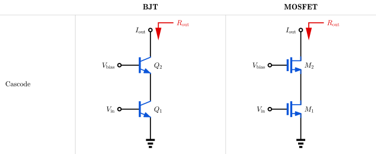
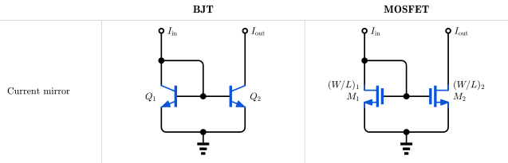

<!DOCTYPE html>


<html lang="en" data-content_root="../../" >

  <head>
    <meta charset="utf-8" />
    <meta name="viewport" content="width=device-width, initial-scale=1.0" /><meta name="viewport" content="width=device-width, initial-scale=1" />

    <title>BJT and MOSFET Problem Bank: Cascodes and Current Mirrors &#8212; Intelligent Visual Computing</title>
  
  
  
  <script data-cfasync="false">
    document.documentElement.dataset.mode = localStorage.getItem("mode") || "";
    document.documentElement.dataset.theme = localStorage.getItem("theme") || "";
  </script>
  <!--
    this give us a css class that will be invisible only if js is disabled
  -->
  <noscript>
    <style>
      .pst-js-only { display: none !important; }

    </style>
  </noscript>
  
  <!-- Loaded before other Sphinx assets -->
  <link href="../../_static/styles/theme.css?digest=8878045cc6db502f8baf" rel="stylesheet" />
<link href="../../_static/styles/pydata-sphinx-theme.css?digest=8878045cc6db502f8baf" rel="stylesheet" />

    <link rel="stylesheet" type="text/css" href="../../_static/pygments.css?v=03e43079" />
    <link rel="stylesheet" type="text/css" href="../../_static/styles/sphinx-book-theme.css?v=3c74b3bc" />
    <link rel="stylesheet" type="text/css" href="../../_static/togglebutton.css?v=13237357" />
    <link rel="stylesheet" type="text/css" href="../../_static/copybutton.css?v=76b2166b" />
    <link rel="stylesheet" type="text/css" href="../../_static/mystnb.11b39860a7a0cbfd473a3ad8a317855267ff0bd372690045ca344a6b62be495e.css" />
    <link rel="stylesheet" type="text/css" href="../../_static/sphinx-thebe.css?v=4fa983c6" />
    <link rel="stylesheet" type="text/css" href="../../_static/sphinx-design.min.css?v=6a604523" />
    <link rel="stylesheet" type="text/css" href="../../_static/custom.css?v=116f1220" />
  
  <!-- So that users can add custom icons -->
  <script src="../../_static/scripts/fontawesome.js?digest=8878045cc6db502f8baf"></script>
  <!-- Pre-loaded scripts that we'll load fully later -->
  <link rel="preload" as="script" href="../../_static/scripts/bootstrap.js?digest=8878045cc6db502f8baf" />
<link rel="preload" as="script" href="../../_static/scripts/pydata-sphinx-theme.js?digest=8878045cc6db502f8baf" />

    <script src="../../_static/documentation_options.js?v=9eb32ce0"></script>
    <script src="../../_static/doctools.js?v=9a2dae69"></script>
    <script src="../../_static/sphinx_highlight.js?v=dc90522c"></script>
    <script src="../../_static/clipboard.min.js?v=a7894cd8"></script>
    <script src="../../_static/copybutton.js?v=f281be69"></script>
    <script src="../../_static/scripts/sphinx-book-theme.js?v=fab101a9"></script>
    <script>let toggleHintShow = 'Click to show';</script>
    <script>let toggleHintHide = 'Click to hide';</script>
    <script>let toggleOpenOnPrint = 'true';</script>
    <script src="../../_static/togglebutton.js?v=4a39c7ea"></script>
    <script>var togglebuttonSelector = '.toggle, .admonition.dropdown';</script>
    <script data-sd-tabs-storage-prefix="sphinx-design-tab-id-" src="../../_static/design-tabs.js?v=fcb327ea"></script>
    <script>const THEBE_JS_URL = "https://unpkg.com/thebe@0.8.2/lib/index.js"; const thebe_selector = ".thebe,.cell"; const thebe_selector_input = "pre"; const thebe_selector_output = ".output, .cell_output"</script>
    <script async="async" src="../../_static/sphinx-thebe.js?v=c100c467"></script>
    <script>var togglebuttonSelector = '.toggle, .admonition.dropdown';</script>
    <script>const THEBE_JS_URL = "https://unpkg.com/thebe@0.8.2/lib/index.js"; const thebe_selector = ".thebe,.cell"; const thebe_selector_input = "pre"; const thebe_selector_output = ".output, .cell_output"</script>
    <script>window.MathJax = {"options": {"processHtmlClass": "tex2jax_process|mathjax_process|math|output_area"}}</script>
    <script defer="defer" src="https://cdn.jsdelivr.net/npm/mathjax@3/es5/tex-mml-chtml.js"></script>
    <script>DOCUMENTATION_OPTIONS.pagename = 'courses/fme/bank_mirrors';</script>
    <link rel="index" title="Index" href="../../genindex.html" />
    <link rel="search" title="Search" href="../../search.html" />
    <link rel="next" title="BJT and MOSFET Problem Bank: Differential Pairs" href="bank_pairs.html" />
    <link rel="prev" title="BJT and MOSFET Problem Bank: Amplifier Stages" href="bank_stages.html" />
  <meta name="viewport" content="width=device-width, initial-scale=1"/>
  <meta name="docsearch:language" content="en"/>
  <meta name="docsearch:version" content="" />
  </head>
  
  
  <body data-bs-spy="scroll" data-bs-target=".bd-toc-nav" data-offset="180" data-bs-root-margin="0px 0px -60%" data-default-mode="">

  
  
  <div id="pst-skip-link" class="skip-link d-print-none"><a href="#main-content">Skip to main content</a></div>
  
  <div id="pst-scroll-pixel-helper"></div>
  
  <button type="button" class="btn rounded-pill" id="pst-back-to-top">
    <i class="fa-solid fa-arrow-up"></i>Back to top</button>

  
  <dialog id="pst-search-dialog">
    
<form class="bd-search d-flex align-items-center"
      action="../../search.html"
      method="get">
  <i class="fa-solid fa-magnifying-glass"></i>
  <input type="search"
         class="form-control"
         name="q"
         placeholder="Search this book..."
         aria-label="Search this book..."
         autocomplete="off"
         autocorrect="off"
         autocapitalize="off"
         spellcheck="false"/>
  <span class="search-button__kbd-shortcut"><kbd class="kbd-shortcut__modifier">Ctrl</kbd>+<kbd>K</kbd></span>
</form>
  </dialog>

  <div class="pst-async-banner-revealer d-none">
  <aside id="bd-header-version-warning" class="d-none d-print-none" aria-label="Version warning"></aside>
</div>

  
    <header class="bd-header navbar navbar-expand-lg bd-navbar d-print-none">
    </header>
  

  <div class="bd-container">
    <div class="bd-container__inner bd-page-width">
      
      
      
      <dialog id="pst-primary-sidebar-modal"></dialog>
      <div id="pst-primary-sidebar" class="bd-sidebar-primary bd-sidebar">
        

  
  <div class="sidebar-header-items sidebar-primary__section">
    
    
    
    
  </div>
  
    <div class="sidebar-primary-items__start sidebar-primary__section">
        <div class="sidebar-primary-item">

  
    
  

<a class="navbar-brand logo" href="../../home.html">
  
  
  
  
  
    
    
      
    
    
    
    
  
  
</a></div>
        <div class="sidebar-primary-item">

<button class="btn search-button-field search-button__button pst-js-only" title="Search" aria-label="Search" data-bs-placement="bottom" data-bs-toggle="tooltip">
 <i class="fa-solid fa-magnifying-glass"></i>
 <span class="search-button__default-text">Search</span>
 <span class="search-button__kbd-shortcut"><kbd class="kbd-shortcut__modifier">Ctrl</kbd>+<kbd class="kbd-shortcut__modifier">K</kbd></span>
</button></div>
        <div class="sidebar-primary-item"><nav class="bd-links bd-docs-nav" aria-label="Main">
    <div class="bd-toc-item navbar-nav active">
        
        <ul class="nav bd-sidenav bd-sidenav__home-link">
            <li class="toctree-l1">
                <a class="reference internal" href="../../home.html">
                    Welcome
                </a>
            </li>
        </ul>
        <p aria-level="2" class="caption" role="heading"><span class="caption-text">Digital Signal Processing</span></p>
<ul class="nav bd-sidenav">
<li class="toctree-l1"><a class="reference internal" href="../dsp/signals.html">Signals and Sequences</a></li>
<li class="toctree-l1"><a class="reference internal" href="../dsp/systems.html">Systems and Transformations</a></li>
</ul>
<p aria-level="2" class="caption" role="heading"><span class="caption-text">Fundamentals of Microelectronics</span></p>
<ul class="current nav bd-sidenav">
<li class="toctree-l1"><a class="reference internal" href="index.html">BJT and MOSFET Circuits</a></li>
<li class="toctree-l1"><a class="reference internal" href="problems.html">BJT and MOSFET Problem Sets</a></li>
<li class="toctree-l1"><a class="reference internal" href="bank_one.html">BJT and MOSFET Problem Bank: One Transistor</a></li>
<li class="toctree-l1"><a class="reference internal" href="bank_bias.html">BJT and MOSFET Problem Bank: Bias</a></li>
<li class="toctree-l1"><a class="reference internal" href="bank_stages.html">BJT and MOSFET Problem Bank: Amplifier Stages</a></li>
<li class="toctree-l1 current active"><a class="current reference internal" href="#">BJT and MOSFET Problem Bank: Cascodes and Current Mirrors</a></li>
<li class="toctree-l1"><a class="reference internal" href="bank_pairs.html">BJT and MOSFET Problem Bank: Differential Pairs</a></li>
<li class="toctree-l1"><a class="reference internal" href="bank_other.html">BJT and MOSFET Problem Bank: Other Items</a></li>
</ul>
<p aria-level="2" class="caption" role="heading"><span class="caption-text">Medical Image Processing</span></p>
<ul class="nav bd-sidenav">
<li class="toctree-l1"><a class="reference internal" href="../mip/intro.html">Introduction</a></li>
<li class="toctree-l1"><a class="reference internal" href="../mip/sigsys.html">Signals and Systems</a></li>
<li class="toctree-l1"><a class="reference internal" href="../mip/xr.html">X-ray (XR) Imaging</a></li>
<li class="toctree-l1"><a class="reference internal" href="../mip/ct.html">Computed Tomography (CT)</a></li>
<li class="toctree-l1"><a class="reference internal" href="../mip/mr.html">Magnetic Resonance (MR) Imaging</a></li>
<li class="toctree-l1"><a class="reference internal" href="../mip/pt.html">Positron Emission Tomography (PET)</a></li>
<li class="toctree-l1"><a class="reference internal" href="../mip/es.html">Endoscopy (ES) Imaging</a></li>
<li class="toctree-l1"><a class="reference internal" href="../mip/histo.html">Histology / Histopathology Imaging</a></li>
<li class="toctree-l1"><a class="reference internal" href="../mip/em.html">Electron Microscopy (EM) Imaging</a></li>
</ul>
<p aria-level="2" class="caption" role="heading"><span class="caption-text">Simulation</span></p>
<ul class="nav bd-sidenav">
<li class="toctree-l1"><a class="reference internal" href="../sim/isaacsim101.html">IsaacSim101</a></li>
<li class="toctree-l1"><a class="reference internal" href="../sim/chapter0.html">Isaac Sim on a DGX Spark</a></li>
<li class="toctree-l1"><a class="reference internal" href="../sim/chapter1.html">Overview of Visualization</a></li>
</ul>
<p aria-level="2" class="caption" role="heading"><span class="caption-text">Research</span></p>
<ul class="nav bd-sidenav">
<li class="toctree-l1 has-children"><a class="reference internal" href="../../research/connectome/index.html">Connectome Agent</a><details><summary><span class="toctree-toggle" role="presentation"><i class="fa-solid fa-chevron-down"></i></span></summary><ul>
<li class="toctree-l2"><a class="reference internal" href="../../research/connectome/representation.html">Representation</a></li>
<li class="toctree-l2"><a class="reference internal" href="../../research/connectome/supervision.html">Supervision</a></li>
<li class="toctree-l2"><a class="reference internal" href="../../research/connectome/features.html">Features</a></li>
<li class="toctree-l2"><a class="reference internal" href="../../research/connectome/multiscale.html">Multi-scale</a></li>
<li class="toctree-l2"><a class="reference internal" href="../../research/connectome/agent.html">Agent</a></li>
</ul>
</details></li>
</ul>

    </div>
</nav></div>
    </div>
  
  
  <div class="sidebar-primary-items__end sidebar-primary__section">
      <div class="sidebar-primary-item">
<div id="ethical-ad-placement"
      class="flat"
      data-ea-publisher="readthedocs"
      data-ea-type="readthedocs-sidebar"
      data-ea-manual="true">
</div></div>
  </div>


      </div>
      
      <main id="main-content" class="bd-main" role="main">
        
        

<div class="sbt-scroll-pixel-helper"></div>

          <div class="bd-content">
            <div class="bd-article-container">
              
              <div class="bd-header-article d-print-none">
<div class="header-article-items header-article__inner">
  
    <div class="header-article-items__start">
      
        <div class="header-article-item"><button class="sidebar-toggle primary-toggle btn btn-sm" title="Toggle primary sidebar" data-bs-placement="bottom" data-bs-toggle="tooltip">
  <span class="fa-solid fa-bars"></span>
</button></div>
      
    </div>
  
  
    <div class="header-article-items__end">
      
        <div class="header-article-item">

<div class="article-header-buttons">


<div class="dropdown dropdown-source-buttons">
  <button class="btn dropdown-toggle" type="button" data-bs-toggle="dropdown" aria-expanded="false" aria-label="Source repositories">
    <i class="fab fa-github"></i>
  </button>
  <ul class="dropdown-menu">
      
      
      
      <li><a href="https://github.com/tmquan/ivcl" target="_blank"
   class="btn btn-sm btn-source-repository-button dropdown-item"
   title="Source repository"
   data-bs-placement="left" data-bs-toggle="tooltip"
>
  

<span class="btn__icon-container">
  <i class="fab fa-github"></i>
  </span>
<span class="btn__text-container">Repository</span>
</a>
</li>
      
      
      
      
      <li><a href="https://github.com/tmquan/ivcl/issues/new?title=Issue%20on%20page%20%2Fcourses/fme/bank_mirrors.html&body=Your%20issue%20content%20here." target="_blank"
   class="btn btn-sm btn-source-issues-button dropdown-item"
   title="Open an issue"
   data-bs-placement="left" data-bs-toggle="tooltip"
>
  

<span class="btn__icon-container">
  <i class="fas fa-lightbulb"></i>
  </span>
<span class="btn__text-container">Open issue</span>
</a>
</li>
      
  </ul>
</div>


<div class="dropdown dropdown-download-buttons">
  <button class="btn dropdown-toggle" type="button" data-bs-toggle="dropdown" aria-expanded="false" aria-label="Download this page">
    <i class="fas fa-download"></i>
  </button>
  <ul class="dropdown-menu">
      
      
      
      <li><a href="../../_sources/courses/fme/bank_mirrors.ipynb" target="_blank"
   class="btn btn-sm btn-download-source-button dropdown-item"
   title="Download source file"
   data-bs-placement="left" data-bs-toggle="tooltip"
>
  

<span class="btn__icon-container">
  <i class="fas fa-file"></i>
  </span>
<span class="btn__text-container">.ipynb</span>
</a>
</li>
      
      
      
      
      <li>
<button onclick="window.print()"
  class="btn btn-sm btn-download-pdf-button dropdown-item"
  title="Print to PDF"
  data-bs-placement="left" data-bs-toggle="tooltip"
>
  

<span class="btn__icon-container">
  <i class="fas fa-file-pdf"></i>
  </span>
<span class="btn__text-container">.pdf</span>
</button>
</li>
      
  </ul>
</div>


<button onclick="toggleFullScreen()"
  class="btn btn-sm btn-fullscreen-button pst-navbar-icon"
  title="Fullscreen mode"
  data-bs-placement="bottom" data-bs-toggle="tooltip"
>
  

<span class="btn__icon-container">
  <i class="fas fa-expand"></i>
  </span>

</button>


<button class="btn btn-sm nav-link pst-navbar-icon theme-switch-button pst-js-only" aria-label="Color mode" data-bs-title="Color mode"  data-bs-placement="bottom" data-bs-toggle="tooltip">
  <i class="theme-switch fa-solid fa-sun                fa-lg" data-mode="light" title="Light"></i>
  <i class="theme-switch fa-solid fa-moon               fa-lg" data-mode="dark"  title="Dark"></i>
  <i class="theme-switch fa-solid fa-circle-half-stroke fa-lg" data-mode="auto"  title="System Settings"></i>
</button>


<button class="btn btn-sm pst-navbar-icon search-button search-button__button pst-js-only" title="Search" aria-label="Search" data-bs-placement="bottom" data-bs-toggle="tooltip">
    <i class="fa-solid fa-magnifying-glass fa-lg"></i>
</button>
<button class="sidebar-toggle secondary-toggle btn btn-sm pst-navbar-icon" title="Toggle secondary sidebar" data-bs-placement="bottom" data-bs-toggle="tooltip">
    <span class="fa-solid fa-list"></span>
</button>
</div></div>
      
    </div>
  
</div>
</div>
              
              

<div id="jb-print-docs-body" class="onlyprint">
    <h1>BJT and MOSFET Problem Bank: Cascodes and Current Mirrors</h1>
    <!-- Table of contents -->
    <div id="print-main-content">
        <div id="jb-print-toc">
            
            <div>
                <h2> Contents </h2>
            </div>
            <nav aria-label="Page">
                <ul class="visible nav section-nav flex-column">
<li class="toc-h2 nav-item toc-entry"><a class="reference internal nav-link" href="#cascode-current-sources">Cascode Current Sources</a><ul class="nav section-nav flex-column">
<li class="toc-h3 nav-item toc-entry"><a class="reference internal nav-link" href="#cascode">Cascode</a></li>
<li class="toc-h3 nav-item toc-entry"><a class="reference internal nav-link" href="#other-circuits">Other Circuits</a></li>
</ul>
</li>
<li class="toc-h2 nav-item toc-entry"><a class="reference internal nav-link" href="#cascode-amplifiers">Cascode Amplifiers</a><ul class="nav section-nav flex-column">
<li class="toc-h3 nav-item toc-entry"><a class="reference internal nav-link" href="#id1">Cascode</a></li>
<li class="toc-h3 nav-item toc-entry"><a class="reference internal nav-link" href="#id2">Other Circuits</a></li>
</ul>
</li>
<li class="toc-h2 nav-item toc-entry"><a class="reference internal nav-link" href="#current-mirrors">Current Mirrors</a><ul class="nav section-nav flex-column">
<li class="toc-h3 nav-item toc-entry"><a class="reference internal nav-link" href="#current-mirror">Current mirror</a></li>
<li class="toc-h3 nav-item toc-entry"><a class="reference internal nav-link" href="#id3">Other Circuits</a></li>
</ul>
</li>
<li class="toc-h2 nav-item toc-entry"><a class="reference internal nav-link" href="#improved-current-mirrors">Improved Current Mirrors</a><ul class="nav section-nav flex-column">
<li class="toc-h3 nav-item toc-entry"><a class="reference internal nav-link" href="#id4">Other Circuits</a></li>
</ul>
</li>
<li class="toc-h2 nav-item toc-entry"><a class="reference internal nav-link" href="#current-steering-and-biasing">Current Steering and Biasing</a><ul class="nav section-nav flex-column">
<li class="toc-h3 nav-item toc-entry"><a class="reference internal nav-link" href="#id5">Other Circuits</a></li>
</ul>
</li>
</ul>
            </nav>
        </div>
    </div>
</div>

              
                
<div id="searchbox"></div>
                <article class="bd-article">
                  
  <section class="tex2jax_ignore mathjax_ignore" id="bjt-and-mosfet-problem-bank-cascodes-and-current-mirrors">
<h1>BJT and MOSFET Problem Bank: Cascodes and Current Mirrors<a class="headerlink" href="#bjt-and-mosfet-problem-bank-cascodes-and-current-mirrors" title="Link to this heading">#</a></h1>
<p>Every worked example and every problem of this kind in two textbooks, each solved step by step: Razavi, <em>Fundamentals of Microelectronics</em> (chapters 4 to 7, 9 and 10) and Sedra/Smith, <em>Microelectronic Circuits</em>, eighth international edition (chapters 4 to 8). The statements are in our words and the numbers of an item are those of the book. This page holds 151 of the 1219 items; the natures and their solution patterns are introduced on <a class="reference internal" href="problems.html"><span class="std std-doc">BJT and MOSFET Problem Sets</span></a>.</p>
<p>Inside a nature, the items whose circuit we have drawn come under that drawing; the others describe their circuit in words. An item that repeats another with other values follows it and says so. Every numeric result was recomputed by a program. The last line of an item says how it was checked: against the answer the book or its solutions manual publishes, or, where none is published, by computation alone. An item marked <em>needs review</em> rests on a reading of the book that we could not confirm.</p>
<div class="pst-scrollable-table-container"><table class="table">
<thead>
<tr class="row-odd"><th class="head"><p>Nature</p></th>
<th class="head"><p>Razavi, examples</p></th>
<th class="head"><p>Razavi, problems</p></th>
<th class="head"><p>Sedra/Smith, exercises</p></th>
<th class="head"><p>Sedra/Smith, problems</p></th>
</tr>
</thead>
<tbody>
<tr class="row-even"><td><p>Cascode Current Sources</p></td>
<td><p>7</p></td>
<td><p>18</p></td>
<td><p>1</p></td>
<td><p>6</p></td>
</tr>
<tr class="row-odd"><td><p>Cascode Amplifiers</p></td>
<td><p>3</p></td>
<td><p>18</p></td>
<td><p>4</p></td>
<td><p>12</p></td>
</tr>
<tr class="row-even"><td><p>Current Mirrors</p></td>
<td><p>8</p></td>
<td><p>17</p></td>
<td><p>6</p></td>
<td><p>18</p></td>
</tr>
<tr class="row-odd"><td><p>Improved Current Mirrors</p></td>
<td><p>0</p></td>
<td><p>0</p></td>
<td><p>3</p></td>
<td><p>16</p></td>
</tr>
<tr class="row-even"><td><p>Current Steering and Biasing</p></td>
<td><p>2</p></td>
<td><p>6</p></td>
<td><p>1</p></td>
<td><p>5</p></td>
</tr>
</tbody>
</table>
</div>
<div class="cell tag_hide-input docutils container">
<details class="admonition hide above-input">
<summary aria-label="Toggle hidden content">
<p class="collapsed admonition-title">Show code cell source</p>
<p class="expanded admonition-title">Hide code cell source</p>
</summary>
<div class="cell_input docutils container">
<div class="highlight-ipython3 notranslate"><div class="highlight"><pre><span></span><span class="c1"># HIDE/SHOW</span>
<span class="kn">import</span><span class="w"> </span><span class="nn">warnings</span>
<span class="n">warnings</span><span class="o">.</span><span class="n">filterwarnings</span><span class="p">(</span><span class="s1">'ignore'</span><span class="p">)</span>

<span class="kn">import</span><span class="w"> </span><span class="nn">matplotlib.pyplot</span><span class="w"> </span><span class="k">as</span><span class="w"> </span><span class="nn">plt</span>
<span class="o">%</span><span class="k">matplotlib</span> inline
<span class="o">%</span><span class="k">config</span> InlineBackend.figure_formats = ['svg']
<span class="o">%</span><span class="k">config</span> InlineBackend.print_figure_kwargs = {'bbox_inches': None}   # keep every figure at its full width
<span class="n">plt</span><span class="o">.</span><span class="n">rcParams</span><span class="p">[</span><span class="s1">'svg.hashsalt'</span><span class="p">]</span> <span class="o">=</span> <span class="s1">'fme'</span>            <span class="c1"># reproducible SVG output</span>

<span class="kn">from</span><span class="w"> </span><span class="nn">schematic</span><span class="w"> </span><span class="kn">import</span> <span class="n">show</span>
<span class="kn">from</span><span class="w"> </span><span class="nn">schematic</span><span class="w"> </span><span class="kn">import</span> <span class="n">circuits</span> <span class="k">as</span> <span class="n">C</span>
</pre></div>
</div>
</div>
</details>
</div>
<section id="cascode-current-sources">
<h2>Cascode Current Sources<a class="headerlink" href="#cascode-current-sources" title="Link to this heading">#</a></h2>
<section id="cascode">
<h3>Cascode<a class="headerlink" href="#cascode" title="Link to this heading">#</a></h3>
<div class="cell tag_hide-input docutils container">
<details class="admonition hide above-input">
<summary aria-label="Toggle hidden content">
<p class="collapsed admonition-title">Show code cell source</p>
<p class="expanded admonition-title">Hide code cell source</p>
</summary>
<div class="cell_input docutils container">
<div class="highlight-ipython3 notranslate"><div class="highlight"><pre><span></span><span class="c1"># HIDE/SHOW</span>
<span class="n">show</span><span class="p">(</span><span class="n">C</span><span class="o">.</span><span class="n">cascode</span><span class="p">)</span>
</pre></div>
</div>
</div>
</details>
<div class="cell_output docutils container">

</div>
</div>
<p><strong>Razavi, Example 5.30</strong> (BJT)</p>
<p>Two npn transistors are stacked. <span class="math notranslate nohighlight">\(Q_2\)</span> has its emitter at ground and its base at a fixed dc voltage <span class="math notranslate nohighlight">\(V_{b1}\)</span>; its collector feeds the emitter of <span class="math notranslate nohighlight">\(Q_1\)</span>. <span class="math notranslate nohighlight">\(Q_1\)</span> has its base at a fixed voltage <span class="math notranslate nohighlight">\(V_{b2}\)</span>. Find the small-signal output resistance at the collector of <span class="math notranslate nohighlight">\(Q_1\)</span> (a cascode).</p>
<p>Given: symbolic: <span class="math notranslate nohighlight">\(g_{m1}\)</span>, <span class="math notranslate nohighlight">\(r_{\pi1}\)</span>, <span class="math notranslate nohighlight">\(r_{O1}\)</span>, <span class="math notranslate nohighlight">\(r_{O2}\)</span> (both bases at ac ground)</p>
<ol class="arabic simple">
<li><p><strong>What <span class="math notranslate nohighlight">\(Q_2\)</span> looks like.</strong> Its base-emitter voltage is fixed by <span class="math notranslate nohighlight">\(V_{b1}\)</span>, so <span class="math notranslate nohighlight">\(v_{\pi2}=0\)</span> and its current source <span class="math notranslate nohighlight">\(g_{m2}v_{\pi2}\)</span> is zero. Only its output resistance remains: <span class="math notranslate nohighlight">\(Q_2\)</span> is replaced by <span class="math notranslate nohighlight">\(r_{O2}\)</span> from the emitter of <span class="math notranslate nohighlight">\(Q_1\)</span> to ground.</p></li>
<li><p><strong>Recognize the topology.</strong> <span class="math notranslate nohighlight">\(Q_1\)</span> now has its base grounded and an emitter resistance <span class="math notranslate nohighlight">\(r_{O2}\)</span>: an emitter-degenerated stage with <span class="math notranslate nohighlight">\(R_E=r_{O2}\)</span>.</p></li>
<li><p><strong>Apply the degenerated-stage result.</strong> <span class="math notranslate nohighlight">\(R_{out}=[1+g_{m1}(r_{O2}\parallel r_{\pi1})]\,r_{O1}+(r_{O2}\parallel r_{\pi1})\)</span>, which the book quotes as <span class="math notranslate nohighlight">\(R_{out}\approx[1+g_{m1}(r_{O2}\parallel r_{\pi1})]\,r_{O1}\)</span>.</p></li>
<li><p><strong>Special case.</strong> If <span class="math notranslate nohighlight">\(r_{O2}\gg r_{\pi1}\)</span> then <span class="math notranslate nohighlight">\(r_{O2}\parallel r_{\pi1}\approx r_{\pi1}\)</span> and <span class="math notranslate nohighlight">\(R_{out}\approx(1+g_{m1}r_{\pi1})r_{O1}=(\beta+1)\,r_{O1}\)</span>. If instead <span class="math notranslate nohighlight">\(r_{O2}\ll r_{\pi1}\)</span>, then <span class="math notranslate nohighlight">\(R_{out}\approx(1+g_{m1}r_{O2})r_{O1}+r_{O2}\)</span>.</p></li>
</ol>
<p><strong>Result.</strong> <span class="math notranslate nohighlight">\(R_{out}=[1+g_{m1}(r_{O2}\parallel r_{\pi1})]\,r_{O1}+(r_{O2}\parallel r_{\pi1})\)</span></p>
<p>Checked: agrees with the answer in the book.</p>
<p><strong>Razavi, Example 9.1</strong> (BJT)</p>
<p>An npn cascode current source has a lower transistor Q2 (emitter grounded, base at a fixed bias) and an upper transistor Q1 (base at a fixed bias) whose emitter sits on the collector of Q2. The output is taken at the collector of Q1. Both transistors are identical, carry <span class="math notranslate nohighlight">\(1\,\mathrm{mA}\)</span> and have <span class="math notranslate nohighlight">\(\beta=100\)</span>, <span class="math notranslate nohighlight">\(V_A=5\,\mathrm{V}\)</span>. Find the small-signal output resistance and compare it with that of a single transistor.</p>
<p>Given: <span class="math notranslate nohighlight">\(I_{C1}=I_{C2}=1\,\mathrm{mA}\)</span>, <span class="math notranslate nohighlight">\(\beta=100\)</span>, <span class="math notranslate nohighlight">\(V_{A1}=V_{A2}=5\,\mathrm{V}\)</span>, <span class="math notranslate nohighlight">\(V_T=26\,\mathrm{mV}\)</span></p>
<ol class="arabic simple">
<li><p><strong>Model of the lower transistor.</strong> Its base-emitter voltage is fixed, so for small signals Q2 is just its output resistance <span class="math notranslate nohighlight">\(r_{O2}\)</span> from the emitter node of Q1 to ground.</p></li>
<li><p><strong>Output resistance of Q1 with emitter load.</strong> Q1 sees <span class="math notranslate nohighlight">\(r_{O2}\)</span> from its emitter to ground, in parallel with its own <span class="math notranslate nohighlight">\(r_{\pi1}\)</span> (the emitter also looks into the base-emitter path): <span class="math notranslate nohighlight">\(R_{out}=\left[1+g_{m1}(r_{O2}\parallel r_{\pi1})\right]r_{O1}+r_{O2}\parallel r_{\pi1}\approx g_{m1}r_{O1}(r_{O2}\parallel r_{\pi1})\)</span>.</p></li>
<li><p><strong>Small-signal parameters.</strong> <span class="math notranslate nohighlight">\(g_m=I_C/V_T=1\,\mathrm{mA}/26\,\mathrm{mV}=38.5\,\mathrm{mS}\)</span> (i.e. <span class="math notranslate nohighlight">\(1/26\,\Omega\)</span>), <span class="math notranslate nohighlight">\(r_O=V_A/I_C=5\,\mathrm{k}\Omega\)</span>, <span class="math notranslate nohighlight">\(r_\pi=\beta/g_m=2.6\,\mathrm{k}\Omega\)</span>.</p></li>
<li><p><strong>Parallel combination.</strong> <span class="math notranslate nohighlight">\(r_{O2}\parallel r_{\pi1}=\dfrac{5\cdot2.6}{5+2.6}\,\mathrm{k}\Omega=1.71\,\mathrm{k}\Omega\)</span>.</p></li>
<li><p><strong>Approximate output resistance.</strong> <span class="math notranslate nohighlight">\(R_{out}\approx g_{m1}r_{O1}(r_{O2}\parallel r_{\pi1})=\dfrac{5000}{26}\cdot1710\,\Omega=329\,\mathrm{k}\Omega\)</span>.</p></li>
<li><p><strong>Exact expression.</strong> <span class="math notranslate nohighlight">\(R_{out}=(1+65.8)\cdot5\,\mathrm{k}\Omega+1.71\,\mathrm{k}\Omega=336\,\mathrm{k}\Omega\)</span>; the approximation is 2 % low.</p></li>
<li><p><strong>Compare with one transistor.</strong> A single transistor gives <span class="math notranslate nohighlight">\(r_{O1}=5\,\mathrm{k}\Omega\)</span>, so cascoding raises the output resistance by <span class="math notranslate nohighlight">\(329/5\approx66\)</span>.</p></li>
</ol>
<p><strong>Result.</strong> <span class="math notranslate nohighlight">\(R_{out}\approx329\,\mathrm{k}\Omega\)</span> (exact formula <span class="math notranslate nohighlight">\(336\,\mathrm{k}\Omega\)</span>), about 66 times <span class="math notranslate nohighlight">\(r_O=5\,\mathrm{k}\Omega\)</span></p>
<p>Checked: agrees with the answer in the book.</p>
<p><strong>Razavi, Example 9.2</strong> (BJT)</p>
<p>Same npn cascode current source as in Example 9.1 (both transistors at <span class="math notranslate nohighlight">\(1\,\mathrm{mA}\)</span>, <span class="math notranslate nohighlight">\(\beta=100\)</span>, upper device <span class="math notranslate nohighlight">\(V_{A1}=5\,\mathrm{V}\)</span>), but the lower transistor Q2 now has <span class="math notranslate nohighlight">\(V_{A2}=50\,\mathrm{V}\)</span>. Find the output resistance and compare it with the upper bound of the bipolar cascode, <span class="math notranslate nohighlight">\(\beta r_{O1}\)</span>.</p>
<p>Given: <span class="math notranslate nohighlight">\(I_C=1\,\mathrm{mA}\)</span>, <span class="math notranslate nohighlight">\(\beta=100\)</span>, <span class="math notranslate nohighlight">\(V_{A1}=5\,\mathrm{V}\)</span>, <span class="math notranslate nohighlight">\(V_{A2}=50\,\mathrm{V}\)</span>, <span class="math notranslate nohighlight">\(V_T=26\,\mathrm{mV}\)</span></p>
<ol class="arabic simple">
<li><p><strong>Parameters.</strong> <span class="math notranslate nohighlight">\(g_{m1}=1/26\,\Omega\)</span>, <span class="math notranslate nohighlight">\(r_{\pi1}=\beta/g_{m1}=2.6\,\mathrm{k}\Omega\)</span>, <span class="math notranslate nohighlight">\(r_{O1}=5\,\mathrm{k}\Omega\)</span>, <span class="math notranslate nohighlight">\(r_{O2}=50\,\mathrm{k}\Omega\)</span>.</p></li>
<li><p><strong>Parallel resistance at the emitter of Q1.</strong> <span class="math notranslate nohighlight">\(r_{O2}\parallel r_{\pi1}=\dfrac{50\cdot2.6}{52.6}\,\mathrm{k}\Omega=2.47\,\mathrm{k}\Omega\)</span>.</p></li>
<li><p><strong>Output resistance.</strong> <span class="math notranslate nohighlight">\(R_{out}\approx g_{m1}r_{O1}(r_{O2}\parallel r_{\pi1})=192.3\times2.47\,\mathrm{k}\Omega=475\,\mathrm{k}\Omega\)</span> (exact formula: <span class="math notranslate nohighlight">\(483\,\mathrm{k}\Omega\)</span>).</p></li>
<li><p><strong>Upper bound.</strong> Letting <span class="math notranslate nohighlight">\(r_{O2}\to\infty\)</span> leaves only <span class="math notranslate nohighlight">\(r_{\pi1}\)</span> at the emitter, so <span class="math notranslate nohighlight">\(R_{out,max}\approx g_{m1}r_{O1}r_{\pi1}=\beta r_{O1}=500\,\mathrm{k}\Omega\)</span>.</p></li>
<li><p><strong>Comparison.</strong> The bound is <span class="math notranslate nohighlight">\(500/475=1.05\)</span> times the result, i.e. about 5 % higher: raising <span class="math notranslate nohighlight">\(r_{O2}\)</span> tenfold gains only a little beyond Example 9.1.</p></li>
</ol>
<p><strong>Result.</strong> <span class="math notranslate nohighlight">\(R_{out}\approx475\,\mathrm{k}\Omega\)</span>; bound <span class="math notranslate nohighlight">\(\beta r_{O1}=500\,\mathrm{k}\Omega\)</span>, about 5 % higher</p>
<p>Checked: agrees with the answer in the book.</p>
<p><strong>Razavi, Example 9.5</strong> (MOSFET)</p>
<p>Design an NMOS cascode current source (M2 with grounded source and fixed gate bias, M1 stacked on its drain, output at the drain of M1) for an output resistance of <span class="math notranslate nohighlight">\(500\,\mathrm{k}\Omega\)</span> at <span class="math notranslate nohighlight">\(0.5\,\mathrm{mA}\)</span>. For simplicity take M1 and M2 identical.</p>
<p>Given: <span class="math notranslate nohighlight">\(I_D=0.5\,\mathrm{mA}\)</span>, <span class="math notranslate nohighlight">\(\mu_nC_{ox}=100\,\mu\mathrm{A/V^2}\)</span>, <span class="math notranslate nohighlight">\(\lambda=0.1\,\mathrm{V^{-1}}\)</span>, <span class="math notranslate nohighlight">\(R_{out}=500\,\mathrm{k}\Omega\)</span></p>
<ol class="arabic simple">
<li><p><strong>Output resistance formula.</strong> <span class="math notranslate nohighlight">\(R_{out}=(1+g_{m1}r_{O2})r_{O1}+r_{O2}\approx g_{m1}r_{O1}r_{O2}\)</span>.</p></li>
<li><p><strong>Output resistance of each device.</strong> <span class="math notranslate nohighlight">\(r_{O1}=r_{O2}=\dfrac1{\lambda I_D}=\dfrac1{0.1\cdot0.5\,\mathrm{mA}}=20\,\mathrm{k}\Omega\)</span>.</p></li>
<li><p><strong>Required transconductance.</strong> <span class="math notranslate nohighlight">\(g_m\cdot(20\,\mathrm{k}\Omega)^2=500\,\mathrm{k}\Omega\Rightarrow g_m=\dfrac{500\,\mathrm{k}\Omega}{4\times10^8\,\Omega^2}=1.25\,\mathrm{mS}=\dfrac1{800\,\Omega}\)</span>.</p></li>
<li><p><strong>Aspect ratio.</strong> <span class="math notranslate nohighlight">\(g_m=\sqrt{2\mu_nC_{ox}(W/L)I_D}\)</span>, so <span class="math notranslate nohighlight">\(\dfrac WL=\dfrac{g_m^2}{2\mu_nC_{ox}I_D}=\dfrac{(1.25\,\mathrm{mS})^2}{2\cdot100\,\mu\mathrm{A/V^2}\cdot0.5\,\mathrm{mA}}=15.6\)</span>.</p></li>
<li><p><strong>Check of the assumption.</strong> <span class="math notranslate nohighlight">\(g_mr_O=1.25\,\mathrm{mS}\cdot20\,\mathrm{k}\Omega=25\gg1\)</span>, so the approximation is acceptable. (The exact formula with this <span class="math notranslate nohighlight">\(W/L\)</span> gives <span class="math notranslate nohighlight">\(26\cdot20+20=540\,\mathrm{k}\Omega\)</span>, about 8 % above target.)</p></li>
</ol>
<p><strong>Result.</strong> <span class="math notranslate nohighlight">\(W/L\approx15.6\)</span> for both transistors (<span class="math notranslate nohighlight">\(g_m=1/800\,\Omega\)</span>, <span class="math notranslate nohighlight">\(r_O=20\,\mathrm{k}\Omega\)</span>, <span class="math notranslate nohighlight">\(g_mr_O=25\)</span>)</p>
<p>Checked: agrees with the answer in the book.</p>
<p><strong>Razavi, Problem 9.1</strong> (BJT)</p>
<p>Bipolar cascode current source: npn <span class="math notranslate nohighlight">\(Q_2\)</span> has its emitter grounded and its base at <span class="math notranslate nohighlight">\(V_{b2}\)</span>; npn <span class="math notranslate nohighlight">\(Q_1\)</span> sits on top, emitter at the collector of <span class="math notranslate nohighlight">\(Q_2\)</span>, base at <span class="math notranslate nohighlight">\(V_{b1}\)</span>; the output is the collector of <span class="math notranslate nohighlight">\(Q_1\)</span>. Both devices have <span class="math notranslate nohighlight">\(I_S=6\times10^{-17}\,\mathrm{A}\)</span> and <span class="math notranslate nohighlight">\(\beta=100\)</span>; ignore the Early effect. (a) Find <span class="math notranslate nohighlight">\(V_{b2}\)</span> for a bias (output) current of <span class="math notranslate nohighlight">\(1\,\mathrm{mA}\)</span>. (b) Using <span class="math notranslate nohighlight">\(V_{CE2}=V_{b1}-V_{BE1}\)</span>, find <span class="math notranslate nohighlight">\(V_{b1}\)</span> such that the base-collector junction of <span class="math notranslate nohighlight">\(Q_2\)</span> is forward biased by only <span class="math notranslate nohighlight">\(300\,\mathrm{mV}\)</span>.</p>
<p>Given: <span class="math notranslate nohighlight">\(I_S=6\times10^{-17}\,\mathrm{A}\)</span>, <span class="math notranslate nohighlight">\(\beta=100\)</span>, <span class="math notranslate nohighlight">\(V_A=\infty\)</span>, <span class="math notranslate nohighlight">\(I_{C1}=1\,\mathrm{mA}\)</span>, <span class="math notranslate nohighlight">\(V_T=26\,\mathrm{mV}\)</span></p>
<ol class="arabic simple">
<li><p><strong>(a) Current of the lower device.</strong> <span class="math notranslate nohighlight">\(Q_2\)</span> carries the emitter current of <span class="math notranslate nohighlight">\(Q_1\)</span>: <span class="math notranslate nohighlight">\(I_{C2}=I_{E1}=\dfrac{\beta+1}{\beta}I_{C1}=1.01\,\mathrm{mA}\)</span></p></li>
<li><p><strong>(a) Base voltage of Q2.</strong> <span class="math notranslate nohighlight">\(V_{b2}=V_{BE2}=V_T\ln\dfrac{I_{C2}}{I_S}=0.026\ln\dfrac{1.01\times10^{-3}}{6\times10^{-17}}=0.792\,\mathrm{V}\)</span></p></li>
<li><p><strong>(b) Base-emitter voltage of Q1.</strong> <span class="math notranslate nohighlight">\(V_{BE1}=V_T\ln\dfrac{I_{C1}}{I_S}=0.026\ln\dfrac{10^{-3}}{6\times10^{-17}}=0.792\,\mathrm{V}\)</span> (<span class="math notranslate nohighlight">\(0.7916\)</span> V)</p></li>
<li><p><strong>(b) Condition on Q2.</strong> Forward bias of <span class="math notranslate nohighlight">\(300\,\mathrm{mV}\)</span>: <span class="math notranslate nohighlight">\(V_{B2}-V_{C2}=0.3\,\mathrm{V}\)</span>, so <span class="math notranslate nohighlight">\(V_{C2}=V_{b2}-0.3=0.492\,\mathrm{V}\)</span></p></li>
<li><p><strong>(b) Base voltage of Q1.</strong> <span class="math notranslate nohighlight">\(V_{b1}=V_{C2}+V_{BE1}=V_{b2}-0.3+V_{BE1}=0.7918-0.3+0.7916=1.28\,\mathrm{V}\)</span></p></li>
<li><p><strong>(b) Meaning.</strong> This is the lowest <span class="math notranslate nohighlight">\(V_{b1}\)</span> allowed; any higher <span class="math notranslate nohighlight">\(V_{b1}\)</span> lifts <span class="math notranslate nohighlight">\(V_{C2}\)</span> and reduces the forward bias of <span class="math notranslate nohighlight">\(Q_2\)</span></p></li>
</ol>
<p><strong>Result.</strong> (a) <span class="math notranslate nohighlight">\(V_{b2}=0.792\,\mathrm{V}\)</span>; (b) <span class="math notranslate nohighlight">\(V_{b1}=1.28\,\mathrm{V}\)</span> (minimum)</p>
<p>Checked by computation; the book gives no answer.</p>
<p><strong>Razavi, Problem 9.9</strong> (BJT)</p>
<p>For a bipolar cascode current source with identical devices at collector current <span class="math notranslate nohighlight">\(I_C\)</span>, Eq. (9.9) gives <span class="math notranslate nohighlight">\(R_{out}\approx\dfrac{1}{I_C}\cdot\dfrac{V_A}{V_T}\cdot\dfrac{\beta V_AV_T}{V_A+\beta V_T}\)</span>. Discrete transistors have Early voltages of tens of volts, so <span class="math notranslate nohighlight">\(V_A\gg\beta V_T\)</span> for <span class="math notranslate nohighlight">\(\beta&lt;100\)</span>. Simplify the expression under this approximation and explain why it matches the upper bound <span class="math notranslate nohighlight">\(R_{out}\approx\beta r_O\)</span> of Eq. (9.12).</p>
<p>Given: <span class="math notranslate nohighlight">\(V_A\gg\beta V_T\)</span>, <span class="math notranslate nohighlight">\(r_O=V_A/I_C\)</span>, <span class="math notranslate nohighlight">\(r_\pi=\beta V_T/I_C\)</span></p>
<ol class="arabic simple">
<li><p><strong>Start.</strong> <span class="math notranslate nohighlight">\(R_{out}\approx\dfrac{1}{I_C}\cdot\dfrac{V_A}{V_T}\cdot\dfrac{\beta V_AV_T}{V_A+\beta V_T}\)</span></p></li>
<li><p><strong>Approximate.</strong> <span class="math notranslate nohighlight">\(V_A+\beta V_T\approx V_A\)</span>, so <span class="math notranslate nohighlight">\(R_{out}\approx\dfrac{1}{I_C}\cdot\dfrac{V_A}{V_T}\cdot\beta V_T=\dfrac{\beta V_A}{I_C}=\beta r_O\)</span></p></li>
<li><p><strong>Why.</strong> <span class="math notranslate nohighlight">\(V_A\gg\beta V_T\)</span> means <span class="math notranslate nohighlight">\(r_{O2}=V_A/I_C\gg r_{\pi1}=\beta V_T/I_C\)</span>, so <span class="math notranslate nohighlight">\(r_{O2}\parallel r_{\pi1}\approx r_{\pi1}\)</span> and <span class="math notranslate nohighlight">\(g_{m1}r_{O1}(r_{O2}\parallel r_{\pi1})\to g_{m1}r_{O1}r_{\pi1}=\beta r_{O1}\)</span>, which is Eq. (9.12)</p></li>
<li><p><strong>Example.</strong> <span class="math notranslate nohighlight">\(V_A=50\,\mathrm{V}\)</span>, <span class="math notranslate nohighlight">\(\beta=100\)</span>, <span class="math notranslate nohighlight">\(I_C=1\,\mathrm{mA}\)</span>: Eq. (9.9) gives <span class="math notranslate nohighlight">\(4.75\,\mathrm{M}\Omega\)</span>, <span class="math notranslate nohighlight">\(\beta r_O=5.00\,\mathrm{M}\Omega\)</span> (5 % apart)</p></li>
</ol>
<p><strong>Result.</strong> <span class="math notranslate nohighlight">\(R_{out}\approx\beta V_A/I_C=\beta r_O\)</span>, the maximum of Eq. (9.12), because <span class="math notranslate nohighlight">\(r_{O2}\gg r_{\pi1}\)</span></p>
<p>Checked by computation; the book gives no answer.</p>
<p><strong>Razavi, Problem 9.12</strong> (MOSFET)</p>
<p>NMOS cascode current source: <span class="math notranslate nohighlight">\(M_2\)</span> at the bottom (source grounded, gate <span class="math notranslate nohighlight">\(V_{b2}\)</span>), <span class="math notranslate nohighlight">\(M_1\)</span> on top (gate <span class="math notranslate nohighlight">\(V_{b1}\)</span>, source on the drain of <span class="math notranslate nohighlight">\(M_2\)</span>), output at the drain of <span class="math notranslate nohighlight">\(M_1\)</span>. It must carry <span class="math notranslate nohighlight">\(0.5\,\mathrm{mA}\)</span> with <span class="math notranslate nohighlight">\(R_{out}\ge50\,\mathrm{k}\Omega\)</span>. Both devices have <span class="math notranslate nohighlight">\(W/L=20/0.18\)</span> and <span class="math notranslate nohighlight">\(\mu_nC_{ox}=100\,\mu\mathrm{A/V^2}\)</span>. Find the largest allowed <span class="math notranslate nohighlight">\(\lambda\)</span>.</p>
<p>Given: <span class="math notranslate nohighlight">\(I_D=0.5\,\mathrm{mA}\)</span>, <span class="math notranslate nohighlight">\(W/L=20/0.18\)</span>, <span class="math notranslate nohighlight">\(\mu_nC_{ox}=100\,\mu\mathrm{A/V^2}\)</span>, <span class="math notranslate nohighlight">\(R_{out}\ge50\,\mathrm{k}\Omega\)</span></p>
<ol class="arabic simple">
<li><p><strong>Transconductance.</strong> <span class="math notranslate nohighlight">\(g_{m1}=\sqrt{2\mu_nC_{ox}(W/L)I_D}=\sqrt{2\cdot10^{-4}\cdot111\cdot0.5\times10^{-3}}=3.33\,\mathrm{mS}=(300\,\Omega)^{-1}\)</span></p></li>
<li><p><strong>Output resistance.</strong> Eq. (9.22) with <span class="math notranslate nohighlight">\(r_{O1}=r_{O2}=r_O\)</span>: <span class="math notranslate nohighlight">\(R_{out}=(1+g_{m1}r_O)r_O+r_O=g_{m1}r_O^2+2r_O\)</span></p></li>
<li><p><strong>Solve for rO.</strong> <span class="math notranslate nohighlight">\(g_{m1}r_O^2+2r_O-50\,\mathrm{k}\Omega=0\Rightarrow r_O=\dfrac{-2+\sqrt{4+4g_{m1}\cdot50\,\mathrm{k}\Omega}}{2g_{m1}}=3.58\,\mathrm{k}\Omega\)</span></p></li>
<li><p><strong>Largest lambda.</strong> <span class="math notranslate nohighlight">\(\lambda=\dfrac{1}{r_OI_D}=\dfrac{1}{3585\cdot0.5\times10^{-3}}=0.558\,\mathrm{V^{-1}}\)</span></p></li>
<li><p><strong>Note.</strong> The approximation <span class="math notranslate nohighlight">\(g_{m1}r_O^2=50\,\mathrm{k}\Omega\)</span> (Eq. 9.23) gives <span class="math notranslate nohighlight">\(r_O=3.87\,\mathrm{k}\Omega\)</span> and <span class="math notranslate nohighlight">\(\lambda=0.516\,\mathrm{V^{-1}}\)</span>; since <span class="math notranslate nohighlight">\(g_mr_O\approx12\)</span> only, the exact form is used</p></li>
</ol>
<p><strong>Result.</strong> <span class="math notranslate nohighlight">\(\lambda_{max}\approx0.558\,\mathrm{V^{-1}}\)</span> (<span class="math notranslate nohighlight">\(0.516\,\mathrm{V^{-1}}\)</span> with <span class="math notranslate nohighlight">\(R_{out}\approx g_mr_O^2\)</span>)</p>
<p>Checked by computation; the book gives no answer.</p>
<p><strong>Razavi, Problem 9.14</strong> (MOSFET)</p>
<p>NMOS cascode current source for <span class="math notranslate nohighlight">\(0.5\,\mathrm{mA}\)</span>: bottom device <span class="math notranslate nohighlight">\(M_2\)</span> (<span class="math notranslate nohighlight">\(W/L=20/0.18\)</span>, source grounded, gate <span class="math notranslate nohighlight">\(V_{b2}\)</span>), top device <span class="math notranslate nohighlight">\(M_1\)</span> (<span class="math notranslate nohighlight">\(W/L=30/0.18\)</span>, gate <span class="math notranslate nohighlight">\(V_{b1}\)</span>), output at the drain of <span class="math notranslate nohighlight">\(M_1\)</span>. <span class="math notranslate nohighlight">\(\mu_nC_{ox}=100\,\mu\mathrm{A/V^2}\)</span>, <span class="math notranslate nohighlight">\(V_{TH}=0.4\,\mathrm{V}\)</span>. (a) Ignoring channel-length modulation, find <span class="math notranslate nohighlight">\(V_{b2}\)</span> and the minimum <span class="math notranslate nohighlight">\(V_{b1}\)</span> that keeps <span class="math notranslate nohighlight">\(M_2\)</span> saturated. (b) With <span class="math notranslate nohighlight">\(\lambda=0.1\,\mathrm{V^{-1}}\)</span>, find <span class="math notranslate nohighlight">\(R_{out}\)</span>.</p>
<p>Given: <span class="math notranslate nohighlight">\(I_D=0.5\,\mathrm{mA}\)</span>, <span class="math notranslate nohighlight">\((W/L)_1=30/0.18\)</span>, <span class="math notranslate nohighlight">\((W/L)_2=20/0.18\)</span>, <span class="math notranslate nohighlight">\(\mu_nC_{ox}=100\,\mu\mathrm{A/V^2}\)</span>, <span class="math notranslate nohighlight">\(V_{TH}=0.4\,\mathrm{V}\)</span>, <span class="math notranslate nohighlight">\(\lambda=0.1\,\mathrm{V^{-1}}\)</span></p>
<ol class="arabic simple">
<li><p><strong>(a) Overdrive of M2.</strong> <span class="math notranslate nohighlight">\(V_{GS2}-V_{TH}=\sqrt{\dfrac{2I_D}{\mu_nC_{ox}(W/L)_2}}=\sqrt{\dfrac{10^{-3}}{10^{-4}\cdot111}}=0.300\,\mathrm{V}\)</span></p></li>
<li><p><strong>(a) Vb2.</strong> <span class="math notranslate nohighlight">\(V_{b2}=V_{TH}+0.3=0.700\,\mathrm{V}\)</span></p></li>
<li><p><strong>(a) Overdrive of M1.</strong> <span class="math notranslate nohighlight">\(V_{GS1}-V_{TH}=\sqrt{\dfrac{10^{-3}}{10^{-4}\cdot167}}=0.245\,\mathrm{V}\)</span>, so <span class="math notranslate nohighlight">\(V_{GS1}=0.645\,\mathrm{V}\)</span></p></li>
<li><p><strong>(a) Minimum Vb1.</strong> <span class="math notranslate nohighlight">\(M_2\)</span> saturated needs <span class="math notranslate nohighlight">\(V_X\ge V_{GS2}-V_{TH}=0.3\,\mathrm{V}\)</span>; <span class="math notranslate nohighlight">\(V_{b1}=V_X+V_{GS1}\ge0.3+0.645=0.945\,\mathrm{V}\)</span></p></li>
<li><p><strong>(b) Small-signal parameters.</strong> <span class="math notranslate nohighlight">\(r_{O1}=r_{O2}=\dfrac{1}{\lambda I_D}=20\,\mathrm{k}\Omega\)</span>, <span class="math notranslate nohighlight">\(g_{m1}=\dfrac{2I_D}{V_{GS1}-V_{TH}}=4.08\,\mathrm{mS}\)</span></p></li>
<li><p><strong>(b) Output resistance.</strong> <span class="math notranslate nohighlight">\(R_{out}=(1+g_{m1}r_{O2})r_{O1}+r_{O2}=(1+81.6)\cdot20\,\mathrm{k}\Omega+20\,\mathrm{k}\Omega=1.67\,\mathrm{M}\Omega\)</span></p></li>
</ol>
<p><strong>Result.</strong> (a) <span class="math notranslate nohighlight">\(V_{b2}=0.700\,\mathrm{V}\)</span>, <span class="math notranslate nohighlight">\(V_{b1,min}=0.945\,\mathrm{V}\)</span>; (b) <span class="math notranslate nohighlight">\(R_{out}=1.67\,\mathrm{M}\Omega\)</span></p>
<p>Checked by computation; the book gives no answer.</p>
<p><strong>Razavi, Problem 9.55</strong> (BJT)</p>
<p>Design the npn cascode current source (<span class="math notranslate nohighlight">\(Q_2\)</span> with base at <span class="math notranslate nohighlight">\(V_{b2}\)</span> and grounded emitter, <span class="math notranslate nohighlight">\(Q_1\)</span> stacked on it with base at <span class="math notranslate nohighlight">\(V_{b1}\)</span>, output at the collector of <span class="math notranslate nohighlight">\(Q_1\)</span>) for a bias current of <span class="math notranslate nohighlight">\(1\,\mathrm{mA}\)</span> and an output impedance of <span class="math notranslate nohighlight">\(50\,\mathrm{k}\Omega\)</span>. Choose <span class="math notranslate nohighlight">\(V_{b1}\)</span> so that <span class="math notranslate nohighlight">\(Q_2\)</span> has a base-collector forward bias of only <span class="math notranslate nohighlight">\(100\,\mathrm{mV}\)</span>. Use the design-problem default device data.</p>
<p>Given: <span class="math notranslate nohighlight">\(I_C=1\,\mathrm{mA}\)</span>, <span class="math notranslate nohighlight">\(R_{out}=50\,\mathrm{k}\Omega\)</span>, <span class="math notranslate nohighlight">\(V_{BC2}=100\,\mathrm{mV}\)</span>, <span class="math notranslate nohighlight">\(\beta=100\)</span>, <span class="math notranslate nohighlight">\(I_S=6\times10^{-16}\,\mathrm{A}\)</span>, <span class="math notranslate nohighlight">\(V_T=26\,\mathrm{mV}\)</span></p>
<ol class="arabic simple">
<li><p><strong>Output impedance.</strong> <span class="math notranslate nohighlight">\(R_{out}=[1+g_m(r_O\parallel r_\pi)]r_O+r_O\parallel r_\pi\)</span> with <span class="math notranslate nohighlight">\(g_m=1/(26\,\Omega)\)</span>, <span class="math notranslate nohighlight">\(r_\pi=2.6\,\mathrm{k}\Omega\)</span> fixed by the current.</p></li>
<li><p><strong>Default devices.</strong> With <span class="math notranslate nohighlight">\(V_A=5\,\mathrm{V}\)</span> (<span class="math notranslate nohighlight">\(r_O=5\,\mathrm{k}\Omega\)</span>), <span class="math notranslate nohighlight">\(R_{out}=336\,\mathrm{k}\Omega\)</span>, well above <span class="math notranslate nohighlight">\(50\,\mathrm{k}\Omega\)</span>.</p></li>
<li><p><strong>Early voltage for exactly <span class="math notranslate nohighlight">\(50\,\mathrm{k}\Omega\)</span>.</strong> Since <span class="math notranslate nohighlight">\(g_m\)</span> and <span class="math notranslate nohighlight">\(r_\pi\)</span> are set by <span class="math notranslate nohighlight">\(I_C\)</span>, only <span class="math notranslate nohighlight">\(r_O\)</span> is free: solving gives <span class="math notranslate nohighlight">\(r_O=1.38\,\mathrm{k}\Omega\)</span>, i.e. <span class="math notranslate nohighlight">\(V_A=1.38\,\mathrm{V}\)</span>.</p></li>
<li><p><strong>Bias of <span class="math notranslate nohighlight">\(Q_2\)</span>.</strong> <span class="math notranslate nohighlight">\(V_{BE}=V_T\ln\dfrac{1\,\mathrm{mA}}{6\times10^{-16}\,\mathrm{A}}=0.732\,\mathrm{V}\)</span>, so <span class="math notranslate nohighlight">\(V_{b2}=0.732\,\mathrm{V}\)</span>.</p></li>
<li><p><strong>Collector of <span class="math notranslate nohighlight">\(Q_2\)</span>.</strong> <span class="math notranslate nohighlight">\(V_{BC2}=0.1\,\mathrm{V}\)</span> gives <span class="math notranslate nohighlight">\(V_X=V_{b2}-0.1=0.632\,\mathrm{V}\)</span>.</p></li>
<li><p><strong>Choose <span class="math notranslate nohighlight">\(V_{b1}\)</span>.</strong> <span class="math notranslate nohighlight">\(V_{b1}=V_X+V_{BE1}=0.632+0.732=1.36\,\mathrm{V}\)</span>.</p></li>
</ol>
<p><strong>Result.</strong> <span class="math notranslate nohighlight">\(V_{b2}=0.732\,\mathrm{V}\)</span>, <span class="math notranslate nohighlight">\(V_{b1}=1.36\,\mathrm{V}\)</span>; <span class="math notranslate nohighlight">\(R_{out}=50\,\mathrm{k}\Omega\)</span> needs <span class="math notranslate nohighlight">\(V_A\approx1.38\,\mathrm{V}\)</span> (with the default <span class="math notranslate nohighlight">\(V_A=5\,\mathrm{V}\)</span>, <span class="math notranslate nohighlight">\(R_{out}=336\,\mathrm{k}\Omega\)</span>)</p>
<p>Checked by computation; the book gives no answer. Note: At a fixed 1 mA, gm and r_pi are fixed, so the only way to set Rout is the Early voltage; we solved for V_A and also report the default-data value. Early effect ignored in the dc bias.</p>
<p><strong>Razavi, Problem 9.56</strong> (MOSFET)</p>
<p>An NMOS cascode current source: <span class="math notranslate nohighlight">\(M_2\)</span> (gate <span class="math notranslate nohighlight">\(V_{b2}\)</span>, source grounded) under <span class="math notranslate nohighlight">\(M_1\)</span> (gate <span class="math notranslate nohighlight">\(V_{b1}\)</span>), output at the drain of <span class="math notranslate nohighlight">\(M_1\)</span>. It must carry <span class="math notranslate nohighlight">\(0.5\,\mathrm{mA}\)</span> with an output impedance of <span class="math notranslate nohighlight">\(200\,\mathrm{k}\Omega\)</span>. (a) Find <span class="math notranslate nohighlight">\((W/L)_1=(W/L)_2\)</span> for <span class="math notranslate nohighlight">\(\lambda=0.1\,\mathrm{V^{-1}}\)</span>. (b) Find <span class="math notranslate nohighlight">\(V_{b2}\)</span>. Use <span class="math notranslate nohighlight">\(\mu_nC_{ox}=100\,\mu\mathrm{A/V^2}\)</span>, <span class="math notranslate nohighlight">\(V_{TH}=0.4\,\mathrm{V}\)</span>, no body effect.</p>
<p>Given: <span class="math notranslate nohighlight">\(I_D=0.5\,\mathrm{mA}\)</span>, <span class="math notranslate nohighlight">\(R_{out}=200\,\mathrm{k}\Omega\)</span>, <span class="math notranslate nohighlight">\(\lambda=0.1\,\mathrm{V^{-1}}\)</span>, <span class="math notranslate nohighlight">\(\mu_nC_{ox}=100\,\mu\mathrm{A/V^2}\)</span>, <span class="math notranslate nohighlight">\(V_{TH}=0.4\,\mathrm{V}\)</span></p>
<ol class="arabic simple">
<li><p><strong>Output resistance of each device.</strong> <span class="math notranslate nohighlight">\(r_O=\dfrac{1}{\lambda I_D}=20\,\mathrm{k}\Omega\)</span>.</p></li>
<li><p><strong>Cascode impedance.</strong> <span class="math notranslate nohighlight">\(R_{out}=(1+g_{m1}r_{O1})r_{O2}+r_{O1}=r_O(2+g_mr_O)\)</span>, same <span class="math notranslate nohighlight">\(g_m\)</span> for both.</p></li>
<li><p><strong>(a) Required <span class="math notranslate nohighlight">\(g_m\)</span>.</strong> <span class="math notranslate nohighlight">\(20\,\mathrm{k}\Omega\,(2+g_m\cdot20\,\mathrm{k}\Omega)=200\,\mathrm{k}\Omega\)</span> gives <span class="math notranslate nohighlight">\(g_m=0.400\,\mathrm{mS}\)</span>.</p></li>
<li><p><strong>(a) Aspect ratio.</strong> <span class="math notranslate nohighlight">\(\dfrac{W}{L}=\dfrac{g_m^2}{2\mu_nC_{ox}I_D}=\dfrac{(0.4\times10^{-3})^2}{2(100\times10^{-6})(0.5\times10^{-3})}=1.60\)</span>.</p></li>
<li><p><strong>(b) Overdrive of <span class="math notranslate nohighlight">\(M_2\)</span>.</strong> <span class="math notranslate nohighlight">\(V_{GS2}-V_{TH}=\dfrac{2I_D}{g_m}=2.50\,\mathrm{V}\)</span>.</p></li>
<li><p><strong>(b) Gate bias.</strong> <span class="math notranslate nohighlight">\(V_{b2}=V_{TH}+2.5=2.90\,\mathrm{V}\)</span>.</p></li>
</ol>
<p><strong>Result.</strong> (a) <span class="math notranslate nohighlight">\((W/L)_1=(W/L)_2=1.60\)</span>; (b) <span class="math notranslate nohighlight">\(V_{b2}=2.90\,\mathrm{V}\)</span></p>
<p>Checked by computation; the book gives no answer. Note: Exact cascode expression used (the approximation gm rO^2 would give W/L = 2.5). The low intrinsic gain needed forces a 2.5 V overdrive, which is impractical in a low-voltage process but follows from the specification. Lambda neglected in the dc square law.</p>
<p><strong>Sedra/Smith, Exercise 7.19</strong> (MOSFET)</p>
<p>The PMOS cascode current source (two identical PMOS transistors, each at <span class="math notranslate nohighlight">\(I_D=100\,\mathrm{\mu A}\)</span> and <span class="math notranslate nohighlight">\(\lvert V_{OV}\rvert=0.3\,\mathrm{V}\)</span>) is redesigned with the channel length halved from <span class="math notranslate nohighlight">\(L=0.55\,\mathrm{\mu m}\)</span>. Use <span class="math notranslate nohighlight">\(\lvert V_A\rvert=\lvert V_A'\rvert L\)</span> with <span class="math notranslate nohighlight">\(\lvert V_A'\rvert=5\,\mathrm{V/\mu m}\)</span> and <span class="math notranslate nohighlight">\(\mu_pC_{ox}=90\,\mathrm{\mu A/V^2}\)</span>. Find the output resistance <span class="math notranslate nohighlight">\(R_o\simeq\dfrac{\lvert V_A\rvert}{\lvert V_{OV}\rvert/2}\cdot\dfrac{\lvert V_A\rvert}{I_D}\)</span> and the required <span class="math notranslate nohighlight">\(W/L\)</span> (take <span class="math notranslate nohighlight">\(V_{SD}=\lvert V_{OV}\rvert\)</span> when including channel-length modulation).</p>
<p>Given: <span class="math notranslate nohighlight">\(L=0.55/2\,\mathrm{\mu m}\)</span>, <span class="math notranslate nohighlight">\(\lvert V_A'\rvert=5\,\mathrm{V/\mu m}\)</span>, <span class="math notranslate nohighlight">\(I_D=100\,\mathrm{\mu A}\)</span>, <span class="math notranslate nohighlight">\(\lvert V_{OV}\rvert=0.3\,\mathrm{V}\)</span>, <span class="math notranslate nohighlight">\(\mu_pC_{ox}=90\,\mathrm{\mu A/V^2}\)</span></p>
<ol class="arabic simple">
<li><p><strong>Early voltage.</strong> <span class="math notranslate nohighlight">\(L=0.55/2=0.275\,\mathrm{\mu m}\)</span>, so <span class="math notranslate nohighlight">\(\lvert V_A\rvert=5\times0.275=1.375\,\mathrm{V}\)</span>.</p></li>
<li><p><strong>Output resistance.</strong> <span class="math notranslate nohighlight">\(g_m=2I_D/\lvert V_{OV}\rvert\)</span> and <span class="math notranslate nohighlight">\(r_o=\lvert V_A\rvert/I_D\)</span>, so <span class="math notranslate nohighlight">\(R_o\simeq g_mr_o\,r_o=\dfrac{2\lvert V_A\rvert^2}{\lvert V_{OV}\rvert I_D}\)</span>.</p></li>
<li><p><strong>Value.</strong> <span class="math notranslate nohighlight">\(R_o=\dfrac{2(1.375)^2}{0.3\times100\times10^{-6}}=126\,\mathrm{k\Omega}\)</span>.</p></li>
<li><p><strong>Drain-current equation.</strong> <span class="math notranslate nohighlight">\(I_D=\tfrac12\mu_pC_{ox}\dfrac{W}{L}\lvert V_{OV}\rvert^2\left(1+\dfrac{V_{SD}}{\lvert V_A\rvert}\right)\)</span> with <span class="math notranslate nohighlight">\(V_{SD}=0.3\,\mathrm{V}\)</span>.</p></li>
<li><p><strong>W/L.</strong> <span class="math notranslate nohighlight">\(\dfrac{W}{L}=\dfrac{2I_D}{\mu_pC_{ox}\lvert V_{OV}\rvert^2(1+V_{SD}/\lvert V_A\rvert)}=\dfrac{200}{90\times0.09\times1.218}=20.3\)</span>.</p></li>
</ol>
<p><strong>Result.</strong> <span class="math notranslate nohighlight">\(R_o=126\,\mathrm{k\Omega}\)</span>, <span class="math notranslate nohighlight">\(W/L=20.3\)</span></p>
<p>Checked: agrees with the answer in the solutions manual. Note: Statement reconstructed from the manual: the exercise text is not shown. Ro formula = gm ro ro is the output resistance of a two-transistor (cascode) PMOS current source; VSD = VOV = 0.3 V in the W/L step is inferred from the manual’s numbers (1+0.3/1.375). W/L=20.3 is reproduced with that assumption.</p>
<p><strong>Sedra/Smith, Problem 7.73</strong> (MOSFET)</p>
<p>In a MOS cascode current source (<span class="math notranslate nohighlight">\(Q_2\)</span> stacked on <span class="math notranslate nohighlight">\(Q_1\)</span>, both gates at dc bias, <span class="math notranslate nohighlight">\(g_mr_o\gg1\)</span>), a small voltage <span class="math notranslate nohighlight">\(v_x\)</span> is applied to the output (drain of <span class="math notranslate nohighlight">\(Q_2\)</span>). Find the ratio <span class="math notranslate nohighlight">\(v_y/v_x\)</span> of the incremental voltage at the drain of <span class="math notranslate nohighlight">\(Q_1\)</span> (source of <span class="math notranslate nohighlight">\(Q_2\)</span>) to the output voltage, and show it is approximately <span class="math notranslate nohighlight">\(1/(g_{m2}r_{o2})\)</span>.</p>
<p>Given: Transistors <span class="math notranslate nohighlight">\(Q_1\)</span>, <span class="math notranslate nohighlight">\(Q_2\)</span> with <span class="math notranslate nohighlight">\(g_{m2}\)</span>, <span class="math notranslate nohighlight">\(r_{o1}\)</span>, <span class="math notranslate nohighlight">\(r_{o2}\)</span>; <span class="math notranslate nohighlight">\(g_{m2}r_{o2}\gg1\)</span></p>
<ol class="arabic simple">
<li><p><strong>Same current in both.</strong> The test current <span class="math notranslate nohighlight">\(i_x\)</span> flows through <span class="math notranslate nohighlight">\(Q_2\)</span> and through <span class="math notranslate nohighlight">\(Q_1\)</span>. The voltage across the whole cascode is <span class="math notranslate nohighlight">\(v_x=i_xR_o\)</span> with <span class="math notranslate nohighlight">\(R_o=r_{o1}+r_{o2}+g_{m2}r_{o2}r_{o1}\)</span>.</p></li>
<li><p><strong>Voltage at the middle node.</strong> The gate of <span class="math notranslate nohighlight">\(Q_1\)</span> is at ac ground, so <span class="math notranslate nohighlight">\(Q_1\)</span> acts as <span class="math notranslate nohighlight">\(r_{o1}\)</span>: <span class="math notranslate nohighlight">\(v_y=i_xr_{o1}\)</span>.</p></li>
<li><p><strong>Ratio.</strong> <span class="math notranslate nohighlight">\(\dfrac{v_y}{v_x}=\dfrac{r_{o1}}{R_o}=\dfrac{r_{o1}}{r_{o1}+r_{o2}+g_{m2}r_{o2}r_{o1}}\)</span>.</p></li>
<li><p><strong>Approximation.</strong> For <span class="math notranslate nohighlight">\(g_{m2}r_{o2}\gg1\)</span> and <span class="math notranslate nohighlight">\(g_{m2}r_{o1}\gg1\)</span> the last term dominates: <span class="math notranslate nohighlight">\(\dfrac{v_y}{v_x}\approx\dfrac{1}{g_{m2}r_{o2}}\)</span>.</p></li>
<li><p><strong>Meaning.</strong> The cascode transistor reduces the output-voltage variation seen by <span class="math notranslate nohighlight">\(Q_1\)</span> by the factor <span class="math notranslate nohighlight">\(g_{m2}r_{o2}\)</span>, so <span class="math notranslate nohighlight">\(Q_1\)</span> behaves almost as an ideal current source.</p></li>
</ol>
<p><strong>Result.</strong> <span class="math notranslate nohighlight">\(\dfrac{v_y}{v_x}=\dfrac{r_{o1}}{r_{o1}+r_{o2}+g_{m2}r_{o2}r_{o1}}\approx\dfrac{1}{g_{m2}r_{o2}}\)</span></p>
<p>Checked: agrees with the answer in the solutions manual.</p>
</section>
<section id="other-circuits">
<h3>Other Circuits<a class="headerlink" href="#other-circuits" title="Link to this heading">#</a></h3>
<p><strong>Razavi, Example 9.3</strong> (BJT)</p>
<p>The bipolar cascode current source of Example 9.1 (identical transistors Q1, Q2 at the same current) gets a resistor <span class="math notranslate nohighlight">\(R_E\)</span> between the emitter of Q2 and ground. Find the value of <span class="math notranslate nohighlight">\(R_E\)</span> that doubles the output resistance, or show that none exists.</p>
<p>Given: Q1, Q2 identical, same bias current; reference case <span class="math notranslate nohighlight">\(R_{out}\approx g_{m1}r_{O1}(r_{O2}\parallel r_{\pi1})\)</span>; numbers of Ex 9.1: <span class="math notranslate nohighlight">\(r_O=5\,\mathrm{k}\Omega\)</span>, <span class="math notranslate nohighlight">\(r_\pi=2.6\,\mathrm{k}\Omega\)</span></p>
<ol class="arabic simple">
<li><p><strong>Replace Q2 and <span class="math notranslate nohighlight">\(R_E\)</span> by one resistance.</strong> Looking into the collector of the degenerated Q2: <span class="math notranslate nohighlight">\(R_A=\left[1+g_{m2}(R_E\parallel r_{\pi2})\right]r_{O2}+R_E\parallel r_{\pi2}\)</span>. This <span class="math notranslate nohighlight">\(R_A\)</span> takes the place of <span class="math notranslate nohighlight">\(r_{O2}\)</span> in the cascode formula.</p></li>
<li><p><strong>Output resistance with degeneration.</strong> <span class="math notranslate nohighlight">\(R_{out}\approx g_{m1}r_{O1}(R_A\parallel r_{\pi1})\)</span>.</p></li>
<li><p><strong>Doubling condition.</strong> We need <span class="math notranslate nohighlight">\(R_A\parallel r_{\pi1}=2\,(r_{O2}\parallel r_{\pi1})\)</span>, i.e. <span class="math notranslate nohighlight">\(\dfrac{1}{R_A}=\dfrac{1}{2(r_{O2}\parallel r_{\pi1})}-\dfrac1{r_{\pi1}}\)</span>.</p></li>
<li><p><strong>Solve for <span class="math notranslate nohighlight">\(R_A\)</span>.</strong> With <span class="math notranslate nohighlight">\(r_{\pi1}=r_\pi\)</span> and <span class="math notranslate nohighlight">\(r_{O2}=r_O\)</span>: <span class="math notranslate nohighlight">\(\dfrac{1}{R_A}=\dfrac{r_O+r_\pi}{2r_Or_\pi}-\dfrac1{r_\pi}=\dfrac{r_\pi-r_O}{2r_Or_\pi}\)</span>, so <span class="math notranslate nohighlight">\(R_A=\dfrac{2r_Or_\pi}{r_\pi-r_O}\)</span>.</p></li>
<li><p><strong>Sign check.</strong> Here <span class="math notranslate nohighlight">\(r_\pi=2.6\,\mathrm{k}\Omega&lt;r_O=5\,\mathrm{k}\Omega\)</span>, so <span class="math notranslate nohighlight">\(R_A=\dfrac{2\cdot5\cdot2.6}{2.6-5}\,\mathrm{k}\Omega=-10.8\,\mathrm{k}\Omega&lt;0\)</span>: no physical value.</p></li>
<li><p><strong>Why it cannot work.</strong> Anything in parallel with <span class="math notranslate nohighlight">\(r_{\pi1}\)</span> is at most <span class="math notranslate nohighlight">\(r_{\pi1}=2.6\,\mathrm{k}\Omega\)</span>, but doubling needs <span class="math notranslate nohighlight">\(2\times1.71=3.42\,\mathrm{k}\Omega\)</span>. At best (very large <span class="math notranslate nohighlight">\(R_E\)</span>) <span class="math notranslate nohighlight">\(R_{out}\)</span> rises by <span class="math notranslate nohighlight">\(r_\pi/(r_O\parallel r_\pi)=1.52\)</span>, never 2.</p></li>
</ol>
<p><strong>Result.</strong> No positive <span class="math notranslate nohighlight">\(R_E\)</span> exists: doubling is impossible; the largest possible gain in <span class="math notranslate nohighlight">\(R_{out}\)</span> is a factor <span class="math notranslate nohighlight">\(1.52\)</span> (limit <span class="math notranslate nohighlight">\(\beta r_{O1}\)</span>)</p>
<p>Checked: agrees with the answer in the book.</p>
<p><strong>Razavi, Example 9.4</strong> (BJT)</p>
<p>Two bipolar stacks are drawn with the emitter of Q1 tied to the emitter of Q2 (node X), Q2 having its base at a bias voltage. In the first, Q1 is on top and the output is its collector, with Q2 below it going to ground; the second is its pnp counterpart to the supply. Explain why these are not cascodes and find the output resistance.</p>
<p>Given: Q1, Q2 with the emitters tied at node X; numerical illustration: <span class="math notranslate nohighlight">\(1\,\mathrm{mA}\)</span>, <span class="math notranslate nohighlight">\(\beta=100\)</span>, <span class="math notranslate nohighlight">\(V_A=5\,\mathrm{V}\)</span></p>
<ol class="arabic simple">
<li><p><strong>What is different.</strong> In a cascode, Q2 is a current source (resistance <span class="math notranslate nohighlight">\(r_{O2}\)</span>) under the emitter of Q1. Here the emitters are tied, and in the book Q2 is drawn as a diode-connected-like device at node X, presenting about <span class="math notranslate nohighlight">\(1/g_{m2}\)</span> in parallel with <span class="math notranslate nohighlight">\(r_{O2}\)</span>, not <span class="math notranslate nohighlight">\(r_{O2}\)</span>.</p></li>
<li><p><strong>Impedance at node X.</strong> <span class="math notranslate nohighlight">\(Z_X=\dfrac1{g_{m2}}\parallel r_{O2}\parallel r_{\pi1}\)</span> (the last term is the base-emitter path of Q1).</p></li>
<li><p><strong>Output resistance.</strong> <span class="math notranslate nohighlight">\(R_{out}=\left[1+g_{m1}Z_X\right]r_{O1}+Z_X\)</span>.</p></li>
<li><p><strong>Simplify.</strong> Since <span class="math notranslate nohighlight">\(1/g_{m2}\ll r_{O2},r_{\pi1}\)</span>, <span class="math notranslate nohighlight">\(Z_X\approx1/g_{m2}\)</span>. Both transistors carry about the same current, so <span class="math notranslate nohighlight">\(g_{m1}\approx g_{m2}\)</span> and <span class="math notranslate nohighlight">\(R_{out}\approx\left(1+\dfrac{g_{m1}}{g_{m2}}\right)r_{O1}+\dfrac1{g_{m2}}\approx2r_{O1}\)</span>.</p></li>
<li><p><strong>Numerical illustration.</strong> At <span class="math notranslate nohighlight">\(1\,\mathrm{mA}\)</span>: <span class="math notranslate nohighlight">\(1/g_m=26\,\Omega\)</span>, <span class="math notranslate nohighlight">\(Z_X=26\parallel5000\parallel2600=25.6\,\Omega\)</span>, <span class="math notranslate nohighlight">\(R_{out}=(1+25.6/26)\cdot5\,\mathrm{k}\Omega+25.6\,\Omega=9.95\,\mathrm{k}\Omega\approx2r_O=10\,\mathrm{k}\Omega\)</span>.</p></li>
<li><p><strong>Conclusion.</strong> The output resistance is only <span class="math notranslate nohighlight">\(2r_{O1}\)</span>, far below the hundreds of k<span class="math notranslate nohighlight">\(\Omega\)</span> of a true cascode (329 k<span class="math notranslate nohighlight">\(\Omega\)</span> in Ex 9.1). The same holds for the pnp version.</p></li>
</ol>
<p><strong>Result.</strong> Not cascodes: <span class="math notranslate nohighlight">\(R_{out}\approx2r_{O1}\)</span> (about <span class="math notranslate nohighlight">\(10\,\mathrm{k}\Omega\)</span> at <span class="math notranslate nohighlight">\(1\,\mathrm{mA}\)</span>, <span class="math notranslate nohighlight">\(V_A=5\,\mathrm{V}\)</span>)</p>
<p>Checked: agrees with the answer in the book.</p>
<p><strong>Razavi, Example 9.6</strong> (MOSFET)</p>
<p>In an NMOS cascode current source (M2 at the bottom, M1 on top, output at the drain of M1) a large parasitic resistor <span class="math notranslate nohighlight">\(R_P\)</span> appears between the drain and the source of M1. Find the output resistance.</p>
<p>Given: <span class="math notranslate nohighlight">\(g_{m1}\)</span>, <span class="math notranslate nohighlight">\(r_{O1}\)</span>, <span class="math notranslate nohighlight">\(r_{O2}\)</span>, <span class="math notranslate nohighlight">\(R_P\)</span> (symbolic); check values <span class="math notranslate nohighlight">\(g_{m1}=2\,\mathrm{mS}\)</span>, <span class="math notranslate nohighlight">\(r_{O1}=r_{O2}=20\,\mathrm{k}\Omega\)</span>, <span class="math notranslate nohighlight">\(R_P=40\,\mathrm{k}\Omega\)</span></p>
<ol class="arabic simple">
<li><p><strong>Recognize the parallel pair.</strong> <span class="math notranslate nohighlight">\(R_P\)</span> is across <span class="math notranslate nohighlight">\(r_{O1}\)</span> in the small-signal model of M1, so the two act together as <span class="math notranslate nohighlight">\(r_{O1}\parallel R_P\)</span>.</p></li>
<li><p><strong>Use the cascode formula.</strong> The result <span class="math notranslate nohighlight">\(R_{out}=(1+g_{m1}r_{O2})r_{O1}+r_{O2}\)</span> is derived with <span class="math notranslate nohighlight">\(r_{O1}\)</span> across drain and source of M1; <span class="math notranslate nohighlight">\(R_P\)</span> simply adds to that conductance, so replace <span class="math notranslate nohighlight">\(r_{O1}\to r_{O1}\parallel R_P\)</span>.</p></li>
<li><p><strong>Exact result.</strong> <span class="math notranslate nohighlight">\(R_{out}=(1+g_{m1}r_{O2})(r_{O1}\parallel R_P)+r_{O2}\)</span>.</p></li>
<li><p><strong>Approximation.</strong> If <span class="math notranslate nohighlight">\(g_{m1}(r_{O1}\parallel R_P)\gg1\)</span>: <span class="math notranslate nohighlight">\(R_{out}\approx g_{m1}(r_{O1}\parallel R_P)\,r_{O2}\)</span>; the shunt resistor lowers <span class="math notranslate nohighlight">\(R_{out}\)</span> in proportion to <span class="math notranslate nohighlight">\(r_{O1}\parallel R_P\)</span>.</p></li>
<li><p><strong>Numerical check.</strong> With the values above: <span class="math notranslate nohighlight">\(r_{O1}\parallel R_P=13.3\,\mathrm{k}\Omega\)</span>, <span class="math notranslate nohighlight">\(R_{out}=(1+40)\cdot13.3\,\mathrm{k}\Omega+20\,\mathrm{k}\Omega=567\,\mathrm{k}\Omega\)</span>, confirmed by a nodal solution.</p></li>
</ol>
<p><strong>Result.</strong> <span class="math notranslate nohighlight">\(R_{out}=(1+g_{m1}r_{O2})(r_{O1}\parallel R_P)+r_{O2}\approx g_{m1}(r_{O1}\parallel R_P)\,r_{O2}\)</span></p>
<p>Checked: agrees with the answer in the book.</p>
<p><strong>Razavi, Problem 9.4</strong> (BJT)</p>
<p>An npn cascode current source (<span class="math notranslate nohighlight">\(Q_2\)</span> at the bottom, emitter grounded, base at <span class="math notranslate nohighlight">\(V_{b2}\)</span>; <span class="math notranslate nohighlight">\(Q_1\)</span> on top, base at <span class="math notranslate nohighlight">\(V_{b1}\)</span>, emitter at node <span class="math notranslate nohighlight">\(X\)</span> = collector of <span class="math notranslate nohighlight">\(Q_2\)</span>; output at the collector of <span class="math notranslate nohighlight">\(Q_1\)</span>) has acquired a parasitic resistor <span class="math notranslate nohighlight">\(R_P\)</span>. Find <span class="math notranslate nohighlight">\(R_{out}\)</span> in four cases: (a) <span class="math notranslate nohighlight">\(R_P\)</span> from <span class="math notranslate nohighlight">\(V_{b1}\)</span> to <span class="math notranslate nohighlight">\(X\)</span>; (b) <span class="math notranslate nohighlight">\(R_P\)</span> from the output to <span class="math notranslate nohighlight">\(X\)</span> (across collector and emitter of <span class="math notranslate nohighlight">\(Q_1\)</span>); (c) <span class="math notranslate nohighlight">\(R_P\)</span> from <span class="math notranslate nohighlight">\(X\)</span> to ground; (d) <span class="math notranslate nohighlight">\(R_P\)</span> from <span class="math notranslate nohighlight">\(V_{b2}\)</span> (base of <span class="math notranslate nohighlight">\(Q_2\)</span>) to <span class="math notranslate nohighlight">\(X\)</span>. Include <span class="math notranslate nohighlight">\(r_\pi\)</span> and <span class="math notranslate nohighlight">\(r_O\)</span>.</p>
<p>Given: <span class="math notranslate nohighlight">\(g_{m1}\)</span>, <span class="math notranslate nohighlight">\(r_{\pi1}\)</span>, <span class="math notranslate nohighlight">\(r_{O1}\)</span>, <span class="math notranslate nohighlight">\(r_{O2}\)</span>, <span class="math notranslate nohighlight">\(R_P\)</span>; <span class="math notranslate nohighlight">\(V_{b1}\)</span>, <span class="math notranslate nohighlight">\(V_{b2}\)</span> ideal (ac ground)</p>
<ol class="arabic simple">
<li><p><strong>General result.</strong> A transistor with base at ac ground and resistance <span class="math notranslate nohighlight">\(R_X\)</span> from its emitter to ac ground has <span class="math notranslate nohighlight">\(R_{out}=[1+g_{m1}(R_X\parallel r_{\pi1})]r_{O1}+R_X\parallel r_{\pi1}\)</span></p></li>
<li><p><strong>(a) Resistance at X.</strong> <span class="math notranslate nohighlight">\(V_{b1}\)</span> is an ideal source, so <span class="math notranslate nohighlight">\(R_P\)</span> goes from <span class="math notranslate nohighlight">\(X\)</span> to ac ground: <span class="math notranslate nohighlight">\(R_X=r_{O2}\parallel R_P\)</span></p></li>
<li><p><strong>(a) Output resistance.</strong> <span class="math notranslate nohighlight">\(R_{out}=[1+g_{m1}(r_{O2}\parallel R_P\parallel r_{\pi1})]r_{O1}+r_{O2}\parallel R_P\parallel r_{\pi1}\)</span></p></li>
<li><p><strong>(b) Nodal equations.</strong> <span class="math notranslate nohighlight">\(R_X=r_{O2}\)</span>; at <span class="math notranslate nohighlight">\(X\)</span>: <span class="math notranslate nohighlight">\(i_x=v_X/(r_{O2}\parallel r_{\pi1})\)</span>; at the output: <span class="math notranslate nohighlight">\(i_x=-g_{m1}v_X+(v_x-v_X)(1/r_{O1}+1/R_P)\)</span></p></li>
<li><p><strong>(b) Output resistance.</strong> <span class="math notranslate nohighlight">\(R_{out}=[1+g_{m1}(r_{O2}\parallel r_{\pi1})](r_{O1}\parallel R_P)+r_{O2}\parallel r_{\pi1}\)</span>: <span class="math notranslate nohighlight">\(R_P\)</span> simply shunts <span class="math notranslate nohighlight">\(r_{O1}\)</span></p></li>
<li><p><strong>(c) Output resistance.</strong> <span class="math notranslate nohighlight">\(R_P\)</span> from <span class="math notranslate nohighlight">\(X\)</span> to ground is in parallel with <span class="math notranslate nohighlight">\(r_{O2}\)</span>: same as (a), <span class="math notranslate nohighlight">\(R_{out}=[1+g_{m1}(r_{O2}\parallel R_P\parallel r_{\pi1})]r_{O1}+r_{O2}\parallel R_P\parallel r_{\pi1}\)</span></p></li>
<li><p><strong>(d) Output resistance.</strong> <span class="math notranslate nohighlight">\(V_{b2}\)</span> is ideal, so <span class="math notranslate nohighlight">\(R_P\)</span> again ties <span class="math notranslate nohighlight">\(X\)</span> to ac ground: same result as (a) and (c)</p></li>
</ol>
<p><strong>Result.</strong> (a), (c), (d): <span class="math notranslate nohighlight">\(R_{out}=[1+g_{m1}(r_{O2}\parallel R_P\parallel r_{\pi1})]r_{O1}+r_{O2}\parallel R_P\parallel r_{\pi1}\)</span>; (b): <span class="math notranslate nohighlight">\(R_{out}=[1+g_{m1}(r_{O2}\parallel r_{\pi1})](r_{O1}\parallel R_P)+r_{O2}\parallel r_{\pi1}\)</span></p>
<p>Checked by computation; the book gives no answer.</p>
<p><strong>Razavi, Problem 9.5</strong> (BJT)</p>
<p>npn cascode: <span class="math notranslate nohighlight">\(Q_2\)</span> at the bottom (emitter grounded, base <span class="math notranslate nohighlight">\(V_{b2}\)</span>), <span class="math notranslate nohighlight">\(Q_1\)</span> on top (base <span class="math notranslate nohighlight">\(V_{b1}\)</span>, output at its collector). An ideal current source <span class="math notranslate nohighlight">\(I_1=0.5\,\mathrm{mA}\)</span> from <span class="math notranslate nohighlight">\(V_{CC}\)</span> also feeds node <span class="math notranslate nohighlight">\(X\)</span> (emitter of <span class="math notranslate nohighlight">\(Q_1\)</span>, collector of <span class="math notranslate nohighlight">\(Q_2\)</span>), so <span class="math notranslate nohighlight">\(I_{C1}=0.5\,\mathrm{mA}\)</span> and <span class="math notranslate nohighlight">\(I_{C2}=1\,\mathrm{mA}\)</span>. With <span class="math notranslate nohighlight">\(\beta=100\)</span> and <span class="math notranslate nohighlight">\(V_A=5\,\mathrm{V}\)</span> for both (as in Example 9-1), find <span class="math notranslate nohighlight">\(R_{out}\)</span>.</p>
<p>Given: <span class="math notranslate nohighlight">\(I_{C1}=0.5\,\mathrm{mA}\)</span>, <span class="math notranslate nohighlight">\(I_{C2}=1\,\mathrm{mA}\)</span>, <span class="math notranslate nohighlight">\(\beta=100\)</span>, <span class="math notranslate nohighlight">\(V_A=5\,\mathrm{V}\)</span>, <span class="math notranslate nohighlight">\(V_T=26\,\mathrm{mV}\)</span>, <span class="math notranslate nohighlight">\(I_1\)</span> ideal</p>
<ol class="arabic simple">
<li><p><strong>Parameters of Q1.</strong> <span class="math notranslate nohighlight">\(g_{m1}=I_{C1}/V_T=(52\,\Omega)^{-1}\)</span>, <span class="math notranslate nohighlight">\(r_{\pi1}=\beta/g_{m1}=5.2\,\mathrm{k}\Omega\)</span>, <span class="math notranslate nohighlight">\(r_{O1}=V_A/I_{C1}=10\,\mathrm{k}\Omega\)</span></p></li>
<li><p><strong>Parameter of Q2.</strong> <span class="math notranslate nohighlight">\(r_{O2}=V_A/I_{C2}=5\,\mathrm{k}\Omega\)</span>; the ideal <span class="math notranslate nohighlight">\(I_1\)</span> adds no conductance at <span class="math notranslate nohighlight">\(X\)</span></p></li>
<li><p><strong>Degeneration.</strong> <span class="math notranslate nohighlight">\(r_{O2}\parallel r_{\pi1}=5\parallel5.2=2.55\,\mathrm{k}\Omega\)</span>, <span class="math notranslate nohighlight">\(g_{m1}(r_{O2}\parallel r_{\pi1})=49.0\)</span></p></li>
<li><p><strong>Output resistance.</strong> <span class="math notranslate nohighlight">\(R_{out}=[1+g_{m1}(r_{O2}\parallel r_{\pi1})]r_{O1}+r_{O2}\parallel r_{\pi1}=50.0\times10\,\mathrm{k}\Omega+2.55\,\mathrm{k}\Omega=503\,\mathrm{k}\Omega\)</span></p></li>
<li><p><strong>Compare.</strong> Eq. (9.7) gives <span class="math notranslate nohighlight">\(g_{m1}r_{O1}(r_{O2}\parallel r_{\pi1})=490\,\mathrm{k}\Omega\)</span>; Example 9-1 had <span class="math notranslate nohighlight">\(329\,\mathrm{k}\Omega\)</span>: lowering <span class="math notranslate nohighlight">\(I_{C1}\)</span> raises <span class="math notranslate nohighlight">\(r_{O1}\)</span> and <span class="math notranslate nohighlight">\(r_{\pi1}\)</span></p></li>
</ol>
<p><strong>Result.</strong> <span class="math notranslate nohighlight">\(R_{out}\approx503\,\mathrm{k}\Omega\)</span> (about <span class="math notranslate nohighlight">\(490\,\mathrm{k}\Omega\)</span> with Eq. (9.7))</p>
<p>Checked by computation; the book gives no answer.</p>
<p><strong>Razavi, Problem 9.6</strong> (BJT)</p>
<p>The current source <span class="math notranslate nohighlight">\(I_1\)</span> of Problem 9.5 is built with a pnp <span class="math notranslate nohighlight">\(Q_3\)</span>: emitter at <span class="math notranslate nohighlight">\(V_{CC}\)</span>, base at <span class="math notranslate nohighlight">\(V_{b3}\)</span>, collector at node <span class="math notranslate nohighlight">\(X\)</span> (emitter of the npn cascode device <span class="math notranslate nohighlight">\(Q_1\)</span> and collector of the npn <span class="math notranslate nohighlight">\(Q_2\)</span>, whose emitter is grounded). The output is the collector of <span class="math notranslate nohighlight">\(Q_1\)</span>. With <span class="math notranslate nohighlight">\(V_{A1}=V_{A2}=V_{A,n}\)</span> and <span class="math notranslate nohighlight">\(V_{A3}=V_{A,p}\)</span>, find the output impedance.</p>
<p>Given: <span class="math notranslate nohighlight">\(V_{A1}=V_{A2}=V_{A,n}\)</span>, <span class="math notranslate nohighlight">\(V_{A3}=V_{A,p}\)</span>, <span class="math notranslate nohighlight">\(I_{C2}=I_{C1}+I_{C3}\)</span></p>
<ol class="arabic simple">
<li><p><strong>Resistances.</strong> <span class="math notranslate nohighlight">\(r_{O1}=V_{A,n}/I_{C1}\)</span>, <span class="math notranslate nohighlight">\(r_{O2}=V_{A,n}/I_{C2}\)</span>, <span class="math notranslate nohighlight">\(r_{O3}=V_{A,p}/I_{C3}\)</span>, <span class="math notranslate nohighlight">\(r_{\pi1}=\beta V_T/I_{C1}\)</span></p></li>
<li><p><strong>Resistance at X.</strong> <span class="math notranslate nohighlight">\(Q_2\)</span> and <span class="math notranslate nohighlight">\(Q_3\)</span> have fixed base-emitter voltages, so each is just its <span class="math notranslate nohighlight">\(r_O\)</span>: <span class="math notranslate nohighlight">\(R_X=r_{O2}\parallel r_{O3}\)</span></p></li>
<li><p><strong>Output resistance.</strong> <span class="math notranslate nohighlight">\(R_{out}=[1+g_{m1}(r_{O2}\parallel r_{O3}\parallel r_{\pi1})]r_{O1}+r_{O2}\parallel r_{O3}\parallel r_{\pi1}\)</span></p></li>
<li><p><strong>Approximation.</strong> <span class="math notranslate nohighlight">\(R_{out}\approx g_{m1}r_{O1}(r_{O2}\parallel r_{O3}\parallel r_{\pi1})\)</span></p></li>
<li><p><strong>Numbers (example).</strong> With <span class="math notranslate nohighlight">\(I_{C1}=I_{C3}=0.5\,\mathrm{mA}\)</span>, <span class="math notranslate nohighlight">\(I_{C2}=1\,\mathrm{mA}\)</span>, <span class="math notranslate nohighlight">\(V_{A,n}=V_{A,p}=5\,\mathrm{V}\)</span>, <span class="math notranslate nohighlight">\(\beta=100\)</span>: <span class="math notranslate nohighlight">\(r_{O3}=10\,\mathrm{k}\Omega\)</span> and <span class="math notranslate nohighlight">\(R_{out}=403\,\mathrm{k}\Omega\)</span>, below the <span class="math notranslate nohighlight">\(503\,\mathrm{k}\Omega\)</span> of the ideal <span class="math notranslate nohighlight">\(I_1\)</span></p></li>
</ol>
<p><strong>Result.</strong> <span class="math notranslate nohighlight">\(R_{out}=[1+g_{m1}(r_{O2}\parallel r_{O3}\parallel r_{\pi1})]r_{O1}+r_{O2}\parallel r_{O3}\parallel r_{\pi1}\approx g_{m1}r_{O1}(r_{O2}\parallel r_{O3}\parallel r_{\pi1})\)</span></p>
<p>Checked by computation; the book gives no answer.</p>
<p><strong>Razavi, Problem 9.7</strong> (BJT)</p>
<p>A student stacks <span class="math notranslate nohighlight">\(n\)</span> identical npn transistors <span class="math notranslate nohighlight">\(Q_n,\dots,Q_2,Q_1\)</span> in series (the lowest emitter grounded, each base at a fixed voltage <span class="math notranslate nohighlight">\(V_{bk}\)</span>, output at the collector of the top device <span class="math notranslate nohighlight">\(Q_1\)</span>) hoping to raise the output impedance without limit. What is the largest output impedance obtainable?</p>
<p>Given: identical transistors: <span class="math notranslate nohighlight">\(g_m\)</span>, <span class="math notranslate nohighlight">\(r_\pi=\beta/g_m\)</span>, <span class="math notranslate nohighlight">\(r_O\)</span></p>
<ol class="arabic simple">
<li><p><strong>Recursion.</strong> If <span class="math notranslate nohighlight">\(R_{k+1}\)</span> is the resistance seen below <span class="math notranslate nohighlight">\(Q_k\)</span>: <span class="math notranslate nohighlight">\(R_k=[1+g_m(R_{k+1}\parallel r_\pi)]r_O+R_{k+1}\parallel r_\pi\)</span>, with <span class="math notranslate nohighlight">\(R_n=r_O\)</span></p></li>
<li><p><strong>Limit.</strong> As <span class="math notranslate nohighlight">\(R_{k+1}\to\infty\)</span>, <span class="math notranslate nohighlight">\(R_{k+1}\parallel r_\pi\to r_\pi\)</span>: <span class="math notranslate nohighlight">\(R_k\to(1+g_mr_\pi)r_O+r_\pi=(1+\beta)r_O+r_\pi\)</span></p></li>
<li><p><strong>Upper bound.</strong> <span class="math notranslate nohighlight">\(R_{out,max}\approx\beta r_O\)</span>: the base-emitter resistance <span class="math notranslate nohighlight">\(r_\pi\)</span> of the top device returns part of the output current to ac ground through its base, whatever sits below it</p></li>
<li><p><strong>Example.</strong> With <span class="math notranslate nohighlight">\(g_m=(26\,\Omega)^{-1}\)</span>, <span class="math notranslate nohighlight">\(\beta=100\)</span>, <span class="math notranslate nohighlight">\(r_O=5\,\mathrm{k}\Omega\)</span>: <span class="math notranslate nohighlight">\(n=2\)</span> gives <span class="math notranslate nohighlight">\(336\,\mathrm{k}\Omega\)</span>, <span class="math notranslate nohighlight">\(n=3\)</span> gives <span class="math notranslate nohighlight">\(504\,\mathrm{k}\Omega\)</span>, <span class="math notranslate nohighlight">\(n\ge4\)</span> gives <span class="math notranslate nohighlight">\(505\,\mathrm{k}\Omega\)</span>, just under <span class="math notranslate nohighlight">\((1+\beta)r_O+r_\pi=508\,\mathrm{k}\Omega\)</span></p></li>
</ol>
<p><strong>Result.</strong> <span class="math notranslate nohighlight">\(R_{out,max}\approx(\beta+1)r_O+r_\pi\approx\beta r_O\)</span>, nearly reached with three devices</p>
<p>Checked by computation; the book gives no answer.</p>
<p><strong>Razavi, Problem 9.8</strong> (BJT)</p>
<p>A student builds a cascode but swaps collector and base of the lower npn <span class="math notranslate nohighlight">\(Q_2\)</span>: the base of <span class="math notranslate nohighlight">\(Q_2\)</span> connects to the emitter of the upper npn <span class="math notranslate nohighlight">\(Q_1\)</span> (node <span class="math notranslate nohighlight">\(X\)</span>), the collector of <span class="math notranslate nohighlight">\(Q_2\)</span> goes to a fixed voltage <span class="math notranslate nohighlight">\(V_{b2}\)</span>, its emitter to ground. <span class="math notranslate nohighlight">\(Q_1\)</span> has its base at <span class="math notranslate nohighlight">\(V_{b1}\)</span> and the output at its collector. (a) With both in the active region, find <span class="math notranslate nohighlight">\(R_{out}\)</span>. (b) Compare with a true cascode at the same <span class="math notranslate nohighlight">\(I_{C1}\)</span> and say why this is a poor idea.</p>
<p>Given: <span class="math notranslate nohighlight">\(I_{C1}\)</span>, <span class="math notranslate nohighlight">\(\beta\)</span>, <span class="math notranslate nohighlight">\(V_A\)</span>; <span class="math notranslate nohighlight">\(V_{b1}\)</span>, <span class="math notranslate nohighlight">\(V_{b2}\)</span> ideal</p>
<ol class="arabic simple">
<li><p><strong>(a) Bias of Q2.</strong> The whole emitter current of <span class="math notranslate nohighlight">\(Q_1\)</span> enters the base of <span class="math notranslate nohighlight">\(Q_2\)</span>: <span class="math notranslate nohighlight">\(I_{B2}=I_{E1}\)</span>, so <span class="math notranslate nohighlight">\(I_{C2}=\beta I_{E1}\)</span></p></li>
<li><p><strong>(a) Resistance at X.</strong> Looking into the base of <span class="math notranslate nohighlight">\(Q_2\)</span> (emitter and collector at ac ground): <span class="math notranslate nohighlight">\(R_X=r_{\pi2}=\dfrac{\beta V_T}{I_{C2}}=\dfrac{V_T}{I_{E1}}=\dfrac{\alpha}{g_{m1}}\)</span></p></li>
<li><p><strong>(a) Output resistance.</strong> <span class="math notranslate nohighlight">\(R_{out}=[1+g_{m1}(r_{\pi2}\parallel r_{\pi1})]r_{O1}+r_{\pi2}\parallel r_{\pi1}\)</span> with <span class="math notranslate nohighlight">\(g_{m1}(r_{\pi2}\parallel r_{\pi1})=\dfrac{\alpha\beta}{\beta+\alpha}\approx1\)</span></p></li>
<li><p><strong>(a) Result.</strong> <span class="math notranslate nohighlight">\(R_{out}\approx2r_{O1}\)</span>; with <span class="math notranslate nohighlight">\(\beta=100\)</span>: <span class="math notranslate nohighlight">\(R_{out}=1.98\,r_{O1}+0.98/g_{m1}\)</span></p></li>
<li><p><strong>(b) True cascode.</strong> <span class="math notranslate nohighlight">\(R_{out}\approx g_{m1}r_{O1}(r_{O2}\parallel r_{\pi1})\)</span>, up to <span class="math notranslate nohighlight">\(\beta r_{O1}\)</span>; e.g. <span class="math notranslate nohighlight">\(336\,\mathrm{k}\Omega\)</span> versus <span class="math notranslate nohighlight">\(9.93\,\mathrm{k}\Omega\)</span> for <span class="math notranslate nohighlight">\(I_C=1\,\mathrm{mA}\)</span>, <span class="math notranslate nohighlight">\(V_A=5\,\mathrm{V}\)</span>, <span class="math notranslate nohighlight">\(\beta=100\)</span></p></li>
<li><p><strong>(b) Why not.</strong> <span class="math notranslate nohighlight">\(X\)</span> sees only about <span class="math notranslate nohighlight">\(1/g_{m1}\)</span>, so there is almost no degeneration; and <span class="math notranslate nohighlight">\(Q_2\)</span> draws <span class="math notranslate nohighlight">\(\beta I_{E1}\)</span> from <span class="math notranslate nohighlight">\(V_{b2}\)</span>, i.e. <span class="math notranslate nohighlight">\(\beta\)</span> times the useful current, wasting power and making the bias depend on <span class="math notranslate nohighlight">\(\beta\)</span></p></li>
</ol>
<p><strong>Result.</strong> (a) <span class="math notranslate nohighlight">\(R_{out}=[1+g_{m1}(r_{\pi1}\parallel r_{\pi2})]r_{O1}+r_{\pi1}\parallel r_{\pi2}\approx2r_{O1}\)</span>; (b) far below the cascode value <span class="math notranslate nohighlight">\(\approx g_{m1}r_{O1}(r_{O2}\parallel r_{\pi1})\)</span>, at <span class="math notranslate nohighlight">\(\beta\)</span> times the supply current</p>
<p>Checked by computation; the book gives no answer.</p>
<p><strong>Razavi, Problem 9.11</strong> (BJT)</p>
<p>Find the output impedance of seven two-transistor networks (<span class="math notranslate nohighlight">\(\beta\gg1\)</span>, Early effect included) and say which are cascodes. Unless stated, <span class="math notranslate nohighlight">\(Q_1\)</span> has its base at a fixed voltage, the output is its collector and node <span class="math notranslate nohighlight">\(X\)</span> is its emitter. (a) <span class="math notranslate nohighlight">\(X\)</span> drives the emitter of a pnp <span class="math notranslate nohighlight">\(Q_2\)</span> whose collector is grounded and whose base goes through <span class="math notranslate nohighlight">\(R_B\)</span> to <span class="math notranslate nohighlight">\(V_{b2}\)</span>. (b) Standard npn cascode, with <span class="math notranslate nohighlight">\(R_B\)</span> in series with the base of the lower npn <span class="math notranslate nohighlight">\(Q_2\)</span>. (c) Lower npn <span class="math notranslate nohighlight">\(Q_2\)</span> (emitter grounded, collector at <span class="math notranslate nohighlight">\(X\)</span>) has <span class="math notranslate nohighlight">\(R_B\)</span> from its collector to its base. (d) <span class="math notranslate nohighlight">\(R_P\)</span> from the output to <span class="math notranslate nohighlight">\(X\)</span>; <span class="math notranslate nohighlight">\(X\)</span> drives the emitter of a pnp <span class="math notranslate nohighlight">\(Q_2\)</span> whose base and collector are grounded. (e) pnp cascode: <span class="math notranslate nohighlight">\(Q_2\)</span> with emitter through <span class="math notranslate nohighlight">\(R_E\)</span> to <span class="math notranslate nohighlight">\(V_{CC}\)</span>, base <span class="math notranslate nohighlight">\(V_{b2}\)</span>, collector to the emitter of pnp <span class="math notranslate nohighlight">\(Q_1\)</span> (base <span class="math notranslate nohighlight">\(V_{b1}\)</span>), output at the collector of <span class="math notranslate nohighlight">\(Q_1\)</span>. (f) Folded: pnp <span class="math notranslate nohighlight">\(Q_2\)</span> (emitter <span class="math notranslate nohighlight">\(V_{CC}\)</span>, base <span class="math notranslate nohighlight">\(V_{b2}\)</span>) and an ideal current source <span class="math notranslate nohighlight">\(I_1\)</span> to ground both connect to the emitter of <span class="math notranslate nohighlight">\(Q_1\)</span> (base <span class="math notranslate nohighlight">\(V_b\)</span>), output at the collector of <span class="math notranslate nohighlight">\(Q_1\)</span>. (g) Folded: ideal <span class="math notranslate nohighlight">\(I_1\)</span> from <span class="math notranslate nohighlight">\(V_{CC}\)</span> and the collector of npn <span class="math notranslate nohighlight">\(Q_1\)</span> (emitter grounded, base fixed) both connect to the emitter of pnp <span class="math notranslate nohighlight">\(Q_2\)</span> (base <span class="math notranslate nohighlight">\(V_{b2}\)</span>), output at the collector of <span class="math notranslate nohighlight">\(Q_2\)</span>.</p>
<p>Given: <span class="math notranslate nohighlight">\(g_m\)</span>, <span class="math notranslate nohighlight">\(r_\pi\)</span>, <span class="math notranslate nohighlight">\(r_O\)</span> of each device, <span class="math notranslate nohighlight">\(R_B\)</span>, <span class="math notranslate nohighlight">\(R_P\)</span>, <span class="math notranslate nohighlight">\(R_E\)</span>; <span class="math notranslate nohighlight">\(\beta\gg1\)</span>; ideal bias voltages and current sources</p>
<ol class="arabic simple">
<li><p><strong>General result.</strong> Output device with base at ac ground and <span class="math notranslate nohighlight">\(R_X\)</span> at its emitter: <span class="math notranslate nohighlight">\(R_{out}=[1+g_m(R_X\parallel r_\pi)]r_O+R_X\parallel r_\pi\approx g_mr_O(R_X\parallel r_\pi)\)</span> if <span class="math notranslate nohighlight">\(g_m(R_X\parallel r_\pi)\gg1\)</span></p></li>
<li><p><strong>(a).</strong> Looking into the emitter of the pnp follower: <span class="math notranslate nohighlight">\(R_X=\dfrac{R_B+r_{\pi2}}{\beta+1}\parallel r_{O2}\approx\dfrac{1}{g_{m2}}+\dfrac{R_B}{\beta}\)</span>; <span class="math notranslate nohighlight">\(R_{out}=(1+g_{m1}R_X)r_{O1}+R_X\approx\left(2+\dfrac{R_B}{r_\pi}\right)r_{O1}\)</span> for equal currents: not a cascode</p></li>
<li><p><strong>(b).</strong> No signal current flows in <span class="math notranslate nohighlight">\(R_B\)</span> (emitter of <span class="math notranslate nohighlight">\(Q_2\)</span> grounded): <span class="math notranslate nohighlight">\(R_X=r_{O2}\)</span>, <span class="math notranslate nohighlight">\(R_{out}=[1+g_{m1}(r_{O2}\parallel r_{\pi1})]r_{O1}+r_{O2}\parallel r_{\pi1}\approx g_{m1}r_{O1}(r_{O2}\parallel r_{\pi1})\)</span>: a cascode</p></li>
<li><p><strong>(c).</strong> <span class="math notranslate nohighlight">\(Q_2\)</span> with <span class="math notranslate nohighlight">\(R_B\)</span> from collector to base: <span class="math notranslate nohighlight">\(R_X=r_{O2}\parallel\dfrac{R_B+r_{\pi2}}{\beta+1}\)</span>, the same as (a); <span class="math notranslate nohighlight">\(R_{out}\approx(2+R_B/r_\pi)r_{O1}\)</span>: not a cascode</p></li>
<li><p><strong>(d).</strong> pnp with base and collector grounded is a diode: <span class="math notranslate nohighlight">\(R_X=\dfrac{1}{g_{m2}}\parallel r_{\pi2}\parallel r_{O2}\approx\dfrac{1}{g_{m2}}\)</span>; with <span class="math notranslate nohighlight">\(R_P\)</span> across <span class="math notranslate nohighlight">\(Q_1\)</span>: <span class="math notranslate nohighlight">\(R_{out}=[1+g_{m1}(R_X\parallel r_{\pi1})](r_{O1}\parallel R_P)+R_X\parallel r_{\pi1}\approx2(r_{O1}\parallel R_P)\)</span>: not a cascode</p></li>
<li><p><strong>(e).</strong> Degenerated <span class="math notranslate nohighlight">\(Q_2\)</span>: <span class="math notranslate nohighlight">\(R_X=[1+g_{m2}(R_E\parallel r_{\pi2})]r_{O2}+R_E\parallel r_{\pi2}\)</span>; <span class="math notranslate nohighlight">\(R_{out}=[1+g_{m1}(R_X\parallel r_{\pi1})]r_{O1}+R_X\parallel r_{\pi1}\approx g_{m1}r_{O1}(R_X\parallel r_{\pi1})\)</span>: a cascode</p></li>
<li><p><strong>(f).</strong> Ideal <span class="math notranslate nohighlight">\(I_1\)</span> adds nothing: <span class="math notranslate nohighlight">\(R_X=r_{O2}\)</span>, <span class="math notranslate nohighlight">\(R_{out}=[1+g_{m1}(r_{O2}\parallel r_{\pi1})]r_{O1}+r_{O2}\parallel r_{\pi1}\)</span>: a (folded) cascode</p></li>
<li><p><strong>(g).</strong> <span class="math notranslate nohighlight">\(R_X=r_{O1}\)</span> at the emitter of <span class="math notranslate nohighlight">\(Q_2\)</span>: <span class="math notranslate nohighlight">\(R_{out}=[1+g_{m2}(r_{O1}\parallel r_{\pi2})]r_{O2}+r_{O1}\parallel r_{\pi2}\)</span>: a (folded) cascode</p></li>
<li><p><strong>Which are cascodes.</strong> (b), (e), (f), (g): the emitter of the output device sees a high resistance (<span class="math notranslate nohighlight">\(r_O\)</span> or more). In (a), (c), (d) it sees about <span class="math notranslate nohighlight">\(1/g_m\)</span>, so <span class="math notranslate nohighlight">\(R_{out}\)</span> is only about <span class="math notranslate nohighlight">\(2r_O\)</span></p></li>
</ol>
<p><strong>Result.</strong> Cascodes: (b), (e), (f), (g), with <span class="math notranslate nohighlight">\(R_{out}\approx g_mr_O(R_X\parallel r_\pi)\)</span> and <span class="math notranslate nohighlight">\(R_X=r_{O2}\)</span>, <span class="math notranslate nohighlight">\([1+g_{m2}(R_E\parallel r_{\pi2})]r_{O2}+R_E\parallel r_{\pi2}\)</span>, <span class="math notranslate nohighlight">\(r_{O2}\)</span>, <span class="math notranslate nohighlight">\(r_{O1}\)</span>; not cascodes: (a), (c) with <span class="math notranslate nohighlight">\(R_{out}\approx(2+R_B/r_\pi)r_{O1}\)</span> and (d) with <span class="math notranslate nohighlight">\(R_{out}\approx2(r_{O1}\parallel R_P)\)</span></p>
<p>Checked by computation; the book gives no answer. Note: Device types read from Fig. 9.48 at high resolution: Q2 in (a) and (d) is a pnp (emitter at X); Q1 in (f) and Q2 in (e), (f), (g) are pnp. Small-signal results do not depend on the polarity. In (g) both bases are labelled V_b2 in the figure; both are fixed voltages. Equal bias currents assumed in the approximate forms of (a), (c), (d). The numeric check uses one set of g_m, r_pi, r_O for all devices.</p>
<p><strong>Razavi, Problem 9.13</strong> (BJT and MOSFET)</p>
<p>(a) Write the MOS cascode output resistance <span class="math notranslate nohighlight">\(R_{out}\approx g_{m1}r_{O1}r_{O2}\)</span> (Eq. 9.23) in terms of <span class="math notranslate nohighlight">\(I_D\)</span>, using <span class="math notranslate nohighlight">\(g_m=\sqrt{2\mu_nC_{ox}(W/L)I_D}\)</span> and <span class="math notranslate nohighlight">\(r_O=1/(\lambda I_D)\)</span>, and sketch it versus <span class="math notranslate nohighlight">\(I_D\)</span>. (b) Compare with the bipolar result of Eq. (9.9), <span class="math notranslate nohighlight">\(R_{out}\approx\dfrac{1}{I_C}\cdot\dfrac{V_A}{V_T}\cdot\dfrac{\beta V_AV_T}{V_A+\beta V_T}\)</span>. Which depends more strongly on the bias current?</p>
<p>Given: <span class="math notranslate nohighlight">\(g_m=\sqrt{2\mu_nC_{ox}(W/L)I_D}\)</span>, <span class="math notranslate nohighlight">\(r_O=1/(\lambda I_D)\)</span>, equal devices</p>
<ol class="arabic simple">
<li><p><strong>(a) Substitute.</strong> <span class="math notranslate nohighlight">\(R_{out}\approx\sqrt{2\mu_nC_{ox}\dfrac{W}{L}I_D}\cdot\dfrac{1}{\lambda^2I_D^2}=\dfrac{\sqrt{2\mu_nC_{ox}W/L}}{\lambda^2}\,I_D^{-3/2}\)</span></p></li>
<li><p><strong>(a) Shape.</strong> A falling curve: halving <span class="math notranslate nohighlight">\(I_D\)</span> raises <span class="math notranslate nohighlight">\(R_{out}\)</span> by <span class="math notranslate nohighlight">\(2^{3/2}=2.83\)</span>. Example <span class="math notranslate nohighlight">\(\mu_nC_{ox}=100\,\mu\mathrm{A/V^2}\)</span>, <span class="math notranslate nohighlight">\(W/L=20/0.18\)</span>, <span class="math notranslate nohighlight">\(\lambda=0.1\,\mathrm{V^{-1}}\)</span>: <span class="math notranslate nohighlight">\(R_{out}=14.9\,\mathrm{M}\Omega\)</span> at <span class="math notranslate nohighlight">\(0.1\,\mathrm{mA}\)</span>, <span class="math notranslate nohighlight">\(1.33\,\mathrm{M}\Omega\)</span> at <span class="math notranslate nohighlight">\(0.5\,\mathrm{mA}\)</span>, <span class="math notranslate nohighlight">\(471\,\mathrm{k}\Omega\)</span> at <span class="math notranslate nohighlight">\(1\,\mathrm{mA}\)</span></p></li>
<li><p><strong>(b) Bipolar.</strong> <span class="math notranslate nohighlight">\(\dfrac{\beta V_A^2}{V_A+\beta V_T}\)</span> does not depend on the current, so <span class="math notranslate nohighlight">\(R_{out}\propto I_C^{-1}\)</span></p></li>
<li><p><strong>(b) Comparison.</strong> The MOS cascode varies as <span class="math notranslate nohighlight">\(I_D^{-3/2}\)</span>, the bipolar one as <span class="math notranslate nohighlight">\(I_C^{-1}\)</span>: the MOS version is the stronger function of bias current, because <span class="math notranslate nohighlight">\(g_m\)</span> grows only as <span class="math notranslate nohighlight">\(\sqrt{I_D}\)</span> while each <span class="math notranslate nohighlight">\(r_O\)</span> falls as <span class="math notranslate nohighlight">\(1/I_D\)</span></p></li>
</ol>
<p><strong>Result.</strong> <span class="math notranslate nohighlight">\(R_{out,MOS}\approx\dfrac{\sqrt{2\mu_nC_{ox}W/L}}{\lambda^2}I_D^{-3/2}\)</span>; <span class="math notranslate nohighlight">\(R_{out,bip}\propto I_C^{-1}\)</span>; the MOS cascode depends more strongly on the current</p>
<p>Checked by computation; the book gives no answer.</p>
<p><strong>Razavi, Problem 9.16</strong> (MOSFET)</p>
<p>Find <span class="math notranslate nohighlight">\(R_{out}\)</span> (looking into the drain of <span class="math notranslate nohighlight">\(M_1\)</span>, gate at <span class="math notranslate nohighlight">\(V_{b1}\)</span>) for four NMOS networks, all devices saturated with <span class="math notranslate nohighlight">\(g_mr_O\gg1\)</span>; node <span class="math notranslate nohighlight">\(X\)</span> is the source of <span class="math notranslate nohighlight">\(M_1\)</span> and <span class="math notranslate nohighlight">\(M_2\)</span> has its source grounded and its drain at <span class="math notranslate nohighlight">\(X\)</span>. (a) The gate of <span class="math notranslate nohighlight">\(M_2\)</span> is tied to <span class="math notranslate nohighlight">\(X\)</span> through a resistor <span class="math notranslate nohighlight">\(R_G\)</span> and to nothing else. (b) The gate of <span class="math notranslate nohighlight">\(M_2\)</span> is tied to <span class="math notranslate nohighlight">\(V_{b1}\)</span>. (c) <span class="math notranslate nohighlight">\(M_1\)</span> (gate <span class="math notranslate nohighlight">\(V_{b1}\)</span>) and <span class="math notranslate nohighlight">\(M_3\)</span> (gate <span class="math notranslate nohighlight">\(V_{b3}\)</span>) are in parallel (drains joined at the output, sources joined at <span class="math notranslate nohighlight">\(X\)</span>) above <span class="math notranslate nohighlight">\(M_2\)</span> (gate <span class="math notranslate nohighlight">\(V_{b2}\)</span>). (d) The gate of <span class="math notranslate nohighlight">\(M_2\)</span> is connected to the output node.</p>
<p>Given: <span class="math notranslate nohighlight">\(g_{mi}\)</span>, <span class="math notranslate nohighlight">\(r_{Oi}\)</span>, <span class="math notranslate nohighlight">\(g_mr_O\gg1\)</span>, no body effect</p>
<ol class="arabic simple">
<li><p><strong>(a) Resistance at X.</strong> No gate current flows in <span class="math notranslate nohighlight">\(R_G\)</span>, so <span class="math notranslate nohighlight">\(v_{G2}=v_X\)</span>: <span class="math notranslate nohighlight">\(M_2\)</span> acts as a diode, <span class="math notranslate nohighlight">\(R_X=\dfrac{1}{g_{m2}}\parallel r_{O2}\)</span></p></li>
<li><p><strong>(a) Output resistance.</strong> <span class="math notranslate nohighlight">\(R_{out}=(1+g_{m1}R_X)r_{O1}+R_X\approx\left(1+\dfrac{g_{m1}}{g_{m2}}\right)r_{O1}\)</span></p></li>
<li><p><strong>(b).</strong> Gate of <span class="math notranslate nohighlight">\(M_2\)</span> at the ideal <span class="math notranslate nohighlight">\(V_{b1}\)</span>, so <span class="math notranslate nohighlight">\(R_X=r_{O2}\)</span>: <span class="math notranslate nohighlight">\(R_{out}=(1+g_{m1}r_{O2})r_{O1}+r_{O2}\approx g_{m1}r_{O1}r_{O2}\)</span></p></li>
<li><p><strong>(c).</strong> <span class="math notranslate nohighlight">\(M_1\)</span> and <span class="math notranslate nohighlight">\(M_3\)</span> form one device with <span class="math notranslate nohighlight">\(g_m=g_{m1}+g_{m3}\)</span> and <span class="math notranslate nohighlight">\(r_O=r_{O1}\parallel r_{O3}\)</span>: <span class="math notranslate nohighlight">\(R_{out}=[1+(g_{m1}+g_{m3})r_{O2}](r_{O1}\parallel r_{O3})+r_{O2}\approx(g_{m1}+g_{m3})(r_{O1}\parallel r_{O3})r_{O2}\)</span></p></li>
<li><p><strong>(d) Equations.</strong> <span class="math notranslate nohighlight">\(M_2\)</span>: <span class="math notranslate nohighlight">\(i_x=g_{m2}v_x+v_X/r_{O2}\)</span>; <span class="math notranslate nohighlight">\(M_1\)</span>: <span class="math notranslate nohighlight">\(i_x=-g_{m1}v_X+(v_x-v_X)/r_{O1}\)</span></p></li>
<li><p><strong>(d) Output resistance.</strong> <span class="math notranslate nohighlight">\(R_{out}=\dfrac{r_{O1}+(1+g_{m1}r_{O1})r_{O2}}{1+g_{m2}r_{O2}(1+g_{m1}r_{O1})}\approx\dfrac{1}{g_{m2}}\)</span></p></li>
</ol>
<p><strong>Result.</strong> (a) <span class="math notranslate nohighlight">\(\approx(1+g_{m1}/g_{m2})r_{O1}\)</span>; (b) <span class="math notranslate nohighlight">\(\approx g_{m1}r_{O1}r_{O2}\)</span>; (c) <span class="math notranslate nohighlight">\(\approx(g_{m1}+g_{m3})(r_{O1}\parallel r_{O3})r_{O2}\)</span>; (d) <span class="math notranslate nohighlight">\(\approx1/g_{m2}\)</span></p>
<p>Checked by computation; the book gives no answer.</p>
<p><strong>Razavi, Problem 9.17</strong> (MOSFET)</p>
<p>PMOS cascode current source: <span class="math notranslate nohighlight">\(M_2\)</span> with source at <span class="math notranslate nohighlight">\(V_{DD}\)</span> and gate <span class="math notranslate nohighlight">\(V_{b2}\)</span>, <span class="math notranslate nohighlight">\(M_1\)</span> below it with gate <span class="math notranslate nohighlight">\(V_{b1}\)</span>, output at the drain of <span class="math notranslate nohighlight">\(M_1\)</span>. It must give <span class="math notranslate nohighlight">\(0.5\,\mathrm{mA}\)</span> with <span class="math notranslate nohighlight">\(R_{out}=40\,\mathrm{k}\Omega\)</span>. With <span class="math notranslate nohighlight">\(\mu_pC_{ox}=50\,\mu\mathrm{A/V^2}\)</span> and <span class="math notranslate nohighlight">\(\lambda=0.2\,\mathrm{V^{-1}}\)</span>, find <span class="math notranslate nohighlight">\((W/L)_1=(W/L)_2\)</span>.</p>
<p>Given: <span class="math notranslate nohighlight">\(I_D=0.5\,\mathrm{mA}\)</span>, <span class="math notranslate nohighlight">\(R_{out}=40\,\mathrm{k}\Omega\)</span>, <span class="math notranslate nohighlight">\(\mu_pC_{ox}=50\,\mu\mathrm{A/V^2}\)</span>, <span class="math notranslate nohighlight">\(\lambda=0.2\,\mathrm{V^{-1}}\)</span></p>
<ol class="arabic simple">
<li><p><strong>Output resistance of each device.</strong> <span class="math notranslate nohighlight">\(r_O=\dfrac{1}{\lambda I_D}=\dfrac{1}{0.2\cdot0.5\times10^{-3}}=10\,\mathrm{k}\Omega\)</span></p></li>
<li><p><strong>Cascode equation.</strong> Eq. (9.22): <span class="math notranslate nohighlight">\(R_{out}=(1+g_{m1}r_O)r_O+r_O=(2+g_{m1}r_O)r_O=40\,\mathrm{k}\Omega\Rightarrow g_{m1}r_O=2\)</span></p></li>
<li><p><strong>Transconductance.</strong> <span class="math notranslate nohighlight">\(g_{m1}=2/r_O=0.2\,\mathrm{mS}\)</span></p></li>
<li><p><strong>Aspect ratio.</strong> <span class="math notranslate nohighlight">\(\dfrac{W}{L}=\dfrac{g_m^2}{2\mu_pC_{ox}I_D}=\dfrac{(2\times10^{-4})^2}{2\cdot50\times10^{-6}\cdot0.5\times10^{-3}}=0.800\)</span></p></li>
<li><p><strong>Note.</strong> With Eq. (9.23), <span class="math notranslate nohighlight">\(g_mr_O^2=40\,\mathrm{k}\Omega\)</span> gives <span class="math notranslate nohighlight">\(g_m=0.4\,\mathrm{mS}\)</span> and <span class="math notranslate nohighlight">\(W/L=3.20\)</span>; but then <span class="math notranslate nohighlight">\(g_mr_O=4\)</span>, not <span class="math notranslate nohighlight">\(\gg1\)</span>, so Eq. (9.23) is not accurate here</p></li>
</ol>
<p><strong>Result.</strong> <span class="math notranslate nohighlight">\((W/L)_1=(W/L)_2=0.800\)</span> (exact Eq. 9.22); <span class="math notranslate nohighlight">\(3.20\)</span> if the approximation <span class="math notranslate nohighlight">\(R_{out}\approx g_mr_O^2\)</span> is used</p>
<p>Checked by computation; the book gives no answer. Note: The required g_m r_O is only 2, so the exact Eq. (9.22) is used; a solver applying Eq. (9.23) would get W/L = 3.2. Both are stated. Body effect neglected.</p>
<p><strong>Razavi, Problem 9.18</strong> (MOSFET)</p>
<p>A PMOS cascode current source (<span class="math notranslate nohighlight">\(M_2\)</span> from <span class="math notranslate nohighlight">\(V_{DD}\)</span>, <span class="math notranslate nohighlight">\(M_1\)</span> stacked below, output at the drain of <span class="math notranslate nohighlight">\(M_1\)</span>) is designed for some <span class="math notranslate nohighlight">\(R_{out}\)</span>. Using <span class="math notranslate nohighlight">\(R_{out}\approx g_{m1}r_{O1}r_{O2}\)</span> (Eq. 9.23), explain what happens if both widths are multiplied by <span class="math notranslate nohighlight">\(N\)</span> while the lengths and the bias current stay the same, with <span class="math notranslate nohighlight">\(\lambda\propto1/L\)</span>.</p>
<p>Given: <span class="math notranslate nohighlight">\(W\to NW\)</span>, <span class="math notranslate nohighlight">\(L\)</span> and <span class="math notranslate nohighlight">\(I_D\)</span> fixed, <span class="math notranslate nohighlight">\(\lambda\propto L^{-1}\)</span></p>
<ol class="arabic simple">
<li><p><strong>Transconductance.</strong> <span class="math notranslate nohighlight">\(g_m=\sqrt{2\mu_pC_{ox}(W/L)I_D}\to\sqrt{N}\,g_m\)</span></p></li>
<li><p><strong>Output resistance of each device.</strong> <span class="math notranslate nohighlight">\(r_O=1/(\lambda I_D)\)</span>; <span class="math notranslate nohighlight">\(\lambda\)</span> depends only on <span class="math notranslate nohighlight">\(L\)</span>, so <span class="math notranslate nohighlight">\(r_O\)</span> is unchanged</p></li>
<li><p><strong>Cascode.</strong> <span class="math notranslate nohighlight">\(R_{out}\approx g_{m1}r_{O1}r_{O2}\to\sqrt{N}\,R_{out}\)</span></p></li>
<li><p><strong>Example.</strong> <span class="math notranslate nohighlight">\(N=4\)</span> doubles <span class="math notranslate nohighlight">\(R_{out}\)</span>; the price is larger devices (more capacitance), while the overdrive <span class="math notranslate nohighlight">\(\lvert V_{GS}-V_{TH}\rvert\)</span> falls by <span class="math notranslate nohighlight">\(\sqrt{N}\)</span>, which frees some voltage headroom</p></li>
</ol>
<p><strong>Result.</strong> <span class="math notranslate nohighlight">\(R_{out}\)</span> rises by <span class="math notranslate nohighlight">\(\sqrt{N}\)</span> (<span class="math notranslate nohighlight">\(g_m\propto\sqrt{N}\)</span>, <span class="math notranslate nohighlight">\(r_O\)</span> unchanged)</p>
<p>Checked by computation; the book gives no answer.</p>
<p><strong>Razavi, Problem 9.19</strong> (MOSFET)</p>
<p>Find the output impedance of four stages, all devices saturated, <span class="math notranslate nohighlight">\(g_mr_O\gg1\)</span>, no body effect. (a) NMOS <span class="math notranslate nohighlight">\(M_1\)</span> (gate <span class="math notranslate nohighlight">\(V_{b1}\)</span>, output at its drain) with its source at <span class="math notranslate nohighlight">\(X\)</span>; <span class="math notranslate nohighlight">\(X\)</span> is the source of a PMOS <span class="math notranslate nohighlight">\(M_2\)</span> whose drain is grounded and whose gate goes to ground through <span class="math notranslate nohighlight">\(R_G\)</span>. (b) NMOS cascode <span class="math notranslate nohighlight">\(M_1\)</span> over <span class="math notranslate nohighlight">\(M_2\)</span> (gates <span class="math notranslate nohighlight">\(V_{b1}\)</span>, <span class="math notranslate nohighlight">\(V_{b2}\)</span>), plus a PMOS <span class="math notranslate nohighlight">\(M_3\)</span> (source <span class="math notranslate nohighlight">\(V_{DD}\)</span>, gate <span class="math notranslate nohighlight">\(V_{b3}\)</span>) whose drain also feeds <span class="math notranslate nohighlight">\(X\)</span>. (c) PMOS cascode: <span class="math notranslate nohighlight">\(M_2\)</span> (source <span class="math notranslate nohighlight">\(V_{DD}\)</span>, gate <span class="math notranslate nohighlight">\(V_{b2}\)</span>) over <span class="math notranslate nohighlight">\(M_1\)</span> (gate <span class="math notranslate nohighlight">\(V_{b1}\)</span>, output at its drain), plus an NMOS <span class="math notranslate nohighlight">\(M_3\)</span> (source grounded, gate <span class="math notranslate nohighlight">\(V_{b3}\)</span>) whose drain is on the node between them. (d) Three stacked NMOS devices <span class="math notranslate nohighlight">\(M_1,M_2,M_3\)</span> with gates at <span class="math notranslate nohighlight">\(V_{b1},V_{b2},V_{b3}\)</span>, output at the top drain.</p>
<p>Given: <span class="math notranslate nohighlight">\(g_{mi}\)</span>, <span class="math notranslate nohighlight">\(r_{Oi}\)</span>, <span class="math notranslate nohighlight">\(g_mr_O\gg1\)</span>, bias voltages ideal</p>
<ol class="arabic simple">
<li><p><strong>General result.</strong> MOS device with gate at ac ground and <span class="math notranslate nohighlight">\(R_X\)</span> at its source: <span class="math notranslate nohighlight">\(R_{out}=(1+g_mR_X)r_O+R_X\)</span></p></li>
<li><p><strong>(a) Resistance at X.</strong> No current in <span class="math notranslate nohighlight">\(R_G\)</span>, gate of <span class="math notranslate nohighlight">\(M_2\)</span> at ac ground: looking into its source, <span class="math notranslate nohighlight">\(R_X=\dfrac{1}{g_{m2}}\parallel r_{O2}\)</span></p></li>
<li><p><strong>(a) Output resistance.</strong> <span class="math notranslate nohighlight">\(R_{out}=(1+g_{m1}R_X)r_{O1}+R_X\approx\left(1+\dfrac{g_{m1}}{g_{m2}}\right)r_{O1}\)</span></p></li>
<li><p><strong>(b).</strong> <span class="math notranslate nohighlight">\(R_X=r_{O2}\parallel r_{O3}\)</span>: <span class="math notranslate nohighlight">\(R_{out}=[1+g_{m1}(r_{O2}\parallel r_{O3})]r_{O1}+r_{O2}\parallel r_{O3}\approx g_{m1}r_{O1}(r_{O2}\parallel r_{O3})\)</span></p></li>
<li><p><strong>(c).</strong> Same structure in PMOS form: <span class="math notranslate nohighlight">\(R_X=r_{O2}\parallel r_{O3}\)</span>, <span class="math notranslate nohighlight">\(R_{out}\approx g_{m1}r_{O1}(r_{O2}\parallel r_{O3})\)</span></p></li>
<li><p><strong>(d) Middle device.</strong> Looking into the drain of <span class="math notranslate nohighlight">\(M_2\)</span>: <span class="math notranslate nohighlight">\(R_2=(1+g_{m2}r_{O3})r_{O2}+r_{O3}\approx g_{m2}r_{O2}r_{O3}\)</span></p></li>
<li><p><strong>(d) Output resistance.</strong> <span class="math notranslate nohighlight">\(R_{out}=(1+g_{m1}R_2)r_{O1}+R_2\approx g_{m1}r_{O1}g_{m2}r_{O2}r_{O3}\)</span></p></li>
</ol>
<p><strong>Result.</strong> (a) <span class="math notranslate nohighlight">\(\approx(1+g_{m1}/g_{m2})r_{O1}\)</span>; (b), (c) <span class="math notranslate nohighlight">\(\approx g_{m1}r_{O1}(r_{O2}\parallel r_{O3})\)</span>; (d) <span class="math notranslate nohighlight">\(\approx g_{m1}r_{O1}g_{m2}r_{O2}r_{O3}\)</span></p>
<p>Checked by computation; the book gives no answer.</p>
<p><strong>Razavi, Problem 9.54</strong> (BJT)</p>
<p>Two npn current sources carry <span class="math notranslate nohighlight">\(1\,\mathrm{mA}\)</span>. (a) A degenerated source: base at <span class="math notranslate nohighlight">\(V_b\)</span>, emitter to ground through <span class="math notranslate nohighlight">\(R_E\)</span>, output at the collector. (b) A cascode: <span class="math notranslate nohighlight">\(Q_2\)</span> (base <span class="math notranslate nohighlight">\(V_{b2}\)</span>, emitter grounded) under <span class="math notranslate nohighlight">\(Q_1\)</span> (base <span class="math notranslate nohighlight">\(V_{b1}\)</span>), output at the collector of <span class="math notranslate nohighlight">\(Q_1\)</span>. Choose <span class="math notranslate nohighlight">\(R_E\)</span> so that it drops about <span class="math notranslate nohighlight">\(0.5\,\mathrm{V}\)</span>, the minimum <span class="math notranslate nohighlight">\(V_{CE}\)</span> of <span class="math notranslate nohighlight">\(Q_2\)</span> in (b), and compare the output impedances. Use the design-problem default device data.</p>
<p>Given: <span class="math notranslate nohighlight">\(I_C=1\,\mathrm{mA}\)</span>, <span class="math notranslate nohighlight">\(V_{RE}\approx0.5\,\mathrm{V}\)</span>, <span class="math notranslate nohighlight">\(\beta=100\)</span>, <span class="math notranslate nohighlight">\(V_A=5\,\mathrm{V}\)</span>, <span class="math notranslate nohighlight">\(I_S=6\times10^{-16}\,\mathrm{A}\)</span>, <span class="math notranslate nohighlight">\(V_T=26\,\mathrm{mV}\)</span></p>
<ol class="arabic simple">
<li><p><strong>Emitter resistor.</strong> <span class="math notranslate nohighlight">\(R_E=\dfrac{0.5\,\mathrm{V}}{1\,\mathrm{mA}}=500\,\Omega\)</span>.</p></li>
<li><p><strong>Bias of (a).</strong> <span class="math notranslate nohighlight">\(V_{BE}=V_T\ln\dfrac{I_C}{I_S}=0.732\,\mathrm{V}\)</span>, so <span class="math notranslate nohighlight">\(V_b\approx0.732+1.01(0.5)=1.24\,\mathrm{V}\)</span>.</p></li>
<li><p><strong>Small-signal parameters.</strong> <span class="math notranslate nohighlight">\(g_m=\dfrac{1}{26\,\Omega}\)</span>, <span class="math notranslate nohighlight">\(r_\pi=2.6\,\mathrm{k}\Omega\)</span>, <span class="math notranslate nohighlight">\(r_O=\dfrac{V_A}{I_C}=5\,\mathrm{k}\Omega\)</span>.</p></li>
<li><p><strong>(a) Degenerated source.</strong> <span class="math notranslate nohighlight">\(R_{out}=[1+g_m(R_E\parallel r_\pi)]r_O+R_E\parallel r_\pi\)</span> with <span class="math notranslate nohighlight">\(R_E\parallel r_\pi=419\,\Omega\)</span>: <span class="math notranslate nohighlight">\(R_{out}=86.1\,\mathrm{k}\Omega\)</span>.</p></li>
<li><p><strong>(b) Cascode.</strong> <span class="math notranslate nohighlight">\(R_{out}=[1+g_m(r_O\parallel r_\pi)]r_O+r_O\parallel r_\pi\)</span> with <span class="math notranslate nohighlight">\(r_O\parallel r_\pi=1.71\,\mathrm{k}\Omega\)</span>: <span class="math notranslate nohighlight">\(R_{out}=336\,\mathrm{k}\Omega\)</span>.</p></li>
<li><p><strong>Comparison.</strong> For the same <span class="math notranslate nohighlight">\(0.5\,\mathrm{V}\)</span> of headroom the cascode gives <span class="math notranslate nohighlight">\(3.90\)</span> times the output impedance, because <span class="math notranslate nohighlight">\(r_O\parallel r_\pi\)</span> of <span class="math notranslate nohighlight">\(Q_2\)</span> degenerates <span class="math notranslate nohighlight">\(Q_1\)</span> far more than <span class="math notranslate nohighlight">\(500\,\Omega\)</span>.</p></li>
</ol>
<p><strong>Result.</strong> <span class="math notranslate nohighlight">\(R_E=500\,\Omega\)</span>; <span class="math notranslate nohighlight">\(R_{out,a}=86.1\,\mathrm{k}\Omega\)</span>, <span class="math notranslate nohighlight">\(R_{out,b}=336\,\mathrm{k}\Omega\)</span> (about <span class="math notranslate nohighlight">\(3.9\times\)</span>)</p>
<p>Checked by computation; the book gives no answer.</p>
<p><strong>Sedra/Smith, Problem 7.63</strong> (MOSFET)</p>
<p>A PMOS cascode current source (Fig. 7.30) uses two identical transistors with <span class="math notranslate nohighlight">\(\lvert V_A\rvert=4\,\mathrm{V}\)</span>, <span class="math notranslate nohighlight">\(\lvert V_{OV}\rvert=0.2\,\mathrm{V}\)</span> and <span class="math notranslate nohighlight">\(\mu_pC_{ox}=100\,\mu\mathrm{A/V^2}\)</span>. (a) Show that <span class="math notranslate nohighlight">\(IR_o=2\lvert V_A\rvert^2/\lvert V_{OV}\rvert\)</span>. Find <span class="math notranslate nohighlight">\(R_o\)</span> and the <span class="math notranslate nohighlight">\(W/L\)</span> of the transistors for (b) <span class="math notranslate nohighlight">\(I=0.1\,\mathrm{mA}\)</span>, (c) <span class="math notranslate nohighlight">\(I=0.5\,\mathrm{mA}\)</span>.</p>
<p>Given: <span class="math notranslate nohighlight">\(\lvert V_A\rvert=4\,\mathrm{V}\)</span>, <span class="math notranslate nohighlight">\(\lvert V_{OV}\rvert=0.2\,\mathrm{V}\)</span>, <span class="math notranslate nohighlight">\(\mu_pC_{ox}=100\,\mu\mathrm{A/V^2}\)</span>, <span class="math notranslate nohighlight">\(I=0.1\)</span> and <span class="math notranslate nohighlight">\(0.5\,\mathrm{mA}\)</span></p>
<ol class="arabic simple">
<li><p><strong>(a) Derivation.</strong> <span class="math notranslate nohighlight">\(R_o\approx g_{m3}r_{o3}r_{o4}\)</span>. For identical transistors <span class="math notranslate nohighlight">\(g_mr_o=\dfrac{2\lvert V_A\rvert}{\lvert V_{OV}\rvert}\)</span> and <span class="math notranslate nohighlight">\(r_o=\dfrac{\lvert V_A\rvert}{I}\)</span>, so <span class="math notranslate nohighlight">\(R_o=\dfrac{2\lvert V_A\rvert}{\lvert V_{OV}\rvert}\cdot\dfrac{\lvert V_A\rvert}{I}\)</span> and <span class="math notranslate nohighlight">\(IR_o=\dfrac{2\lvert V_A\rvert^2}{\lvert V_{OV}\rvert}\)</span>.</p></li>
<li><p><strong>Value of the product.</strong> <span class="math notranslate nohighlight">\(IR_o=\dfrac{2\times4^2}{0.2}=160\,\mathrm{V}\)</span>.</p></li>
<li><p><strong>(b) <span class="math notranslate nohighlight">\(I=0.1\,\mathrm{mA}\)</span>.</strong> <span class="math notranslate nohighlight">\(R_o=160/0.1\,\mathrm{mA}=1.6\,\mathrm{M}\Omega\)</span>. <span class="math notranslate nohighlight">\(I=\tfrac12\mu_pC_{ox}\dfrac WL\lvert V_{OV}\rvert^2\Rightarrow100=\tfrac12(100)\dfrac WL(0.04)\Rightarrow\dfrac WL=50\)</span>.</p></li>
<li><p><strong>(c) <span class="math notranslate nohighlight">\(I=0.5\,\mathrm{mA}\)</span>.</strong> <span class="math notranslate nohighlight">\(R_o=160/0.5=320\,\mathrm{k}\Omega\)</span>. <span class="math notranslate nohighlight">\(500=\tfrac12(100)\dfrac WL(0.04)\Rightarrow\dfrac WL=250\)</span>.</p></li>
</ol>
<p><strong>Result.</strong> <span class="math notranslate nohighlight">\(IR_o=2\lvert V_A\rvert^2/\lvert V_{OV}\rvert=160\,\mathrm{V}\)</span>; <span class="math notranslate nohighlight">\(I=0.1\,\mathrm{mA}\)</span>: <span class="math notranslate nohighlight">\(R_o=1.6\,\mathrm{M}\Omega\)</span>, <span class="math notranslate nohighlight">\(W/L=50\)</span>; <span class="math notranslate nohighlight">\(I=0.5\,\mathrm{mA}\)</span>: <span class="math notranslate nohighlight">\(R_o=320\,\mathrm{k}\Omega\)</span>, <span class="math notranslate nohighlight">\(W/L=250\)</span></p>
<p>Checked: agrees with the answer in the solutions manual.</p>
<p><strong>Sedra/Smith, Problem 7.65</strong> (MOSFET)</p>
<p>A PMOS cascode current source (two stacked PMOS transistors <span class="math notranslate nohighlight">\(Q_4\)</span> above <span class="math notranslate nohighlight">\(Q_3\)</span>, source of <span class="math notranslate nohighlight">\(Q_4\)</span> at <span class="math notranslate nohighlight">\(V_{DD}=1.3\,\mathrm{V}\)</span>, current taken at the drain of <span class="math notranslate nohighlight">\(Q_3\)</span>) delivers <span class="math notranslate nohighlight">\(I=100\,\mu\mathrm{A}\)</span> with both transistors at <span class="math notranslate nohighlight">\(\lvert V_{OV}\rvert=0.15\,\mathrm{V}\)</span>. Data: <span class="math notranslate nohighlight">\(\lvert V_{tp}\rvert=0.4\,\mathrm{V}\)</span>, <span class="math notranslate nohighlight">\(\mu_pC_{ox}=128\,\mu\mathrm{A/V^2}\)</span>, <span class="math notranslate nohighlight">\(\lvert V_A\rvert=3\,\mathrm{V}\)</span>. Choose <span class="math notranslate nohighlight">\(V_{G4}\)</span> and <span class="math notranslate nohighlight">\(V_{G3}\)</span> for the widest output swing, find <span class="math notranslate nohighlight">\(W/L\)</span> and <span class="math notranslate nohighlight">\(R_o\)</span>.</p>
<p>Given: <span class="math notranslate nohighlight">\(V_{DD}=1.3\,\mathrm{V}\)</span>, <span class="math notranslate nohighlight">\(I=100\,\mu\mathrm{A}\)</span>, <span class="math notranslate nohighlight">\(\lvert V_{OV}\rvert=0.15\,\mathrm{V}\)</span>, <span class="math notranslate nohighlight">\(\lvert V_{tp}\rvert=0.4\,\mathrm{V}\)</span>, <span class="math notranslate nohighlight">\(\mu_pC_{ox}=128\,\mu\mathrm{A/V^2}\)</span>, <span class="math notranslate nohighlight">\(\lvert V_A\rvert=3\,\mathrm{V}\)</span></p>
<ol class="arabic simple">
<li><p><strong>Gate of <span class="math notranslate nohighlight">\(Q_4\)</span>.</strong> <span class="math notranslate nohighlight">\(V_{SG4}=\lvert V_{tp}\rvert+\lvert V_{OV}\rvert=0.55\,\mathrm{V}\)</span>, so <span class="math notranslate nohighlight">\(V_{G4}=1.3-0.55=0.75\,\mathrm{V}\)</span>.</p></li>
<li><p><strong>Drain of <span class="math notranslate nohighlight">\(Q_4\)</span>.</strong> To allow the largest positive swing keep <span class="math notranslate nohighlight">\(Q_4\)</span> just saturated: <span class="math notranslate nohighlight">\(V_{D4}=V_{DD}-\lvert V_{OV}\rvert=1.15\,\mathrm{V}\)</span>.</p></li>
<li><p><strong>Gate of <span class="math notranslate nohighlight">\(Q_3\)</span>.</strong> <span class="math notranslate nohighlight">\(V_{SG3}=V_{SG4}=0.55\,\mathrm{V}\)</span>, so <span class="math notranslate nohighlight">\(V_{G3}=V_{D4}-V_{SG3}=1.15-0.55=0.6\,\mathrm{V}\)</span>. The highest output voltage is then <span class="math notranslate nohighlight">\(v_{D3\max}=V_{G3}+\lvert V_{tp}\rvert=1.0\,\mathrm{V}\)</span>.</p></li>
<li><p><strong>Aspect ratios.</strong> <span class="math notranslate nohighlight">\(100=\tfrac12(128)\dfrac WL(0.15)^2\Rightarrow\dfrac WL=69.4\)</span> for both.</p></li>
<li><p><strong>Small-signal parameters.</strong> <span class="math notranslate nohighlight">\(g_m=2I/\lvert V_{OV}\rvert=1.33\,\mathrm{mA/V}\)</span>, <span class="math notranslate nohighlight">\(r_o=3/0.1=30\,\mathrm{k}\Omega\)</span>.</p></li>
<li><p><strong>Output resistance.</strong> <span class="math notranslate nohighlight">\(R_o=(g_{m3}r_{o3})r_{o4}=1.33\times30\times30=1.2\,\mathrm{M}\Omega\)</span>.</p></li>
</ol>
<p><strong>Result.</strong> <span class="math notranslate nohighlight">\(V_{G4}=0.75\,\mathrm{V}\)</span>, <span class="math notranslate nohighlight">\(V_{G3}=0.6\,\mathrm{V}\)</span>, <span class="math notranslate nohighlight">\(W/L=69.4\)</span>, <span class="math notranslate nohighlight">\(R_o\approx1.2\,\mathrm{M}\Omega\)</span> (output up to <span class="math notranslate nohighlight">\(1.0\,\mathrm{V}\)</span>)</p>
<p>Checked: agrees with the answer in the solutions manual.</p>
<p><strong>Sedra/Smith, Problem 7.72</strong> (MOSFET), the same as Sedra/Smith, Problem 7.65 with other values</p>
<p>A PMOS cascode current source is built from <span class="math notranslate nohighlight">\(Q_3\)</span> (output) and <span class="math notranslate nohighlight">\(Q_4\)</span> (source at <span class="math notranslate nohighlight">\(V_{DD}=3.3\,\mathrm{V}\)</span>, current <span class="math notranslate nohighlight">\(I=100\,\mu\mathrm{A}\)</span>) with both transistors at <span class="math notranslate nohighlight">\(\lvert V_{OV}\rvert=0.2\,\mathrm{V}\)</span>. Choose the gate biases <span class="math notranslate nohighlight">\(V_{G4}\)</span> and <span class="math notranslate nohighlight">\(V_{G3}\)</span> so that the output voltage can swing as high as possible, find the highest output voltage, the ratio <span class="math notranslate nohighlight">\(W/L\)</span> of the devices and the output resistance <span class="math notranslate nohighlight">\(R_o\)</span>.</p>
<p>Given: <span class="math notranslate nohighlight">\(V_{DD}=3.3\,\mathrm{V}\)</span>, <span class="math notranslate nohighlight">\(I=100\,\mu\mathrm{A}\)</span>, <span class="math notranslate nohighlight">\(\lvert V_{OV}\rvert=0.2\,\mathrm{V}\)</span>, <span class="math notranslate nohighlight">\(\lvert V_{tp}\rvert=0.8\,\mathrm{V}\)</span>, <span class="math notranslate nohighlight">\(\mu_pC_{ox}=60\,\mu\mathrm{A/V^2}\)</span>, <span class="math notranslate nohighlight">\(\lvert V_A\rvert=5\,\mathrm{V}\)</span></p>
<ol class="arabic simple">
<li><p><strong>Gate bias of <span class="math notranslate nohighlight">\(Q_4\)</span>.</strong> <span class="math notranslate nohighlight">\(V_{SG4}=\lvert V_{tp}\rvert+\lvert V_{OV}\rvert=1.0\,\mathrm{V}\Rightarrow V_{G4}=V_{DD}-V_{SG4}=2.3\,\mathrm{V}\)</span>.</p></li>
<li><p><strong>Drain of <span class="math notranslate nohighlight">\(Q_4\)</span>.</strong> Largest swing: <span class="math notranslate nohighlight">\(Q_4\)</span> just in saturation, <span class="math notranslate nohighlight">\(V_{D4}=V_{DD}-\lvert V_{OV}\rvert=3.1\,\mathrm{V}\)</span>.</p></li>
<li><p><strong>Gate bias of <span class="math notranslate nohighlight">\(Q_3\)</span>.</strong> <span class="math notranslate nohighlight">\(V_{SG3}=V_{SG4}=1\,\mathrm{V}\)</span> (same current and <span class="math notranslate nohighlight">\(V_{OV}\)</span>), so <span class="math notranslate nohighlight">\(V_{G3}=V_{D4}-V_{SG3}=2.1\,\mathrm{V}\)</span>.</p></li>
<li><p><strong>Highest output voltage.</strong> <span class="math notranslate nohighlight">\(v_{D3,max}=V_{G3}+\lvert V_{tp}\rvert=2.1+0.8=2.9\,\mathrm{V}\)</span>.</p></li>
<li><p><strong>Aspect ratio.</strong> <span class="math notranslate nohighlight">\(I=\tfrac12\mu_pC_{ox}(W/L)V_{OV}^2\Rightarrow(W/L)_{3,4}=\dfrac{2\times100}{60\times0.04}=83.3\)</span>.</p></li>
<li><p><strong>Small-signal parameters.</strong> <span class="math notranslate nohighlight">\(g_m=\dfrac{2I}{\lvert V_{OV}\rvert}=1\,\mathrm{mA/V}\)</span>, <span class="math notranslate nohighlight">\(r_o=\dfrac{\lvert V_A\rvert}{I}=\dfrac{5}{0.1}=50\,\mathrm{k}\Omega\)</span>.</p></li>
<li><p><strong>Output resistance.</strong> <span class="math notranslate nohighlight">\(R_o=(g_{m3}r_{o3})r_{o4}=1\times50\times50=2.5\,\mathrm{M}\Omega\)</span>.</p></li>
</ol>
<p><strong>Result.</strong> <span class="math notranslate nohighlight">\(V_{G4}=2.3\,\mathrm{V}\)</span>, <span class="math notranslate nohighlight">\(V_{G3}=2.1\,\mathrm{V}\)</span>, <span class="math notranslate nohighlight">\(v_{O,max}=2.9\,\mathrm{V}\)</span>, <span class="math notranslate nohighlight">\(W/L=83.3\)</span>, <span class="math notranslate nohighlight">\(R_o=2.5\,\mathrm{M}\Omega\)</span></p>
<p>Checked: agrees with the answer in the solutions manual.</p>
<p><strong>Sedra/Smith, Problem 7.68</strong> (BJT)</p>
<p>A pnp cascode current source (<span class="math notranslate nohighlight">\(Q_3\)</span> with its emitter on the collector of <span class="math notranslate nohighlight">\(Q_4\)</span>, <span class="math notranslate nohighlight">\(Q_4\)</span> emitter at the supply, both bases at fixed dc bias) conducts <span class="math notranslate nohighlight">\(I=0.2\,\mathrm{mA}\)</span>. The transistors are identical. Find the output resistance <span class="math notranslate nohighlight">\(R_o\)</span> seen at the collector of <span class="math notranslate nohighlight">\(Q_3\)</span>.</p>
<p>Given: <span class="math notranslate nohighlight">\(I=0.2\,\mathrm{mA}\)</span>, <span class="math notranslate nohighlight">\(\beta=50\)</span>, <span class="math notranslate nohighlight">\(\lvert V_A\rvert=5\,\mathrm{V}\)</span>, <span class="math notranslate nohighlight">\(V_T=25\,\mathrm{mV}\)</span></p>
<ol class="arabic simple">
<li><p><strong>Cascode formula.</strong> <span class="math notranslate nohighlight">\(R_o=(g_{m3}r_{o3})(r_{o4}\parallel r_{\pi3})\)</span> (the emitter of <span class="math notranslate nohighlight">\(Q_3\)</span> sees <span class="math notranslate nohighlight">\(r_{o4}\)</span> in parallel with the <span class="math notranslate nohighlight">\(r_{\pi3}\)</span> looking into the emitter).</p></li>
<li><p><strong>Transconductance.</strong> <span class="math notranslate nohighlight">\(g_{m3}=\dfrac{I}{V_T}=\dfrac{0.2}{0.025}=8\,\mathrm{mA/V}\)</span>.</p></li>
<li><p><strong>Output resistances.</strong> <span class="math notranslate nohighlight">\(r_{o3}=r_{o4}=\dfrac{\lvert V_A\rvert}{I}=\dfrac{5}{0.2}=25\,\mathrm{k}\Omega\)</span>.</p></li>
<li><p><strong>Input resistance of <span class="math notranslate nohighlight">\(Q_3\)</span>.</strong> <span class="math notranslate nohighlight">\(r_{\pi3}=\dfrac{\beta}{g_{m3}}=\dfrac{50}{8}=6.25\,\mathrm{k}\Omega\)</span>.</p></li>
<li><p><strong>Parallel combination.</strong> <span class="math notranslate nohighlight">\(r_{o4}\parallel r_{\pi3}=25\parallel6.25=5\,\mathrm{k}\Omega\)</span>.</p></li>
<li><p><strong>Output resistance.</strong> <span class="math notranslate nohighlight">\(R_o=(8\times25)\times5=1000\,\mathrm{k}\Omega=1\,\mathrm{M}\Omega\)</span>.</p></li>
</ol>
<p><strong>Result.</strong> <span class="math notranslate nohighlight">\(R_o\approx1\,\mathrm{M}\Omega\)</span></p>
<p>Checked: agrees with the answer in the solutions manual.</p>
<p><strong>Sedra/Smith, Problem 7.77</strong> (BJT)</p>
<p>A pnp cascode current source has identical transistors. (a) Starting from <span class="math notranslate nohighlight">\(R_o=(g_mr_o)(r_o\parallel r_\pi)\)</span> show that <span class="math notranslate nohighlight">\(IR_o=\dfrac{\lvert V_A\rvert}{V_T/\lvert V_A\rvert+1/\beta}\)</span>. (b) Evaluate it for <span class="math notranslate nohighlight">\(\lvert V_A\rvert=5\,\mathrm{V}\)</span>, <span class="math notranslate nohighlight">\(\beta=50\)</span>, and find <span class="math notranslate nohighlight">\(R_o\)</span> for <span class="math notranslate nohighlight">\(I=0.1\)</span>, <span class="math notranslate nohighlight">\(0.5\)</span> and <span class="math notranslate nohighlight">\(1\,\mathrm{mA}\)</span>.</p>
<p>Given: <span class="math notranslate nohighlight">\(\lvert V_A\rvert=5\,\mathrm{V}\)</span>, <span class="math notranslate nohighlight">\(\beta=50\)</span>, <span class="math notranslate nohighlight">\(V_T=25\,\mathrm{mV}\)</span>, <span class="math notranslate nohighlight">\(I=0.1,\,0.5,\,1\,\mathrm{mA}\)</span></p>
<ol class="arabic simple">
<li><p><strong>Basic relations.</strong> <span class="math notranslate nohighlight">\(g_m=I/V_T\)</span>, <span class="math notranslate nohighlight">\(r_o=\lvert V_A\rvert/I\)</span>, <span class="math notranslate nohighlight">\(g_mr_o=\lvert V_A\rvert/V_T\)</span>, <span class="math notranslate nohighlight">\(r_\pi=\beta/g_m\)</span>.</p></li>
<li><p><strong>Product <span class="math notranslate nohighlight">\(IR_o\)</span>.</strong> <span class="math notranslate nohighlight">\(IR_o=g_mr_o\,\dfrac{Ir_or_\pi}{r_o+r_\pi}=\dfrac{\lvert V_A\rvert}{V_T}\cdot\dfrac{\lvert V_A\rvert\,r_\pi}{r_o+r_\pi}\)</span>.</p></li>
<li><p><strong>Divide by <span class="math notranslate nohighlight">\(r_\pi\)</span>.</strong> <span class="math notranslate nohighlight">\(=\dfrac{\lvert V_A\rvert}{V_T}\cdot\dfrac{\lvert V_A\rvert}{1+r_o/r_\pi}\)</span> with <span class="math notranslate nohighlight">\(\dfrac{r_o}{r_\pi}=\dfrac{g_mr_o}{\beta}=\dfrac{\lvert V_A\rvert}{\beta V_T}\)</span>.</p></li>
<li><p><strong>Simplify.</strong> <span class="math notranslate nohighlight">\(IR_o=\dfrac{\lvert V_A\rvert^2/V_T}{1+\lvert V_A\rvert/(\beta V_T)}=\dfrac{\lvert V_A\rvert}{V_T/\lvert V_A\rvert+1/\beta}\)</span> (Q.E.D.).</p></li>
<li><p><strong>(b) Number.</strong> <span class="math notranslate nohighlight">\(IR_o=\dfrac{5}{0.025/5+1/50}=\dfrac{5}{0.025}=200\,\mathrm{V}\)</span>.</p></li>
<li><p><strong>(b) Table.</strong> <span class="math notranslate nohighlight">\(R_o=200/I\)</span>: <span class="math notranslate nohighlight">\(I=0.1\,\mathrm{mA}\to2000\,\mathrm{k}\Omega\)</span>; <span class="math notranslate nohighlight">\(0.5\,\mathrm{mA}\to400\,\mathrm{k}\Omega\)</span>; <span class="math notranslate nohighlight">\(1\,\mathrm{mA}\to200\,\mathrm{k}\Omega\)</span>.</p></li>
</ol>
<p><strong>Result.</strong> <span class="math notranslate nohighlight">\(IR_o=200\,\mathrm{V}\)</span>; <span class="math notranslate nohighlight">\(R_o=2000,\ 400,\ 200\,\mathrm{k}\Omega\)</span> for <span class="math notranslate nohighlight">\(I=0.1,\ 0.5,\ 1\,\mathrm{mA}\)</span></p>
<p>Checked: agrees with the answer in the solutions manual.</p>
</section>
</section>
<section id="cascode-amplifiers">
<h2>Cascode Amplifiers<a class="headerlink" href="#cascode-amplifiers" title="Link to this heading">#</a></h2>
<section id="id1">
<h3>Cascode<a class="headerlink" href="#id1" title="Link to this heading">#</a></h3>
<div class="cell tag_hide-input docutils container">
<details class="admonition hide above-input">
<summary aria-label="Toggle hidden content">
<p class="collapsed admonition-title">Show code cell source</p>
<p class="expanded admonition-title">Hide code cell source</p>
</summary>
<div class="cell_input docutils container">
<div class="highlight-ipython3 notranslate"><div class="highlight"><pre><span></span><span class="c1"># HIDE/SHOW</span>
<span class="n">show</span><span class="p">(</span><span class="n">C</span><span class="o">.</span><span class="n">cascode</span><span class="p">)</span>
</pre></div>
</div>
</div>
</details>
<div class="cell_output docutils container">

</div>
</div>
<p><strong>Razavi, Example 9.9</strong> (BJT)</p>
<p>A bipolar cascode amplifier has Q1 as a common-emitter transistor (input at its base) with Q2 stacked on it (base at a fixed bias, output at its collector); the load is an ideal current source. Both transistors carry <span class="math notranslate nohighlight">\(1\,\mathrm{mA}\)</span> and have <span class="math notranslate nohighlight">\(\beta=100\)</span>, <span class="math notranslate nohighlight">\(V_A=5\,\mathrm{V}\)</span>. Find the voltage gain.</p>
<p>Given: <span class="math notranslate nohighlight">\(I_C=1\,\mathrm{mA}\)</span>, <span class="math notranslate nohighlight">\(\beta=100\)</span>, <span class="math notranslate nohighlight">\(V_A=5\,\mathrm{V}\)</span>, <span class="math notranslate nohighlight">\(V_T=26\,\mathrm{mV}\)</span></p>
<ol class="arabic simple">
<li><p><strong>Gain method.</strong> <span class="math notranslate nohighlight">\(A_v=-G_mR_{out}\)</span> with <span class="math notranslate nohighlight">\(G_m\approx g_{m1}\)</span> (almost all of the collector current of Q1 reaches the output short) and <span class="math notranslate nohighlight">\(R_{out}\)</span> of the cascode.</p></li>
<li><p><strong>Parameters.</strong> <span class="math notranslate nohighlight">\(g_{m1}=g_{m2}=1/26\,\Omega\)</span>, <span class="math notranslate nohighlight">\(r_{\pi1}=r_{\pi2}=2.6\,\mathrm{k}\Omega\)</span>, <span class="math notranslate nohighlight">\(r_{O1}=r_{O2}=5\,\mathrm{k}\Omega\)</span>.</p></li>
<li><p><strong>Parallel pair.</strong> <span class="math notranslate nohighlight">\(r_{O1}\parallel r_{\pi2}=1.71\,\mathrm{k}\Omega\)</span> so <span class="math notranslate nohighlight">\(g_{m2}(r_{O1}\parallel r_{\pi2})=65.8\)</span>.</p></li>
<li><p><strong>Gain expression.</strong> <span class="math notranslate nohighlight">\(A_v\approx-g_{m1}r_{O1}\,g_{m2}(r_{O1}\parallel r_{\pi2})\)</span>.</p></li>
<li><p><strong>Numbers.</strong> <span class="math notranslate nohighlight">\(g_{m1}r_{O1}=192.3\)</span>; <span class="math notranslate nohighlight">\(\lvert A_v\rvert=192.3\times65.8\approx12{,}650\)</span>.</p></li>
<li><p><strong>Comparison.</strong> A simple CE stage gives <span class="math notranslate nohighlight">\(192.3\)</span>, so cascoding raises the gain by <span class="math notranslate nohighlight">\(g_m(r_O\parallel r_\pi)=65.8\)</span> (the exact two-term <span class="math notranslate nohighlight">\(R_{out}\)</span> would give about <span class="math notranslate nohighlight">\(12{,}900\)</span>).</p></li>
</ol>
<p><strong>Result.</strong> <span class="math notranslate nohighlight">\(\lvert A_v\rvert\approx1.27\times10^4\)</span> (12,650; book 12,654), 65.8 times that of a CE stage</p>
<p>Checked: agrees with the answer in the book.</p>
<p><strong>Razavi, Problem 9.29</strong> (MOSFET)</p>
<p>An NMOS cascode amplifier (<span class="math notranslate nohighlight">\(M_1\)</span> input device, source grounded; <span class="math notranslate nohighlight">\(M_2\)</span> cascode with its gate at <span class="math notranslate nohighlight">\(V_{b1}\)</span>; ideal current-source load <span class="math notranslate nohighlight">\(I_1\)</span> at the drain of <span class="math notranslate nohighlight">\(M_2\)</span>) must give a voltage gain of 200 at a bias current of <span class="math notranslate nohighlight">\(1\,\mathrm{mA}\)</span>. With <span class="math notranslate nohighlight">\(\mu_nC_{ox}=100\,\mu\mathrm{A/V^2}\)</span> and <span class="math notranslate nohighlight">\(\lambda=0.1\,\mathrm{V^{-1}}\)</span> for both transistors, find <span class="math notranslate nohighlight">\((W/L)_1=(W/L)_2\)</span>.</p>
<p>Given: <span class="math notranslate nohighlight">\(\lvert A_v\rvert=200\)</span>, <span class="math notranslate nohighlight">\(I_D=1\,\mathrm{mA}\)</span>, <span class="math notranslate nohighlight">\(\mu_nC_{ox}=100\,\mu\mathrm{A/V^2}\)</span>, <span class="math notranslate nohighlight">\(\lambda=0.1\,\mathrm{V^{-1}}\)</span></p>
<ol class="arabic simple">
<li><p><strong>Gain of the cascode.</strong> With an ideal load, <span class="math notranslate nohighlight">\(\lvert A_v\rvert\approx g_{m1}r_{O1}g_{m2}r_{O2}=(g_mr_O)^2\)</span> for identical devices.</p></li>
<li><p><strong>Required intrinsic gain.</strong> <span class="math notranslate nohighlight">\(g_mr_O=\sqrt{200}=14.1\)</span></p></li>
<li><p><strong>Output resistance.</strong> <span class="math notranslate nohighlight">\(r_O=\dfrac{1}{\lambda I_D}=\dfrac{1}{0.1\times10^{-3}}=10\,\mathrm{k}\Omega\)</span></p></li>
<li><p><strong>Transconductance.</strong> <span class="math notranslate nohighlight">\(g_m=\dfrac{14.1}{10\,\mathrm{k}\Omega}=1.41\,\mathrm{mS}\)</span></p></li>
<li><p><strong>Aspect ratio.</strong> <span class="math notranslate nohighlight">\(\dfrac{W}{L}=\dfrac{g_m^2}{2\mu_nC_{ox}I_D}=\dfrac{(1.41\times10^{-3})^2}{2\times100\times10^{-6}\times10^{-3}}=10.0\)</span></p></li>
<li><p><strong>Without the approximation.</strong> Keeping all terms, <span class="math notranslate nohighlight">\(\lvert A_v\rvert=g_{m1}[(1+g_{m2}r_{O2})r_{O1}+r_{O2}]=x^2+2x\)</span> with <span class="math notranslate nohighlight">\(x=g_mr_O\)</span>; <span class="math notranslate nohighlight">\(x^2+2x=200\)</span> gives <span class="math notranslate nohighlight">\(x=13.2\)</span> and <span class="math notranslate nohighlight">\(W/L=8.68\)</span>.</p></li>
<li><p><strong>Check.</strong> With <span class="math notranslate nohighlight">\(W/L=10\)</span>: <span class="math notranslate nohighlight">\(g_m=\sqrt{2\times10^{-4}\times10\times10^{-3}}=1.41\,\mathrm{mS}\)</span>, <span class="math notranslate nohighlight">\((g_mr_O)^2=200\)</span>.</p></li>
</ol>
<p><strong>Result.</strong> <span class="math notranslate nohighlight">\((W/L)_1=(W/L)_2\approx10\)</span> (8.68 if the <span class="math notranslate nohighlight">\(+r_{O2}\)</span> and <span class="math notranslate nohighlight">\(+1\)</span> terms are kept)</p>
<p>Checked by computation; the book gives no answer.</p>
<p><strong>Razavi, Problem 9.30</strong> (MOSFET)</p>
<p>An NMOS cascode amplifier with an ideal current-source load (<span class="math notranslate nohighlight">\(M_1\)</span> input, <span class="math notranslate nohighlight">\(M_2\)</span> cascode) is designed for a gain <span class="math notranslate nohighlight">\(A_v\)</span>. The widths of both transistors are multiplied by <span class="math notranslate nohighlight">\(N\)</span> while their lengths and the bias current stay the same. What happens to the gain?</p>
<p>Given: <span class="math notranslate nohighlight">\(W\to NW\)</span>, <span class="math notranslate nohighlight">\(L\)</span> and <span class="math notranslate nohighlight">\(I_D\)</span> unchanged</p>
<ol class="arabic simple">
<li><p><strong>Gain in device parameters.</strong> <span class="math notranslate nohighlight">\(\lvert A_v\rvert\approx g_{m1}r_{O1}g_{m2}r_{O2}\)</span> with <span class="math notranslate nohighlight">\(g_mr_O=\dfrac{\sqrt{2\mu_nC_{ox}(W/L)I_D}}{\lambda I_D}=\dfrac{1}{\lambda}\sqrt{\dfrac{2\mu_nC_{ox}(W/L)}{I_D}}\)</span></p></li>
<li><p><strong>Hence.</strong> <span class="math notranslate nohighlight">\(\lvert A_v\rvert\approx\dfrac{2\mu_nC_{ox}}{\lambda_1\lambda_2I_D}\sqrt{\left(\dfrac{W}{L}\right)_1\left(\dfrac{W}{L}\right)_2}\)</span></p></li>
<li><p><strong>Effect of the widths.</strong> <span class="math notranslate nohighlight">\(\lambda\)</span> depends on <span class="math notranslate nohighlight">\(L\)</span>, which is unchanged, so <span class="math notranslate nohighlight">\(r_O\)</span> stays the same; each <span class="math notranslate nohighlight">\(g_m\)</span> grows by <span class="math notranslate nohighlight">\(\sqrt N\)</span>.</p></li>
<li><p><strong>New gain.</strong> <span class="math notranslate nohighlight">\(A_v\to N\,A_v\)</span>: the gain rises by the factor <span class="math notranslate nohighlight">\(N\)</span> (each intrinsic gain by <span class="math notranslate nohighlight">\(\sqrt N\)</span>), at the cost of <span class="math notranslate nohighlight">\(N\)</span> times the area and capacitance and an overdrive <span class="math notranslate nohighlight">\(V_{GS}-V_{TH}\)</span> smaller by <span class="math notranslate nohighlight">\(\sqrt N\)</span>.</p></li>
<li><p><strong>Numerical check.</strong> From the design of Problem 9.29 (<span class="math notranslate nohighlight">\(W/L=10\)</span>, <span class="math notranslate nohighlight">\(I_D=1\,\mathrm{mA}\)</span>, gain 200), <span class="math notranslate nohighlight">\(N=4\)</span> gives <span class="math notranslate nohighlight">\(W/L=40\)</span> and gain 800.</p></li>
</ol>
<p><strong>Result.</strong> The gain is multiplied by <span class="math notranslate nohighlight">\(N\)</span> (each <span class="math notranslate nohighlight">\(g_m\)</span> by <span class="math notranslate nohighlight">\(\sqrt N\)</span>, <span class="math notranslate nohighlight">\(r_O\)</span> unchanged)</p>
<p>Checked by computation; the book gives no answer.</p>
<p><strong>Razavi, Problem 9.31</strong> (MOSFET), the same as Razavi, Problem 9.30 with other values</p>
<p>Repeat Problem 9.30 when the lengths of both transistors of the NMOS cascode are multiplied by <span class="math notranslate nohighlight">\(N\)</span> while the widths and the bias current stay the same.</p>
<p>Given: <span class="math notranslate nohighlight">\(L\to NL\)</span>, <span class="math notranslate nohighlight">\(W\)</span> and <span class="math notranslate nohighlight">\(I_D\)</span> unchanged; <span class="math notranslate nohighlight">\(\lambda\propto1/L\)</span></p>
<ol class="arabic simple">
<li><p><strong>Gain in device parameters.</strong> <span class="math notranslate nohighlight">\(\lvert A_v\rvert\approx(g_mr_O)^2\)</span> per pair, <span class="math notranslate nohighlight">\(g_mr_O=\dfrac{1}{\lambda}\sqrt{\dfrac{2\mu_nC_{ox}(W/L)}{I_D}}\)</span></p></li>
<li><p><strong>Effect on <span class="math notranslate nohighlight">\(g_m\)</span>.</strong> <span class="math notranslate nohighlight">\(W/L\)</span> falls by <span class="math notranslate nohighlight">\(N\)</span>, so each <span class="math notranslate nohighlight">\(g_m\)</span> falls by <span class="math notranslate nohighlight">\(\sqrt N\)</span>.</p></li>
<li><p><strong>Effect on <span class="math notranslate nohighlight">\(r_O\)</span>.</strong> Channel-length modulation weakens in longer devices, <span class="math notranslate nohighlight">\(\lambda\propto1/L\)</span>, so <span class="math notranslate nohighlight">\(\lambda\)</span> falls by <span class="math notranslate nohighlight">\(N\)</span> and <span class="math notranslate nohighlight">\(r_O\)</span> rises by <span class="math notranslate nohighlight">\(N\)</span>.</p></li>
<li><p><strong>Intrinsic gain.</strong> <span class="math notranslate nohighlight">\(g_mr_O\)</span> rises by <span class="math notranslate nohighlight">\(N/\sqrt N=\sqrt N\)</span> for each transistor.</p></li>
<li><p><strong>New gain.</strong> <span class="math notranslate nohighlight">\(A_v\to N\,A_v\)</span>: the gain again rises by <span class="math notranslate nohighlight">\(N\)</span>, but now through <span class="math notranslate nohighlight">\(r_O\)</span>; the overdrive rises by <span class="math notranslate nohighlight">\(\sqrt N\)</span> (less headroom) and the gate area by <span class="math notranslate nohighlight">\(N\)</span>.</p></li>
<li><p><strong>Numerical check.</strong> Problem 9.29 design (<span class="math notranslate nohighlight">\(W/L=10\)</span>, <span class="math notranslate nohighlight">\(\lambda=0.1\,\mathrm{V^{-1}}\)</span>, gain 200) with <span class="math notranslate nohighlight">\(N=4\)</span>: <span class="math notranslate nohighlight">\(W/L=2.5\)</span>, <span class="math notranslate nohighlight">\(\lambda=0.025\,\mathrm{V^{-1}}\)</span>, gain 800.</p></li>
</ol>
<p><strong>Result.</strong> The gain is multiplied by <span class="math notranslate nohighlight">\(N\)</span> (<span class="math notranslate nohighlight">\(g_m\)</span> down by <span class="math notranslate nohighlight">\(\sqrt N\)</span>, <span class="math notranslate nohighlight">\(r_O\)</span> up by <span class="math notranslate nohighlight">\(N\)</span>), assuming <span class="math notranslate nohighlight">\(\lambda\propto1/L\)</span></p>
<p>Checked by computation; the book gives no answer. Note: Assumes <span class="math notranslate nohighlight">\(\lambda\)</span> inversely proportional to <span class="math notranslate nohighlight">\(L\)</span>, as the chapter on MOS devices states qualitatively; the factor <span class="math notranslate nohighlight">\(N\)</span> depends on that assumption.</p>
<p><strong>Razavi, Problem 9.57</strong> (BJT)</p>
<p>An npn cascode amplifier: <span class="math notranslate nohighlight">\(Q_1\)</span> (input <span class="math notranslate nohighlight">\(V_{in}\)</span> at the base, emitter grounded) under <span class="math notranslate nohighlight">\(Q_2\)</span> (base at <span class="math notranslate nohighlight">\(V_{b1}\)</span>), with an ideal current source <span class="math notranslate nohighlight">\(I_1\)</span> from <span class="math notranslate nohighlight">\(V_{CC}\)</span> as the load at the collector of <span class="math notranslate nohighlight">\(Q_2\)</span> (the output). The voltage gain must be <span class="math notranslate nohighlight">\(500\)</span> using <span class="math notranslate nohighlight">\(\lvert A_v\rvert\approx g_{m1}r_{O1}\,g_{m1}(r_{O1}\parallel r_{\pi2})\)</span>, with <span class="math notranslate nohighlight">\(\beta=100\)</span>. (a) Minimum Early voltage? (b) Dc component of <span class="math notranslate nohighlight">\(V_{in}\)</span> for <span class="math notranslate nohighlight">\(0.5\,\mathrm{mA}\)</span>. (c) <span class="math notranslate nohighlight">\(V_{b1}\)</span> so that <span class="math notranslate nohighlight">\(Q_1\)</span> has <span class="math notranslate nohighlight">\(V_{CE}=500\,\mathrm{mV}\)</span>.</p>
<p>Given: <span class="math notranslate nohighlight">\(\lvert A_v\rvert=500\)</span>, <span class="math notranslate nohighlight">\(\beta=100\)</span>, <span class="math notranslate nohighlight">\(I_C=0.5\,\mathrm{mA}\)</span>, <span class="math notranslate nohighlight">\(V_{CE1}=0.5\,\mathrm{V}\)</span>, <span class="math notranslate nohighlight">\(I_S=6\times10^{-16}\,\mathrm{A}\)</span>, <span class="math notranslate nohighlight">\(V_T=26\,\mathrm{mV}\)</span></p>
<ol class="arabic simple">
<li><p><strong>Gain in terms of <span class="math notranslate nohighlight">\(V_A\)</span>.</strong> <span class="math notranslate nohighlight">\(g_mr_O=\dfrac{V_A}{V_T}\equiv a\)</span> and <span class="math notranslate nohighlight">\(g_mr_\pi=\beta\)</span>, so <span class="math notranslate nohighlight">\(\lvert A_v\rvert=a\cdot\dfrac{a\beta}{a+\beta}\)</span>.</p></li>
<li><p><strong>(a) Solve.</strong> <span class="math notranslate nohighlight">\(\dfrac{100a^2}{a+100}=500\Rightarrow a^2-5a-500=0\Rightarrow a=25\)</span>.</p></li>
<li><p><strong>(a) Early voltage.</strong> <span class="math notranslate nohighlight">\(V_A=25V_T=0.650\,\mathrm{V}\)</span> (independent of the bias current).</p></li>
<li><p><strong>(b) Input bias.</strong> <span class="math notranslate nohighlight">\(V_{in}=V_{BE1}=V_T\ln\dfrac{0.5\,\mathrm{mA}}{6\times10^{-16}\,\mathrm{A}}=0.714\,\mathrm{V}\)</span>.</p></li>
<li><p><strong>(c) Cascode bias.</strong> <span class="math notranslate nohighlight">\(V_{b1}=V_{CE1}+V_{BE2}=0.5+0.714=1.21\,\mathrm{V}\)</span>.</p></li>
<li><p><strong>Check.</strong> With <span class="math notranslate nohighlight">\(V_A=0.65\,\mathrm{V}\)</span> at <span class="math notranslate nohighlight">\(0.5\,\mathrm{mA}\)</span>: <span class="math notranslate nohighlight">\(r_O=1.3\,\mathrm{k}\Omega\)</span>, <span class="math notranslate nohighlight">\(r_\pi=5.2\,\mathrm{k}\Omega\)</span>, <span class="math notranslate nohighlight">\(\lvert A_v\rvert=500\)</span>.</p></li>
</ol>
<p><strong>Result.</strong> (a) <span class="math notranslate nohighlight">\(V_A=0.650\,\mathrm{V}\)</span>; (b) <span class="math notranslate nohighlight">\(V_{in}=0.714\,\mathrm{V}\)</span>; (c) <span class="math notranslate nohighlight">\(V_{b1}=1.21\,\mathrm{V}\)</span></p>
<p>Checked by computation; the book gives no answer.</p>
<p><strong>Sedra/Smith, Exercise 7.21</strong> (MOSFET)</p>
<p>A CMOS cascode amplifier has a cascode NMOS stage (<span class="math notranslate nohighlight">\(Q_1\)</span>, <span class="math notranslate nohighlight">\(Q_2\)</span>) and a cascode PMOS current-source load (<span class="math notranslate nohighlight">\(Q_3\)</span>, <span class="math notranslate nohighlight">\(Q_4\)</span>), all four transistors matched and biased at <span class="math notranslate nohighlight">\(I_D=0.2\,\mathrm{mA}\)</span>, <span class="math notranslate nohighlight">\(\lvert V_{OV}\rvert=0.2\,\mathrm{V}\)</span>, <span class="math notranslate nohighlight">\(\lvert V_A\rvert=2\,\mathrm{V}\)</span>. Find <span class="math notranslate nohighlight">\(g_m\)</span>, <span class="math notranslate nohighlight">\(r_o\)</span>, the output resistances <span class="math notranslate nohighlight">\(R_{on}\)</span> and <span class="math notranslate nohighlight">\(R_{op}\)</span> of the two cascodes, the total <span class="math notranslate nohighlight">\(R_o\)</span> and the gain <span class="math notranslate nohighlight">\(A_v\)</span>.</p>
<p>Given: <span class="math notranslate nohighlight">\(I_D=0.2\,\mathrm{mA}\)</span>, <span class="math notranslate nohighlight">\(\lvert V_{OV}\rvert=0.2\,\mathrm{V}\)</span>, <span class="math notranslate nohighlight">\(\lvert V_A\rvert=2\,\mathrm{V}\)</span></p>
<ol class="arabic simple">
<li><p><strong>Transconductance.</strong> <span class="math notranslate nohighlight">\(g_m=\dfrac{2I_D}{\lvert V_{OV}\rvert}=\dfrac{2\times0.2}{0.2}=2\,\mathrm{mA/V}\)</span> for all four.</p></li>
<li><p><strong>Output resistance of a transistor.</strong> <span class="math notranslate nohighlight">\(r_o=\dfrac{\lvert V_A\rvert}{I_D}=\dfrac{2}{0.2\,\mathrm{mA}}=10\,\mathrm{k\Omega}\)</span>.</p></li>
<li><p><strong>NMOS cascode.</strong> <span class="math notranslate nohighlight">\(R_{on}=(g_{m2}r_{o2})r_{o1}=(2\times10)\times10=200\,\mathrm{k\Omega}\)</span>.</p></li>
<li><p><strong>PMOS cascode.</strong> <span class="math notranslate nohighlight">\(R_{op}=(g_{m3}r_{o3})r_{o4}=200\,\mathrm{k\Omega}\)</span>.</p></li>
<li><p><strong>Total output resistance.</strong> <span class="math notranslate nohighlight">\(R_o=R_{on}\parallel R_{op}=100\,\mathrm{k\Omega}\)</span>.</p></li>
<li><p><strong>Gain.</strong> <span class="math notranslate nohighlight">\(A_v=-g_{m1}R_o=-2\,\mathrm{mA/V}\times100\,\mathrm{k\Omega}=-200\,\mathrm{V/V}\)</span>.</p></li>
</ol>
<p><strong>Result.</strong> <span class="math notranslate nohighlight">\(g_m=2\,\mathrm{mA/V}\)</span>, <span class="math notranslate nohighlight">\(r_o=10\,\mathrm{k\Omega}\)</span>, <span class="math notranslate nohighlight">\(R_{on}=R_{op}=200\,\mathrm{k\Omega}\)</span>, <span class="math notranslate nohighlight">\(R_o=100\,\mathrm{k\Omega}\)</span>, <span class="math notranslate nohighlight">\(A_v=-200\,\mathrm{V/V}\)</span></p>
<p>Checked: agrees with the answer in the solutions manual.</p>
<p><strong>Sedra/Smith, Exercise 7.22</strong> (MOSFET)</p>
<p>An NMOS cascode amplifier (<span class="math notranslate nohighlight">\(Q_1\)</span> common source, <span class="math notranslate nohighlight">\(Q_2\)</span> common gate) has both transistors at <span class="math notranslate nohighlight">\(I_D=0.1\,\mathrm{mA}\)</span>, <span class="math notranslate nohighlight">\(V_{OV}=0.2\,\mathrm{V}\)</span> and <span class="math notranslate nohighlight">\(V_A=2\,\mathrm{V}\)</span>, and drives a load <span class="math notranslate nohighlight">\(R_L\)</span> at the output. Find the gain <span class="math notranslate nohighlight">\(A_{v1}\)</span> of the first stage (the common-source stage loaded by the input resistance of <span class="math notranslate nohighlight">\(Q_2\)</span>), the overall gain <span class="math notranslate nohighlight">\(A_v\)</span> and the gain <span class="math notranslate nohighlight">\(A_{v2}\)</span> of the second stage for (a) <span class="math notranslate nohighlight">\(R_L=20\,\mathrm{k\Omega}\)</span> and (b) <span class="math notranslate nohighlight">\(R_L=400\,\mathrm{k\Omega}\)</span>.</p>
<p>Given: <span class="math notranslate nohighlight">\(I_D=0.1\,\mathrm{mA}\)</span>, <span class="math notranslate nohighlight">\(V_{OV}=0.2\,\mathrm{V}\)</span>, <span class="math notranslate nohighlight">\(V_A=2\,\mathrm{V}\)</span>, <span class="math notranslate nohighlight">\(R_L=20\,\mathrm{k\Omega}\)</span> or <span class="math notranslate nohighlight">\(400\,\mathrm{k\Omega}\)</span></p>
<ol class="arabic simple">
<li><p><strong>Small-signal parameters.</strong> <span class="math notranslate nohighlight">\(g_m=\dfrac{2I_D}{V_{OV}}=1\,\mathrm{mA/V}\)</span>, <span class="math notranslate nohighlight">\(r_o=\dfrac{V_A}{I_D}=20\,\mathrm{k\Omega}\)</span>, <span class="math notranslate nohighlight">\(g_mr_o=20\)</span>.</p></li>
<li><p><strong>(a) Input resistance of Q2.</strong> <span class="math notranslate nohighlight">\(R_{in2}\simeq\dfrac{R_L}{g_{m2}r_{o2}}+\dfrac{1}{g_{m2}}=1+1=2\,\mathrm{k\Omega}\)</span> (the exact value <span class="math notranslate nohighlight">\((R_L+r_o)/(1+g_mr_o)\)</span> is <span class="math notranslate nohighlight">\(1.9\,\mathrm{k\Omega}\)</span>).</p></li>
<li><p><strong>(a) First-stage gain.</strong> <span class="math notranslate nohighlight">\(A_{v1}=-g_{m1}(r_{o1}\parallel R_{in2})=-1\times(20\parallel2)=-1.82\,\mathrm{V/V}\)</span>.</p></li>
<li><p><strong>(a) Overall gain.</strong> <span class="math notranslate nohighlight">\(A_v=-g_{m1}\left[(g_{m2}r_{o2}r_{o1})\parallel R_L\right]=-(400\,\mathrm{k\Omega}\parallel20\,\mathrm{k\Omega})\times1\,\mathrm{mA/V}=-19.0\,\mathrm{V/V}\)</span>; the second stage contributes <span class="math notranslate nohighlight">\(A_{v2}=A_v/A_{v1}=10.5\,\mathrm{V/V}\)</span>.</p></li>
<li><p><strong>(b) Input resistance of Q2.</strong> <span class="math notranslate nohighlight">\(R_{in2}\simeq\dfrac{400}{20}+1=21\,\mathrm{k\Omega}\)</span>.</p></li>
<li><p><strong>(b) First-stage gain.</strong> <span class="math notranslate nohighlight">\(A_{v1}=-1\times(20\parallel21)=-10.2\,\mathrm{V/V}\)</span>.</p></li>
<li><p><strong>(b) Overall gain.</strong> <span class="math notranslate nohighlight">\(A_v=-(400\parallel400)\times1=-200\,\mathrm{V/V}\)</span> and <span class="math notranslate nohighlight">\(A_{v2}=A_v/A_{v1}=19.5\,\mathrm{V/V}\)</span> (<span class="math notranslate nohighlight">\(19.6\)</span> if <span class="math notranslate nohighlight">\(A_{v1}\)</span> is first rounded to <span class="math notranslate nohighlight">\(-10.2\)</span>).</p></li>
</ol>
<p><strong>Result.</strong> (a) <span class="math notranslate nohighlight">\(A_{v1}=-1.82\)</span>, <span class="math notranslate nohighlight">\(A_v=-19.0\)</span>, <span class="math notranslate nohighlight">\(A_{v2}=10.5\)</span> (V/V); (b) <span class="math notranslate nohighlight">\(A_{v1}=-10.2\)</span>, <span class="math notranslate nohighlight">\(A_v=-200\)</span>, <span class="math notranslate nohighlight">\(A_{v2}=19.5\)</span> (V/V)</p>
<p>Checked: agrees with the answer in the solutions manual.</p>
<p><strong>Sedra/Smith, Exercise 7.24</strong> (BJT)</p>
<p>For the cascode amplifier of Fig. 7.34 (<span class="math notranslate nohighlight">\(Q_1,Q_2\)</span> npn; <span class="math notranslate nohighlight">\(Q_3,Q_4\)</span> pnp), all biased at <span class="math notranslate nohighlight">\(I_C=0.2\,\mathrm{mA}\)</span>, the npn transistors have <span class="math notranslate nohighlight">\(\beta=100\)</span> and <span class="math notranslate nohighlight">\(V_A=5\,\mathrm{V}\)</span>, the pnp have <span class="math notranslate nohighlight">\(\beta=50\)</span> and <span class="math notranslate nohighlight">\(\lvert V_A\rvert=4\,\mathrm{V}\)</span>. Find <span class="math notranslate nohighlight">\(R_{on}\)</span>, <span class="math notranslate nohighlight">\(R_{op}\)</span>, <span class="math notranslate nohighlight">\(A_v\)</span> and the maximum possible gain <span class="math notranslate nohighlight">\(A_{v\,max}\)</span> (<span class="math notranslate nohighlight">\(V_T=25\,\mathrm{mV}\)</span>).</p>
<p>Given: <span class="math notranslate nohighlight">\(I_C=0.2\,\mathrm{mA}\)</span>; npn <span class="math notranslate nohighlight">\(\beta=100\)</span>, <span class="math notranslate nohighlight">\(V_A=5\,\mathrm{V}\)</span>; pnp <span class="math notranslate nohighlight">\(\beta=50\)</span>, <span class="math notranslate nohighlight">\(\lvert V_A\rvert=4\,\mathrm{V}\)</span>; <span class="math notranslate nohighlight">\(V_T=25\,\mathrm{mV}\)</span></p>
<ol class="arabic simple">
<li><p><strong>npn parameters.</strong> <span class="math notranslate nohighlight">\(g_m=\dfrac{0.2}{0.025}=8\,\mathrm{mA/V}\)</span>, <span class="math notranslate nohighlight">\(r_\pi=\dfrac{100}{8}=12.5\,\mathrm{k\Omega}\)</span>, <span class="math notranslate nohighlight">\(r_o=\dfrac{5}{0.2\,\mathrm{mA}}=25\,\mathrm{k\Omega}\)</span>.</p></li>
<li><p><strong>npn cascode resistance.</strong> <span class="math notranslate nohighlight">\(R_{on}=(g_{m2}r_{o2})(r_{o1}\parallel r_{\pi2})=(8\times25)(25\parallel12.5)=200\times8.33=1.67\,\mathrm{M\Omega}\)</span>.</p></li>
<li><p><strong>pnp parameters.</strong> <span class="math notranslate nohighlight">\(g_m=8\,\mathrm{mA/V}\)</span>, <span class="math notranslate nohighlight">\(r_\pi=\dfrac{50}{8}=6.25\,\mathrm{k\Omega}\)</span>, <span class="math notranslate nohighlight">\(r_o=\dfrac{4}{0.2\,\mathrm{mA}}=20\,\mathrm{k\Omega}\)</span>.</p></li>
<li><p><strong>pnp cascode resistance.</strong> <span class="math notranslate nohighlight">\(R_{op}=(g_{m3}r_{o3})(r_{o4}\parallel r_{\pi3})=(8\times20)(20\parallel6.25)=160\times4.76=762\,\mathrm{k\Omega}\)</span>.</p></li>
<li><p><strong>Gain.</strong> <span class="math notranslate nohighlight">\(A_v=-g_{m1}(R_{on}\parallel R_{op})=-8\,\mathrm{mA/V}\times(1.67\,\mathrm{M\Omega}\parallel0.762\,\mathrm{M\Omega})=-4183\,\mathrm{V/V}\)</span> (the rounded <span class="math notranslate nohighlight">\(1.67\,\mathrm{M\Omega}\)</span> and <span class="math notranslate nohighlight">\(762\,\mathrm{k\Omega}\)</span> give <span class="math notranslate nohighlight">\(-4186\)</span>).</p></li>
<li><p><strong>Maximum gain.</strong> For <span class="math notranslate nohighlight">\(r_{o1},r_{o4}\gg r_\pi\)</span>: <span class="math notranslate nohighlight">\(R_{on}=\beta_nr_{o2}=2.5\,\mathrm{M\Omega}\)</span>, <span class="math notranslate nohighlight">\(R_{op}=\beta_pr_{o3}=1\,\mathrm{M\Omega}\)</span>, so <span class="math notranslate nohighlight">\(A_{v\,max}=-8\times(2.5\parallel1)=-5714\,\mathrm{V/V}\)</span>.</p></li>
</ol>
<p><strong>Result.</strong> <span class="math notranslate nohighlight">\(R_{on}=1.67\,\mathrm{M\Omega}\)</span>, <span class="math notranslate nohighlight">\(R_{op}=762\,\mathrm{k\Omega}\)</span>, <span class="math notranslate nohighlight">\(A_v=-4183\,\mathrm{V/V}\)</span>, <span class="math notranslate nohighlight">\(A_{v\,max}=-5714\,\mathrm{V/V}\)</span></p>
<p>Checked: agrees with the answer in the solutions manual.</p>
<p><strong>Sedra/Smith, Problem 6.126</strong> (MOSFET)</p>
<p>An NMOS cascode amplifier has a common-source transistor <span class="math notranslate nohighlight">\(Q_1\)</span> driving the source of a common-gate transistor <span class="math notranslate nohighlight">\(Q_2\)</span>, with drain resistor <span class="math notranslate nohighlight">\(R_D\)</span> at the output. The two transistors are biased identically and <span class="math notranslate nohighlight">\(r_o\)</span> is ignored. The resistance looking into the source of <span class="math notranslate nohighlight">\(Q_2\)</span> is <span class="math notranslate nohighlight">\(50\,\Omega\)</span>. A <span class="math notranslate nohighlight">\(5\,\mathrm{mV}\)</span> signal at the gate of <span class="math notranslate nohighlight">\(Q_1\)</span> produces <span class="math notranslate nohighlight">\(1\,\mathrm{V}\)</span> at the output. Find <span class="math notranslate nohighlight">\(g_m\)</span> and <span class="math notranslate nohighlight">\(R_D\)</span>.</p>
<p>Given: <span class="math notranslate nohighlight">\(1/g_{m2}=50\,\Omega\)</span>, <span class="math notranslate nohighlight">\(v_{gs1}=5\,\mathrm{mV}\)</span>, <span class="math notranslate nohighlight">\(v_o=1\,\mathrm{V}\)</span>, <span class="math notranslate nohighlight">\(r_o\to\infty\)</span></p>
<ol class="arabic simple">
<li><p><strong>Transconductance of <span class="math notranslate nohighlight">\(Q_2\)</span>.</strong> <span class="math notranslate nohighlight">\(R_{i2}=\dfrac{1}{g_{m2}}=50\,\Omega\Rightarrow g_{m2}=20\,\mathrm{mA/V}\)</span>.</p></li>
<li><p><strong>Same bias for <span class="math notranslate nohighlight">\(Q_1\)</span>.</strong> <span class="math notranslate nohighlight">\(g_{m1}=g_{m2}=20\,\mathrm{mA/V}\)</span>.</p></li>
<li><p><strong>Drain current of <span class="math notranslate nohighlight">\(Q_1\)</span>.</strong> <span class="math notranslate nohighlight">\(i_{d1}=g_{m1}v_{gs1}=20\times0.005=0.1\,\mathrm{mA}\)</span> (all of it flows through <span class="math notranslate nohighlight">\(Q_2\)</span> to <span class="math notranslate nohighlight">\(R_D\)</span>).</p></li>
<li><p><strong>Voltage at the cascode node.</strong> <span class="math notranslate nohighlight">\(v_{d1}=i_{d1}\times50\,\Omega=5\,\mathrm{mV}\)</span> (gain of <span class="math notranslate nohighlight">\(Q_1\)</span> is <span class="math notranslate nohighlight">\(-1\)</span>).</p></li>
<li><p><strong>Drain resistor.</strong> <span class="math notranslate nohighlight">\(v_o=i_{d1}R_D=1\,\mathrm{V}\)</span>, so <span class="math notranslate nohighlight">\(R_D=\dfrac{1}{0.1\,\mathrm{mA}}=10\,\mathrm{k\Omega}\)</span>.</p></li>
</ol>
<p><strong>Result.</strong> <span class="math notranslate nohighlight">\(g_m=20\,\mathrm{mA/V}\)</span>, <span class="math notranslate nohighlight">\(R_D=10\,\mathrm{k\Omega}\)</span></p>
<p>Checked: agrees with the answer in the solutions manual. Note: Statement reconstructed from the manual; figure not shown there (the manual cites “Fig. P7.126” by mistake).</p>
<p><strong>Sedra/Smith, Problem 7.62</strong> (MOSFET)</p>
<p>A MOS cascode amplifier is built from two identical transistors each having <span class="math notranslate nohighlight">\(V_A=3\,\mathrm{V}\)</span> and operating at <span class="math notranslate nohighlight">\(V_{OV}=0.15\,\mathrm{V}\)</span>, driven by an ideal current-source load. Find its open-circuit voltage gain <span class="math notranslate nohighlight">\(A_{vo}\)</span>.</p>
<p>Given: <span class="math notranslate nohighlight">\(V_A=3\,\mathrm{V}\)</span>, <span class="math notranslate nohighlight">\(V_{OV}=0.15\,\mathrm{V}\)</span> (so <span class="math notranslate nohighlight">\(A_0=40\)</span>)</p>
<ol class="arabic simple">
<li><p><strong>Intrinsic gain of one transistor.</strong> <span class="math notranslate nohighlight">\(A_0=g_mr_o=\dfrac{2V_A}{V_{OV}}=\dfrac{2\times3}{0.15}=40\,\mathrm{V/V}\)</span>.</p></li>
<li><p><strong>Cascode gain.</strong> <span class="math notranslate nohighlight">\(A_{vo}\approx-(g_mr_o)^2=-A_0^2=-40^2=-1600\,\mathrm{V/V}\)</span>.</p></li>
</ol>
<p><strong>Result.</strong> <span class="math notranslate nohighlight">\(A_{vo}\approx-1600\,\mathrm{V/V}\)</span></p>
<p>Checked: agrees with the answer in the solutions manual. Note: VA = 3 V and VOV = 0.15 V read from the manual arithmetic (A0 = 40 from 2*3/0.15).</p>
<p><strong>Sedra/Smith, Problem 7.64</strong> (MOSFET)</p>
<p>An NMOS cascode (Fig. 7.28a) with identical transistors is to have <span class="math notranslate nohighlight">\(g_{m1}=3\,\mathrm{mA/V}\)</span> at <span class="math notranslate nohighlight">\(V_{OV}=0.15\,\mathrm{V}\)</span> and an output resistance <span class="math notranslate nohighlight">\(R_o=150\,\mathrm{k}\Omega\)</span>. Process: <span class="math notranslate nohighlight">\(V_A'=5\,\mathrm{V/\mu m}\)</span>, <span class="math notranslate nohighlight">\(\mu_nC_{ox}=511\,\mu\mathrm{A/V^2}\)</span>, <span class="math notranslate nohighlight">\(V_t=0.4\,\mathrm{V}\)</span>. Find the bias current <span class="math notranslate nohighlight">\(I\)</span>, the length <span class="math notranslate nohighlight">\(L\)</span>, <span class="math notranslate nohighlight">\(W/L\)</span>, the gate voltage <span class="math notranslate nohighlight">\(V_G\)</span> of the upper transistor for the maximum output swing, and the minimum output voltage.</p>
<p>Given: <span class="math notranslate nohighlight">\(g_{m1}=3\,\mathrm{mA/V}\)</span>, <span class="math notranslate nohighlight">\(V_{OV}=0.15\,\mathrm{V}\)</span>, <span class="math notranslate nohighlight">\(R_o=150\,\mathrm{k}\Omega\)</span>, <span class="math notranslate nohighlight">\(V_A'=5\,\mathrm{V/\mu m}\)</span>, <span class="math notranslate nohighlight">\(\mu_nC_{ox}=511\,\mu\mathrm{A/V^2}\)</span>, <span class="math notranslate nohighlight">\(V_t=0.4\,\mathrm{V}\)</span></p>
<ol class="arabic simple">
<li><p><strong>Bias current.</strong> <span class="math notranslate nohighlight">\(g_{m1}=\dfrac{2I}{V_{OV}}\Rightarrow I=\dfrac{3\times0.15}{2}=0.225\,\mathrm{mA}\)</span>.</p></li>
<li><p><strong>Early voltage.</strong> <span class="math notranslate nohighlight">\(R_o=(g_mr_o)r_o=\dfrac{2V_A}{V_{OV}}\cdot\dfrac{V_A}{I}=\dfrac{2V_A^2}{V_{OV}I}\)</span>, so <span class="math notranslate nohighlight">\(150=\dfrac{2V_A^2}{0.15\times0.225}\Rightarrow V_A^2=2.53\Rightarrow V_A=1.59\approx1.6\,\mathrm{V}\)</span>.</p></li>
<li><p><strong>Length.</strong> <span class="math notranslate nohighlight">\(L=V_A/V_A'=1.59/5=0.318\approx0.32\,\mu\mathrm{m}\)</span>.</p></li>
<li><p><strong>Aspect ratio.</strong> <span class="math notranslate nohighlight">\(225=\tfrac12(511)\dfrac WL(0.15)^2\Rightarrow\dfrac WL=39.1\)</span>.</p></li>
<li><p><strong>Gate bias of <span class="math notranslate nohighlight">\(Q_2\)</span>.</strong> For the largest negative swing, <span class="math notranslate nohighlight">\(Q_1\)</span> drain sits at <span class="math notranslate nohighlight">\(V_{OV}=0.15\,\mathrm{V}\)</span>: <span class="math notranslate nohighlight">\(V_G=0.15+V_{GS2}=0.15+0.15+0.4=0.7\,\mathrm{V}\)</span>.</p></li>
<li><p><strong>Minimum output.</strong> <span class="math notranslate nohighlight">\(v_{O\min}=V_G-V_t=0.7-0.4=0.3\,\mathrm{V}=2V_{OV}\)</span>.</p></li>
</ol>
<p><strong>Result.</strong> <span class="math notranslate nohighlight">\(I=0.225\,\mathrm{mA}\)</span>, <span class="math notranslate nohighlight">\(L\approx0.32\,\mu\mathrm{m}\)</span>, <span class="math notranslate nohighlight">\(W/L=39.1\)</span>, <span class="math notranslate nohighlight">\(V_G=0.7\,\mathrm{V}\)</span>, <span class="math notranslate nohighlight">\(v_{O\min}=0.3\,\mathrm{V}\)</span></p>
<p>Checked: agrees with the answer in the solutions manual.</p>
<p><strong>Sedra/Smith, Problem 7.67</strong> (MOSFET)</p>
<p>An NMOS cascode amplifier has two identical transistors, each <span class="math notranslate nohighlight">\(W/L=5.4/0.36\)</span>, biased at <span class="math notranslate nohighlight">\(I_D=0.2\,\mathrm{mA}\)</span>; the input is applied to the gate of <span class="math notranslate nohighlight">\(Q_1\)</span>, the gate of <span class="math notranslate nohighlight">\(Q_2\)</span> is at a dc bias, and a load resistance <span class="math notranslate nohighlight">\(R_L\)</span> is connected to the drain of <span class="math notranslate nohighlight">\(Q_2\)</span> (output). Find the value of <span class="math notranslate nohighlight">\(R_L\)</span> that makes the gain <span class="math notranslate nohighlight">\(v_o/v_i=-100\,\mathrm{V/V}\)</span>, and the gain <span class="math notranslate nohighlight">\(A_1\)</span> of the first stage (from the input to the drain of <span class="math notranslate nohighlight">\(Q_1\)</span>).</p>
<p>Given: <span class="math notranslate nohighlight">\((W/L)_{1,2}=5.4/0.36\)</span>, <span class="math notranslate nohighlight">\(I_D=0.2\,\mathrm{mA}\)</span>, <span class="math notranslate nohighlight">\(\mu_nC_{ox}=387\,\mu\mathrm{A/V^2}\)</span>, <span class="math notranslate nohighlight">\(V_A^{\prime}=5\,\mathrm{V}/\mu\mathrm{m}\)</span>, <span class="math notranslate nohighlight">\(L=0.36\,\mu\mathrm{m}\)</span>, <span class="math notranslate nohighlight">\(A_v=-100\,\mathrm{V/V}\)</span></p>
<ol class="arabic simple">
<li><p><strong>Transconductance.</strong> <span class="math notranslate nohighlight">\(g_{m1}=g_{m2}=\sqrt{2\mu_nC_{ox}(W/L)I_D}=\sqrt{2\times0.387\times15\times0.2}=1.52\,\mathrm{mA/V}\)</span>.</p></li>
<li><p><strong>Output resistance of a transistor.</strong> <span class="math notranslate nohighlight">\(r_{o1}=r_{o2}=\dfrac{V_A^{\prime}L}{I_D}=\dfrac{5\times0.36}{0.2}=9\,\mathrm{k}\Omega\)</span>.</p></li>
<li><p><strong>Output resistance of the cascode.</strong> <span class="math notranslate nohighlight">\(R_o=r_{o1}+r_{o2}+g_{m2}r_{o2}r_{o1}=9+9+1.524\times9\times9=141\,\mathrm{k}\Omega\)</span>.</p></li>
<li><p><strong>Gain equation.</strong> <span class="math notranslate nohighlight">\(A_v=-g_{m1}(R_o\parallel R_L)\Rightarrow R_o\parallel R_L=\dfrac{100}{1.524}=65.6\,\mathrm{k}\Omega\)</span>.</p></li>
<li><p><strong>Solve for <span class="math notranslate nohighlight">\(R_L\)</span>.</strong> <span class="math notranslate nohighlight">\(\dfrac1{R_L}=\dfrac1{65.6}-\dfrac1{141.4}\Rightarrow R_L=122\,\mathrm{k}\Omega\)</span>.</p></li>
<li><p><strong>Resistance looking into the source of <span class="math notranslate nohighlight">\(Q_2\)</span>.</strong> <span class="math notranslate nohighlight">\(R_{in2}=\dfrac{r_{o2}+R_L}{1+g_{m2}r_{o2}}=\dfrac{9+122.4}{1+1.524\times9}=8.93\,\mathrm{k}\Omega\)</span>.</p></li>
<li><p><strong>Load of <span class="math notranslate nohighlight">\(Q_1\)</span>.</strong> <span class="math notranslate nohighlight">\(R_{d1}=r_{o1}\parallel R_{in2}=9\parallel8.93=4.48\,\mathrm{k}\Omega\)</span>.</p></li>
<li><p><strong>First-stage gain.</strong> <span class="math notranslate nohighlight">\(A_1=-g_{m1}R_{d1}=-1.524\times4.48=-6.83\,\mathrm{V/V}\)</span>.</p></li>
</ol>
<p><strong>Result.</strong> <span class="math notranslate nohighlight">\(R_L\approx122\,\mathrm{k}\Omega\)</span>, <span class="math notranslate nohighlight">\(A_1\approx-6.83\,\mathrm{V/V}\)</span></p>
<p>Checked: agrees with the answer in the solutions manual.</p>
</section>
<section id="id2">
<h3>Other Circuits<a class="headerlink" href="#id2" title="Link to this heading">#</a></h3>
<p><strong>Razavi, Example 9.10</strong> (BJT)</p>
<p>The cascode amplifier of Example 9.9 (npn Q1, Q2 at <span class="math notranslate nohighlight">\(1\,\mathrm{mA}\)</span>, <span class="math notranslate nohighlight">\(\beta=100\)</span>, <span class="math notranslate nohighlight">\(V_A=5\,\mathrm{V}\)</span>) now has its ideal current source replaced by a pnp cascode current source (Q4 on the supply side, Q3 stacked below it with its collector at the output). The pnp devices have <span class="math notranslate nohighlight">\(V_A=4\,\mathrm{V}\)</span>, <span class="math notranslate nohighlight">\(\beta=50\)</span> and carry about <span class="math notranslate nohighlight">\(1\,\mathrm{mA}\)</span>. Find the voltage gain.</p>
<p>Given: <span class="math notranslate nohighlight">\(I_C=1\,\mathrm{mA}\)</span>; npn: <span class="math notranslate nohighlight">\(\beta=100\)</span>, <span class="math notranslate nohighlight">\(V_A=5\,\mathrm{V}\)</span>; pnp: <span class="math notranslate nohighlight">\(\beta=50\)</span>, <span class="math notranslate nohighlight">\(V_A=4\,\mathrm{V}\)</span>; <span class="math notranslate nohighlight">\(V_T=26\,\mathrm{mV}\)</span></p>
<ol class="arabic simple">
<li><p><strong>Output resistance of the npn cascode.</strong> <span class="math notranslate nohighlight">\(R_{on}\approx g_{m2}r_{O2}(r_{O1}\parallel r_{\pi2})=\dfrac{5000}{26}\cdot1.71\,\mathrm{k}\Omega=329\,\mathrm{k}\Omega\)</span> (Ex 9.1).</p></li>
<li><p><strong>pnp parameters.</strong> <span class="math notranslate nohighlight">\(g_m=1/26\,\Omega\)</span>, <span class="math notranslate nohighlight">\(r_{O3}=r_{O4}=4\,\mathrm{k}\Omega\)</span>, <span class="math notranslate nohighlight">\(r_{\pi}=50\cdot26=1.3\,\mathrm{k}\Omega\)</span>, <span class="math notranslate nohighlight">\(r_O\parallel r_\pi=0.981\,\mathrm{k}\Omega\)</span>.</p></li>
<li><p><strong>Output resistance of the pnp cascode.</strong> <span class="math notranslate nohighlight">\(R_{op}\approx g_{m3}r_{O3}(r_{O4}\parallel r_{\pi3})=153.8\times0.981\,\mathrm{k}\Omega=151\,\mathrm{k}\Omega\)</span>.</p></li>
<li><p><strong>Total output resistance.</strong> <span class="math notranslate nohighlight">\(R_{on}\parallel R_{op}=329\parallel151\,\mathrm{k}\Omega=103\,\mathrm{k}\Omega\)</span>.</p></li>
<li><p><strong>Gain.</strong> <span class="math notranslate nohighlight">\(\lvert A_v\rvert=g_{m1}(R_{on}\parallel R_{op})=\dfrac{103.4\,\mathrm{k}\Omega}{26\,\Omega}\approx3980\)</span>.</p></li>
<li><p><strong>Comparison.</strong> The gain is about 3.2 times lower than the ideal-source case (12,650), because the pnp devices have lower <span class="math notranslate nohighlight">\(V_A\)</span> and <span class="math notranslate nohighlight">\(\beta\)</span>.</p></li>
</ol>
<p><strong>Result.</strong> <span class="math notranslate nohighlight">\(R_{op}\approx151\,\mathrm{k}\Omega\)</span>, <span class="math notranslate nohighlight">\(R_{on}\approx329\,\mathrm{k}\Omega\)</span>, <span class="math notranslate nohighlight">\(\lvert A_v\rvert\approx3980\)</span></p>
<p>Checked: agrees with the answer in the book.</p>
<p><strong>Razavi, Example 9.11</strong> (MOSFET)</p>
<p>A CMOS cascode amplifier has NMOS M1 (common source, input at its gate) with NMOS M2 stacked on it, loaded by a PMOS cascode current source (M4 at the supply, M3 stacked below it). Each device carries <span class="math notranslate nohighlight">\(0.5\,\mathrm{mA}\)</span>. Find the voltage gain.</p>
<p>Given: <span class="math notranslate nohighlight">\((W/L)_{1,2}=30\)</span>, <span class="math notranslate nohighlight">\((W/L)_{3,4}=40\)</span>, <span class="math notranslate nohighlight">\(I_D=0.5\,\mathrm{mA}\)</span>, <span class="math notranslate nohighlight">\(\mu_nC_{ox}=100\,\mu\mathrm{A/V^2}\)</span>, <span class="math notranslate nohighlight">\(\mu_pC_{ox}=50\,\mu\mathrm{A/V^2}\)</span>, <span class="math notranslate nohighlight">\(\lambda_n=0.1\,\mathrm{V^{-1}}\)</span>, <span class="math notranslate nohighlight">\(\lambda_p=0.15\,\mathrm{V^{-1}}\)</span></p>
<ol class="arabic simple">
<li><p><strong>NMOS transconductance.</strong> <span class="math notranslate nohighlight">\(g_{m1,2}=\sqrt{2\mu_nC_{ox}(W/L)I_D}=\sqrt{2\cdot100\,\mu\cdot30\cdot0.5\,\mathrm{mA}}=1.73\,\mathrm{mS}=1/(577\,\Omega)\)</span>.</p></li>
<li><p><strong>PMOS transconductance.</strong> <span class="math notranslate nohighlight">\(g_{m3,4}=\sqrt{2\cdot50\,\mu\cdot40\cdot0.5\,\mathrm{mA}}=1.41\,\mathrm{mS}=1/(707\,\Omega)\)</span>.</p></li>
<li><p><strong>Output resistances.</strong> <span class="math notranslate nohighlight">\(r_{O1,2}=1/(\lambda_nI_D)=20\,\mathrm{k}\Omega\)</span>; <span class="math notranslate nohighlight">\(r_{O3,4}=1/(\lambda_pI_D)=13.3\,\mathrm{k}\Omega\)</span>.</p></li>
<li><p><strong>NMOS cascode.</strong> <span class="math notranslate nohighlight">\(R_{on}\approx g_{m2}r_{O2}r_{O1}=1.73\,\mathrm{mS}\cdot(20\,\mathrm{k}\Omega)^2=693\,\mathrm{k}\Omega\)</span>.</p></li>
<li><p><strong>PMOS cascode.</strong> <span class="math notranslate nohighlight">\(R_{op}\approx g_{m3}r_{O3}r_{O4}=1.41\,\mathrm{mS}\cdot(13.3\,\mathrm{k}\Omega)^2=251\,\mathrm{k}\Omega\)</span>.</p></li>
<li><p><strong>Gain.</strong> <span class="math notranslate nohighlight">\(A_v\approx-g_{m1}(R_{on}\parallel R_{op})=-1.73\,\mathrm{mS}\cdot185\,\mathrm{k}\Omega\approx-320\)</span>.</p></li>
</ol>
<p><strong>Result.</strong> <span class="math notranslate nohighlight">\(A_v\approx-320\)</span> (<span class="math notranslate nohighlight">\(R_{on}\approx693\,\mathrm{k}\Omega\)</span>, <span class="math notranslate nohighlight">\(R_{op}\approx251\,\mathrm{k}\Omega\)</span>)</p>
<p>Checked: agrees with the answer in the book.</p>
<p><strong>Razavi, Problem 9.20</strong> (BJT and MOSFET)</p>
<p>Find the short-circuit transconductance <span class="math notranslate nohighlight">\(G_m\)</span> and the voltage gain of seven stages (<span class="math notranslate nohighlight">\(\lambda&gt;0\)</span>, <span class="math notranslate nohighlight">\(V_A&lt;\infty\)</span>, no body effect). (a) NMOS <span class="math notranslate nohighlight">\(M_1\)</span> (input at gate, source grounded) loaded by NMOS <span class="math notranslate nohighlight">\(M_2\)</span> (drain <span class="math notranslate nohighlight">\(V_{DD}\)</span>, gate <span class="math notranslate nohighlight">\(V_b\)</span>, source at the output). (b) Same stack, input at the gate of <span class="math notranslate nohighlight">\(M_2\)</span>, <span class="math notranslate nohighlight">\(M_1\)</span> gate at <span class="math notranslate nohighlight">\(V_b\)</span>. (c) npn <span class="math notranslate nohighlight">\(Q_1\)</span> (input at base, emitter through <span class="math notranslate nohighlight">\(R_E\)</span> to ground) loaded by pnp <span class="math notranslate nohighlight">\(Q_2\)</span> (emitter <span class="math notranslate nohighlight">\(V_{CC}\)</span>, base <span class="math notranslate nohighlight">\(V_b\)</span>). (d) Same stack with input at the base of pnp <span class="math notranslate nohighlight">\(Q_2\)</span> and <span class="math notranslate nohighlight">\(Q_1\)</span> at fixed base <span class="math notranslate nohighlight">\(V_b\)</span> with <span class="math notranslate nohighlight">\(R_E\)</span>. (e) PMOS <span class="math notranslate nohighlight">\(M_2\)</span> (source through <span class="math notranslate nohighlight">\(R_E\)</span> to <span class="math notranslate nohighlight">\(V_{DD}\)</span>, gate <span class="math notranslate nohighlight">\(V_{b2}\)</span>) over NMOS <span class="math notranslate nohighlight">\(M_1\)</span> in common gate (gate <span class="math notranslate nohighlight">\(V_{b1}\)</span>), whose source goes through <span class="math notranslate nohighlight">\(R_S\)</span> to the input; output at the joined drains. (f) As (e) but the input drives the gate of <span class="math notranslate nohighlight">\(M_2\)</span> and <span class="math notranslate nohighlight">\(R_S\)</span> goes to ground. (g) pnp <span class="math notranslate nohighlight">\(Q_2\)</span> with emitter through <span class="math notranslate nohighlight">\(R_E\)</span> to <span class="math notranslate nohighlight">\(V_{CC}\)</span>, input at base, output at collector with <span class="math notranslate nohighlight">\(R_C\)</span> to ground.</p>
<p>Given: <span class="math notranslate nohighlight">\(g_m\)</span>, <span class="math notranslate nohighlight">\(r_O\)</span>, <span class="math notranslate nohighlight">\(r_\pi\)</span> of each device; <span class="math notranslate nohighlight">\(R_E\)</span>, <span class="math notranslate nohighlight">\(R_S\)</span>, <span class="math notranslate nohighlight">\(R_C\)</span>. <span class="math notranslate nohighlight">\(G_m=i_{out}/v_{in}\)</span> with the output shorted, <span class="math notranslate nohighlight">\(i_{out}\)</span> flowing from the short into the stage, so <span class="math notranslate nohighlight">\(A_v=-G_mR_{out}\)</span></p>
<ol class="arabic simple">
<li><p><strong>(a).</strong> <span class="math notranslate nohighlight">\(G_m=g_{m1}\)</span>; <span class="math notranslate nohighlight">\(R_{out}=r_{O1}\parallel r_{O2}\parallel\dfrac{1}{g_{m2}}\)</span>; <span class="math notranslate nohighlight">\(A_v=-g_{m1}\left(r_{O1}\parallel r_{O2}\parallel\dfrac{1}{g_{m2}}\right)\approx-\dfrac{g_{m1}}{g_{m2}}\)</span></p></li>
<li><p><strong>(b).</strong> Source follower: <span class="math notranslate nohighlight">\(G_m=-g_{m2}\)</span>; <span class="math notranslate nohighlight">\(R_{out}=r_{O1}\parallel r_{O2}\parallel\dfrac{1}{g_{m2}}\)</span>; <span class="math notranslate nohighlight">\(A_v=\dfrac{g_{m2}(r_{O1}\parallel r_{O2})}{1+g_{m2}(r_{O1}\parallel r_{O2})}\)</span></p></li>
<li><p><strong>(c) Gm.</strong> Degenerated CE: <span class="math notranslate nohighlight">\(G_m=\dfrac{g_{m1}-R_E/(r_{\pi1}r_{O1})}{1+(g_{m1}+1/r_{\pi1})R_E+R_E/r_{O1}}\approx\dfrac{g_{m1}}{1+g_{m1}R_E}\)</span></p></li>
<li><p><strong>(c) Gain.</strong> <span class="math notranslate nohighlight">\(R_{out}=r_{O2}\parallel\{[1+g_{m1}(R_E\parallel r_{\pi1})]r_{O1}+R_E\parallel r_{\pi1}\}\)</span>, <span class="math notranslate nohighlight">\(A_v=-G_mR_{out}\)</span></p></li>
<li><p><strong>(d).</strong> CE pnp: <span class="math notranslate nohighlight">\(G_m=g_{m2}\)</span>; <span class="math notranslate nohighlight">\(R_{out}=r_{O2}\parallel\{[1+g_{m1}(R_E\parallel r_{\pi1})]r_{O1}+R_E\parallel r_{\pi1}\}\)</span>; <span class="math notranslate nohighlight">\(A_v=-g_{m2}R_{out}\)</span></p></li>
<li><p><strong>(e) Gm.</strong> Common gate from <span class="math notranslate nohighlight">\(R_S\)</span>: <span class="math notranslate nohighlight">\(G_m=-\dfrac{g_{m1}+1/r_{O1}}{1+(g_{m1}+1/r_{O1})R_S}\)</span> (non-inverting)</p></li>
<li><p><strong>(e) Gain.</strong> <span class="math notranslate nohighlight">\(R_{out}=[(1+g_{m2}R_E)r_{O2}+R_E]\parallel[(1+g_{m1}R_S)r_{O1}+R_S]\)</span>, <span class="math notranslate nohighlight">\(A_v=\dfrac{(g_{m1}+1/r_{O1})R_{out}}{1+(g_{m1}+1/r_{O1})R_S}\)</span></p></li>
<li><p><strong>(f).</strong> Degenerated PMOS: <span class="math notranslate nohighlight">\(G_m=\dfrac{g_{m2}}{1+g_{m2}R_E+R_E/r_{O2}}\)</span>; <span class="math notranslate nohighlight">\(R_{out}\)</span> as in (e); <span class="math notranslate nohighlight">\(A_v=-G_mR_{out}\)</span></p></li>
<li><p><strong>(g).</strong> <span class="math notranslate nohighlight">\(G_m=\dfrac{g_{m2}-R_E/(r_{\pi2}r_{O2})}{1+(g_{m2}+1/r_{\pi2})R_E+R_E/r_{O2}}\)</span>; <span class="math notranslate nohighlight">\(R_{out}=R_C\parallel\{[1+g_{m2}(R_E\parallel r_{\pi2})]r_{O2}+R_E\parallel r_{\pi2}\}\)</span>; <span class="math notranslate nohighlight">\(A_v=-G_mR_{out}\approx-\dfrac{R_C}{R_E+1/g_{m2}}\)</span> for <span class="math notranslate nohighlight">\(R_C\ll r_O\)</span></p></li>
</ol>
<p><strong>Result.</strong> <span class="math notranslate nohighlight">\(A_v=-G_mR_{out}\)</span> with: (a) <span class="math notranslate nohighlight">\(G_m=g_{m1}\)</span>, <span class="math notranslate nohighlight">\(R_{out}=r_{O1}\parallel r_{O2}\parallel g_{m2}^{-1}\)</span>; (b) <span class="math notranslate nohighlight">\(G_m=-g_{m2}\)</span>, same <span class="math notranslate nohighlight">\(R_{out}\)</span>; (c) <span class="math notranslate nohighlight">\(G_m\approx g_{m1}/(1+g_{m1}R_E)\)</span>; (d) <span class="math notranslate nohighlight">\(G_m=g_{m2}\)</span>; (e) <span class="math notranslate nohighlight">\(G_m=-(g_{m1}+r_{O1}^{-1})/[1+(g_{m1}+r_{O1}^{-1})R_S]\)</span>; (f) <span class="math notranslate nohighlight">\(G_m=g_{m2}/(1+g_{m2}R_E+R_E/r_{O2})\)</span>; (g) degenerated-CE <span class="math notranslate nohighlight">\(G_m\)</span> with <span class="math notranslate nohighlight">\(R_{out}=R_C\parallel R_{down}\)</span></p>
<p>Checked by computation; the book gives no answer. Note: Device polarities read from Fig. 9.55 at high resolution: in (a), (b) both NMOS; in (c), (d) Q2 pnp, Q1 npn; in (e), (f) M2 PMOS and M1 an NMOS drawn mirrored (common gate). The small-signal model of a pnp/PMOS is the same as npn/NMOS, so the nodal check uses one model with arbitrary element values. Sign convention for G_m is stated in given. Body effect neglected.</p>
<p><strong>Razavi, Problem 9.21</strong> (BJT)</p>
<p>For the npn cascode amplifier with an ideal current-source load (<span class="math notranslate nohighlight">\(Q_1\)</span> input device, <span class="math notranslate nohighlight">\(Q_2\)</span> cascode device, equal currents and Early voltages), Eq. (9.53) gives <span class="math notranslate nohighlight">\(A_v\approx-g_{m1}r_{O1}g_{m1}(r_{O1}\parallel r_{\pi2})\)</span>. Show that it reduces to <span class="math notranslate nohighlight">\(A_v\approx-\dfrac{\beta V_A^2}{V_T(V_A+\beta V_T)}\)</span>, independent of the bias current.</p>
<p>Given: <span class="math notranslate nohighlight">\(g_m=I_C/V_T\)</span>, <span class="math notranslate nohighlight">\(r_O=V_A/I_C\)</span>, <span class="math notranslate nohighlight">\(r_\pi=\beta V_T/I_C\)</span>, equal <span class="math notranslate nohighlight">\(I_C\)</span>, <span class="math notranslate nohighlight">\(V_A\)</span>, <span class="math notranslate nohighlight">\(\beta\)</span></p>
<ol class="arabic simple">
<li><p><strong>Intrinsic gain.</strong> <span class="math notranslate nohighlight">\(g_{m1}r_{O1}=\dfrac{I_C}{V_T}\cdot\dfrac{V_A}{I_C}=\dfrac{V_A}{V_T}\)</span></p></li>
<li><p><strong>Parallel resistance.</strong> <span class="math notranslate nohighlight">\(r_{O1}\parallel r_{\pi2}=\dfrac{(V_A/I_C)(\beta V_T/I_C)}{(V_A+\beta V_T)/I_C}=\dfrac{1}{I_C}\cdot\dfrac{\beta V_AV_T}{V_A+\beta V_T}\)</span></p></li>
<li><p><strong>Second factor.</strong> <span class="math notranslate nohighlight">\(g_{m1}(r_{O1}\parallel r_{\pi2})=\dfrac{\beta V_A}{V_A+\beta V_T}\)</span></p></li>
<li><p><strong>Product.</strong> <span class="math notranslate nohighlight">\(A_v\approx-\dfrac{V_A}{V_T}\cdot\dfrac{\beta V_A}{V_A+\beta V_T}=-\dfrac{\beta V_A^2}{V_T(V_A+\beta V_T)}\)</span>; <span class="math notranslate nohighlight">\(I_C\)</span> has cancelled</p></li>
<li><p><strong>Numerical check.</strong> <span class="math notranslate nohighlight">\(V_A=5\,\mathrm{V}\)</span>, <span class="math notranslate nohighlight">\(\beta=100\)</span>: <span class="math notranslate nohighlight">\(\lvert A_v\rvert=12{,}652\)</span> at <span class="math notranslate nohighlight">\(1\,\mathrm{mA}\)</span> and at <span class="math notranslate nohighlight">\(0.1\,\mathrm{mA}\)</span> (Example 9-9 quotes 12,654 from rounded values)</p></li>
</ol>
<p><strong>Result.</strong> <span class="math notranslate nohighlight">\(A_v\approx-\dfrac{\beta V_A^2}{V_T(V_A+\beta V_T)}\)</span>, independent of <span class="math notranslate nohighlight">\(I_C\)</span></p>
<p>Checked by computation; the book gives no answer.</p>
<p><strong>Razavi, Problem 9.22</strong> (BJT)</p>
<p>An npn cascode amplifier (input npn <span class="math notranslate nohighlight">\(Q_1\)</span> with emitter grounded, cascode npn <span class="math notranslate nohighlight">\(Q_2\)</span> with fixed base, ideal current source <span class="math notranslate nohighlight">\(I_1=1\,\mathrm{mA}\)</span> as the load at the collector of <span class="math notranslate nohighlight">\(Q_2\)</span>) must have a voltage gain of 500. With <span class="math notranslate nohighlight">\(\beta_1=\beta_2=100\)</span>, find the minimum <span class="math notranslate nohighlight">\(V_{A1}=V_{A2}\)</span>.</p>
<p>Given: <span class="math notranslate nohighlight">\(\lvert A_v\rvert=500\)</span>, <span class="math notranslate nohighlight">\(\beta=100\)</span>, <span class="math notranslate nohighlight">\(I_1=1\,\mathrm{mA}\)</span>, <span class="math notranslate nohighlight">\(V_T=26\,\mathrm{mV}\)</span></p>
<ol class="arabic simple">
<li><p><strong>Gain formula.</strong> Eq. (9.130): <span class="math notranslate nohighlight">\(\lvert A_v\rvert=\dfrac{\beta V_A^2}{V_T(V_A+\beta V_T)}\)</span>, independent of <span class="math notranslate nohighlight">\(I_1\)</span></p></li>
<li><p><strong>Quadratic.</strong> <span class="math notranslate nohighlight">\(\beta V_A^2-\lvert A_v\rvert V_TV_A-\lvert A_v\rvert\beta V_T^2=0\)</span>: <span class="math notranslate nohighlight">\(100V_A^2-13V_A-33.8=0\)</span></p></li>
<li><p><strong>Solve.</strong> <span class="math notranslate nohighlight">\(V_A=\dfrac{13+\sqrt{169+4\cdot100\cdot33.8}}{200}=\dfrac{13+117}{200}=0.650\,\mathrm{V}\)</span></p></li>
<li><p><strong>Check.</strong> <span class="math notranslate nohighlight">\(g_mr_O=0.65/0.026=25\)</span>, <span class="math notranslate nohighlight">\(r_O=650\,\Omega\)</span>, <span class="math notranslate nohighlight">\(r_\pi=2.6\,\mathrm{k}\Omega\)</span>, <span class="math notranslate nohighlight">\(g_m(r_O\parallel r_\pi)=520/26=20\)</span>: <span class="math notranslate nohighlight">\(\lvert A_v\rvert=25\cdot20=500\)</span></p></li>
<li><p><strong>Exact form.</strong> Eq. (9.50), <span class="math notranslate nohighlight">\(\lvert A_v\rvert=g_{m1}\{[1+g_{m2}(r_{O1}\parallel r_{\pi2})]r_{O2}+r_{O1}\parallel r_{\pi2}\}\)</span>, gives <span class="math notranslate nohighlight">\(V_A=0.618\,\mathrm{V}\)</span></p></li>
</ol>
<p><strong>Result.</strong> <span class="math notranslate nohighlight">\(V_{A,min}\approx0.650\,\mathrm{V}\)</span> (with Eq. 9.53/9.130; <span class="math notranslate nohighlight">\(0.618\,\mathrm{V}\)</span> with the exact Eq. 9.50)</p>
<p>Checked by computation; the book gives no answer. Note: The intended answer uses Eq. (9.53) / (9.130): 0.65 V. Because g_m(r_O||r_pi) is only 20 here, the exact Eq. (9.50) gives 0.618 V (5 % lower); both are stated.</p>
<p><strong>Razavi, Problem 9.23</strong> (BJT)</p>
<p>A student applies the input to the base of the upper npn <span class="math notranslate nohighlight">\(Q_2\)</span> of a cascode: <span class="math notranslate nohighlight">\(Q_1\)</span> at the bottom has its emitter grounded and its base at a fixed <span class="math notranslate nohighlight">\(V_{b1}\)</span>; <span class="math notranslate nohighlight">\(Q_2\)</span> sits on it (emitter on the collector of <span class="math notranslate nohighlight">\(Q_1\)</span>), takes <span class="math notranslate nohighlight">\(v_{in}\)</span> at its base, and drives the output at its collector, which is loaded by an ideal current source <span class="math notranslate nohighlight">\(I_1\)</span> from <span class="math notranslate nohighlight">\(V_{CC}\)</span>. (a) Replacing <span class="math notranslate nohighlight">\(Q_1\)</span> by <span class="math notranslate nohighlight">\(r_{O1}\)</span>, explain why the gain cannot be as high as that of a cascode. (b) With <span class="math notranslate nohighlight">\(g_mr_O\gg1\)</span>, find <span class="math notranslate nohighlight">\(G_m\)</span> and <span class="math notranslate nohighlight">\(A_v\)</span>.</p>
<p>Given: <span class="math notranslate nohighlight">\(g_{m2}\)</span>, <span class="math notranslate nohighlight">\(r_{\pi2}\)</span>, <span class="math notranslate nohighlight">\(r_{O2}\)</span>, <span class="math notranslate nohighlight">\(r_{O1}\)</span>, ideal load, <span class="math notranslate nohighlight">\(g_mr_O\gg1\)</span></p>
<ol class="arabic simple">
<li><p><strong>(a) Intuition.</strong> <span class="math notranslate nohighlight">\(Q_2\)</span> is a CE stage degenerated by <span class="math notranslate nohighlight">\(r_{O1}\)</span>. The large degeneration raises <span class="math notranslate nohighlight">\(R_{out}\)</span> by about <span class="math notranslate nohighlight">\(g_{m2}(r_{O1}\parallel r_{\pi2})\)</span> but lowers <span class="math notranslate nohighlight">\(G_m\)</span> by about the same factor (<span class="math notranslate nohighlight">\(G_m\approx1/r_{O1}\)</span>), so <span class="math notranslate nohighlight">\(\lvert A_v\rvert\)</span> stays below one intrinsic gain <span class="math notranslate nohighlight">\(g_{m2}r_{O2}\)</span>, as for a simple CE stage. In a cascode, <span class="math notranslate nohighlight">\(Q_1\)</span> supplies the full <span class="math notranslate nohighlight">\(g_{m1}\)</span> and <span class="math notranslate nohighlight">\(Q_2\)</span> only raises <span class="math notranslate nohighlight">\(R_{out}\)</span></p></li>
<li><p><strong>(b) Gm.</strong> With output shorted: <span class="math notranslate nohighlight">\(G_m=\dfrac{g_{m2}-r_{O1}/(r_{\pi2}r_{O2})}{1+(g_{m2}+1/r_{\pi2})r_{O1}+r_{O1}/r_{O2}}\approx\dfrac{g_{m2}}{1+g_{m2}r_{O1}(1+1/\beta)}\approx\dfrac{1}{r_{O1}}\)</span></p></li>
<li><p><strong>(b) Rout.</strong> <span class="math notranslate nohighlight">\(R_{out}=[1+g_{m2}(r_{O1}\parallel r_{\pi2})]r_{O2}+r_{O1}\parallel r_{\pi2}\approx g_{m2}r_{O2}(r_{O1}\parallel r_{\pi2})\)</span></p></li>
<li><p><strong>(b) Gain.</strong> <span class="math notranslate nohighlight">\(A_v=-G_mR_{out}\approx-g_{m2}r_{O2}\dfrac{r_{\pi2}}{r_{O1}+r_{\pi2}}\)</span></p></li>
<li><p><strong>(b) Equal devices.</strong> With <span class="math notranslate nohighlight">\(r_O=V_A/I_C\)</span>, <span class="math notranslate nohighlight">\(r_\pi=\beta V_T/I_C\)</span>: <span class="math notranslate nohighlight">\(A_v\approx-\dfrac{\beta V_A}{V_A+\beta V_T}\)</span>. Example <span class="math notranslate nohighlight">\(V_A=5\,\mathrm{V}\)</span>, <span class="math notranslate nohighlight">\(\beta=100\)</span>, <span class="math notranslate nohighlight">\(1\,\mathrm{mA}\)</span>: <span class="math notranslate nohighlight">\(A_v\approx-65.8\)</span> (<span class="math notranslate nohighlight">\(-65.1\)</span> from the full expressions), versus <span class="math notranslate nohighlight">\(-12{,}650\)</span> for the cascode</p></li>
</ol>
<p><strong>Result.</strong> <span class="math notranslate nohighlight">\(G_m\approx\dfrac{g_{m2}}{1+g_{m2}r_{O1}}\approx\dfrac{1}{r_{O1}}\)</span>, <span class="math notranslate nohighlight">\(A_v\approx-g_{m2}r_{O2}\dfrac{r_{\pi2}}{r_{O1}+r_{\pi2}}\approx-\dfrac{\beta V_A}{V_A+\beta V_T}\)</span></p>
<p>Checked by computation; the book gives no answer.</p>
<p><strong>Razavi, Problem 9.24</strong> (BJT)</p>
<p>A common-base stage is cascoded: npn <span class="math notranslate nohighlight">\(Q_1\)</span> has its base at the fixed bias <span class="math notranslate nohighlight">\(V_{b1}\)</span> and its emitter driven directly by the input source <span class="math notranslate nohighlight">\(V_{in}\)</span>; npn <span class="math notranslate nohighlight">\(Q_2\)</span> has its base at the fixed bias <span class="math notranslate nohighlight">\(V_{b2}\)</span>, its emitter at the collector of <span class="math notranslate nohighlight">\(Q_1\)</span>, and its collector at the output node, which is loaded by an ideal current source <span class="math notranslate nohighlight">\(I_1\)</span> from <span class="math notranslate nohighlight">\(V_{CC}\)</span>. Both transistors have finite <span class="math notranslate nohighlight">\(\beta\)</span> and Early voltage. Find the short-circuit transconductance <span class="math notranslate nohighlight">\(G_m\)</span> and the voltage gain <span class="math notranslate nohighlight">\(v_{out}/v_{in}\)</span>.</p>
<p>Given: <span class="math notranslate nohighlight">\(Q_1\)</span>: <span class="math notranslate nohighlight">\(g_{m1}\)</span>, <span class="math notranslate nohighlight">\(r_{O1}\)</span>; <span class="math notranslate nohighlight">\(Q_2\)</span>: <span class="math notranslate nohighlight">\(g_{m2}\)</span>, <span class="math notranslate nohighlight">\(r_{\pi2}\)</span>, <span class="math notranslate nohighlight">\(r_{O2}\)</span>; ideal current-source load <span class="math notranslate nohighlight">\(I_1\)</span></p>
<ol class="arabic simple">
<li><p><strong>Lemma.</strong> With an ideal current-source load the gain is <span class="math notranslate nohighlight">\(A_v=v_{out}/v_{in}=G_mR_{out}\)</span> up to sign; here a rise of <span class="math notranslate nohighlight">\(v_{in}\)</span> lowers <span class="math notranslate nohighlight">\(V_{BE1}\)</span>, lowers the current pulled from the output and raises <span class="math notranslate nohighlight">\(v_{out}\)</span>, so the gain is positive.</p></li>
<li><p><strong>Short-circuit current of <span class="math notranslate nohighlight">\(Q_1\)</span>.</strong> With the output shorted, node <span class="math notranslate nohighlight">\(X\)</span> (collector of <span class="math notranslate nohighlight">\(Q_1\)</span>) sits near ground because it sees <span class="math notranslate nohighlight">\(1/g_{m2}\)</span>. <span class="math notranslate nohighlight">\(Q_1\)</span> has <span class="math notranslate nohighlight">\(v_{be1}=-v_{in}\)</span> and <span class="math notranslate nohighlight">\(v_{ce1}\approx-v_{in}\)</span>, so <span class="math notranslate nohighlight">\(i_{C1}=-(g_{m1}+1/r_{O1})v_{in}\)</span>.</p></li>
<li><p><strong>Transfer through <span class="math notranslate nohighlight">\(Q_2\)</span>.</strong> <span class="math notranslate nohighlight">\(Q_2\)</span> passes this current to the output (all but its base current), so <span class="math notranslate nohighlight">\(G_m\approx g_{m1}+\dfrac{1}{r_{O1}}\approx g_{m1}\)</span>.</p></li>
<li><p><strong>Resistance below <span class="math notranslate nohighlight">\(Q_2\)</span>.</strong> With <span class="math notranslate nohighlight">\(v_{in}=0\)</span> the emitter of <span class="math notranslate nohighlight">\(Q_1\)</span> is at ac ground and its base is fixed, so looking into its collector one sees <span class="math notranslate nohighlight">\(r_{O1}\)</span>.</p></li>
<li><p><strong>Output resistance.</strong> <span class="math notranslate nohighlight">\(Q_2\)</span> is degenerated by <span class="math notranslate nohighlight">\(r_{O1}\)</span>: <span class="math notranslate nohighlight">\(R_{out}=[1+g_{m2}(r_{O1}\parallel r_{\pi2})]r_{O2}+r_{O1}\parallel r_{\pi2}\)</span>.</p></li>
<li><p><strong>Voltage gain.</strong> <span class="math notranslate nohighlight">\(A_v=G_mR_{out}\approx\left(g_{m1}+\dfrac{1}{r_{O1}}\right)\{[1+g_{m2}(r_{O1}\parallel r_{\pi2})]r_{O2}+r_{O1}\parallel r_{\pi2}\}\approx g_{m1}g_{m2}r_{O2}(r_{O1}\parallel r_{\pi2})\)</span></p></li>
<li><p><strong>Numerical check.</strong> With <span class="math notranslate nohighlight">\(I_C=1\,\mathrm{mA}\)</span>, <span class="math notranslate nohighlight">\(\beta=100\)</span>, <span class="math notranslate nohighlight">\(V_A=10\,\mathrm{V}\)</span> (<span class="math notranslate nohighlight">\(g_m=1/26\,\Omega\)</span>, <span class="math notranslate nohighlight">\(r_\pi=2.6\,\mathrm{k}\Omega\)</span>, <span class="math notranslate nohighlight">\(r_O=10\,\mathrm{k}\Omega\)</span>): <span class="math notranslate nohighlight">\(R_{out}=806\,\mathrm{k}\Omega\)</span>, and the formulas give <span class="math notranslate nohighlight">\(G_m=0.0386\,\mathrm{S}\)</span> and <span class="math notranslate nohighlight">\(A_v=+31\,100\)</span>; a full nodal solution gives <span class="math notranslate nohighlight">\(G_m=0.0381\,\mathrm{S}\)</span> and <span class="math notranslate nohighlight">\(A_v=+30\,700\)</span> (within 1.3 %, the base current of <span class="math notranslate nohighlight">\(Q_2\)</span>).</p></li>
</ol>
<p><strong>Result.</strong> <span class="math notranslate nohighlight">\(G_m\approx g_{m1}+1/r_{O1}\approx g_{m1}\)</span>; <span class="math notranslate nohighlight">\(A_v\approx +(g_{m1}+1/r_{O1})\{[1+g_{m2}(r_{O1}\parallel r_{\pi2})]r_{O2}+r_{O1}\parallel r_{\pi2}\}\approx g_{m1}g_{m2}r_{O2}(r_{O1}\parallel r_{\pi2})\)</span> (non-inverting)</p>
<p>Checked by computation; the book gives no answer.</p>
<p><strong>Razavi, Problem 9.25</strong> (BJT)</p>
<p>Four npn cascode amplifiers, each with input at the base of the lower transistor <span class="math notranslate nohighlight">\(Q_2\)</span> (emitter grounded unless noted), cascode device <span class="math notranslate nohighlight">\(Q_1\)</span> with its base at <span class="math notranslate nohighlight">\(V_{b1}\)</span> and its collector at the output, and an ideal current source <span class="math notranslate nohighlight">\(I_1\)</span> from <span class="math notranslate nohighlight">\(V_{CC}\)</span> as load. (a) A resistor <span class="math notranslate nohighlight">\(R_P\)</span> connects the base of <span class="math notranslate nohighlight">\(Q_1\)</span> to its emitter. (b) <span class="math notranslate nohighlight">\(R_P\)</span> connects the collector of <span class="math notranslate nohighlight">\(Q_1\)</span> (output) to its emitter. (c) No <span class="math notranslate nohighlight">\(R_P\)</span>, but the emitter of <span class="math notranslate nohighlight">\(Q_2\)</span> goes to ground through <span class="math notranslate nohighlight">\(R_E\)</span>. (d) A pnp <span class="math notranslate nohighlight">\(Q_3\)</span>, emitter at <span class="math notranslate nohighlight">\(V_{CC}\)</span> and base at <span class="math notranslate nohighlight">\(V_{b3}\)</span>, has its collector tied to the node between <span class="math notranslate nohighlight">\(Q_1\)</span> and <span class="math notranslate nohighlight">\(Q_2\)</span>. Find the voltage gain of each, with finite <span class="math notranslate nohighlight">\(\beta\)</span> and Early voltage.</p>
<p>Given: <span class="math notranslate nohighlight">\(g_{m}\)</span>, <span class="math notranslate nohighlight">\(r_\pi\)</span>, <span class="math notranslate nohighlight">\(r_O\)</span> of each device; <span class="math notranslate nohighlight">\(R_P\)</span>, <span class="math notranslate nohighlight">\(R_E\)</span>; ideal load <span class="math notranslate nohighlight">\(I_1\)</span></p>
<ol class="arabic simple">
<li><p><strong>Method.</strong> Use <span class="math notranslate nohighlight">\(A_v=-G_mR_{out}\)</span>. Call <span class="math notranslate nohighlight">\(X\)</span> the node between <span class="math notranslate nohighlight">\(Q_2\)</span> and <span class="math notranslate nohighlight">\(Q_1\)</span>. In every case <span class="math notranslate nohighlight">\(Q_1\)</span> is a degenerated device: <span class="math notranslate nohighlight">\(R_{out}=[1+g_{m1}(R_X\parallel r_{\pi1})]r_{O1}+R_X\parallel r_{\pi1}\)</span>, where <span class="math notranslate nohighlight">\(R_X\)</span> is the resistance from <span class="math notranslate nohighlight">\(X\)</span> to ac ground excluding <span class="math notranslate nohighlight">\(Q_1\)</span>.</p></li>
<li><p><strong>(a) Resistance at <span class="math notranslate nohighlight">\(X\)</span>.</strong> The base of <span class="math notranslate nohighlight">\(Q_1\)</span> is at ac ground, so <span class="math notranslate nohighlight">\(R_P\)</span> appears from <span class="math notranslate nohighlight">\(X\)</span> to ground in parallel with <span class="math notranslate nohighlight">\(r_{O2}\)</span> and <span class="math notranslate nohighlight">\(r_{\pi1}\)</span>: <span class="math notranslate nohighlight">\(R_X\parallel r_{\pi1}=r_{O2}\parallel R_P\parallel r_{\pi1}\)</span>. <span class="math notranslate nohighlight">\(G_m\approx g_{m2}\)</span> as long as <span class="math notranslate nohighlight">\(R_P\gg1/g_{m1}\)</span>.</p></li>
<li><p><strong>(a) Gain.</strong> <span class="math notranslate nohighlight">\(A_v\approx-g_{m2}\{[1+g_{m1}(r_{O2}\parallel R_P\parallel r_{\pi1})]r_{O1}+r_{O2}\parallel R_P\parallel r_{\pi1}\}\)</span></p></li>
<li><p><strong>(b) <span class="math notranslate nohighlight">\(R_P\)</span> across <span class="math notranslate nohighlight">\(Q_1\)</span>.</strong> <span class="math notranslate nohighlight">\(R_P\)</span> connects the same two nodes as <span class="math notranslate nohighlight">\(r_{O1}\)</span>, so it simply replaces <span class="math notranslate nohighlight">\(r_{O1}\)</span> by <span class="math notranslate nohighlight">\(r_{O1}\parallel R_P\)</span>; <span class="math notranslate nohighlight">\(G_m\approx g_{m2}\)</span>.</p></li>
<li><p><strong>(b) Gain.</strong> <span class="math notranslate nohighlight">\(A_v\approx-g_{m2}\{[1+g_{m1}(r_{O2}\parallel r_{\pi1})](r_{O1}\parallel R_P)+r_{O2}\parallel r_{\pi1}\}\)</span></p></li>
<li><p><strong>(c) Degenerated input device.</strong> <span class="math notranslate nohighlight">\(G_m\approx\dfrac{g_{m2}}{1+g_{m2}R_E}\)</span> and <span class="math notranslate nohighlight">\(R_X=[1+g_{m2}(R_E\parallel r_{\pi2})]r_{O2}+R_E\parallel r_{\pi2}\gg r_{\pi1}\)</span>, so <span class="math notranslate nohighlight">\(R_{out}\approx(1+g_{m1}r_{\pi1})r_{O1}\approx\beta_1r_{O1}\)</span>.</p></li>
<li><p><strong>(c) Gain.</strong> <span class="math notranslate nohighlight">\(A_v\approx-\dfrac{g_{m2}}{1+g_{m2}R_E}\{[1+g_{m1}(R_X\parallel r_{\pi1})]r_{O1}+R_X\parallel r_{\pi1}\}\approx-\dfrac{g_{m2}\beta_1r_{O1}}{1+g_{m2}R_E}\)</span></p></li>
<li><p><strong>(d) Extra device at <span class="math notranslate nohighlight">\(X\)</span>.</strong> <span class="math notranslate nohighlight">\(Q_3\)</span> is a current source whose collector adds <span class="math notranslate nohighlight">\(r_{O3}\)</span> from <span class="math notranslate nohighlight">\(X\)</span> to ac ground; it also adds its bias current, so <span class="math notranslate nohighlight">\(Q_2\)</span> carries <span class="math notranslate nohighlight">\(I_1+I_{C3}\)</span> (larger <span class="math notranslate nohighlight">\(g_{m2}\)</span>, smaller <span class="math notranslate nohighlight">\(r_{O2}\)</span>).</p></li>
<li><p><strong>(d) Gain.</strong> <span class="math notranslate nohighlight">\(A_v\approx-g_{m2}\{[1+g_{m1}(r_{O2}\parallel r_{O3}\parallel r_{\pi1})]r_{O1}+r_{O2}\parallel r_{O3}\parallel r_{\pi1}\}\)</span></p></li>
<li><p><strong>Numerical check.</strong> With <span class="math notranslate nohighlight">\(I_1=1\,\mathrm{mA}\)</span>, <span class="math notranslate nohighlight">\(\beta=100\)</span>, <span class="math notranslate nohighlight">\(V_A=10\,\mathrm{V}\)</span>: (a) <span class="math notranslate nohighlight">\(R_P=2\,\mathrm{k}\Omega\)</span>: formula <span class="math notranslate nohighlight">\(-15\,400\)</span>, nodal <span class="math notranslate nohighlight">\(-15\,100\)</span>; (b) <span class="math notranslate nohighlight">\(R_P=20\,\mathrm{k}\Omega\)</span>: <span class="math notranslate nohighlight">\(-20\,700\)</span> vs. <span class="math notranslate nohighlight">\(-20\,400\)</span>; (c) <span class="math notranslate nohighlight">\(R_E=200\,\Omega\)</span>: <span class="math notranslate nohighlight">\(-4340\)</span> vs. <span class="math notranslate nohighlight">\(-4250\)</span>, with <span class="math notranslate nohighlight">\(R_{out}=982\,\mathrm{k}\Omega\approx\beta r_O\)</span>; (d) <span class="math notranslate nohighlight">\(I_{C3}=I_1\)</span>: <span class="math notranslate nohighlight">\(-44\,100\)</span> vs. <span class="math notranslate nohighlight">\(-43\,300\)</span> (differences of 1 to 2.5 % come from base currents and the finite <span class="math notranslate nohighlight">\(1/g_{m1}\)</span> at <span class="math notranslate nohighlight">\(X\)</span>).</p></li>
</ol>
<p><strong>Result.</strong> (a) <span class="math notranslate nohighlight">\(-g_{m2}\{[1+g_{m1}(r_{O2}\parallel R_P\parallel r_{\pi1})]r_{O1}+\dots\}\)</span>; (b) <span class="math notranslate nohighlight">\(-g_{m2}\{[1+g_{m1}(r_{O2}\parallel r_{\pi1})](r_{O1}\parallel R_P)+\dots\}\)</span>; (c) <span class="math notranslate nohighlight">\(\approx-g_{m2}\beta_1r_{O1}/(1+g_{m2}R_E)\)</span>; (d) <span class="math notranslate nohighlight">\(-g_{m2}\{[1+g_{m1}(r_{O2}\parallel r_{O3}\parallel r_{\pi1})]r_{O1}+\dots\}\)</span></p>
<p>Checked by computation; the book gives no answer.</p>
<p><strong>Razavi, Problem 9.26</strong> (BJT)</p>
<p>In the bipolar cascode amplifier with a cascode load (npn <span class="math notranslate nohighlight">\(Q_1\)</span> input device with emitter grounded, npn <span class="math notranslate nohighlight">\(Q_2\)</span> cascode, pnp <span class="math notranslate nohighlight">\(Q_3\)</span> cascode and pnp <span class="math notranslate nohighlight">\(Q_4\)</span> current source, all bases except that of <span class="math notranslate nohighlight">\(Q_1\)</span> at fixed bias, all four carrying the same collector current <span class="math notranslate nohighlight">\(I_C\)</span>), take <span class="math notranslate nohighlight">\(\beta_1=\beta_2=\beta_N\)</span>, <span class="math notranslate nohighlight">\(V_{A1}=V_{A2}=V_{A,N}\)</span>, <span class="math notranslate nohighlight">\(\beta_3=\beta_4=\beta_P\)</span>, <span class="math notranslate nohighlight">\(V_{A3}=V_{A4}=V_{A,P}\)</span>. Rewrite the gain <span class="math notranslate nohighlight">\(A_v\approx-g_{m1}\{[g_{m2}r_{O2}(r_{O1}\parallel r_{\pi2})]\parallel[g_{m3}r_{O3}(r_{O4}\parallel r_{\pi3})]\}\)</span> in terms of these quantities and decide whether it depends on the bias current.</p>
<p>Given: <span class="math notranslate nohighlight">\(g_m=I_C/V_T\)</span>, <span class="math notranslate nohighlight">\(r_O=V_A/I_C\)</span>, <span class="math notranslate nohighlight">\(r_\pi=\beta V_T/I_C\)</span>, same <span class="math notranslate nohighlight">\(I_C\)</span> in all devices</p>
<ol class="arabic simple">
<li><p><strong>Device parameters.</strong> <span class="math notranslate nohighlight">\(g_m=\dfrac{I_C}{V_T}\)</span>, <span class="math notranslate nohighlight">\(r_O=\dfrac{V_A}{I_C}\)</span>, <span class="math notranslate nohighlight">\(r_\pi=\dfrac{\beta V_T}{I_C}\)</span>, so <span class="math notranslate nohighlight">\(g_mr_O=\dfrac{V_A}{V_T}\)</span>.</p></li>
<li><p><strong>Pull-down resistance.</strong> <span class="math notranslate nohighlight">\(R_{on}=g_{m2}r_{O2}(r_{O1}\parallel r_{\pi2})=\dfrac{V_{A,N}}{V_T}\cdot\dfrac{V_{A,N}\beta_NV_T}{I_C(V_{A,N}+\beta_NV_T)}=\dfrac{1}{I_C}\cdot\dfrac{\beta_NV_{A,N}^2}{V_{A,N}+\beta_NV_T}\)</span></p></li>
<li><p><strong>Pull-up resistance.</strong> <span class="math notranslate nohighlight">\(R_{op}=g_{m3}r_{O3}(r_{O4}\parallel r_{\pi3})=\dfrac{1}{I_C}\cdot\dfrac{\beta_PV_{A,P}^2}{V_{A,P}+\beta_PV_T}\)</span></p></li>
<li><p><strong>Gain.</strong> Write <span class="math notranslate nohighlight">\(X_N=\dfrac{\beta_NV_{A,N}^2}{V_{A,N}+\beta_NV_T}\)</span> and <span class="math notranslate nohighlight">\(X_P=\dfrac{\beta_PV_{A,P}^2}{V_{A,P}+\beta_PV_T}\)</span>. Then <span class="math notranslate nohighlight">\(A_v=-\dfrac{I_C}{V_T}\cdot\dfrac{1}{I_C}\cdot\dfrac{X_NX_P}{X_N+X_P}=-\dfrac{1}{V_T}\cdot\dfrac{X_NX_P}{X_N+X_P}\)</span></p></li>
<li><p><strong>Bias dependence.</strong> <span class="math notranslate nohighlight">\(I_C\)</span> cancels: <span class="math notranslate nohighlight">\(g_{m1}\propto I_C\)</span> while <span class="math notranslate nohighlight">\(R_{on}\parallel R_{op}\propto1/I_C\)</span>, so the gain does not depend on the bias current (as long as <span class="math notranslate nohighlight">\(\beta\)</span> and <span class="math notranslate nohighlight">\(V_A\)</span> stay constant).</p></li>
<li><p><strong>Numerical check.</strong> With <span class="math notranslate nohighlight">\(\beta_N=100\)</span>, <span class="math notranslate nohighlight">\(V_{A,N}=5\,\mathrm{V}\)</span>, <span class="math notranslate nohighlight">\(\beta_P=50\)</span>, <span class="math notranslate nohighlight">\(V_{A,P}=4\,\mathrm{V}\)</span> (the data of Example 9-10): <span class="math notranslate nohighlight">\(X_N=329\,\mathrm{V}\)</span>, <span class="math notranslate nohighlight">\(X_P=151\,\mathrm{V}\)</span>, <span class="math notranslate nohighlight">\(\lvert A_v\rvert=3980\)</span> at <span class="math notranslate nohighlight">\(I_C=1\,\mathrm{mA}\)</span> and the same at <span class="math notranslate nohighlight">\(0.5\,\mathrm{mA}\)</span>, equal to the 3,981 of Example 9-10.</p></li>
</ol>
<p><strong>Result.</strong> <span class="math notranslate nohighlight">\(A_v\approx-\dfrac{1}{V_T}\cdot\dfrac{X_NX_P}{X_N+X_P}\)</span> with <span class="math notranslate nohighlight">\(X_{N,P}=\dfrac{\beta_{N,P}V_{A,N,P}^2}{V_{A,N,P}+\beta_{N,P}V_T}\)</span>: independent of <span class="math notranslate nohighlight">\(I_C\)</span></p>
<p>Checked: agrees with the answer in the book.</p>
<p><strong>Razavi, Problem 9.27</strong> (BJT)</p>
<p>A bipolar cascode amplifier was built wrongly: npn <span class="math notranslate nohighlight">\(Q_1\)</span> (input <span class="math notranslate nohighlight">\(v_{in}\)</span> at the base, emitter grounded) and npn cascode <span class="math notranslate nohighlight">\(Q_2\)</span> (base at <span class="math notranslate nohighlight">\(V_{b1}\)</span>, collector at the output) are loaded by pnp <span class="math notranslate nohighlight">\(Q_3\)</span> (base at <span class="math notranslate nohighlight">\(V_{b2}\)</span>, collector at the output), but the pnp <span class="math notranslate nohighlight">\(Q_4\)</span> above <span class="math notranslate nohighlight">\(Q_3\)</span> has its base tied to its own collector (diode-connected), emitter at <span class="math notranslate nohighlight">\(V_{CC}\)</span>, collector at the emitter of <span class="math notranslate nohighlight">\(Q_3\)</span>. All devices carry about the same current. Find the voltage gain with finite <span class="math notranslate nohighlight">\(\beta\)</span> and Early voltage.</p>
<p>Given: <span class="math notranslate nohighlight">\(g_{m}\)</span>, <span class="math notranslate nohighlight">\(r_\pi\)</span>, <span class="math notranslate nohighlight">\(r_O\)</span> of <span class="math notranslate nohighlight">\(Q_1\)</span> to <span class="math notranslate nohighlight">\(Q_4\)</span></p>
<ol class="arabic simple">
<li><p><strong>Short-circuit transconductance.</strong> As in any cascode, <span class="math notranslate nohighlight">\(G_m\approx g_{m1}\)</span>, so <span class="math notranslate nohighlight">\(A_v=-g_{m1}(R_{on}\parallel R_{op})\)</span>.</p></li>
<li><p><strong>Pull-down resistance.</strong> <span class="math notranslate nohighlight">\(Q_2\)</span> degenerated by <span class="math notranslate nohighlight">\(r_{O1}\)</span>: <span class="math notranslate nohighlight">\(R_{on}=[1+g_{m2}(r_{O1}\parallel r_{\pi2})]r_{O2}+r_{O1}\parallel r_{\pi2}\approx\beta_2r_{O2}\)</span> when <span class="math notranslate nohighlight">\(r_{O1}\gg r_{\pi2}\)</span>.</p></li>
<li><p><strong>What <span class="math notranslate nohighlight">\(Q_4\)</span> now presents.</strong> A diode-connected transistor is a small resistance: <span class="math notranslate nohighlight">\(\dfrac{1}{g_{m4}}\parallel r_{\pi4}\parallel r_{O4}\approx\dfrac{1}{g_{m4}}\)</span> from the emitter of <span class="math notranslate nohighlight">\(Q_3\)</span> to ac ground, instead of <span class="math notranslate nohighlight">\(r_{O4}\)</span>.</p></li>
<li><p><strong>Pull-up resistance.</strong> <span class="math notranslate nohighlight">\(Q_3\)</span> is degenerated by <span class="math notranslate nohighlight">\(R_E=r_{\pi3}\parallel\dfrac{1}{g_{m4}}\parallel r_{\pi4}\parallel r_{O4}\)</span>: <span class="math notranslate nohighlight">\(R_{op}=(1+g_{m3}R_E)r_{O3}+R_E\)</span>. With <span class="math notranslate nohighlight">\(g_{m3}\approx g_{m4}\)</span>, <span class="math notranslate nohighlight">\(g_{m3}R_E\approx1\)</span>, so <span class="math notranslate nohighlight">\(R_{op}\approx2r_{O3}\)</span>.</p></li>
<li><p><strong>Voltage gain.</strong> <span class="math notranslate nohighlight">\(A_v\approx-g_{m1}\{[(1+g_{m3}R_E)r_{O3}+R_E]\parallel R_{on}\}\approx-g_{m1}(2r_{O3}\parallel\beta_2r_{O2})\approx-2g_{m1}r_{O3}\)</span>, i.e. only about twice the gain of a simple common-emitter stage loaded by <span class="math notranslate nohighlight">\(r_{O3}\)</span>.</p></li>
<li><p><strong>Numerical check.</strong> With <span class="math notranslate nohighlight">\(I_C=1\,\mathrm{mA}\)</span>, npn <span class="math notranslate nohighlight">\(\beta=100\)</span>, <span class="math notranslate nohighlight">\(V_A=10\,\mathrm{V}\)</span>, pnp <span class="math notranslate nohighlight">\(\beta=50\)</span>, <span class="math notranslate nohighlight">\(V_A=5\,\mathrm{V}\)</span>: <span class="math notranslate nohighlight">\(R_{op}=9.81\,\mathrm{k}\Omega\approx2r_{O3}\)</span>, formula <span class="math notranslate nohighlight">\(A_v=-373\)</span>, nodal solution <span class="math notranslate nohighlight">\(-368\)</span>.</p></li>
</ol>
<p><strong>Result.</strong> <span class="math notranslate nohighlight">\(A_v\approx-g_{m1}\{[(1+g_{m3}R_E)r_{O3}+R_E]\parallel[(1+g_{m2}(r_{O1}\parallel r_{\pi2}))r_{O2}]\}\approx-2g_{m1}r_{O3}\)</span>, <span class="math notranslate nohighlight">\(R_E=r_{\pi3}\parallel(1/g_{m4})\)</span></p>
<p>Checked by computation; the book gives no answer.</p>
<p><strong>Razavi, Problem 9.28</strong> (MOSFET)</p>
<p>For the CMOS cascode amplifier with a PMOS cascode load (NMOS <span class="math notranslate nohighlight">\(M_1\)</span> input, NMOS cascode <span class="math notranslate nohighlight">\(M_2\)</span>, PMOS cascode <span class="math notranslate nohighlight">\(M_3\)</span>, PMOS source <span class="math notranslate nohighlight">\(M_4\)</span>, all carrying <span class="math notranslate nohighlight">\(I_D\)</span>), the gain is <span class="math notranslate nohighlight">\(A_v\approx-g_{m1}[(g_{m2}r_{O2}r_{O1})\parallel(g_{m3}r_{O3}r_{O4})]\)</span>. Using <span class="math notranslate nohighlight">\(g_m=\sqrt{2\mu C_{ox}(W/L)I_D}\)</span> and <span class="math notranslate nohighlight">\(r_O=1/(\lambda I_D)\)</span>, express the gain in device parameters and sketch it versus <span class="math notranslate nohighlight">\(I_D\)</span>.</p>
<p>Given: <span class="math notranslate nohighlight">\(\mu_nC_{ox}\)</span>, <span class="math notranslate nohighlight">\(\mu_pC_{ox}\)</span>, <span class="math notranslate nohighlight">\((W/L)_{1\ldots4}\)</span>, <span class="math notranslate nohighlight">\(\lambda_n\)</span>, <span class="math notranslate nohighlight">\(\lambda_p\)</span>, common drain current <span class="math notranslate nohighlight">\(I_D\)</span></p>
<ol class="arabic simple">
<li><p><strong>Pull-down resistance.</strong> <span class="math notranslate nohighlight">\(R_{on}=g_{m2}r_{O2}r_{O1}=\sqrt{2\mu_nC_{ox}(W/L)_2I_D}\cdot\dfrac{1}{\lambda_n^2I_D^2}=\dfrac{a}{I_D^{3/2}}\)</span>, with <span class="math notranslate nohighlight">\(a=\dfrac{\sqrt{2\mu_nC_{ox}(W/L)_2}}{\lambda_n^2}\)</span></p></li>
<li><p><strong>Pull-up resistance.</strong> <span class="math notranslate nohighlight">\(R_{op}=g_{m3}r_{O3}r_{O4}=\dfrac{b}{I_D^{3/2}}\)</span>, with <span class="math notranslate nohighlight">\(b=\dfrac{\sqrt{2\mu_pC_{ox}(W/L)_3}}{\lambda_p^2}\)</span></p></li>
<li><p><strong>Parallel combination.</strong> <span class="math notranslate nohighlight">\(R_{on}\parallel R_{op}=\dfrac{1}{I_D^{3/2}}\cdot\dfrac{ab}{a+b}\)</span></p></li>
<li><p><strong>Gain in device parameters.</strong> <span class="math notranslate nohighlight">\(A_v\approx-\sqrt{2\mu_nC_{ox}(W/L)_1I_D}\cdot\dfrac{1}{I_D^{3/2}}\cdot\dfrac{ab}{a+b}=-\dfrac{\sqrt{2\mu_nC_{ox}(W/L)_1}}{I_D}\cdot\dfrac{ab}{a+b}\)</span></p></li>
<li><p><strong>Sketch.</strong> <span class="math notranslate nohighlight">\(\lvert A_v\rvert\propto1/I_D\)</span>: a hyperbola, very large at small currents and falling as <span class="math notranslate nohighlight">\(1/I_D\)</span> (halving <span class="math notranslate nohighlight">\(I_D\)</span> doubles the gain), as long as the devices stay in saturation (strong inversion).</p></li>
<li><p><strong>Numerical check.</strong> With the data of Example 9-11 (<span class="math notranslate nohighlight">\((W/L)_{1,2}=30\)</span>, <span class="math notranslate nohighlight">\((W/L)_{3,4}=40\)</span>, <span class="math notranslate nohighlight">\(\mu_nC_{ox}=100\,\mu\mathrm{A/V^2}\)</span>, <span class="math notranslate nohighlight">\(\mu_pC_{ox}=50\,\mu\mathrm{A/V^2}\)</span>, <span class="math notranslate nohighlight">\(\lambda_n=0.1\,\mathrm{V^{-1}}\)</span>, <span class="math notranslate nohighlight">\(\lambda_p=0.15\,\mathrm{V^{-1}}\)</span>, <span class="math notranslate nohighlight">\(I_D=0.5\,\mathrm{mA}\)</span>) the closed form gives <span class="math notranslate nohighlight">\(\lvert A_v\rvert=320\)</span>, the 318 of the book within rounding; at <span class="math notranslate nohighlight">\(0.25\,\mathrm{mA}\)</span> it gives 639, twice as much.</p></li>
</ol>
<p><strong>Result.</strong> <span class="math notranslate nohighlight">\(A_v\approx-\dfrac{\sqrt{2\mu_nC_{ox}(W/L)_1}}{I_D}\cdot\dfrac{ab}{a+b}\)</span>, <span class="math notranslate nohighlight">\(a=\dfrac{\sqrt{2\mu_nC_{ox}(W/L)_2}}{\lambda_n^2}\)</span>, <span class="math notranslate nohighlight">\(b=\dfrac{\sqrt{2\mu_pC_{ox}(W/L)_3}}{\lambda_p^2}\)</span>; <span class="math notranslate nohighlight">\(\lvert A_v\rvert\propto1/I_D\)</span></p>
<p>Checked: agrees with the answer in the book.</p>
<p><strong>Razavi, Problem 9.32</strong> (MOSFET)</p>
<p>A CMOS cascode was wired wrongly: NMOS <span class="math notranslate nohighlight">\(M_1\)</span> (gate at <span class="math notranslate nohighlight">\(V_{b1}\)</span>, source grounded), NMOS <span class="math notranslate nohighlight">\(M_2\)</span> (gate at <span class="math notranslate nohighlight">\(V_{b2}\)</span>, source at the drain of <span class="math notranslate nohighlight">\(M_1\)</span>, drain at the output), PMOS <span class="math notranslate nohighlight">\(M_3\)</span> (gate at <span class="math notranslate nohighlight">\(V_{b3}\)</span>, drain at the output) and PMOS <span class="math notranslate nohighlight">\(M_4\)</span> (gate at <span class="math notranslate nohighlight">\(V_{b4}\)</span>, source at <span class="math notranslate nohighlight">\(V_{DD}\)</span>, drain at the source of <span class="math notranslate nohighlight">\(M_3\)</span>). The input source <span class="math notranslate nohighlight">\(V_{in}\)</span> is connected to the node between <span class="math notranslate nohighlight">\(M_1\)</span> and <span class="math notranslate nohighlight">\(M_2\)</span> instead of the gate of <span class="math notranslate nohighlight">\(M_1\)</span>. Find the voltage gain (finite <span class="math notranslate nohighlight">\(r_O\)</span>).</p>
<p>Given: <span class="math notranslate nohighlight">\(g_{m2}\)</span>, <span class="math notranslate nohighlight">\(r_{O1}\ldots r_{O4}\)</span>, <span class="math notranslate nohighlight">\(g_{m3}\)</span>; ideal input voltage source</p>
<ol class="arabic simple">
<li><p><strong>Effect of the wrong connection.</strong> The ideal source fixes the source voltage of <span class="math notranslate nohighlight">\(M_2\)</span>, so <span class="math notranslate nohighlight">\(M_1\)</span> (a current source in parallel with the source) plays no role: the circuit is a common-gate stage driven at its source.</p></li>
<li><p><strong>Load.</strong> The PMOS cascode presents <span class="math notranslate nohighlight">\(R_{op}=(1+g_{m3}r_{O4})r_{O3}+r_{O4}\approx g_{m3}r_{O3}r_{O4}\)</span>.</p></li>
<li><p><strong>Current through <span class="math notranslate nohighlight">\(M_2\)</span>.</strong> With <span class="math notranslate nohighlight">\(v_{gs2}=-v_{in}\)</span>: <span class="math notranslate nohighlight">\(i_{D2}=-g_{m2}v_{in}+\dfrac{v_{out}-v_{in}}{r_{O2}}\)</span> (drain to source).</p></li>
<li><p><strong>KCL at the output.</strong> <span class="math notranslate nohighlight">\(\dfrac{v_{out}}{R_{op}}+i_{D2}=0\Rightarrow v_{out}\left(\dfrac{1}{R_{op}}+\dfrac{1}{r_{O2}}\right)=v_{in}\left(g_{m2}+\dfrac{1}{r_{O2}}\right)\)</span></p></li>
<li><p><strong>Voltage gain.</strong> <span class="math notranslate nohighlight">\(A_v=\dfrac{(1+g_{m2}r_{O2})R_{op}}{R_{op}+r_{O2}}\approx1+g_{m2}r_{O2}\approx g_{m2}r_{O2}\)</span>, since <span class="math notranslate nohighlight">\(R_{op}\gg r_{O2}\)</span>: non-inverting and only about one intrinsic gain.</p></li>
<li><p><strong>Numerical check.</strong> With <span class="math notranslate nohighlight">\(g_{m2}=2\,\mathrm{mS}\)</span>, <span class="math notranslate nohighlight">\(r_{O1,2}=20\,\mathrm{k}\Omega\)</span>, <span class="math notranslate nohighlight">\(g_{m3}=1.41\,\mathrm{mS}\)</span>, <span class="math notranslate nohighlight">\(r_{O3,4}=13.3\,\mathrm{k}\Omega\)</span>: <span class="math notranslate nohighlight">\(R_{op}=277\,\mathrm{k}\Omega\)</span>, formula <span class="math notranslate nohighlight">\(A_v=38.2\)</span>, nodal <span class="math notranslate nohighlight">\(38.2\)</span> (versus <span class="math notranslate nohighlight">\(g_{m2}r_{O2}=40\)</span>).</p></li>
</ol>
<p><strong>Result.</strong> <span class="math notranslate nohighlight">\(A_v=\dfrac{(1+g_{m2}r_{O2})R_{op}}{R_{op}+r_{O2}}\approx g_{m2}r_{O2}\)</span>, <span class="math notranslate nohighlight">\(R_{op}=(1+g_{m3}r_{O4})r_{O3}+r_{O4}\)</span></p>
<p>Checked by computation; the book gives no answer.</p>
<p><strong>Razavi, Problem 9.33</strong> (MOSFET)</p>
<p>In the CMOS cascode amplifier with a PMOS cascode load (NMOS <span class="math notranslate nohighlight">\(M_1\)</span> input, NMOS cascode <span class="math notranslate nohighlight">\(M_2\)</span>, PMOS cascode <span class="math notranslate nohighlight">\(M_3\)</span>, PMOS current source <span class="math notranslate nohighlight">\(M_4\)</span>, all carrying the same current), every transistor has <span class="math notranslate nohighlight">\(W/L=20/0.18\)</span>. With <span class="math notranslate nohighlight">\(\mu_nC_{ox}=100\,\mu\mathrm{A/V^2}\)</span>, <span class="math notranslate nohighlight">\(\mu_pC_{ox}=50\,\mu\mathrm{A/V^2}\)</span>, <span class="math notranslate nohighlight">\(\lambda_n=0.1\,\mathrm{V^{-1}}\)</span>, <span class="math notranslate nohighlight">\(\lambda_p=0.15\,\mathrm{V^{-1}}\)</span>, find the bias current that gives a voltage gain of 500.</p>
<p>Given: <span class="math notranslate nohighlight">\(W/L=20/0.18\)</span>, <span class="math notranslate nohighlight">\(\mu_nC_{ox}=100\,\mu\mathrm{A/V^2}\)</span>, <span class="math notranslate nohighlight">\(\mu_pC_{ox}=50\,\mu\mathrm{A/V^2}\)</span>, <span class="math notranslate nohighlight">\(\lambda_n=0.1\,\mathrm{V^{-1}}\)</span>, <span class="math notranslate nohighlight">\(\lambda_p=0.15\,\mathrm{V^{-1}}\)</span>, <span class="math notranslate nohighlight">\(\lvert A_v\rvert=500\)</span></p>
<ol class="arabic simple">
<li><p><strong>Gain versus current.</strong> From Problem 9.28, <span class="math notranslate nohighlight">\(\lvert A_v\rvert\approx\dfrac{\sqrt{2\mu_nC_{ox}(W/L)}}{I_D}\cdot\dfrac{ab}{a+b}\)</span> with <span class="math notranslate nohighlight">\(a=\dfrac{\sqrt{2\mu_nC_{ox}(W/L)}}{\lambda_n^2}\)</span>, <span class="math notranslate nohighlight">\(b=\dfrac{\sqrt{2\mu_pC_{ox}(W/L)}}{\lambda_p^2}\)</span>.</p></li>
<li><p><strong>Constants.</strong> <span class="math notranslate nohighlight">\(W/L=111.1\)</span>: <span class="math notranslate nohighlight">\(\sqrt{2\mu_nC_{ox}(W/L)}=0.149\,\mathrm{A^{1/2}/V}\)</span>, <span class="math notranslate nohighlight">\(a=14.9\)</span>, <span class="math notranslate nohighlight">\(b=4.68\)</span>, <span class="math notranslate nohighlight">\(\dfrac{ab}{a+b}=3.56\)</span> (units <span class="math notranslate nohighlight">\(\mathrm{A^{1/2}\,V}\)</span>).</p></li>
<li><p><strong>Solve for the current.</strong> <span class="math notranslate nohighlight">\(I_D=\dfrac{0.149\times3.56}{500}=1.06\,\mathrm{mA}\)</span></p></li>
<li><p><strong>Small-signal values.</strong> At <span class="math notranslate nohighlight">\(1.06\,\mathrm{mA}\)</span>: <span class="math notranslate nohighlight">\(g_{m1,2}=4.86\,\mathrm{mS}\)</span>, <span class="math notranslate nohighlight">\(g_{m3,4}=3.44\,\mathrm{mS}\)</span>, <span class="math notranslate nohighlight">\(r_{O1,2}=9.41\,\mathrm{k}\Omega\)</span>, <span class="math notranslate nohighlight">\(r_{O3,4}=6.27\,\mathrm{k}\Omega\)</span>.</p></li>
<li><p><strong>Check.</strong> <span class="math notranslate nohighlight">\(R_{on}=g_{m2}r_{O2}r_{O1}=430\,\mathrm{k}\Omega\)</span>, <span class="math notranslate nohighlight">\(R_{op}=g_{m3}r_{O3}r_{O4}=135\,\mathrm{k}\Omega\)</span>, <span class="math notranslate nohighlight">\(g_{m1}(R_{on}\parallel R_{op})=500\)</span>.</p></li>
<li><p><strong>Remark.</strong> Keeping the full expressions <span class="math notranslate nohighlight">\((1+g_mr_O)r_O+r_O\)</span> the gain at this current is 540, and a gain of exactly 500 with those terms is reached at <span class="math notranslate nohighlight">\(I_D=1.15\,\mathrm{mA}\)</span>; the simpler Eq. (9.72) is the one the chapter uses.</p></li>
</ol>
<p><strong>Result.</strong> <span class="math notranslate nohighlight">\(I_D\approx1.06\,\mathrm{mA}\)</span></p>
<p>Checked by computation; the book gives no answer.</p>
<p><strong>Razavi, Problem 9.34</strong> (MOSFET)</p>
<p>Four CMOS cascode amplifiers, each with NMOS <span class="math notranslate nohighlight">\(M_1\)</span> (source grounded), NMOS cascode <span class="math notranslate nohighlight">\(M_2\)</span> (gate at <span class="math notranslate nohighlight">\(V_{b2}\)</span>, drain at the output), PMOS cascode <span class="math notranslate nohighlight">\(M_3\)</span> (gate at <span class="math notranslate nohighlight">\(V_{b3}\)</span>, drain at the output) and PMOS source <span class="math notranslate nohighlight">\(M_4\)</span> (gate at <span class="math notranslate nohighlight">\(V_{b4}\)</span>, source at <span class="math notranslate nohighlight">\(V_{DD}\)</span>). (a) Input at the gate of <span class="math notranslate nohighlight">\(M_1\)</span>; a resistor <span class="math notranslate nohighlight">\(R_P\)</span> from the output to the source of <span class="math notranslate nohighlight">\(M_2\)</span>. (b) Input at the gate of <span class="math notranslate nohighlight">\(M_1\)</span>; <span class="math notranslate nohighlight">\(R_P\)</span> from the source of <span class="math notranslate nohighlight">\(M_2\)</span> to ground. (c) <span class="math notranslate nohighlight">\(M_1\)</span> gate at <span class="math notranslate nohighlight">\(V_{b1}\)</span>; a PMOS <span class="math notranslate nohighlight">\(M_5\)</span> with its gate at <span class="math notranslate nohighlight">\(V_{in}\)</span>, source at <span class="math notranslate nohighlight">\(V_{DD}\)</span>, drain at the source of <span class="math notranslate nohighlight">\(M_2\)</span>. (d) <span class="math notranslate nohighlight">\(M_1\)</span> gate at <span class="math notranslate nohighlight">\(V_{b1}\)</span>; an NMOS <span class="math notranslate nohighlight">\(M_5\)</span> with its gate at <span class="math notranslate nohighlight">\(V_{in}\)</span>, source grounded, drain at the node between <span class="math notranslate nohighlight">\(M_4\)</span> and <span class="math notranslate nohighlight">\(M_3\)</span>. Find each voltage gain, with <span class="math notranslate nohighlight">\(g_mr_O\gg1\)</span>.</p>
<p>Given: <span class="math notranslate nohighlight">\(g_{m}\)</span>, <span class="math notranslate nohighlight">\(r_O\)</span> of <span class="math notranslate nohighlight">\(M_1\ldots M_5\)</span>; <span class="math notranslate nohighlight">\(R_P\)</span>; <span class="math notranslate nohighlight">\(g_mr_O\gg1\)</span></p>
<ol class="arabic simple">
<li><p><strong>Method.</strong> <span class="math notranslate nohighlight">\(A_v=-G_m(R_{on}\parallel R_{op})\)</span>, with <span class="math notranslate nohighlight">\(R_{op}\approx g_{m3}r_{O3}r_{O4}\)</span> unless <span class="math notranslate nohighlight">\(M_5\)</span> changes it. Call <span class="math notranslate nohighlight">\(X\)</span> the source of <span class="math notranslate nohighlight">\(M_2\)</span> and <span class="math notranslate nohighlight">\(Y\)</span> the source of <span class="math notranslate nohighlight">\(M_3\)</span>.</p></li>
<li><p><strong>(a) <span class="math notranslate nohighlight">\(R_P\)</span> across <span class="math notranslate nohighlight">\(M_2\)</span>.</strong> <span class="math notranslate nohighlight">\(R_P\)</span> sits in parallel with <span class="math notranslate nohighlight">\(r_{O2}\)</span>: <span class="math notranslate nohighlight">\(R_{on}=(1+g_{m2}r_{O1})(r_{O2}\parallel R_P)+r_{O1}\approx g_{m2}r_{O1}(r_{O2}\parallel R_P)\)</span>; <span class="math notranslate nohighlight">\(G_m\approx g_{m1}\)</span>.</p></li>
<li><p><strong>(a) Gain.</strong> <span class="math notranslate nohighlight">\(A_v\approx-g_{m1}\{[g_{m2}r_{O1}(r_{O2}\parallel R_P)]\parallel(g_{m3}r_{O3}r_{O4})\}\)</span></p></li>
<li><p><strong>(b) <span class="math notranslate nohighlight">\(R_P\)</span> from <span class="math notranslate nohighlight">\(X\)</span> to ground.</strong> <span class="math notranslate nohighlight">\(R_P\)</span> sits in parallel with <span class="math notranslate nohighlight">\(r_{O1}\)</span>: <span class="math notranslate nohighlight">\(R_{on}\approx g_{m2}r_{O2}(r_{O1}\parallel R_P)\)</span>. The signal current <span class="math notranslate nohighlight">\(g_{m1}v_{in}\)</span> now divides between <span class="math notranslate nohighlight">\(R_P\parallel r_{O1}\)</span> and <span class="math notranslate nohighlight">\(1/g_{m2}\)</span>: <span class="math notranslate nohighlight">\(G_m\approx g_{m1}\dfrac{r_{O1}\parallel R_P}{r_{O1}\parallel R_P+1/g_{m2}}\)</span> (<span class="math notranslate nohighlight">\(\approx g_{m1}\)</span> if <span class="math notranslate nohighlight">\(R_P\gg1/g_{m2}\)</span>).</p></li>
<li><p><strong>(b) Gain.</strong> <span class="math notranslate nohighlight">\(A_v\approx-G_m\{[g_{m2}r_{O2}(r_{O1}\parallel R_P)]\parallel(g_{m3}r_{O3}r_{O4})\}\)</span></p></li>
<li><p><strong>(c) Folded input.</strong> <span class="math notranslate nohighlight">\(M_5\)</span> injects <span class="math notranslate nohighlight">\(-g_{m5}v_{in}\)</span> into <span class="math notranslate nohighlight">\(X\)</span>; nearly all of it flows into the low impedance <span class="math notranslate nohighlight">\(1/g_{m2}\)</span> and changes the current of <span class="math notranslate nohighlight">\(M_2\)</span> by <span class="math notranslate nohighlight">\(+g_{m5}v_{in}\)</span>, so <span class="math notranslate nohighlight">\(G_m\approx g_{m5}\dfrac{r_{O1}\parallel r_{O5}}{r_{O1}\parallel r_{O5}+1/g_{m2}}\approx g_{m5}\)</span>. <span class="math notranslate nohighlight">\(X\)</span> now sees <span class="math notranslate nohighlight">\(r_{O1}\parallel r_{O5}\)</span>: <span class="math notranslate nohighlight">\(R_{on}\approx g_{m2}r_{O2}(r_{O1}\parallel r_{O5})\)</span>.</p></li>
<li><p><strong>(c) Gain.</strong> <span class="math notranslate nohighlight">\(A_v\approx-G_m\{[g_{m2}r_{O2}(r_{O1}\parallel r_{O5})]\parallel(g_{m3}r_{O3}r_{O4})\}\)</span></p></li>
<li><p><strong>(d) Input in the load.</strong> <span class="math notranslate nohighlight">\(M_5\)</span> draws <span class="math notranslate nohighlight">\(g_{m5}v_{in}\)</span> from <span class="math notranslate nohighlight">\(Y\)</span>, which comes almost entirely through <span class="math notranslate nohighlight">\(M_3\)</span>, so the output current changes by <span class="math notranslate nohighlight">\(g_{m5}v_{in}\)</span> and <span class="math notranslate nohighlight">\(G_m\approx g_{m5}\dfrac{r_{O4}\parallel r_{O5}}{r_{O4}\parallel r_{O5}+1/g_{m3}}\approx g_{m5}\)</span>; <span class="math notranslate nohighlight">\(Y\)</span> now sees <span class="math notranslate nohighlight">\(r_{O4}\parallel r_{O5}\)</span>: <span class="math notranslate nohighlight">\(R_{op}\approx g_{m3}r_{O3}(r_{O4}\parallel r_{O5})\)</span>, <span class="math notranslate nohighlight">\(R_{on}\approx g_{m2}r_{O2}r_{O1}\)</span>.</p></li>
<li><p><strong>(d) Gain.</strong> <span class="math notranslate nohighlight">\(A_v\approx-G_m\{(g_{m2}r_{O2}r_{O1})\parallel[g_{m3}r_{O3}(r_{O4}\parallel r_{O5})]\}\)</span> (inverting: a rise of <span class="math notranslate nohighlight">\(v_{in}\)</span> steals current from the load).</p></li>
<li><p><strong>Numerical check.</strong> With NMOS <span class="math notranslate nohighlight">\(g_m=2\,\mathrm{mS}\)</span>, <span class="math notranslate nohighlight">\(r_O=20\,\mathrm{k}\Omega\)</span>, PMOS <span class="math notranslate nohighlight">\(g_m=1.41\,\mathrm{mS}\)</span>, <span class="math notranslate nohighlight">\(r_O=13.3\,\mathrm{k}\Omega\)</span>, <span class="math notranslate nohighlight">\(R_P=5\,\mathrm{k}\Omega\)</span>, <span class="math notranslate nohighlight">\(M_5\)</span> like the other devices of its type, the formulas give (a) <span class="math notranslate nohighlight">\(-221\)</span>, (b) <span class="math notranslate nohighlight">\(-196\)</span>, (c) <span class="math notranslate nohighlight">\(-205\)</span>, (d) <span class="math notranslate nohighlight">\(-262\)</span>, against <span class="math notranslate nohighlight">\(-216\)</span>, <span class="math notranslate nohighlight">\(-197\)</span>, <span class="math notranslate nohighlight">\(-205\)</span>, <span class="math notranslate nohighlight">\(-263\)</span> from a nodal solution. Without the current-division factors, (b) to (d) would be 6 to 12 % high.</p></li>
</ol>
<p><strong>Result.</strong> (a) <span class="math notranslate nohighlight">\(-g_{m1}\{[g_{m2}r_{O1}(r_{O2}\parallel R_P)]\parallel g_{m3}r_{O3}r_{O4}\}\)</span>; (b) <span class="math notranslate nohighlight">\(-G_m\{[g_{m2}r_{O2}(r_{O1}\parallel R_P)]\parallel g_{m3}r_{O3}r_{O4}\}\)</span>, <span class="math notranslate nohighlight">\(G_m\approx g_{m1}\)</span>; (c) <span class="math notranslate nohighlight">\(-g_{m5}\{[g_{m2}r_{O2}(r_{O1}\parallel r_{O5})]\parallel g_{m3}r_{O3}r_{O4}\}\)</span>; (d) <span class="math notranslate nohighlight">\(-g_{m5}\{g_{m2}r_{O2}r_{O1}\parallel[g_{m3}r_{O3}(r_{O4}\parallel r_{O5})]\}\)</span></p>
<p>Checked by computation; the book gives no answer.</p>
<p><strong>Razavi, Problem 9.58</strong> (BJT)</p>
<p>A bipolar cascode amplifier on <span class="math notranslate nohighlight">\(V_{CC}=2.5\,\mathrm{V}\)</span>: npn <span class="math notranslate nohighlight">\(Q_1\)</span> (input <span class="math notranslate nohighlight">\(V_{in}\)</span>, emitter grounded) and npn cascode <span class="math notranslate nohighlight">\(Q_2\)</span> (base <span class="math notranslate nohighlight">\(V_{b1}\)</span>); above the output node a pnp cascode <span class="math notranslate nohighlight">\(Q_3\)</span> (base <span class="math notranslate nohighlight">\(V_{b2}\)</span>) and a pnp current source <span class="math notranslate nohighlight">\(Q_4\)</span> (base <span class="math notranslate nohighlight">\(V_{b3}\)</span>, emitter at <span class="math notranslate nohighlight">\(V_{CC}\)</span>). Design for a power budget of <span class="math notranslate nohighlight">\(2\,\mathrm{mW}\)</span>, choose <span class="math notranslate nohighlight">\(V_{b1}\)</span> and <span class="math notranslate nohighlight">\(V_{b2}\)</span> so that <span class="math notranslate nohighlight">\(Q_1\)</span> and <span class="math notranslate nohighlight">\(Q_4\)</span> have a base-collector forward bias of <span class="math notranslate nohighlight">\(200\,\mathrm{mV}\)</span>, and find the voltage gain. Use the design-problem default device data.</p>
<p>Given: <span class="math notranslate nohighlight">\(V_{CC}=2.5\,\mathrm{V}\)</span>, <span class="math notranslate nohighlight">\(P=2\,\mathrm{mW}\)</span>, <span class="math notranslate nohighlight">\(V_{BC}=0.2\,\mathrm{V}\)</span> for <span class="math notranslate nohighlight">\(Q_1\)</span>, <span class="math notranslate nohighlight">\(Q_4\)</span>, <span class="math notranslate nohighlight">\(I_S=6\times10^{-16}\,\mathrm{A}\)</span>, <span class="math notranslate nohighlight">\(\beta_n=100\)</span>, <span class="math notranslate nohighlight">\(\beta_p=50\)</span>, <span class="math notranslate nohighlight">\(V_A=5\,\mathrm{V}\)</span></p>
<ol class="arabic simple">
<li><p><strong>Bias current.</strong> <span class="math notranslate nohighlight">\(I_C=\dfrac{2\,\mathrm{mW}}{2.5\,\mathrm{V}}=0.8\,\mathrm{mA}\)</span>.</p></li>
<li><p><strong>Base-emitter voltages.</strong> <span class="math notranslate nohighlight">\(V_{BE}=\lvert V_{BE}\rvert=V_T\ln\dfrac{0.8\,\mathrm{mA}}{6\times10^{-16}\,\mathrm{A}}=0.726\,\mathrm{V}\)</span>, so <span class="math notranslate nohighlight">\(V_{in}=0.726\,\mathrm{V}\)</span> and <span class="math notranslate nohighlight">\(V_{b3}=2.5-0.726=1.77\,\mathrm{V}\)</span>.</p></li>
<li><p><strong><span class="math notranslate nohighlight">\(V_{b1}\)</span>.</strong> Collector of <span class="math notranslate nohighlight">\(Q_1\)</span> at <span class="math notranslate nohighlight">\(V_X=V_{BE1}-0.2=0.526\,\mathrm{V}\)</span>, so <span class="math notranslate nohighlight">\(V_{b1}=V_X+V_{BE2}=1.25\,\mathrm{V}\)</span>.</p></li>
<li><p><strong><span class="math notranslate nohighlight">\(V_{b2}\)</span>.</strong> Collector of <span class="math notranslate nohighlight">\(Q_4\)</span> at <span class="math notranslate nohighlight">\(V_Y=V_{b3}+0.2=1.97\,\mathrm{V}\)</span>, so <span class="math notranslate nohighlight">\(V_{b2}=V_Y-\lvert V_{BE3}\rvert=1.25\,\mathrm{V}\)</span>.</p></li>
<li><p><strong>Small-signal parameters.</strong> <span class="math notranslate nohighlight">\(g_m=30.8\,\mathrm{mS}\)</span>, <span class="math notranslate nohighlight">\(r_O=6.25\,\mathrm{k}\Omega\)</span>, <span class="math notranslate nohighlight">\(r_{\pi n}=3.25\,\mathrm{k}\Omega\)</span>, <span class="math notranslate nohighlight">\(r_{\pi p}=1.63\,\mathrm{k}\Omega\)</span>.</p></li>
<li><p><strong>Output impedances.</strong> <span class="math notranslate nohighlight">\(R_{on}=[1+g_m(r_O\parallel r_{\pi n})]r_O+r_O\parallel r_{\pi n}=420\,\mathrm{k}\Omega\)</span>; <span class="math notranslate nohighlight">\(R_{op}=[1+g_m(r_O\parallel r_{\pi p})]r_O+r_O\parallel r_{\pi p}=256\,\mathrm{k}\Omega\)</span>.</p></li>
<li><p><strong>Voltage gain.</strong> <span class="math notranslate nohighlight">\(A_v=-g_m(R_{on}\parallel R_{op})=-30.8\,\mathrm{mS}\times159\,\mathrm{k}\Omega\approx-4890\)</span>.</p></li>
</ol>
<p><strong>Result.</strong> <span class="math notranslate nohighlight">\(I_C=0.8\,\mathrm{mA}\)</span>, <span class="math notranslate nohighlight">\(V_{in}=0.726\,\mathrm{V}\)</span>, <span class="math notranslate nohighlight">\(V_{b1}=1.25\,\mathrm{V}\)</span>, <span class="math notranslate nohighlight">\(V_{b2}=1.25\,\mathrm{V}\)</span>, <span class="math notranslate nohighlight">\(V_{b3}=1.77\,\mathrm{V}\)</span>, <span class="math notranslate nohighlight">\(A_v\approx-4890\)</span></p>
<p>Checked by computation; the book gives no answer. Note: All 2 mW assigned to the amplifier branch (bias generators for Vb1..Vb3 not counted). Base currents and Early effect ignored in the dc design; in practice the output dc level must be set by feedback since npn and pnp currents cannot be matched open loop.</p>
<p><strong>Razavi, Problem 9.59</strong> (MOSFET)</p>
<p>A CMOS cascode amplifier on <span class="math notranslate nohighlight">\(V_{DD}=1.8\,\mathrm{V}\)</span>: NMOS <span class="math notranslate nohighlight">\(M_1\)</span> (input <span class="math notranslate nohighlight">\(V_{in}\)</span>, source grounded) and NMOS cascode <span class="math notranslate nohighlight">\(M_2\)</span> (gate <span class="math notranslate nohighlight">\(V_{b1}\)</span>); PMOS cascode <span class="math notranslate nohighlight">\(M_3\)</span> (gate <span class="math notranslate nohighlight">\(V_{b2}\)</span>) and PMOS current source <span class="math notranslate nohighlight">\(M_4\)</span> (gate <span class="math notranslate nohighlight">\(V_{b3}\)</span>, source at <span class="math notranslate nohighlight">\(V_{DD}\)</span>); output at the drains of <span class="math notranslate nohighlight">\(M_2\)</span> and <span class="math notranslate nohighlight">\(M_3\)</span>. All devices are <span class="math notranslate nohighlight">\(20/0.18\)</span>, <span class="math notranslate nohighlight">\(\lambda_n=0.1\,\mathrm{V^{-1}}\)</span>, <span class="math notranslate nohighlight">\(\lambda_p=0.2\,\mathrm{V^{-1}}\)</span>, <span class="math notranslate nohighlight">\(V_{b1}=V_{b2}=0.9\,\mathrm{V}\)</span>. Design for a gain of <span class="math notranslate nohighlight">\(200\)</span> and a power of <span class="math notranslate nohighlight">\(2\,\mathrm{mW}\)</span>; find the dc levels of <span class="math notranslate nohighlight">\(V_{in}\)</span> and <span class="math notranslate nohighlight">\(V_{b3}\)</span>. Default MOS data otherwise.</p>
<p>Given: <span class="math notranslate nohighlight">\(V_{DD}=1.8\,\mathrm{V}\)</span>, <span class="math notranslate nohighlight">\(P=2\,\mathrm{mW}\)</span>, <span class="math notranslate nohighlight">\(W/L=20/0.18\)</span>, <span class="math notranslate nohighlight">\(\lambda_n=0.1\,\mathrm{V^{-1}}\)</span>, <span class="math notranslate nohighlight">\(\lambda_p=0.2\,\mathrm{V^{-1}}\)</span>, <span class="math notranslate nohighlight">\(V_{b1}=V_{b2}=0.9\,\mathrm{V}\)</span>, <span class="math notranslate nohighlight">\(\mu_nC_{ox}=100\,\mu\mathrm{A/V^2}\)</span>, <span class="math notranslate nohighlight">\(\mu_pC_{ox}=50\,\mu\mathrm{A/V^2}\)</span>, <span class="math notranslate nohighlight">\(V_{TH,n}=0.4\,\mathrm{V}\)</span>, <span class="math notranslate nohighlight">\(V_{TH,p}=-0.5\,\mathrm{V}\)</span></p>
<ol class="arabic simple">
<li><p><strong>Current from the budget.</strong> <span class="math notranslate nohighlight">\(I_D=\dfrac{2\,\mathrm{mW}}{1.8\,\mathrm{V}}=1.11\,\mathrm{mA}\)</span>.</p></li>
<li><p><strong>Small-signal parameters.</strong> <span class="math notranslate nohighlight">\(g_{mn}=\sqrt{2\mu_nC_{ox}(W/L)I_D}=4.97\,\mathrm{mS}\)</span>, <span class="math notranslate nohighlight">\(g_{mp}=3.51\,\mathrm{mS}\)</span>, <span class="math notranslate nohighlight">\(r_{On}=9\,\mathrm{k}\Omega\)</span>, <span class="math notranslate nohighlight">\(r_{Op}=4.5\,\mathrm{k}\Omega\)</span>.</p></li>
<li><p><strong>Gain at <span class="math notranslate nohighlight">\(2\,\mathrm{mW}\)</span>.</strong> <span class="math notranslate nohighlight">\(R_{on}=(1+g_{mn}r_{On})r_{On}+r_{On}=420\,\mathrm{k}\Omega\)</span>, <span class="math notranslate nohighlight">\(R_{op}=80.2\,\mathrm{k}\Omega\)</span>, <span class="math notranslate nohighlight">\(\lvert A_v\rvert=g_{mn}(R_{on}\parallel R_{op})=335\)</span>, above <span class="math notranslate nohighlight">\(200\)</span>.</p></li>
<li><p><strong>Gain against current.</strong> <span class="math notranslate nohighlight">\(\lvert A_v\rvert\propto1/I_D\)</span>; exactly <span class="math notranslate nohighlight">\(200\)</span> would need <span class="math notranslate nohighlight">\(I_D=1.92\,\mathrm{mA}\)</span> (<span class="math notranslate nohighlight">\(3.45\,\mathrm{mW}\)</span>), over budget, so the gain spec is met as a minimum.</p></li>
<li><p><strong>Dc levels at <span class="math notranslate nohighlight">\(1.11\,\mathrm{mA}\)</span>.</strong> <span class="math notranslate nohighlight">\(V_{ov,n}=0.447\,\mathrm{V}\Rightarrow V_{in}=0.847\,\mathrm{V}\)</span>; <span class="math notranslate nohighlight">\(\lvert V_{ov,p}\rvert=0.632\,\mathrm{V}\Rightarrow V_{b3}=1.8-1.132=0.668\,\mathrm{V}\)</span>.</p></li>
<li><p><strong>Headroom check.</strong> With <span class="math notranslate nohighlight">\(V_{b1}=0.9\,\mathrm{V}\)</span>, <span class="math notranslate nohighlight">\(V_{DS1}=0.9-0.847=0.053\,\mathrm{V}&lt;0.447\,\mathrm{V}\)</span>, and <span class="math notranslate nohighlight">\(M_4\)</span> is likewise squeezed; four saturated devices need <span class="math notranslate nohighlight">\(2(V_{ov,n}+\lvert V_{ov,p}\rvert)=2.16\,\mathrm{V}&gt;1.8\,\mathrm{V}\)</span>.</p></li>
<li><p><strong>Consistent design.</strong> Keeping <span class="math notranslate nohighlight">\(V_{b1}=V_{b2}=0.9\,\mathrm{V}\)</span>, saturation of <span class="math notranslate nohighlight">\(M_4\)</span> limits <span class="math notranslate nohighlight">\(\lvert V_{ov,p}\rvert\le0.2\,\mathrm{V}\)</span>, i.e. <span class="math notranslate nohighlight">\(I_D\le0.111\,\mathrm{mA}\)</span>. Choose <span class="math notranslate nohighlight">\(I_D=0.1\,\mathrm{mA}\)</span>: <span class="math notranslate nohighlight">\(V_{in}=0.534\,\mathrm{V}\)</span>, <span class="math notranslate nohighlight">\(V_{b3}=1.11\,\mathrm{V}\)</span>, <span class="math notranslate nohighlight">\(\lvert A_v\rvert\approx3450\)</span>, <span class="math notranslate nohighlight">\(P=0.18\,\mathrm{mW}\)</span>.</p></li>
</ol>
<p><strong>Result.</strong> Intended: <span class="math notranslate nohighlight">\(I_D=1.11\,\mathrm{mA}\)</span>, <span class="math notranslate nohighlight">\(V_{in}=0.847\,\mathrm{V}\)</span>, <span class="math notranslate nohighlight">\(V_{b3}=0.668\,\mathrm{V}\)</span>, <span class="math notranslate nohighlight">\(\lvert A_v\rvert\approx335\)</span>; but with <span class="math notranslate nohighlight">\(V_{b1}=V_{b2}=0.9\,\mathrm{V}\)</span> this leaves <span class="math notranslate nohighlight">\(M_1\)</span>, <span class="math notranslate nohighlight">\(M_4\)</span> in triode. A consistent design is <span class="math notranslate nohighlight">\(I_D=0.1\,\mathrm{mA}\)</span>, <span class="math notranslate nohighlight">\(V_{in}=0.534\,\mathrm{V}\)</span>, <span class="math notranslate nohighlight">\(V_{b3}=1.11\,\mathrm{V}\)</span>, <span class="math notranslate nohighlight">\(\lvert A_v\rvert\approx3450\)</span> (<span class="math notranslate nohighlight">\(\ge200\)</span>, <span class="math notranslate nohighlight">\(0.18\,\mathrm{mW}\)</span>)</p>
<p>Checked by computation; the book gives no answer. <em>Needs review.</em> Note: The specification is inconsistent: with all W/L fixed the gain is ~335 at the full 2 mW (gain falls as 1/I_D, so 200 needs 3.45 mW), and at that current the stack needs 2.16 V of headroom, more than V_DD; with Vb1 = Vb2 = 0.9 V the current must stay below 0.111 mA. Both the intended numbers and a self-consistent design are given. Body effect neglected.</p>
<p><strong>Sedra/Smith, Exercise 7.23</strong> (BJT)</p>
<p>In the BJT cascode amplifier with a cascode current-source load (Fig. 7.34) the output resistances of the two halves are <span class="math notranslate nohighlight">\(R_{on}=(g_{m2}r_{o2})(r_{o1}\parallel r_{\pi2})\)</span> and <span class="math notranslate nohighlight">\(R_{op}=(g_{m3}r_{o3})(r_{o4}\parallel r_{\pi3})\)</span>, and <span class="math notranslate nohighlight">\(A_v=-g_{m1}(R_{on}\parallel R_{op})\)</span>. Find the maximum values of <span class="math notranslate nohighlight">\(R_{on}\)</span>, <span class="math notranslate nohighlight">\(R_{op}\)</span> and of <span class="math notranslate nohighlight">\(\lvert A_v\rvert\)</span> in terms of <span class="math notranslate nohighlight">\(\beta\)</span> and <span class="math notranslate nohighlight">\(r_o\)</span>.</p>
<p>Given: <span class="math notranslate nohighlight">\(R_{on}=(g_{m2}r_{o2})(r_{o1}\parallel r_{\pi2})\)</span>, <span class="math notranslate nohighlight">\(R_{op}=(g_{m3}r_{o3})(r_{o4}\parallel r_{\pi3})\)</span></p>
<ol class="arabic simple">
<li><p><strong>Maximum condition.</strong> The parallel factors are largest when <span class="math notranslate nohighlight">\(r_{o1},r_{o4}\gg r_\pi\)</span>, so <span class="math notranslate nohighlight">\(r_{o1}\parallel r_{\pi2}\to r_{\pi2}\)</span> and <span class="math notranslate nohighlight">\(r_{o4}\parallel r_{\pi3}\to r_{\pi3}\)</span>.</p></li>
<li><p><strong>Maximum Ron.</strong> <span class="math notranslate nohighlight">\(R_{on\,max}=(g_{m2}r_{o2})r_{\pi2}=\beta_2r_{o2}\)</span> because <span class="math notranslate nohighlight">\(g_mr_\pi=\beta\)</span>.</p></li>
<li><p><strong>Maximum Rop.</strong> <span class="math notranslate nohighlight">\(R_{op\,max}=(g_{m3}r_{o3})r_{\pi3}=\beta_3r_{o3}\)</span>.</p></li>
<li><p><strong>Maximum gain.</strong> <span class="math notranslate nohighlight">\(\lvert A_{v\,max}\rvert=g_{m1}\left(\beta_2r_{o2}\parallel\beta_3r_{o3}\right)\)</span>.</p></li>
<li><p><strong>Numerical check.</strong> With the data of Ex. 7.24 (<span class="math notranslate nohighlight">\(g_m=8\,\mathrm{mA/V}\)</span>, <span class="math notranslate nohighlight">\(\beta_n=100\)</span>, <span class="math notranslate nohighlight">\(r_{o2}=25\,\mathrm{k\Omega}\)</span>, <span class="math notranslate nohighlight">\(\beta_p=50\)</span>, <span class="math notranslate nohighlight">\(r_{o3}=20\,\mathrm{k\Omega}\)</span>) and a very large <span class="math notranslate nohighlight">\(r_{o1}\)</span>, <span class="math notranslate nohighlight">\(r_{o4}\)</span>, a direct evaluation gives <span class="math notranslate nohighlight">\(R_{on}\to2.5\,\mathrm{M\Omega}\)</span>, <span class="math notranslate nohighlight">\(R_{op}\to1.0\,\mathrm{M\Omega}\)</span>, matching <span class="math notranslate nohighlight">\(\beta r_o\)</span> (and the manual’s own Ex. 7.24 numbers).</p></li>
</ol>
<p><strong>Result.</strong> <span class="math notranslate nohighlight">\(R_{on\,max}=\beta_2r_{o2}\)</span>, <span class="math notranslate nohighlight">\(R_{op\,max}=\beta_3r_{o3}\)</span>, <span class="math notranslate nohighlight">\(\lvert A_{v\,max}\rvert=g_{m1}(\beta_2r_{o2}\parallel\beta_3r_{o3})\)</span></p>
<p>Checked: differs from the answer in the solutions manual; the note says why. Note: The manual prints beta^2 ro2 and beta^3 ro3, but its own step (gm ro) r_pi = beta ro and its numbers in Ex. 7.24 (Ron = 100 x 25 k = 2.5 M, Rop = 50 x 20 k = 1 M) use beta<em>ro; the exponents are a misprint. Derived here: beta</em>ro2 and beta*ro3.</p>
<p><strong>Sedra/Smith, Problem 7.66</strong> (MOSFET)</p>
<p>A CMOS cascode amplifier with a cascode current-source load (NMOS <span class="math notranslate nohighlight">\(Q_1\)</span> with NMOS cascode <span class="math notranslate nohighlight">\(Q_2\)</span>, PMOS <span class="math notranslate nohighlight">\(Q_3\)</span> and <span class="math notranslate nohighlight">\(Q_4\)</span> above the output node, as in Fig. 7.31) must give an open-circuit gain of <span class="math notranslate nohighlight">\(-280\,\mathrm{V/V}\)</span> with <span class="math notranslate nohighlight">\(g_{m1}=1\,\mathrm{mA/V}\)</span>. All four transistors carry the same drain current, have the same overdrive <span class="math notranslate nohighlight">\(\lvert V_{OV}\rvert=0.25\,\mathrm{V}\)</span>, the same length and the same <span class="math notranslate nohighlight">\(\lvert V_A\rvert\)</span>. Find the bias current <span class="math notranslate nohighlight">\(I\)</span>, the channel length <span class="math notranslate nohighlight">\(L\)</span> and the ratios <span class="math notranslate nohighlight">\(W/L\)</span> of the NMOS and PMOS devices.</p>
<p>Given: <span class="math notranslate nohighlight">\(A_v=-280\,\mathrm{V/V}\)</span>, <span class="math notranslate nohighlight">\(g_{m1}=1\,\mathrm{mA/V}\)</span>, <span class="math notranslate nohighlight">\(\lvert V_{OV}\rvert=0.25\,\mathrm{V}\)</span>, <span class="math notranslate nohighlight">\(\mu_nC_{ox}=400\,\mu\mathrm{A/V^2}\)</span>, <span class="math notranslate nohighlight">\(\mu_pC_{ox}=100\,\mu\mathrm{A/V^2}\)</span>, <span class="math notranslate nohighlight">\(\lvert V_A\rvert=V_A^{\prime}L\)</span> with <span class="math notranslate nohighlight">\(V_A^{\prime}=5\,\mathrm{V}/\mu\mathrm{m}\)</span></p>
<ol class="arabic simple">
<li><p><strong>Required output resistance.</strong> <span class="math notranslate nohighlight">\(A_{vo}=-g_{m1}R_o\Rightarrow R_o=\dfrac{280}{1\,\mathrm{mA/V}}=280\,\mathrm{k}\Omega\)</span>.</p></li>
<li><p><strong>Bias current.</strong> <span class="math notranslate nohighlight">\(g_{m1}=\dfrac{2I}{V_{OV}}\Rightarrow I=\tfrac12g_{m1}V_{OV}=\tfrac12\times1\times0.25=0.125\,\mathrm{mA}\)</span>.</p></li>
<li><p><strong>Resistance of each half.</strong> <span class="math notranslate nohighlight">\(R_o=R_{on}\parallel R_{op}\)</span> with <span class="math notranslate nohighlight">\(R_{on}=R_{op}\)</span> (same <span class="math notranslate nohighlight">\(I\)</span>, <span class="math notranslate nohighlight">\(V_{OV}\)</span>, <span class="math notranslate nohighlight">\(L\)</span>, <span class="math notranslate nohighlight">\(V_A\)</span>), so <span class="math notranslate nohighlight">\(R_{on}=R_{op}=2R_o=560\,\mathrm{k}\Omega\)</span>.</p></li>
<li><p><strong>Cascode resistance in terms of <span class="math notranslate nohighlight">\(V_A\)</span>.</strong> <span class="math notranslate nohighlight">\(R_{on}=(g_mr_o)r_o=\dfrac{2\lvert V_A\rvert}{V_{OV}}\cdot\dfrac{\lvert V_A\rvert}{I}=\dfrac{2\lvert V_A\rvert^2}{V_{OV}I}\)</span>.</p></li>
<li><p><strong>Early voltage.</strong> <span class="math notranslate nohighlight">\(\lvert V_A\rvert=\sqrt{\dfrac{R_{on}V_{OV}I}{2}}=\sqrt{\dfrac{560\times0.25\times0.125}{2}}=2.96\,\mathrm{V}\)</span>.</p></li>
<li><p><strong>Channel length.</strong> <span class="math notranslate nohighlight">\(L=\dfrac{\lvert V_A\rvert}{V_A^{\prime}}=\dfrac{2.96}{5}=0.592\,\mu\mathrm{m}\approx0.6\,\mu\mathrm{m}\)</span>.</p></li>
<li><p><strong>W/L of the NMOS devices.</strong> <span class="math notranslate nohighlight">\(I=\tfrac12\mu_nC_{ox}(W/L)V_{OV}^2\Rightarrow\dfrac{W}{L}=\dfrac{2\times125}{400\times0.25^2}=10\)</span>.</p></li>
<li><p><strong>W/L of the PMOS devices.</strong> <span class="math notranslate nohighlight">\(\dfrac{W}{L}=\dfrac{2\times125}{100\times0.25^2}=40\)</span>.</p></li>
</ol>
<p><strong>Result.</strong> <span class="math notranslate nohighlight">\(I=0.125\,\mathrm{mA}\)</span>, <span class="math notranslate nohighlight">\(L\approx0.6\,\mu\mathrm{m}\)</span> (<span class="math notranslate nohighlight">\(0.592\)</span> before rounding), <span class="math notranslate nohighlight">\((W/L)_{1,2}=10\)</span>, <span class="math notranslate nohighlight">\((W/L)_{3,4}=40\)</span></p>
<p>Checked: agrees with the answer in the solutions manual.</p>
<p><strong>Sedra/Smith, Problem 7.69</strong> (BJT)</p>
<p>The BJT cascode amplifier with a cascode current-source load (Fig. 7.34: npn <span class="math notranslate nohighlight">\(Q_1,Q_2\)</span> and pnp <span class="math notranslate nohighlight">\(Q_3,Q_4\)</span>) has all four transistors identical in <span class="math notranslate nohighlight">\(\beta\)</span> and <span class="math notranslate nohighlight">\(r_o\)</span>, and since they conduct the same current they have the same <span class="math notranslate nohighlight">\(g_m\)</span>. Find the open-circuit voltage gain <span class="math notranslate nohighlight">\(A_{vo}\)</span>, first as a general expression and then numerically.</p>
<p>Given: <span class="math notranslate nohighlight">\(\beta=50\)</span>, <span class="math notranslate nohighlight">\(\lvert V_A\rvert=5\,\mathrm{V}\)</span>, <span class="math notranslate nohighlight">\(V_T=25\,\mathrm{mV}\)</span></p>
<ol class="arabic simple">
<li><p><strong>Resistance looking down and up.</strong> <span class="math notranslate nohighlight">\(R_{on}=R_{op}=g_mr_o(r_o\parallel r_\pi)\)</span> (cascode with the <span class="math notranslate nohighlight">\(r_\pi\)</span> of the cascode transistor shunting the emitter resistance).</p></li>
<li><p><strong>Output resistance.</strong> <span class="math notranslate nohighlight">\(R_o=R_{on}\parallel R_{op}=\tfrac12g_mr_o(r_o\parallel r_\pi)\)</span>.</p></li>
<li><p><strong>Gain.</strong> <span class="math notranslate nohighlight">\(A_{vo}=-g_mR_o=-\tfrac12(g_mr_o)\,g_m(r_o\parallel r_\pi)\)</span>.</p></li>
<li><p><strong>Rewrite with <span class="math notranslate nohighlight">\(g_mr_o\)</span> and <span class="math notranslate nohighlight">\(g_mr_\pi\)</span>.</strong> <span class="math notranslate nohighlight">\(g_m(r_o\parallel r_\pi)=\dfrac{g_mr_or_\pi}{r_o+r_\pi}=\dfrac{1}{\dfrac1{g_mr_o}+\dfrac1{g_mr_\pi}}\)</span> with <span class="math notranslate nohighlight">\(g_mr_o=\lvert V_A\rvert/V_T\)</span> and <span class="math notranslate nohighlight">\(g_mr_\pi=\beta\)</span>.</p></li>
<li><p><strong>General result.</strong> <span class="math notranslate nohighlight">\(A_{vo}=-\dfrac12\cdot\dfrac{\lvert V_A\rvert/V_T}{V_T/\lvert V_A\rvert+1/\beta}\)</span>.</p></li>
<li><p><strong>Numbers.</strong> <span class="math notranslate nohighlight">\(g_mr_o=5/0.025=200\)</span>; <span class="math notranslate nohighlight">\(A_{vo}=-\dfrac12\cdot\dfrac{200}{0.005+0.02}=-4000\,\mathrm{V/V}\)</span>.</p></li>
</ol>
<p><strong>Result.</strong> <span class="math notranslate nohighlight">\(A_{vo}=-\dfrac12\dfrac{\lvert V_A\rvert/V_T}{V_T/\lvert V_A\rvert+1/\beta}=-4000\,\mathrm{V/V}\)</span></p>
<p>Checked: agrees with the answer in the solutions manual.</p>
<p><strong>Sedra/Smith, Problem 7.70</strong> (MOSFET)</p>
<p>In a MOSFET cascode amplifier the cascode transistor <span class="math notranslate nohighlight">\(Q_2\)</span> must have an intrinsic gain <span class="math notranslate nohighlight">\(g_{m2}r_{o2}=50\)</span> when operated at an overdrive voltage <span class="math notranslate nohighlight">\(V_{OV}=0.2\,\mathrm{V}\)</span>. Find the channel length <span class="math notranslate nohighlight">\(L\)</span> that must be used.</p>
<p>Given: <span class="math notranslate nohighlight">\(g_{m2}r_{o2}=50\)</span>, <span class="math notranslate nohighlight">\(V_{OV}=0.2\,\mathrm{V}\)</span>, <span class="math notranslate nohighlight">\(V_A^{\prime}=5\,\mathrm{V}/\mu\mathrm{m}\)</span></p>
<ol class="arabic simple">
<li><p><strong>Intrinsic gain.</strong> <span class="math notranslate nohighlight">\(g_mr_o=\dfrac{2I_D/V_{OV}}{I_D/V_A}=\dfrac{2V_A}{V_{OV}}\)</span>.</p></li>
<li><p><strong>Early voltage needed.</strong> <span class="math notranslate nohighlight">\(V_A=\dfrac{g_mr_o\,V_{OV}}{2}=\dfrac{50\times0.2}{2}=5\,\mathrm{V}\)</span>.</p></li>
<li><p><strong>Length.</strong> <span class="math notranslate nohighlight">\(V_A=V_A^{\prime}L\Rightarrow L=\dfrac{5\,\mathrm{V}}{5\,\mathrm{V}/\mu\mathrm{m}}=1\,\mu\mathrm{m}\)</span>.</p></li>
</ol>
<p><strong>Result.</strong> <span class="math notranslate nohighlight">\(L=1\,\mu\mathrm{m}\)</span></p>
<p>Checked: agrees with the answer in the solutions manual. Note: Statement reconstructed from the manual; V_A prime = 5 V/um is taken from its last line.</p>
<p><strong>Sedra/Smith, Problem 7.71</strong> (MOSFET)</p>
<p>A CMOS cascode amplifier with a cascode load (Fig. 7.30 gives the PMOS cascode; all transistors identical, <span class="math notranslate nohighlight">\(\lvert V_{OV}\rvert=0.2\,\mathrm{V}\)</span>) is built with <span class="math notranslate nohighlight">\(L=L_{min}\)</span>, <span class="math notranslate nohighlight">\(2L_{min}\)</span> and <span class="math notranslate nohighlight">\(3L_{min}\)</span> and with <span class="math notranslate nohighlight">\(I=0.01\)</span>, <span class="math notranslate nohighlight">\(0.1\)</span> and <span class="math notranslate nohighlight">\(1.0\,\mathrm{mA}\)</span>. (a) Show that the product <span class="math notranslate nohighlight">\(IR_o\)</span> of a cascode stage is <span class="math notranslate nohighlight">\(2V_A^{\prime2}L^2/\lvert V_{OV}\rvert\)</span> and evaluate it for the three lengths. (b) Complete the table of <span class="math notranslate nohighlight">\(g_m\)</span>, <span class="math notranslate nohighlight">\(R_o\)</span> (of one cascode), <span class="math notranslate nohighlight">\(A_{vo}\)</span> of the amplifier and the area <span class="math notranslate nohighlight">\(2WL\)</span> for the nine cases (the width scales so that <span class="math notranslate nohighlight">\(V_{OV}\)</span> stays <span class="math notranslate nohighlight">\(0.2\,\mathrm{V}\)</span>: <span class="math notranslate nohighlight">\(W/L=n\)</span>, <span class="math notranslate nohighlight">\(10n\)</span>, <span class="math notranslate nohighlight">\(100n\)</span> for the three currents). Comment on the price paid for a longer <span class="math notranslate nohighlight">\(L\)</span>, the benefit of a larger <span class="math notranslate nohighlight">\(I\)</span>, and on the largest-area against the smallest-area design.</p>
<p>Given: <span class="math notranslate nohighlight">\(\lvert V_{OV}\rvert=0.2\,\mathrm{V}\)</span>, <span class="math notranslate nohighlight">\(V_A^{\prime}=5\,\mathrm{V}/\mu\mathrm{m}\)</span>, <span class="math notranslate nohighlight">\(L_{min}=0.18\,\mu\mathrm{m}\)</span></p>
<ol class="arabic simple">
<li><p><strong>Cascode output resistance.</strong> For identical transistors <span class="math notranslate nohighlight">\(R_{o}=(g_mr_o)r_o=\dfrac{2\lvert V_A\rvert}{\lvert V_{OV}\rvert}\cdot\dfrac{\lvert V_A\rvert}{I}\)</span>, so <span class="math notranslate nohighlight">\(IR_o=\dfrac{2\lvert V_A\rvert^2}{\lvert V_{OV}\rvert}\)</span>.</p></li>
<li><p><strong>Insert <span class="math notranslate nohighlight">\(V_A=V_A^{\prime}L\)</span>.</strong> <span class="math notranslate nohighlight">\(IR_o=\dfrac{2V_A^{\prime2}}{\lvert V_{OV}\rvert}L^2\)</span> (Q.E.D.).</p></li>
<li><p><strong><span class="math notranslate nohighlight">\(IR_o\)</span> for the three lengths.</strong> <span class="math notranslate nohighlight">\(L=0.18\,\mu\mathrm{m}\)</span>: <span class="math notranslate nohighlight">\(\dfrac{2\times25}{0.2}\times0.18^2=8.1\,\mathrm{V}\)</span>; <span class="math notranslate nohighlight">\(L=0.36\)</span>: <span class="math notranslate nohighlight">\(32.4\,\mathrm{V}\)</span>; <span class="math notranslate nohighlight">\(L=0.54\)</span>: <span class="math notranslate nohighlight">\(72.9\,\mathrm{V}\)</span>.</p></li>
<li><p><strong>Table rules.</strong> <span class="math notranslate nohighlight">\(g_m=2I/V_{OV}=10I\)</span>; <span class="math notranslate nohighlight">\(R_o\)</span> of one cascode <span class="math notranslate nohighlight">\(=IR_o/I\)</span>; with equal cascodes above and below the output, the output resistance of the amplifier is <span class="math notranslate nohighlight">\(R_o/2\)</span>, so <span class="math notranslate nohighlight">\(A_{vo}=-g_m(R_o/2)\)</span>; area <span class="math notranslate nohighlight">\(2WL=2(W/L)L^2\)</span>.</p></li>
<li><p><strong>Table, <span class="math notranslate nohighlight">\(L=0.18\,\mu\mathrm{m}\)</span>.</strong> <span class="math notranslate nohighlight">\(I=0.01\)</span>: <span class="math notranslate nohighlight">\(g_m=0.1\,\mathrm{mA/V}\)</span>, <span class="math notranslate nohighlight">\(R_o=810\,\mathrm{k}\Omega\)</span>, <span class="math notranslate nohighlight">\(A_{vo}=-40.5\)</span>, area <span class="math notranslate nohighlight">\(0.065n\,\mu\mathrm{m}^2\)</span>; <span class="math notranslate nohighlight">\(I=0.1\)</span>: <span class="math notranslate nohighlight">\(1.0\)</span>, <span class="math notranslate nohighlight">\(81\,\mathrm{k}\Omega\)</span>, <span class="math notranslate nohighlight">\(-40.5\)</span>, <span class="math notranslate nohighlight">\(0.65n\)</span>; <span class="math notranslate nohighlight">\(I=1\)</span>: <span class="math notranslate nohighlight">\(10\)</span>, <span class="math notranslate nohighlight">\(8.1\,\mathrm{k}\Omega\)</span>, <span class="math notranslate nohighlight">\(-40.5\)</span>, <span class="math notranslate nohighlight">\(6.5n\)</span>.</p></li>
<li><p><strong>Table, <span class="math notranslate nohighlight">\(L=0.36\,\mu\mathrm{m}\)</span>.</strong> <span class="math notranslate nohighlight">\(I=0.01\)</span>: <span class="math notranslate nohighlight">\(0.1\)</span>, <span class="math notranslate nohighlight">\(3240\,\mathrm{k}\Omega\)</span>, <span class="math notranslate nohighlight">\(-162\)</span>, <span class="math notranslate nohighlight">\(0.26n\)</span>; <span class="math notranslate nohighlight">\(I=0.1\)</span>: <span class="math notranslate nohighlight">\(1.0\)</span>, <span class="math notranslate nohighlight">\(324\,\mathrm{k}\Omega\)</span>, <span class="math notranslate nohighlight">\(-162\)</span>, <span class="math notranslate nohighlight">\(2.6n\)</span>; <span class="math notranslate nohighlight">\(I=1\)</span>: <span class="math notranslate nohighlight">\(10\)</span>, <span class="math notranslate nohighlight">\(32.4\,\mathrm{k}\Omega\)</span>, <span class="math notranslate nohighlight">\(-162\)</span>, <span class="math notranslate nohighlight">\(26n\)</span>.</p></li>
<li><p><strong>Table, <span class="math notranslate nohighlight">\(L=0.54\,\mu\mathrm{m}\)</span>.</strong> <span class="math notranslate nohighlight">\(I=0.01\)</span>: <span class="math notranslate nohighlight">\(0.1\)</span>, <span class="math notranslate nohighlight">\(7290\,\mathrm{k}\Omega\)</span>, <span class="math notranslate nohighlight">\(-364.5\)</span>, <span class="math notranslate nohighlight">\(0.58n\)</span>; <span class="math notranslate nohighlight">\(I=0.1\)</span>: <span class="math notranslate nohighlight">\(1.0\)</span>, <span class="math notranslate nohighlight">\(729\,\mathrm{k}\Omega\)</span>, <span class="math notranslate nohighlight">\(-364.5\)</span>, <span class="math notranslate nohighlight">\(5.8n\)</span>; <span class="math notranslate nohighlight">\(I=1\)</span>: <span class="math notranslate nohighlight">\(10\)</span>, <span class="math notranslate nohighlight">\(72.9\,\mathrm{k}\Omega\)</span>, <span class="math notranslate nohighlight">\(-364.5\)</span>, <span class="math notranslate nohighlight">\(58n\)</span>.</p></li>
<li><p><strong>(a) Price of a longer <span class="math notranslate nohighlight">\(L\)</span>.</strong> <span class="math notranslate nohighlight">\(A_{vo}\)</span> rises as <span class="math notranslate nohighlight">\(L^2\)</span> (<span class="math notranslate nohighlight">\(-40.5\to-162\to-364.5\)</span>) but the area rises as <span class="math notranslate nohighlight">\(L^2\)</span> too: the price is silicon area.</p></li>
<li><p><strong>(b) Benefit of a larger <span class="math notranslate nohighlight">\(I\)</span>.</strong> <span class="math notranslate nohighlight">\(g_m\)</span> rises in proportion to <span class="math notranslate nohighlight">\(I\)</span> while the gain is unchanged: more current-driving capability (and, as shown later, more bandwidth).</p></li>
<li><p><strong>(c) Largest against smallest area.</strong> Area <span class="math notranslate nohighlight">\(58n\)</span> against <span class="math notranslate nohighlight">\(0.065n\)</span>: <span class="math notranslate nohighlight">\(A_{vo}\)</span> is <span class="math notranslate nohighlight">\(364.5/40.5=9\)</span> times larger, <span class="math notranslate nohighlight">\(g_m\)</span> is <span class="math notranslate nohighlight">\(100\)</span> times larger, but <span class="math notranslate nohighlight">\(R_o\)</span> is <span class="math notranslate nohighlight">\(11.1\)</span> times lower.</p></li>
</ol>
<p><strong>Result.</strong> <span class="math notranslate nohighlight">\(IR_o=8.1,\ 32.4,\ 72.9\,\mathrm{V}\)</span>; <span class="math notranslate nohighlight">\(A_{vo}=-40.5,\ -162,\ -364.5\,\mathrm{V/V}\)</span> for <span class="math notranslate nohighlight">\(L_{min},2L_{min},3L_{min}\)</span> (independent of <span class="math notranslate nohighlight">\(I\)</span>); full table above</p>
<p>Checked: agrees with the answer in the solutions manual. Note: Statement reconstructed from the manual table; the exact wording of parts (a)-(c) (price, benefit, comparison) is inferred. Area is expressed with n = W/L at I = 0.01 mA, as in the manual (so the area column is 0.065n etc.).</p>
<p><strong>Sedra/Smith, Problem 7.75</strong> (MOSFET)</p>
<p>A cascode amplifier with a cascode current-source load has all four transistors identical, with <span class="math notranslate nohighlight">\(g_mr_o=20\)</span>: NMOS <span class="math notranslate nohighlight">\(Q_1\)</span> (gate driven by <span class="math notranslate nohighlight">\(v_i\)</span>, source grounded) with NMOS cascode <span class="math notranslate nohighlight">\(Q_2\)</span> above it, and PMOS cascode <span class="math notranslate nohighlight">\(Q_3\)</span> above the output node with PMOS source <span class="math notranslate nohighlight">\(Q_4\)</span> (gates of <span class="math notranslate nohighlight">\(Q_2,Q_3,Q_4\)</span> at dc bias). The output is open-circuited. Let <span class="math notranslate nohighlight">\(i_1=g_mv_i\)</span> be the signal current of <span class="math notranslate nohighlight">\(Q_1\)</span>; <span class="math notranslate nohighlight">\(i_2\)</span> is the part flowing in <span class="math notranslate nohighlight">\(r_{o1}\)</span>, <span class="math notranslate nohighlight">\(i_3\)</span> the part flowing into the source of <span class="math notranslate nohighlight">\(Q_2\)</span>, <span class="math notranslate nohighlight">\(i_4\)</span> the current in <span class="math notranslate nohighlight">\(Q_2\)</span>, <span class="math notranslate nohighlight">\(i_5\)</span> the current in <span class="math notranslate nohighlight">\(Q_3\)</span>, <span class="math notranslate nohighlight">\(i_6\)</span> the controlled-source current of <span class="math notranslate nohighlight">\(Q_4\)</span> and <span class="math notranslate nohighlight">\(i_7\)</span> the current in <span class="math notranslate nohighlight">\(r_{o4}\)</span>. <span class="math notranslate nohighlight">\(v_1\)</span>, <span class="math notranslate nohighlight">\(v_2\)</span>, <span class="math notranslate nohighlight">\(v_3\)</span> are the signal voltages at the drain of <span class="math notranslate nohighlight">\(Q_1\)</span>, at the output and at the drain of <span class="math notranslate nohighlight">\(Q_4\)</span>. (a) Give the resistances <span class="math notranslate nohighlight">\(R_1\)</span> (looking into the drain of <span class="math notranslate nohighlight">\(Q_1\)</span>), <span class="math notranslate nohighlight">\(R_2\)</span> (looking up into <span class="math notranslate nohighlight">\(Q_3\)</span>) and <span class="math notranslate nohighlight">\(R_3\)</span> (looking into the source of <span class="math notranslate nohighlight">\(Q_2\)</span>). (b) Find all currents in terms of <span class="math notranslate nohighlight">\(g_mv_i\)</span>. (c) Find <span class="math notranslate nohighlight">\(v_1,v_2,v_3\)</span>. (d) For a <span class="math notranslate nohighlight">\(5\,\mathrm{mV}\)</span> peak sine input describe the waveforms <span class="math notranslate nohighlight">\(v_i,v_1,v_2,v_3\)</span> with their peaks.</p>
<p>Given: <span class="math notranslate nohighlight">\(g_mr_o=20\)</span>, <span class="math notranslate nohighlight">\(v_i\)</span> a <span class="math notranslate nohighlight">\(5\,\mathrm{mV}\)</span> peak sine; <span class="math notranslate nohighlight">\(g_m\)</span>, <span class="math notranslate nohighlight">\(r_o\)</span> equal in all four transistors</p>
<ol class="arabic simple">
<li><p><strong>(a) Resistances.</strong> <span class="math notranslate nohighlight">\(R_1=r_o\)</span>; <span class="math notranslate nohighlight">\(R_2=(g_mr_o)r_o\)</span> (cascode formed by <span class="math notranslate nohighlight">\(Q_3\)</span> on <span class="math notranslate nohighlight">\(Q_4\)</span>); <span class="math notranslate nohighlight">\(R_3=\dfrac{R_2+r_o}{g_mr_o}\approx r_o\)</span> (resistance into the source of <span class="math notranslate nohighlight">\(Q_2\)</span>, loaded by <span class="math notranslate nohighlight">\(R_2\)</span>).</p></li>
<li><p><strong>(b) Split of <span class="math notranslate nohighlight">\(i_1\)</span>.</strong> <span class="math notranslate nohighlight">\(i_1=g_mv_i\)</span>; <span class="math notranslate nohighlight">\(i_2=i_1\dfrac{R_3}{R_3+r_o}=i_1\dfrac{r_o}{2r_o}=\tfrac12g_mv_i\)</span> flows in <span class="math notranslate nohighlight">\(r_{o1}\)</span>.</p></li>
<li><p><strong>(b) Other currents.</strong> <span class="math notranslate nohighlight">\(i_3=i_1-i_2=\tfrac12g_mv_i\)</span>; <span class="math notranslate nohighlight">\(i_4=i_3=\tfrac12g_mv_i\)</span>; <span class="math notranslate nohighlight">\(i_5=i_4=\tfrac12g_mv_i\)</span>; <span class="math notranslate nohighlight">\(i_6=0\)</span> because <span class="math notranslate nohighlight">\(v_{sg4}=0\)</span> (gate of <span class="math notranslate nohighlight">\(Q_4\)</span> at ac ground); <span class="math notranslate nohighlight">\(i_7=i_5=\tfrac12g_mv_i\)</span>.</p></li>
<li><p><strong>(c) Voltages.</strong> <span class="math notranslate nohighlight">\(v_1=-i_2r_o=-\tfrac12(g_mr_o)v_i\)</span>; <span class="math notranslate nohighlight">\(v_2=-i_4R_2=-\tfrac12g_m(g_mr_o)r_ov_i=-\tfrac12(g_mr_o)^2v_i\)</span>; <span class="math notranslate nohighlight">\(v_3=-i_5R_1=-\tfrac12(g_mr_o)v_i\)</span>.</p></li>
<li><p><strong>Numbers for <span class="math notranslate nohighlight">\(g_mr_o=20\)</span>.</strong> <span class="math notranslate nohighlight">\(v_1/v_i=-10\)</span>, <span class="math notranslate nohighlight">\(v_2/v_i=-200\)</span>, <span class="math notranslate nohighlight">\(v_3/v_i=-10\)</span>.</p></li>
<li><p><strong>(d) Waveforms.</strong> <span class="math notranslate nohighlight">\(v_i\)</span>: <span class="math notranslate nohighlight">\(5\,\mathrm{mV}\)</span> peak. <span class="math notranslate nohighlight">\(\hat v_1=10\times5=50\,\mathrm{mV}\)</span> peak, <span class="math notranslate nohighlight">\(180^\circ\)</span> out of phase with <span class="math notranslate nohighlight">\(v_i\)</span>. <span class="math notranslate nohighlight">\(\hat v_2=200\times5\,\mathrm{mV}=1\,\mathrm{V}\)</span> peak, <span class="math notranslate nohighlight">\(180^\circ\)</span> out of phase. <span class="math notranslate nohighlight">\(\hat v_3=50\,\mathrm{mV}\)</span> peak, <span class="math notranslate nohighlight">\(180^\circ\)</span> out of phase.</p></li>
<li><p><strong>Check with a nodal solution.</strong> Solving the three node equations without the approximations (the resistance into <span class="math notranslate nohighlight">\(Q_3\)</span> is then <span class="math notranslate nohighlight">\(22r_o\)</span>, not <span class="math notranslate nohighlight">\(20r_o\)</span>) gives <span class="math notranslate nohighlight">\(v_1/v_i=-10.5\)</span>, <span class="math notranslate nohighlight">\(v_2/v_i=-210\)</span>, <span class="math notranslate nohighlight">\(v_3/v_i=-9.5\)</span>: within about 5 % of the approximate values.</p></li>
</ol>
<p><strong>Result.</strong> <span class="math notranslate nohighlight">\(i_2=i_3=i_4=i_5=i_7=\tfrac12g_mv_i\)</span>, <span class="math notranslate nohighlight">\(i_6=0\)</span>; <span class="math notranslate nohighlight">\(v_1=v_3=-\tfrac12(g_mr_o)v_i\)</span> (<span class="math notranslate nohighlight">\(50\,\mathrm{mV}\)</span> peak), <span class="math notranslate nohighlight">\(v_2=-\tfrac12(g_mr_o)^2v_i\)</span> (<span class="math notranslate nohighlight">\(1\,\mathrm{V}\)</span> peak), all inverted</p>
<p>Checked: agrees with the answer in the solutions manual. Note: The figure of the problem is not in the manual; circuit reconstructed from the manual (R1=ro, R2=(gm ro)ro, i6=0 since vsg4=0). gm ro = 20 is the value the manual uses in its waveforms.</p>
<p><strong>Sedra/Smith, Problem 7.76</strong> (MOSFET)</p>
<p>A triple cascode amplifier stacks three NMOS transistors <span class="math notranslate nohighlight">\(Q_1\)</span> (input), <span class="math notranslate nohighlight">\(Q_2\)</span>, <span class="math notranslate nohighlight">\(Q_3\)</span> (output) with the gates of <span class="math notranslate nohighlight">\(Q_2\)</span> and <span class="math notranslate nohighlight">\(Q_3\)</span> at dc bias. Derive its output resistance and open-circuit gain for identical transistors, and evaluate them for <span class="math notranslate nohighlight">\(g_m=2\,\mathrm{mA/V}\)</span> and <span class="math notranslate nohighlight">\(r_o=15\,\mathrm{k}\Omega\)</span>.</p>
<p>Given: <span class="math notranslate nohighlight">\(g_m=2\,\mathrm{mA/V}\)</span>, <span class="math notranslate nohighlight">\(r_o=15\,\mathrm{k}\Omega\)</span> for all three transistors</p>
<ol class="arabic simple">
<li><p><strong>Output resistance of the triple cascode.</strong> <span class="math notranslate nohighlight">\(R_o=(g_{m3}r_{o3})(g_{m2}r_{o2})r_{o1}\)</span> (each added stage multiplies the resistance by <span class="math notranslate nohighlight">\(g_mr_o\)</span>).</p></li>
<li><p><strong>Open-circuit gain.</strong> <span class="math notranslate nohighlight">\(A_{vo}=-g_{m1}R_o=-(g_{m1}r_{o1})(g_{m2}r_{o2})(g_{m3}r_{o3})\)</span>.</p></li>
<li><p><strong>Identical transistors.</strong> <span class="math notranslate nohighlight">\(R_o=(g_mr_o)^2r_o\)</span>, <span class="math notranslate nohighlight">\(A_{vo}=-(g_mr_o)^3\)</span>.</p></li>
<li><p><strong>Intrinsic gain.</strong> <span class="math notranslate nohighlight">\(g_mr_o=2\times15=30\)</span>.</p></li>
<li><p><strong>Numbers.</strong> <span class="math notranslate nohighlight">\(R_o=30^2\times15\,\mathrm{k}\Omega=13.5\,\mathrm{M}\Omega\)</span>; <span class="math notranslate nohighlight">\(A_{vo}=-30^3=-2.7\times10^4\,\mathrm{V/V}\)</span>.</p></li>
</ol>
<p><strong>Result.</strong> <span class="math notranslate nohighlight">\(R_o=13.5\,\mathrm{M}\Omega\)</span>, <span class="math notranslate nohighlight">\(A_{vo}=-2.7\times10^4\,\mathrm{V/V}\)</span></p>
<p>Checked: agrees with the answer in the solutions manual.</p>
<p><strong>Sedra/Smith, Problem 7.78</strong> (BJT)</p>
<p>A BJT cascode amplifier (npn <span class="math notranslate nohighlight">\(Q_1\)</span> with cascode <span class="math notranslate nohighlight">\(Q_2\)</span>, bias <span class="math notranslate nohighlight">\(I=0.2\,\mathrm{mA}\)</span>) is loaded by <span class="math notranslate nohighlight">\(R_L=\beta r_o\)</span>, a load typical of a pnp cascode source. Using the output resistance <span class="math notranslate nohighlight">\(R_o=g_mr_o(r_o\parallel r_\pi)\)</span> of the amplifier itself, find the gain <span class="math notranslate nohighlight">\(A_v\)</span>.</p>
<p>Given: <span class="math notranslate nohighlight">\(\lvert V_A\rvert=100\,\mathrm{V}\)</span>, <span class="math notranslate nohighlight">\(\beta=50\)</span>, <span class="math notranslate nohighlight">\(I=0.2\,\mathrm{mA}\)</span>, <span class="math notranslate nohighlight">\(R_L=\beta r_o\)</span>, <span class="math notranslate nohighlight">\(V_T=25\,\mathrm{mV}\)</span></p>
<ol class="arabic simple">
<li><p><strong>Gain expression.</strong> <span class="math notranslate nohighlight">\(A_v=-g_m(R_o\parallel R_L)=-g_m\left(R_o\parallel\beta r_o\right)\)</span>.</p></li>
<li><p><strong>Transconductance and <span class="math notranslate nohighlight">\(r_\pi\)</span>.</strong> <span class="math notranslate nohighlight">\(g_m=\dfrac{0.2}{0.025}=8\,\mathrm{mA/V}\)</span>, <span class="math notranslate nohighlight">\(r_\pi=\dfrac{50}{8}=6.25\,\mathrm{k}\Omega\)</span>.</p></li>
<li><p><strong>Output resistance of a transistor.</strong> <span class="math notranslate nohighlight">\(r_o=\dfrac{100}{0.2}=500\,\mathrm{k}\Omega\)</span>; <span class="math notranslate nohighlight">\(r_o\parallel r_\pi=6.17\,\mathrm{k}\Omega\)</span>.</p></li>
<li><p><strong>Cascode output resistance.</strong> <span class="math notranslate nohighlight">\(R_o=8\times500\times6.17=24\,691\,\mathrm{k}\Omega\approx24.7\,\mathrm{M}\Omega\)</span>.</p></li>
<li><p><strong>Load.</strong> <span class="math notranslate nohighlight">\(R_L=\beta r_o=50\times500=25\,\mathrm{M}\Omega\)</span>, so <span class="math notranslate nohighlight">\(R_o\parallel R_L=12.4\,\mathrm{M}\Omega\)</span>.</p></li>
<li><p><strong>Gain.</strong> <span class="math notranslate nohighlight">\(A_v=-8\,\mathrm{mA/V}\times12.4\,\mathrm{M}\Omega\approx-9.94\times10^4\approx-10^5\,\mathrm{V/V}\)</span>.</p></li>
</ol>
<p><strong>Result.</strong> <span class="math notranslate nohighlight">\(A_v\approx-9.94\times10^4\approx-10^5\,\mathrm{V/V}\)</span></p>
<p>Checked: agrees with the answer in the solutions manual.</p>
<p><strong>Sedra/Smith, Problem 7.79</strong> (BJT and MOSFET)</p>
<p>Find the transconductance <span class="math notranslate nohighlight">\(G_m\)</span>, output resistance <span class="math notranslate nohighlight">\(R_o\)</span> and open-circuit gain <span class="math notranslate nohighlight">\(A_{vo}\)</span> of two cascode amplifiers biased at <span class="math notranslate nohighlight">\(0.1\,\mathrm{mA}\)</span>: (a) an NMOS common-source transistor <span class="math notranslate nohighlight">\(Q_1\)</span> with a BJT (npn) cascode transistor <span class="math notranslate nohighlight">\(Q_2\)</span> above it; (b) the all-MOS cascode, with an NMOS cascode <span class="math notranslate nohighlight">\(Q_2\)</span> on <span class="math notranslate nohighlight">\(Q_1\)</span>. Both use the same <span class="math notranslate nohighlight">\(Q_1\)</span>; the cascode device has the same <span class="math notranslate nohighlight">\(\lvert V_A\rvert\)</span>. Compare.</p>
<p>Given: <span class="math notranslate nohighlight">\(Q_1\)</span>: <span class="math notranslate nohighlight">\(\mu_nC_{ox}=0.4\,\mathrm{mA/V^2}\)</span>, <span class="math notranslate nohighlight">\(W/L=25\)</span>, <span class="math notranslate nohighlight">\(I_D=0.1\,\mathrm{mA}\)</span>; <span class="math notranslate nohighlight">\(\lvert V_A\rvert=1.8\,\mathrm{V}\)</span> for all devices; BJT <span class="math notranslate nohighlight">\(\beta=125\)</span>, <span class="math notranslate nohighlight">\(V_T=25\,\mathrm{mV}\)</span></p>
<ol class="arabic simple">
<li><p><strong>(a) <span class="math notranslate nohighlight">\(Q_1\)</span> parameters.</strong> <span class="math notranslate nohighlight">\(g_{m1}=\sqrt{2\mu_nC_{ox}(W/L)I_D}=\sqrt{2\times0.4\times25\times0.1}=1.41\,\mathrm{mA/V}\)</span>, <span class="math notranslate nohighlight">\(r_{o1}=\dfrac{1.8}{0.1}=18\,\mathrm{k}\Omega\)</span>.</p></li>
<li><p><strong>(a) <span class="math notranslate nohighlight">\(Q_2\)</span> (BJT) parameters.</strong> <span class="math notranslate nohighlight">\(g_{m2}=\dfrac{0.1}{0.025}=4\,\mathrm{mA/V}\)</span>, <span class="math notranslate nohighlight">\(r_{o2}=18\,\mathrm{k}\Omega\)</span>, <span class="math notranslate nohighlight">\(r_{\pi2}=\dfrac{125}{4}=31.25\,\mathrm{k}\Omega\)</span>.</p></li>
<li><p><strong>(a) <span class="math notranslate nohighlight">\(G_m\)</span> and <span class="math notranslate nohighlight">\(R_o\)</span>.</strong> <span class="math notranslate nohighlight">\(G_m=g_{m1}=1.41\,\mathrm{mA/V}\)</span>; <span class="math notranslate nohighlight">\(R_o\approx g_{m2}r_{o2}(r_{o1}\parallel r_{\pi2})=4\times18\times(18\parallel31.25)=72\times11.42=822\,\mathrm{k}\Omega\)</span>.</p></li>
<li><p><strong>(a) Gain.</strong> <span class="math notranslate nohighlight">\(A_{vo}=-G_mR_o=-1.414\times822\approx-1160\,\mathrm{V/V}\)</span>.</p></li>
<li><p><strong>(b) all MOS.</strong> <span class="math notranslate nohighlight">\(g_{m1}=g_{m2}=1.41\,\mathrm{mA/V}\)</span>, <span class="math notranslate nohighlight">\(r_{o1}=r_{o2}=18\,\mathrm{k}\Omega\)</span>; <span class="math notranslate nohighlight">\(R_o=g_{m2}r_{o2}r_{o1}=1.414\times18\times18=458\,\mathrm{k}\Omega\)</span>.</p></li>
<li><p><strong>(b) Gain.</strong> <span class="math notranslate nohighlight">\(A_{vo}=-1.414\times458\approx-648\,\mathrm{V/V}\)</span>.</p></li>
<li><p><strong>Comparison.</strong> The BJT cascode transistor has a much larger <span class="math notranslate nohighlight">\(g_m\)</span> at the same current, so the BJT-cascode amplifier has the higher <span class="math notranslate nohighlight">\(R_o\)</span> and gain (<span class="math notranslate nohighlight">\(-1160\)</span> against <span class="math notranslate nohighlight">\(-648\)</span>).</p></li>
</ol>
<p><strong>Result.</strong> (a) <span class="math notranslate nohighlight">\(G_m=1.41\,\mathrm{mA/V}\)</span>, <span class="math notranslate nohighlight">\(R_o\approx822\,\mathrm{k}\Omega\)</span>, <span class="math notranslate nohighlight">\(A_{vo}\approx-1160\)</span>; (b) <span class="math notranslate nohighlight">\(R_o\approx458\,\mathrm{k}\Omega\)</span>, <span class="math notranslate nohighlight">\(A_{vo}\approx-648\)</span></p>
<p>Checked: agrees with the answer in the solutions manual. Note: Statement reconstructed (figures P7.79 not in the manual). The book rounds gm1 to 1.41 (giving -1159 and -644). With the exact cascode formula Ro=ro2+(1+gm2 ro2)(ro1||rpi2) the BJT case would give 852 k and -1205; the text formula (gm2 ro2 &gt;&gt; 1) is used, as the manual does.</p>
</section>
</section>
<section id="current-mirrors">
<h2>Current Mirrors<a class="headerlink" href="#current-mirrors" title="Link to this heading">#</a></h2>
<section id="current-mirror">
<h3>Current mirror<a class="headerlink" href="#current-mirror" title="Link to this heading">#</a></h3>
<div class="cell tag_hide-input docutils container">
<details class="admonition hide above-input">
<summary aria-label="Toggle hidden content">
<p class="collapsed admonition-title">Show code cell source</p>
<p class="expanded admonition-title">Hide code cell source</p>
</summary>
<div class="cell_input docutils container">
<div class="highlight-ipython3 notranslate"><div class="highlight"><pre><span></span><span class="c1"># HIDE/SHOW</span>
<span class="n">show</span><span class="p">(</span><span class="n">C</span><span class="o">.</span><span class="n">current_mirror</span><span class="p">)</span>
</pre></div>
</div>
</div>
</details>
<div class="cell_output docutils container">

</div>
</div>
<p><strong>Razavi, Example 9.19</strong> (BJT)</p>
<p>A student builds a simple bipolar current mirror from two nominally identical discrete npn transistors and finds the copy current <span class="math notranslate nohighlight">\(30\,\%\)</span> higher than the reference current. Explain why, and what saturation-current ratio this implies.</p>
<p>Given: <span class="math notranslate nohighlight">\(I_{copy}=1.3\,I_{REF}\)</span>; <span class="math notranslate nohighlight">\(\beta\)</span> taken as 100 for the base-current estimate</p>
<ol class="arabic simple">
<li><p><strong>Ideal mirror relation.</strong> <span class="math notranslate nohighlight">\(I_{copy}=\dfrac{I_{S1}}{I_{S,REF}}I_{REF}\)</span> (equal <span class="math notranslate nohighlight">\(V_{BE}\)</span>).</p></li>
<li><p><strong>What a 30 % error means.</strong> <span class="math notranslate nohighlight">\(I_{S1}/I_{S,REF}=1.3\)</span>: the two transistors differ in <span class="math notranslate nohighlight">\(I_S\)</span> by 30 %.</p></li>
<li><p><strong>Why discrete parts differ.</strong> Discrete transistors may come from different batches or processes, and random variation changes <span class="math notranslate nohighlight">\(I_S\)</span> and the emitter area, so a large mismatch is plausible. Integrated devices on one die match far better.</p></li>
<li><p><strong>Rule out the other errors.</strong> Base currents make the copy lower, not higher, by only <span class="math notranslate nohighlight">\(1/(1+2/\beta)\)</span>, a 2 % effect at <span class="math notranslate nohighlight">\(\beta=100\)</span>; neither it nor the Early effect with a similar <span class="math notranslate nohighlight">\(V_{CE}\)</span> explains <span class="math notranslate nohighlight">\(+30\,\%\)</span>.</p></li>
<li><p><strong>Conclusion.</strong> The cause is <span class="math notranslate nohighlight">\(I_S\)</span> mismatch; this is why mirrors are rarely used in discrete designs.</p></li>
</ol>
<p><strong>Result.</strong> <span class="math notranslate nohighlight">\(I_S\)</span> mismatch of about <span class="math notranslate nohighlight">\(30\,\%\)</span> between the two discrete transistors</p>
<p>Checked: agrees with the answer in the book.</p>
<p><strong>Razavi, Problem 9.53</strong> (MOSFET)</p>
<p>In the basic NMOS mirror (diode-connected <span class="math notranslate nohighlight">\(M_{REF}\)</span> carrying <span class="math notranslate nohighlight">\(I_{REF}\)</span>, output <span class="math notranslate nohighlight">\(M_1\)</span> on the same gate carrying <span class="math notranslate nohighlight">\(I_{copy}\)</span>), the two transistors are identical but <span class="math notranslate nohighlight">\(\lambda\neq0\)</span>. (a) What <span class="math notranslate nohighlight">\(V_{DS}\)</span> of <span class="math notranslate nohighlight">\(M_1\)</span> makes <span class="math notranslate nohighlight">\(I_{copy}\)</span> exactly equal to <span class="math notranslate nohighlight">\(I_{REF}\)</span>? (b) Find the error in <span class="math notranslate nohighlight">\(I_{copy}\)</span> if <span class="math notranslate nohighlight">\(V_{DS1}=V_{GS}-V_{TH}\)</span> (edge of saturation).</p>
<p>Given: identical transistors, <span class="math notranslate nohighlight">\(\lambda\neq0\)</span>, <span class="math notranslate nohighlight">\(V_{DS,REF}=V_{GS}\)</span></p>
<ol class="arabic simple">
<li><p><strong>Square law with <span class="math notranslate nohighlight">\(\lambda\)</span>.</strong> <span class="math notranslate nohighlight">\(I_D=\tfrac12\mu_nC_{ox}\dfrac{W}{L}(V_{GS}-V_{TH})^2(1+\lambda V_{DS})\)</span>; both have the same <span class="math notranslate nohighlight">\(V_{GS}\)</span>.</p></li>
<li><p><strong>Ratio of currents.</strong> <span class="math notranslate nohighlight">\(\dfrac{I_{copy}}{I_{REF}}=\dfrac{1+\lambda V_{DS1}}{1+\lambda V_{GS}}\)</span> since the diode-connected device has <span class="math notranslate nohighlight">\(V_{DS}=V_{GS}\)</span>.</p></li>
<li><p><strong>(a) Exact copy.</strong> <span class="math notranslate nohighlight">\(I_{copy}=I_{REF}\)</span> requires <span class="math notranslate nohighlight">\(V_{DS1}=V_{GS}\)</span>, the same drain-source voltage as <span class="math notranslate nohighlight">\(M_{REF}\)</span>.</p></li>
<li><p><strong>(b) Edge of saturation.</strong> <span class="math notranslate nohighlight">\(\dfrac{I_{copy}}{I_{REF}}=\dfrac{1+\lambda(V_{GS}-V_{TH})}{1+\lambda V_{GS}}=1-\dfrac{\lambda V_{TH}}{1+\lambda V_{GS}}\)</span>.</p></li>
<li><p><strong>(b) Size of the error.</strong> Error <span class="math notranslate nohighlight">\(=-\dfrac{\lambda V_{TH}}{1+\lambda V_{GS}}\approx-\lambda V_{TH}\)</span>; e.g. <span class="math notranslate nohighlight">\(\lambda=0.1\,\mathrm{V^{-1}}\)</span>, <span class="math notranslate nohighlight">\(V_{TH}=0.4\,\mathrm{V}\)</span>, <span class="math notranslate nohighlight">\(V_{GS}=0.8\,\mathrm{V}\)</span> gives <span class="math notranslate nohighlight">\(I_{copy}=0.963I_{REF}\)</span>, <span class="math notranslate nohighlight">\(-3.70\,\%\)</span>.</p></li>
</ol>
<p><strong>Result.</strong> (a) <span class="math notranslate nohighlight">\(V_{DS1}=V_{GS}\)</span>; (b) <span class="math notranslate nohighlight">\(\dfrac{I_{copy}-I_{REF}}{I_{REF}}=-\dfrac{\lambda V_{TH}}{1+\lambda V_{GS}}\)</span></p>
<p>Checked by computation; the book gives no answer.</p>
<p><strong>Razavi, Problem 9.60</strong> (BJT)</p>
<p>An npn mirror on <span class="math notranslate nohighlight">\(V_{CC}=2.5\,\mathrm{V}\)</span>: <span class="math notranslate nohighlight">\(I_{REF}\)</span> flows into diode-connected <span class="math notranslate nohighlight">\(Q_{REF}\)</span>; <span class="math notranslate nohighlight">\(Q_1\)</span> on the same base sinks <span class="math notranslate nohighlight">\(I_1=0.5\,\mathrm{mA}\)</span> from a circuit connected to <span class="math notranslate nohighlight">\(V_{CC}\)</span>. The total power budget (reference plus output branch) is <span class="math notranslate nohighlight">\(2\,\mathrm{mW}\)</span>. With <span class="math notranslate nohighlight">\(V_A=\infty\)</span> and <span class="math notranslate nohighlight">\(\beta\gg1\)</span>, find <span class="math notranslate nohighlight">\(I_{REF}\)</span> and the relative sizes of <span class="math notranslate nohighlight">\(Q_{REF}\)</span> and <span class="math notranslate nohighlight">\(Q_1\)</span>.</p>
<p>Given: <span class="math notranslate nohighlight">\(V_{CC}=2.5\,\mathrm{V}\)</span>, <span class="math notranslate nohighlight">\(P=2\,\mathrm{mW}\)</span>, <span class="math notranslate nohighlight">\(I_1=0.5\,\mathrm{mA}\)</span>, <span class="math notranslate nohighlight">\(V_A=\infty\)</span>, <span class="math notranslate nohighlight">\(\beta\gg1\)</span></p>
<ol class="arabic simple">
<li><p><strong>Total supply current.</strong> <span class="math notranslate nohighlight">\(I_{tot}=\dfrac{2\,\mathrm{mW}}{2.5\,\mathrm{V}}=0.8\,\mathrm{mA}\)</span>.</p></li>
<li><p><strong>Reference current.</strong> <span class="math notranslate nohighlight">\(I_{REF}=I_{tot}-I_1=0.8-0.5=0.3\,\mathrm{mA}\)</span>.</p></li>
<li><p><strong>Area ratio.</strong> <span class="math notranslate nohighlight">\(\dfrac{A_{E1}}{A_{E,REF}}=\dfrac{I_1}{I_{REF}}=\dfrac{0.5}{0.3}=\dfrac{5}{3}\)</span>, e.g. <span class="math notranslate nohighlight">\(Q_{REF}\)</span> of 3 unit transistors and <span class="math notranslate nohighlight">\(Q_1\)</span> of 5.</p></li>
</ol>
<p><strong>Result.</strong> <span class="math notranslate nohighlight">\(I_{REF}=0.3\,\mathrm{mA}\)</span>; <span class="math notranslate nohighlight">\(A_{E1}:A_{E,REF}=5:3\)</span></p>
<p>Checked by computation; the book gives no answer.</p>
<p><strong>Sedra/Smith, Exercise 7.1</strong> (MOSFET)</p>
<p>The basic NMOS current mirror of Example 7.1 (matched <span class="math notranslate nohighlight">\(Q_1\)</span> and <span class="math notranslate nohighlight">\(Q_2\)</span>, same <span class="math notranslate nohighlight">\(W\)</span> and <span class="math notranslate nohighlight">\(L\)</span>) delivers <span class="math notranslate nohighlight">\(I_O=100\,\mathrm{\mu A}\)</span>; the Early voltage is <span class="math notranslate nohighlight">\(V_A=V_A'L\)</span> with <span class="math notranslate nohighlight">\(V_A'=20\,\mathrm{V/\mu m}\)</span>, and in that example <span class="math notranslate nohighlight">\(W/L=10\,\mathrm{\mu m}/1\,\mathrm{\mu m}\)</span>. Redesign the mirror so that a <span class="math notranslate nohighlight">\(1\,\mathrm{V}\)</span> change in the output voltage <span class="math notranslate nohighlight">\(V_O\)</span> changes <span class="math notranslate nohighlight">\(I_O\)</span> by only <span class="math notranslate nohighlight">\(1\%\)</span> of <span class="math notranslate nohighlight">\(I_O\)</span>, keeping the same overdrive voltage. Find <span class="math notranslate nohighlight">\(L\)</span> and <span class="math notranslate nohighlight">\(W\)</span> of the two transistors.</p>
<p>Given: <span class="math notranslate nohighlight">\(I_O=100\,\mathrm{\mu A}\)</span>, <span class="math notranslate nohighlight">\(\Delta V_O=1\,\mathrm{V}\)</span>, <span class="math notranslate nohighlight">\(\Delta I_O=0.01I_O\)</span>, <span class="math notranslate nohighlight">\(V_A'=20\,\mathrm{V/\mu m}\)</span>, original <span class="math notranslate nohighlight">\(W/L=10\)</span></p>
<ol class="arabic simple">
<li><p><strong>Allowed current change.</strong> <span class="math notranslate nohighlight">\(\Delta I_O=0.01\times100\,\mathrm{\mu A}=1\,\mathrm{\mu A}\)</span>.</p></li>
<li><p><strong>Required output resistance.</strong> <span class="math notranslate nohighlight">\(\Delta I_O=\dfrac{\Delta V_O}{r_{o2}}\Rightarrow r_{o2}=\dfrac{1\,\mathrm{V}}{1\,\mathrm{\mu A}}=1\,\mathrm{M\Omega}\)</span>.</p></li>
<li><p><strong>Channel length.</strong> <span class="math notranslate nohighlight">\(r_{o2}=\dfrac{V_A'L}{I_O}\Rightarrow L=\dfrac{r_{o2}I_O}{V_A'}=\dfrac{100\,\mathrm{V}}{20\,\mathrm{V/\mu m}}=5\,\mathrm{\mu m}\)</span>.</p></li>
<li><p><strong>Keep the overdrive.</strong> <span class="math notranslate nohighlight">\(V_{OV}\)</span> is fixed by <span class="math notranslate nohighlight">\(I_O\)</span> and <span class="math notranslate nohighlight">\(W/L\)</span> only, so <span class="math notranslate nohighlight">\(W/L\)</span> must stay <span class="math notranslate nohighlight">\(10\)</span>.</p></li>
<li><p><strong>Width.</strong> <span class="math notranslate nohighlight">\(W=10\times L=10\times5\,\mathrm{\mu m}=50\,\mathrm{\mu m}\)</span>.</p></li>
</ol>
<p><strong>Result.</strong> <span class="math notranslate nohighlight">\(r_{o2}=1\,\mathrm{M\Omega}\)</span>, <span class="math notranslate nohighlight">\(L=5\,\mathrm{\mu m}\)</span>, <span class="math notranslate nohighlight">\(W=50\,\mathrm{\mu m}\)</span> for both <span class="math notranslate nohighlight">\(Q_1\)</span> and <span class="math notranslate nohighlight">\(Q_2\)</span></p>
<p>Checked: agrees with the answer in the solutions manual.</p>
<p><strong>Sedra/Smith, Exercise 7.3</strong> (BJT)</p>
<p>A BJT current mirror with <span class="math notranslate nohighlight">\(Q_1\)</span> diode-connected and <span class="math notranslate nohighlight">\(Q_2\)</span> (ratio <span class="math notranslate nohighlight">\(m=1\)</span>) is fed by <span class="math notranslate nohighlight">\(I_{REF}=1\,\mathrm{mA}\)</span>. The transistors have <span class="math notranslate nohighlight">\(I_S=10^{-15}\,\mathrm{A}\)</span>, <span class="math notranslate nohighlight">\(\beta=100\)</span> and <span class="math notranslate nohighlight">\(V_{A2}=100\,\mathrm{V}\)</span> (<span class="math notranslate nohighlight">\(V_T=25\,\mathrm{mV}\)</span>). Find <span class="math notranslate nohighlight">\(V_{BE}\)</span>, the output current <span class="math notranslate nohighlight">\(I_O\)</span> at <span class="math notranslate nohighlight">\(V_O=5\,\mathrm{V}\)</span> and the output resistance <span class="math notranslate nohighlight">\(R_o\)</span>.</p>
<p>Given: <span class="math notranslate nohighlight">\(I_{REF}=1\,\mathrm{mA}\)</span>, <span class="math notranslate nohighlight">\(I_S=10^{-15}\,\mathrm{A}\)</span>, <span class="math notranslate nohighlight">\(\beta=100\)</span>, <span class="math notranslate nohighlight">\(V_A=100\,\mathrm{V}\)</span>, <span class="math notranslate nohighlight">\(V_O=5\,\mathrm{V}\)</span>, <span class="math notranslate nohighlight">\(m=1\)</span>, <span class="math notranslate nohighlight">\(V_T=25\,\mathrm{mV}\)</span></p>
<ol class="arabic simple">
<li><p><strong>Base-emitter voltage.</strong> <span class="math notranslate nohighlight">\(V_{BE}=V_T\ln\dfrac{I_{REF}}{I_S}=0.025\ln\dfrac{10^{-3}}{10^{-15}}=0.691\,\mathrm{V}\)</span>.</p></li>
<li><p><strong>Mirror equation.</strong> <span class="math notranslate nohighlight">\(I_O=I_{REF}\dfrac{m}{1+(m+1)/\beta}\left(1+\dfrac{V_O-V_{BE}}{V_{A}}\right)\)</span> (finite <span class="math notranslate nohighlight">\(\beta\)</span> and Early effect).</p></li>
<li><p><strong>Base-current factor.</strong> <span class="math notranslate nohighlight">\(\dfrac{1}{1+2/100}=0.980\)</span>.</p></li>
<li><p><strong>Early factor.</strong> <span class="math notranslate nohighlight">\(1+\dfrac{5-0.691}{100}=1.043\)</span>.</p></li>
<li><p><strong>Output current.</strong> <span class="math notranslate nohighlight">\(I_O=1\,\mathrm{mA}\times0.980\times1.043=1.02\,\mathrm{mA}\)</span>.</p></li>
<li><p><strong>Output resistance.</strong> <span class="math notranslate nohighlight">\(R_o=r_{o2}=\dfrac{V_A}{I_O}=\dfrac{100\,\mathrm{V}}{1.02\,\mathrm{mA}}=97.8\,\mathrm{k\Omega}\approx98\,\mathrm{k\Omega}\)</span>.</p></li>
</ol>
<p><strong>Result.</strong> <span class="math notranslate nohighlight">\(V_{BE}=0.691\,\mathrm{V}\)</span>, <span class="math notranslate nohighlight">\(I_O=1.02\,\mathrm{mA}\)</span>, <span class="math notranslate nohighlight">\(R_o=97.8\,\mathrm{k\Omega}\)</span></p>
<p>Checked: agrees with the answer in the solutions manual.</p>
<p><strong>Sedra/Smith, Exercise 7.4</strong> (BJT)</p>
<p>An npn current mirror is fed through a resistor <span class="math notranslate nohighlight">\(R\)</span> from <span class="math notranslate nohighlight">\(V_{CC}=5\,\mathrm{V}\)</span> to the collector of the diode-connected <span class="math notranslate nohighlight">\(Q_1\)</span>. <span class="math notranslate nohighlight">\(Q_1\)</span> and <span class="math notranslate nohighlight">\(Q_2\)</span> are matched with <span class="math notranslate nohighlight">\(I_S=10^{-15}\,\mathrm{A}\)</span>, <span class="math notranslate nohighlight">\(\beta=100\)</span>, <span class="math notranslate nohighlight">\(V_A=50\,\mathrm{V}\)</span>; the mirror is to supply <span class="math notranslate nohighlight">\(I_O=0.5\,\mathrm{mA}\)</span> at <span class="math notranslate nohighlight">\(V_O=2\,\mathrm{V}\)</span>. Find <span class="math notranslate nohighlight">\(I_{REF}\)</span>, <span class="math notranslate nohighlight">\(R\)</span>, the minimum <span class="math notranslate nohighlight">\(V_O\)</span> for which <span class="math notranslate nohighlight">\(Q_2\)</span> stays active (take <span class="math notranslate nohighlight">\(V_{CEsat}=0.3\,\mathrm{V}\)</span>), and <span class="math notranslate nohighlight">\(I_O\)</span> when <span class="math notranslate nohighlight">\(V_O=5\,\mathrm{V}\)</span> (<span class="math notranslate nohighlight">\(V_T=25\,\mathrm{mV}\)</span>).</p>
<p>Given: <span class="math notranslate nohighlight">\(V_{CC}=5\,\mathrm{V}\)</span>, <span class="math notranslate nohighlight">\(I_S=10^{-15}\,\mathrm{A}\)</span>, <span class="math notranslate nohighlight">\(\beta=100\)</span>, <span class="math notranslate nohighlight">\(V_A=50\,\mathrm{V}\)</span>, <span class="math notranslate nohighlight">\(I_O=0.5\,\mathrm{mA}\)</span> at <span class="math notranslate nohighlight">\(V_O=2\,\mathrm{V}\)</span>, <span class="math notranslate nohighlight">\(V_{CEsat}=0.3\,\mathrm{V}\)</span></p>
<ol class="arabic simple">
<li><p><strong>Base-emitter voltage.</strong> <span class="math notranslate nohighlight">\(V_{BE}=V_T\ln\dfrac{I_O}{I_S}=0.025\ln\dfrac{0.5\times10^{-3}}{10^{-15}}=0.673\,\mathrm{V}\)</span>.</p></li>
<li><p><strong>Mirror equation.</strong> <span class="math notranslate nohighlight">\(I_O=\dfrac{I_{REF}}{1+2/\beta}\left(1+\dfrac{V_O-V_{BE}}{V_A}\right)\)</span>.</p></li>
<li><p><strong>Reference current.</strong> <span class="math notranslate nohighlight">\(I_{REF}=I_O\dfrac{1+2/\beta}{1+(V_O-V_{BE})/V_A}=0.5\,\mathrm{mA}\times\dfrac{1.02}{1.0265}=0.497\,\mathrm{mA}\)</span>.</p></li>
<li><p><strong>Resistor.</strong> <span class="math notranslate nohighlight">\(R=\dfrac{V_{CC}-V_{BE}}{I_{REF}}=\dfrac{5-0.673}{0.497\,\mathrm{mA}}=8.71\,\mathrm{k\Omega}\)</span>.</p></li>
<li><p><strong>Minimum output voltage.</strong> <span class="math notranslate nohighlight">\(V_{O\,min}=V_{CE\,sat}=0.3\,\mathrm{V}\)</span>.</p></li>
<li><p><strong>Output current at 5 V.</strong> <span class="math notranslate nohighlight">\(I_O=\dfrac{0.497\,\mathrm{mA}}{1.02}\left(1+\dfrac{5-0.673}{50}\right)=0.53\,\mathrm{mA}\)</span>.</p></li>
</ol>
<p><strong>Result.</strong> <span class="math notranslate nohighlight">\(I_{REF}=0.497\,\mathrm{mA}\)</span>, <span class="math notranslate nohighlight">\(R=8.71\,\mathrm{k\Omega}\)</span>, <span class="math notranslate nohighlight">\(V_{O\,min}=0.3\,\mathrm{V}\)</span>, <span class="math notranslate nohighlight">\(I_O(5\,\mathrm{V})=0.529\,\mathrm{mA}\)</span></p>
<p>Checked: agrees with the answer in the solutions manual.</p>
<p><strong>Sedra/Smith, Problem 7.1</strong> (MOSFET)</p>
<p>A basic NMOS current mirror (Fig. 7.1, <span class="math notranslate nohighlight">\(Q_1\)</span> and <span class="math notranslate nohighlight">\(Q_2\)</span> matched) is supplied from <span class="math notranslate nohighlight">\(V_{DD}=1.8\,\mathrm{V}\)</span> through a resistor <span class="math notranslate nohighlight">\(R\)</span> to the drain/gate of <span class="math notranslate nohighlight">\(Q_1\)</span>. The output current is <span class="math notranslate nohighlight">\(I_O=80\,\mathrm{\mu A}\)</span>; <span class="math notranslate nohighlight">\(V_t=0.5\,\mathrm{V}\)</span>, <span class="math notranslate nohighlight">\(k_n'=400\,\mathrm{\mu A/V^2}\)</span> and <span class="math notranslate nohighlight">\(W/L=10\)</span> for both. Find <span class="math notranslate nohighlight">\(V_{OV}\)</span>, <span class="math notranslate nohighlight">\(R\)</span> and the minimum output voltage <span class="math notranslate nohighlight">\(V_{O\,min}\)</span> for <span class="math notranslate nohighlight">\(Q_2\)</span> to stay in saturation.</p>
<p>Given: <span class="math notranslate nohighlight">\(V_{DD}=1.8\,\mathrm{V}\)</span>, <span class="math notranslate nohighlight">\(I_O=I_{REF}=80\,\mathrm{\mu A}\)</span>, <span class="math notranslate nohighlight">\(V_t=0.5\,\mathrm{V}\)</span>, <span class="math notranslate nohighlight">\(k_n'=400\,\mathrm{\mu A/V^2}\)</span>, <span class="math notranslate nohighlight">\(W/L=10\)</span></p>
<ol class="arabic simple">
<li><p><strong>Overdrive.</strong> <span class="math notranslate nohighlight">\(I_O=\tfrac12k_n'\dfrac{W}{L}V_{OV}^2\Rightarrow V_{OV}=\sqrt{\dfrac{2\times80}{400\times10}}=0.2\,\mathrm{V}\)</span>.</p></li>
<li><p><strong>Gate-source voltage.</strong> <span class="math notranslate nohighlight">\(V_{GS}=V_t+V_{OV}=0.7\,\mathrm{V}\)</span>.</p></li>
<li><p><strong>Reference resistor.</strong> With matched devices <span class="math notranslate nohighlight">\(I_{REF}=I_O=80\,\mathrm{\mu A}\)</span> and <span class="math notranslate nohighlight">\(I_{REF}=\dfrac{V_{DD}-V_{GS}}{R}\)</span>, so <span class="math notranslate nohighlight">\(R=\dfrac{1.8-0.7}{0.08\,\mathrm{mA}}=13.75\,\mathrm{k\Omega}\)</span>.</p></li>
<li><p><strong>Minimum output voltage.</strong> <span class="math notranslate nohighlight">\(Q_2\)</span> stays saturated while <span class="math notranslate nohighlight">\(V_O\ge V_{GS}-V_t=V_{OV}\)</span>, so <span class="math notranslate nohighlight">\(V_{O\,min}=0.2\,\mathrm{V}\)</span>.</p></li>
</ol>
<p><strong>Result.</strong> <span class="math notranslate nohighlight">\(V_{OV}=0.2\,\mathrm{V}\)</span>, <span class="math notranslate nohighlight">\(R=13.75\,\mathrm{k\Omega}\)</span>, <span class="math notranslate nohighlight">\(V_{O\,min}=0.2\,\mathrm{V}\)</span></p>
<p>Checked: agrees with the answer in the solutions manual.</p>
<p><strong>Sedra/Smith, Problem 7.5</strong> (BJT)</p>
<p>A simple npn current mirror with unity ratio (<span class="math notranslate nohighlight">\(m=1\)</span>) has <span class="math notranslate nohighlight">\(I_{REF}=100\,\mu\mathrm{A}\)</span>. Transistor data: <span class="math notranslate nohighlight">\(\beta=100\)</span>, <span class="math notranslate nohighlight">\(V_{A}=35\,\mathrm{V}\)</span>, <span class="math notranslate nohighlight">\(I_S=6\times10^{-18}\,\mathrm{A}\)</span>, <span class="math notranslate nohighlight">\(V_T=25\,\mathrm{mV}\)</span>. Find the output current <span class="math notranslate nohighlight">\(I_O\)</span> when <span class="math notranslate nohighlight">\(V_O=2\,\mathrm{V}\)</span>, the output resistance <span class="math notranslate nohighlight">\(R_o\)</span>, and the change in <span class="math notranslate nohighlight">\(I_O\)</span> when <span class="math notranslate nohighlight">\(V_O\)</span> is lowered by <span class="math notranslate nohighlight">\(1\,\mathrm{V}\)</span>.</p>
<p>Given: <span class="math notranslate nohighlight">\(I_{REF}=100\,\mu\mathrm{A}\)</span>, <span class="math notranslate nohighlight">\(m=1\)</span>, <span class="math notranslate nohighlight">\(\beta=100\)</span>, <span class="math notranslate nohighlight">\(V_{A}=35\,\mathrm{V}\)</span>, <span class="math notranslate nohighlight">\(I_S=6\times10^{-18}\,\mathrm{A}\)</span>, <span class="math notranslate nohighlight">\(V_O=2\,\mathrm{V}\)</span></p>
<ol class="arabic simple">
<li><p><strong>Base-emitter voltage.</strong> <span class="math notranslate nohighlight">\(V_{BE}=V_T\ln\dfrac{I_{REF}}{I_S}=0.025\ln\dfrac{100\times10^{-6}}{6\times10^{-18}}=0.761\,\mathrm{V}\)</span>.</p></li>
<li><p><strong>Mirror equation.</strong> <span class="math notranslate nohighlight">\(I_O=I_{REF}\,\dfrac{m}{1+(m+1)/\beta}\left(1+\dfrac{V_O-V_{BE}}{V_A}\right)\)</span> with <span class="math notranslate nohighlight">\(m=1\)</span>.</p></li>
<li><p><strong>Output current at 2 V.</strong> <span class="math notranslate nohighlight">\(I_O=100\times\dfrac{1}{1+2/100}\left(1+\dfrac{2-0.761}{35}\right)=98.04\times1.0354=101.5\,\mu\mathrm{A}\)</span>.</p></li>
<li><p><strong>Output resistance.</strong> <span class="math notranslate nohighlight">\(R_o=r_{o2}=\dfrac{V_A}{I_{O,\mathrm{nominal}}}=\dfrac{35\,\mathrm{V}}{0.1\,\mathrm{mA}}=350\,\mathrm{k}\Omega\)</span> (with the actual <span class="math notranslate nohighlight">\(I_C\approx101.5\,\mu\mathrm{A}\)</span> it would be <span class="math notranslate nohighlight">\(345\,\mathrm{k}\Omega\)</span>).</p></li>
<li><p><strong>Change for <span class="math notranslate nohighlight">\(V_O\)</span> lowered by 1 V.</strong> <span class="math notranslate nohighlight">\(\Delta I_O=\dfrac{\Delta V_O}{R_o}=\dfrac{1\,\mathrm{V}}{350\,\mathrm{k}\Omega}\approx2.9\,\mu\mathrm{A}\)</span> (the mirror equation gives <span class="math notranslate nohighlight">\(I_O\approx98.7\,\mu\mathrm{A}\)</span> at <span class="math notranslate nohighlight">\(V_O=1\,\mathrm{V}\)</span>, a drop of <span class="math notranslate nohighlight">\(2.8\,\mu\mathrm{A}\)</span>).</p></li>
</ol>
<p><strong>Result.</strong> <span class="math notranslate nohighlight">\(I_O=101.5\,\mu\mathrm{A}\)</span>; <span class="math notranslate nohighlight">\(R_o=350\,\mathrm{k}\Omega\)</span>; <span class="math notranslate nohighlight">\(\Delta I_O\approx-2.9\,\mu\mathrm{A}\)</span> for <span class="math notranslate nohighlight">\(\Delta V_O=-1\,\mathrm{V}\)</span></p>
<p>Checked: agrees with the answer in the solutions manual.</p>
<p><strong>Sedra/Smith, Problem 7.9</strong> (MOSFET)</p>
<p>An NMOS mirror is used as a current amplifier. <span class="math notranslate nohighlight">\(Q_1\)</span> (diode-connected) has <span class="math notranslate nohighlight">\(W/L=10/0.5\)</span> and carries <span class="math notranslate nohighlight">\(I_{D1}=0.1\,\mathrm{mA}\)</span>; <span class="math notranslate nohighlight">\(Q_2\)</span> has <span class="math notranslate nohighlight">\(W/L=50/0.5\)</span>. Technology: <span class="math notranslate nohighlight">\(\mu_nC_{ox}=0.5\,\mathrm{mA/V^2}\)</span>, <span class="math notranslate nohighlight">\(V_A'=10\,\mathrm{V}/\mu\mathrm{m}\)</span>. Find the input resistance <span class="math notranslate nohighlight">\(R_{in}\)</span>, the current gain <span class="math notranslate nohighlight">\(A_{is}\)</span> and the output resistance <span class="math notranslate nohighlight">\(R_o\)</span>.</p>
<p>Given: <span class="math notranslate nohighlight">\((W/L)_1=10/0.5\)</span>, <span class="math notranslate nohighlight">\((W/L)_2=50/0.5\)</span>, <span class="math notranslate nohighlight">\(I_{D1}=0.1\,\mathrm{mA}\)</span>, <span class="math notranslate nohighlight">\(\mu_nC_{ox}=0.5\,\mathrm{mA/V^2}\)</span>, <span class="math notranslate nohighlight">\(V_A'=10\,\mathrm{V}/\mu\mathrm{m}\)</span></p>
<ol class="arabic simple">
<li><p><strong>Transconductance of <span class="math notranslate nohighlight">\(Q_1\)</span>.</strong> <span class="math notranslate nohighlight">\(g_{m1}=\sqrt{2\mu_nC_{ox}(W/L)_1I_{D1}}=\sqrt{2\times0.5\times20\times0.1}=1.414\,\mathrm{mA/V}\)</span>, so <span class="math notranslate nohighlight">\(1/g_{m1}=0.707\,\mathrm{k}\Omega\)</span>.</p></li>
<li><p><strong>Output resistance of <span class="math notranslate nohighlight">\(Q_1\)</span>.</strong> <span class="math notranslate nohighlight">\(r_{o1}=\dfrac{V_A'L}{I_{D1}}=\dfrac{10\times0.5}{0.1\,\mathrm{mA}}=50\,\mathrm{k}\Omega\)</span>.</p></li>
<li><p><strong>Input resistance.</strong> <span class="math notranslate nohighlight">\(R_{in}=r_{o1}\parallel\dfrac{1}{g_{m1}}=50\parallel0.707=0.697\,\mathrm{k}\Omega\approx700\,\Omega\)</span>.</p></li>
<li><p><strong>Current gain.</strong> <span class="math notranslate nohighlight">\(A_{is}=\dfrac{(W/L)_2}{(W/L)_1}=\dfrac{50/0.5}{10/0.5}=5\)</span>.</p></li>
<li><p><strong>Output resistance.</strong> <span class="math notranslate nohighlight">\(I_{D2}=5\times0.1=0.5\,\mathrm{mA}\)</span>; <span class="math notranslate nohighlight">\(R_o=r_{o2}=\dfrac{10\times0.5}{0.5\,\mathrm{mA}}=10\,\mathrm{k}\Omega\)</span>.</p></li>
</ol>
<p><strong>Result.</strong> <span class="math notranslate nohighlight">\(R_{in}\approx700\,\Omega\)</span>, <span class="math notranslate nohighlight">\(A_{is}=5\,\mathrm{A/A}\)</span>, <span class="math notranslate nohighlight">\(R_o=10\,\mathrm{k}\Omega\)</span></p>
<p>Checked: agrees with the answer in the solutions manual.</p>
<p><strong>Sedra/Smith, Problem 7.10</strong> (MOSFET)</p>
<p>An NMOS mirror (Fig. 7.1) with matched <span class="math notranslate nohighlight">\(Q_1\)</span>, <span class="math notranslate nohighlight">\(Q_2\)</span> and <span class="math notranslate nohighlight">\(I_{REF}=150\,\mu\mathrm{A}\)</span> is supplied from <span class="math notranslate nohighlight">\(V_{DD}=1.8\,\mathrm{V}\)</span>. The output voltage may range from <span class="math notranslate nohighlight">\(V_{OV}=0.3\,\mathrm{V}\)</span> up to <span class="math notranslate nohighlight">\(V_{DD}\)</span>, and <span class="math notranslate nohighlight">\(I_O\)</span> must change by no more than <span class="math notranslate nohighlight">\(10\,\%\)</span> over that range. With <span class="math notranslate nohighlight">\(\mu_nC_{ox}=400\,\mu\mathrm{A/V^2}\)</span>, <span class="math notranslate nohighlight">\(V_t=0.5\,\mathrm{V}\)</span> and <span class="math notranslate nohighlight">\(V_A'=10\,\mathrm{V}/\mu\mathrm{m}\)</span>, find <span class="math notranslate nohighlight">\(L\)</span>, <span class="math notranslate nohighlight">\(W\)</span> and <span class="math notranslate nohighlight">\(R\)</span>.</p>
<p>Given: <span class="math notranslate nohighlight">\(I_{REF}=150\,\mu\mathrm{A}\)</span>, <span class="math notranslate nohighlight">\(V_{DD}=1.8\,\mathrm{V}\)</span>, <span class="math notranslate nohighlight">\(V_{OV}=0.3\,\mathrm{V}\)</span>, <span class="math notranslate nohighlight">\(\mu_nC_{ox}=400\,\mu\mathrm{A/V^2}\)</span>, <span class="math notranslate nohighlight">\(V_t=0.5\,\mathrm{V}\)</span>, <span class="math notranslate nohighlight">\(V_A'=10\,\mathrm{V}/\mu\mathrm{m}\)</span>, <span class="math notranslate nohighlight">\(\Delta I_O/I_O=10\,\%\)</span></p>
<ol class="arabic simple">
<li><p><strong>Allowed current change.</strong> <span class="math notranslate nohighlight">\(\Delta I_O=0.1\times150=15\,\mu\mathrm{A}\)</span> over <span class="math notranslate nohighlight">\(\Delta V_O=1.8-0.3=1.5\,\mathrm{V}\)</span>.</p></li>
<li><p><strong>Required output resistance.</strong> <span class="math notranslate nohighlight">\(r_o=\dfrac{\Delta V_O}{\Delta I_O}=\dfrac{1.5\,\mathrm{V}}{15\,\mu\mathrm{A}}=100\,\mathrm{k}\Omega\)</span>.</p></li>
<li><p><strong>Channel length.</strong> <span class="math notranslate nohighlight">\(r_o=\dfrac{V_A'L}{I_O}\)</span> with <span class="math notranslate nohighlight">\(I_O=0.15\,\mathrm{mA}\)</span>: <span class="math notranslate nohighlight">\(100=\dfrac{10L}{0.15}\Rightarrow L=1.5\,\mu\mathrm{m}\)</span>, so <span class="math notranslate nohighlight">\(V_A=15\,\mathrm{V}\)</span>.</p></li>
<li><p><strong>Gate-source voltage.</strong> <span class="math notranslate nohighlight">\(V_{GS}=V_t+V_{OV}=0.8\,\mathrm{V}\)</span>; the diode-connected <span class="math notranslate nohighlight">\(Q_1\)</span> has <span class="math notranslate nohighlight">\(V_{DS}=V_{GS}=0.8\,\mathrm{V}\)</span>.</p></li>
<li><p><strong>Width of <span class="math notranslate nohighlight">\(Q_1\)</span>.</strong> <span class="math notranslate nohighlight">\(I_{REF}=\tfrac12\mu_nC_{ox}\dfrac{W}{L}V_{OV}^2\left(1+\dfrac{V_{DS}}{V_A}\right)\)</span>: <span class="math notranslate nohighlight">\(150=\tfrac12\times400\times\dfrac WL\times0.09\times\left(1+\dfrac{0.8}{15}\right)\Rightarrow\dfrac WL=7.91\)</span>, so <span class="math notranslate nohighlight">\(W=7.91\times1.5=11.9\,\mu\mathrm{m}\)</span>.</p></li>
<li><p><strong>Resistor.</strong> <span class="math notranslate nohighlight">\(R=\dfrac{V_{DD}-V_{GS}}{I_{REF}}=\dfrac{1.8-0.8}{0.15\,\mathrm{mA}}=6.7\,\mathrm{k}\Omega\)</span>.</p></li>
</ol>
<p><strong>Result.</strong> <span class="math notranslate nohighlight">\(L=1.5\,\mu\mathrm{m}\)</span>, <span class="math notranslate nohighlight">\(W=11.9\,\mu\mathrm{m}\)</span> (<span class="math notranslate nohighlight">\(W/L=7.91\)</span>), <span class="math notranslate nohighlight">\(R=6.7\,\mathrm{k}\Omega\)</span></p>
<p>Checked: agrees with the answer in the solutions manual.</p>
<p><strong>Sedra/Smith, Problem 7.11</strong> (MOSFET)</p>
<p>An NMOS mirror (Fig. 7.2) in a <span class="math notranslate nohighlight">\(0.18\,\mu\mathrm{m}\)</span> process has <span class="math notranslate nohighlight">\(Q_1\)</span> with <span class="math notranslate nohighlight">\(W/L=1.74/0.54\)</span> and carries <span class="math notranslate nohighlight">\(I_{REF}=25\,\mu\mathrm{A}\)</span>; <span class="math notranslate nohighlight">\((W/L)_2/(W/L)_1=4\)</span> with the same <span class="math notranslate nohighlight">\(L=0.54\,\mu\mathrm{m}\)</span>. Data: <span class="math notranslate nohighlight">\(\mu_nC_{ox}=387\,\mu\mathrm{A/V^2}\)</span>, <span class="math notranslate nohighlight">\(V_t=0.5\,\mathrm{V}\)</span>, <span class="math notranslate nohighlight">\(V_A'=5\,\mathrm{V}/\mu\mathrm{m}\)</span>. Find <span class="math notranslate nohighlight">\(V_{OV}\)</span>, the nominal <span class="math notranslate nohighlight">\(I_O\)</span>, the minimum <span class="math notranslate nohighlight">\(V_O\)</span>, <span class="math notranslate nohighlight">\(R_o\)</span>, and <span class="math notranslate nohighlight">\(I_O\)</span> for <span class="math notranslate nohighlight">\(V_O=0.2,\,0.7,\,1.2,\,1.7\,\mathrm{V}\)</span>.</p>
<p>Given: <span class="math notranslate nohighlight">\(I_{REF}=25\,\mu\mathrm{A}\)</span>, <span class="math notranslate nohighlight">\((W/L)_1=1.74/0.54\)</span>, ratio <span class="math notranslate nohighlight">\(4\)</span>, <span class="math notranslate nohighlight">\(\mu_nC_{ox}=387\,\mu\mathrm{A/V^2}\)</span>, <span class="math notranslate nohighlight">\(V_t=0.5\,\mathrm{V}\)</span>, <span class="math notranslate nohighlight">\(V_A'=5\,\mathrm{V}/\mu\mathrm{m}\)</span>, <span class="math notranslate nohighlight">\(L=0.54\,\mu\mathrm{m}\)</span></p>
<ol class="arabic simple">
<li><p><strong>Overdrive.</strong> <span class="math notranslate nohighlight">\(25=\tfrac12\times387\times\dfrac{1.74}{0.54}V_{OV}^2\Rightarrow V_{OV}=0.2\,\mathrm{V}\)</span>, so <span class="math notranslate nohighlight">\(V_{GS}=0.7\,\mathrm{V}\)</span>.</p></li>
<li><p><strong>Nominal output current.</strong> <span class="math notranslate nohighlight">\(I_{O,\mathrm{nom}}=4\times25=100\,\mu\mathrm{A}\)</span> (at <span class="math notranslate nohighlight">\(V_O=V_{GS}\)</span>).</p></li>
<li><p><strong>Minimum output voltage.</strong> <span class="math notranslate nohighlight">\(V_{O,\min}=V_{OV}=0.2\,\mathrm{V}\)</span>.</p></li>
<li><p><strong>Output resistance.</strong> <span class="math notranslate nohighlight">\(V_{A2}=5\times0.54=2.7\,\mathrm{V}\)</span>; <span class="math notranslate nohighlight">\(R_o=r_{o2}=\dfrac{2.7}{0.1\,\mathrm{mA}}=27\,\mathrm{k}\Omega\)</span>.</p></li>
<li><p><strong>Output current vs <span class="math notranslate nohighlight">\(V_O\)</span>.</strong> <span class="math notranslate nohighlight">\(I_O=100\left(1+\dfrac{V_O-0.7}{2.7}\right)\,\mu\mathrm{A}\)</span>.</p></li>
<li><p><strong>Values.</strong> <span class="math notranslate nohighlight">\(V_O=0.2\,\mathrm{V}\)</span>: <span class="math notranslate nohighlight">\(81.5\,\mu\mathrm{A}\)</span>; <span class="math notranslate nohighlight">\(0.7\,\mathrm{V}\)</span>: <span class="math notranslate nohighlight">\(100\,\mu\mathrm{A}\)</span>; <span class="math notranslate nohighlight">\(1.2\,\mathrm{V}\)</span>: <span class="math notranslate nohighlight">\(118.5\,\mu\mathrm{A}\)</span>; <span class="math notranslate nohighlight">\(1.7\,\mathrm{V}\)</span>: <span class="math notranslate nohighlight">\(137\,\mu\mathrm{A}\)</span>.</p></li>
</ol>
<p><strong>Result.</strong> <span class="math notranslate nohighlight">\(V_{OV}=0.2\,\mathrm{V}\)</span>, <span class="math notranslate nohighlight">\(I_{O,\mathrm{nom}}=100\,\mu\mathrm{A}\)</span>, <span class="math notranslate nohighlight">\(R_o=27\,\mathrm{k}\Omega\)</span>; <span class="math notranslate nohighlight">\(I_O=81.5,\,100,\,118.5,\,137\,\mu\mathrm{A}\)</span></p>
<p>Checked: agrees with the answer in the solutions manual.</p>
<p><strong>Sedra/Smith, Problem 7.14</strong> (BJT)</p>
<p>A bipolar current mirror has <span class="math notranslate nohighlight">\(I_{REF}=1\,\mathrm{mA}\)</span> and the output transistor has Early voltage <span class="math notranslate nohighlight">\(V_{A2}=90\,\mathrm{V}\)</span>. The output voltage varies from <span class="math notranslate nohighlight">\(1\,\mathrm{V}\)</span> to <span class="math notranslate nohighlight">\(10\,\mathrm{V}\)</span>. Find the output resistance and the resulting change in <span class="math notranslate nohighlight">\(I_O\)</span> as a percentage of the nominal value.</p>
<p>Given: <span class="math notranslate nohighlight">\(I_{REF}=1\,\mathrm{mA}\)</span>, <span class="math notranslate nohighlight">\(V_{A2}=90\,\mathrm{V}\)</span>, <span class="math notranslate nohighlight">\(V_O\)</span>: <span class="math notranslate nohighlight">\(1\,\mathrm{V}\to10\,\mathrm{V}\)</span></p>
<ol class="arabic simple">
<li><p><strong>Nominal current.</strong> <span class="math notranslate nohighlight">\(I_O=I_{REF}=1\,\mathrm{mA}\)</span> (ideal ratio).</p></li>
<li><p><strong>Output resistance.</strong> <span class="math notranslate nohighlight">\(r_{o2}=\dfrac{V_{A2}}{I_O}=\dfrac{90\,\mathrm{V}}{1\,\mathrm{mA}}=90\,\mathrm{k}\Omega\)</span>.</p></li>
<li><p><strong>Current change.</strong> <span class="math notranslate nohighlight">\(\Delta I_O=\dfrac{\Delta V_O}{r_{o2}}=\dfrac{10-1}{90\,\mathrm{k}\Omega}=0.1\,\mathrm{mA}\)</span>.</p></li>
<li><p><strong>Percentage.</strong> <span class="math notranslate nohighlight">\(\dfrac{\Delta I_O}{I_O}=\dfrac{0.1}{1}=10\,\%\)</span>.</p></li>
</ol>
<p><strong>Result.</strong> <span class="math notranslate nohighlight">\(R_o=90\,\mathrm{k}\Omega\)</span>; <span class="math notranslate nohighlight">\(\Delta I_O=0.1\,\mathrm{mA}\)</span>, i.e. <span class="math notranslate nohighlight">\(10\,\%\)</span></p>
<p>Checked: agrees with the answer in the solutions manual. Note: The manual writes (10-1)/Ro and gets 0.1 mA, so the swing is read as 1 V to 10 V (9 V). The statement is inferred (the original may give the swing differently). Device type (npn/pnp) not shown.</p>
<p><strong>Sedra/Smith, Problem 7.15</strong> (BJT)</p>
<p>An npn current mirror with matched transistors, <span class="math notranslate nohighlight">\(I_S=10^{-17}\,\mathrm{A}\)</span> and <span class="math notranslate nohighlight">\(V_T=25\,\mathrm{mV}\)</span>, must work for reference currents from <span class="math notranslate nohighlight">\(10\,\mu\mathrm{A}\)</span> to <span class="math notranslate nohighlight">\(10\,\mathrm{mA}\)</span>. (a) Neglecting base currents, find the range of <span class="math notranslate nohighlight">\(V_{BE}\)</span>. (b) With finite <span class="math notranslate nohighlight">\(\beta\)</span> (<span class="math notranslate nohighlight">\(\beta=50\)</span> at <span class="math notranslate nohighlight">\(10\,\mu\mathrm{A}\)</span> and <span class="math notranslate nohighlight">\(10\,\mathrm{mA}\)</span>, <span class="math notranslate nohighlight">\(\beta=100\)</span> at <span class="math notranslate nohighlight">\(0.1\,\mathrm{mA}\)</span> and <span class="math notranslate nohighlight">\(1\,\mathrm{mA}\)</span>) find <span class="math notranslate nohighlight">\(I_O\)</span> for <span class="math notranslate nohighlight">\(I_{REF}=10\,\mu\mathrm{A}\)</span>, <span class="math notranslate nohighlight">\(0.1\)</span>, <span class="math notranslate nohighlight">\(1\)</span>, <span class="math notranslate nohighlight">\(10\,\mathrm{mA}\)</span>.</p>
<p>Given: <span class="math notranslate nohighlight">\(I_S=10^{-17}\,\mathrm{A}\)</span>, <span class="math notranslate nohighlight">\(V_T=25\,\mathrm{mV}\)</span>, <span class="math notranslate nohighlight">\(I_{REF}=10\,\mu\mathrm{A}\ldots10\,\mathrm{mA}\)</span>, <span class="math notranslate nohighlight">\(\beta=50\)</span> or <span class="math notranslate nohighlight">\(100\)</span> as stated</p>
<ol class="arabic simple">
<li><p><strong>(a) <span class="math notranslate nohighlight">\(V_{BE}\)</span> at the low end.</strong> <span class="math notranslate nohighlight">\(V_{BE}=V_T\ln\dfrac{I_{REF}}{I_S}=0.025\ln\dfrac{10^{-5}}{10^{-17}}=0.691\,\mathrm{V}\)</span>.</p></li>
<li><p><strong>(a) <span class="math notranslate nohighlight">\(V_{BE}\)</span> at the high end.</strong> <span class="math notranslate nohighlight">\(V_{BE}=0.025\ln\dfrac{10^{-2}}{10^{-17}}=0.863\,\mathrm{V}\)</span>; so <span class="math notranslate nohighlight">\(0.691\,\mathrm{V}\le V_{BE}\le0.863\,\mathrm{V}\)</span> while <span class="math notranslate nohighlight">\(10\,\mu\mathrm{A}\le I_O\le10\,\mathrm{mA}\)</span>.</p></li>
<li><p><strong>(b) Finite-<span class="math notranslate nohighlight">\(eta\)</span> ratio.</strong> <span class="math notranslate nohighlight">\(I_O=\dfrac{I_{REF}}{1+2/\beta}\)</span>.</p></li>
<li><p><strong>(b) <span class="math notranslate nohighlight">\(10\,\mu\mathrm{A}\)</span> and <span class="math notranslate nohighlight">\(10\,\mathrm{mA}\)</span>.</strong> <span class="math notranslate nohighlight">\(\beta=50\)</span>: <span class="math notranslate nohighlight">\(I_O=\dfrac{10\,\mu\mathrm{A}}{1.04}=9.62\,\mu\mathrm{A}\)</span> and <span class="math notranslate nohighlight">\(\dfrac{10\,\mathrm{mA}}{1.04}=9.62\,\mathrm{mA}\)</span>.</p></li>
<li><p><strong>(b) <span class="math notranslate nohighlight">\(0.1\,\mathrm{mA}\)</span> and <span class="math notranslate nohighlight">\(1\,\mathrm{mA}\)</span>.</strong> <span class="math notranslate nohighlight">\(\beta=100\)</span>: <span class="math notranslate nohighlight">\(I_O=\dfrac{0.1}{1.02}=0.098\,\mathrm{mA}\)</span> and <span class="math notranslate nohighlight">\(\dfrac{1}{1.02}=0.980\,\mathrm{mA}\)</span>.</p></li>
</ol>
<p><strong>Result.</strong> (a) <span class="math notranslate nohighlight">\(0.691\,\mathrm{V}\le V_{BE}\le0.863\,\mathrm{V}\)</span>; (b) <span class="math notranslate nohighlight">\(I_O=9.62\,\mu\mathrm{A},\,0.098,\,0.98,\,9.62\,\mathrm{mA}\)</span></p>
<p>Checked: agrees with the answer in the solutions manual. Note: The beta values (50 at the extremes, 100 in the middle) are those the manual substitutes; the original statement presumably gives them as a function of current.</p>
<p><strong>Sedra/Smith, Problem 7.16</strong> (BJT)</p>
<p>In a bipolar current mirror the output transistor <span class="math notranslate nohighlight">\(Q_2\)</span> has an emitter area <span class="math notranslate nohighlight">\(m\)</span> times that of the reference transistor <span class="math notranslate nohighlight">\(Q_1\)</span>. Neglecting the Early effect, show that <span class="math notranslate nohighlight">\(I_O/I_{REF}=m/\bigl(1+(m+1)/\beta\bigr)\)</span>. Then find the largest <span class="math notranslate nohighlight">\(m\)</span> for which the transfer ratio is at least <span class="math notranslate nohighlight">\(90\,\%\)</span> of the ideal value <span class="math notranslate nohighlight">\(m\)</span> when <span class="math notranslate nohighlight">\(\beta=80\)</span>.</p>
<p>Given: <span class="math notranslate nohighlight">\(I_O=mI_{C1}\)</span>, <span class="math notranslate nohighlight">\(\beta=80\)</span>, tolerance <span class="math notranslate nohighlight">\(10\,\%\)</span></p>
<ol class="arabic simple">
<li><p><strong>Collector currents.</strong> Same <span class="math notranslate nohighlight">\(V_{BE}\)</span>, so <span class="math notranslate nohighlight">\(I_O=I_{C2}=mI_{C1}\)</span>, i.e. <span class="math notranslate nohighlight">\(I_{C1}=I_O/m\)</span>.</p></li>
<li><p><strong>Base currents.</strong> <span class="math notranslate nohighlight">\(I_{B1}+I_{B2}=\dfrac{I_{C1}+I_O}{\beta}\)</span>.</p></li>
<li><p><strong>Node equation at the collector of <span class="math notranslate nohighlight">\(Q_1\)</span>.</strong> <span class="math notranslate nohighlight">\(I_{REF}=I_{C1}+\dfrac{I_O+I_{C1}}{\beta}=\dfrac{I_O}{m}+\dfrac{I_O}{\beta}\left(1+\dfrac1m\right)=\dfrac{I_O}{m}\left(1+\dfrac{m+1}{\beta}\right)\)</span>.</p></li>
<li><p><strong>Transfer ratio.</strong> <span class="math notranslate nohighlight">\(\dfrac{I_O}{I_{REF}}=\dfrac{m}{1+(m+1)/\beta}\)</span>.</p></li>
<li><p><strong>10 % condition.</strong> <span class="math notranslate nohighlight">\(\dfrac{m}{1+(m+1)/\beta}\ge0.9m\Rightarrow1+\dfrac{m+1}{\beta}\le\dfrac1{0.9}\Rightarrow\dfrac{m+1}{\beta}\le\dfrac1{0.9}-1=0.1111\)</span>.</p></li>
<li><p><strong>Maximum <span class="math notranslate nohighlight">\(m\)</span>.</strong> <span class="math notranslate nohighlight">\(m\le80\left(\dfrac1{0.9}-1\right)-1=7.89\)</span> (7.88 in the manual, truncated).</p></li>
</ol>
<p><strong>Result.</strong> <span class="math notranslate nohighlight">\(\dfrac{I_O}{I_{REF}}=\dfrac{m}{1+(m+1)/\beta}\)</span>; <span class="math notranslate nohighlight">\(m_{\max}=7.89\approx7.9\)</span></p>
<p>Checked: agrees with the answer in the solutions manual.</p>
<p><strong>Sedra/Smith, Problem 7.23</strong> (MOSFET)</p>
<p>An NMOS mirror is to be used as a current amplifier with nominal gain <span class="math notranslate nohighlight">\(4\)</span>, input resistance <span class="math notranslate nohighlight">\(R_{in}=500\,\Omega\)</span> and output resistance <span class="math notranslate nohighlight">\(R_o=20\,\mathrm{k}\Omega\)</span>, with <span class="math notranslate nohighlight">\(I_{D1}=0.2\,\mathrm{mA}\)</span>, <span class="math notranslate nohighlight">\(\mu_nC_{ox}=0.4\,\mathrm{mA/V^2}\)</span> and <span class="math notranslate nohighlight">\(V_A'=20\,\mathrm{V}/\mu\mathrm{m}\)</span> (same <span class="math notranslate nohighlight">\(L\)</span> for both transistors). Find <span class="math notranslate nohighlight">\(W/L\)</span> of <span class="math notranslate nohighlight">\(Q_1\)</span>, the length <span class="math notranslate nohighlight">\(L\)</span>, <span class="math notranslate nohighlight">\(W_1\)</span> and <span class="math notranslate nohighlight">\(W_2\)</span>, and the actual current gain that results.</p>
<p>Given: <span class="math notranslate nohighlight">\(A_{is}=4\)</span>, <span class="math notranslate nohighlight">\(R_{in}=500\,\Omega\)</span>, <span class="math notranslate nohighlight">\(R_o=20\,\mathrm{k}\Omega\)</span>, <span class="math notranslate nohighlight">\(I_{D1}=0.2\,\mathrm{mA}\)</span>, <span class="math notranslate nohighlight">\(\mu_nC_{ox}=0.4\,\mathrm{mA/V^2}\)</span>, <span class="math notranslate nohighlight">\(V_A'=20\,\mathrm{V}/\mu\mathrm{m}\)</span></p>
<ol class="arabic simple">
<li><p><strong>Width ratio.</strong> <span class="math notranslate nohighlight">\(A_{is}=\dfrac{(W/L)_2}{(W/L)_1}=4\)</span> with equal <span class="math notranslate nohighlight">\(L\)</span>, so <span class="math notranslate nohighlight">\(W_2=4W_1\)</span>.</p></li>
<li><p><strong>Transconductance.</strong> <span class="math notranslate nohighlight">\(R_{in}=r_{o1}\parallel\dfrac1{g_{m1}}\approx\dfrac1{g_{m1}}=500\,\Omega\Rightarrow g_{m1}=2\,\mathrm{mA/V}\)</span>.</p></li>
<li><p><strong><span class="math notranslate nohighlight">\(W/L\)</span> of <span class="math notranslate nohighlight">\(Q_1\)</span>.</strong> <span class="math notranslate nohighlight">\(g_{m1}=\sqrt{2\mu_nC_{ox}(W/L)_1I_{D1}}\)</span>: <span class="math notranslate nohighlight">\(2=\sqrt{2\times0.4\times(W/L)_1\times0.2}\Rightarrow(W/L)_1=25\)</span>.</p></li>
<li><p><strong>Length.</strong> <span class="math notranslate nohighlight">\(I_{D2}=4\times0.2=0.8\,\mathrm{mA}\)</span> and <span class="math notranslate nohighlight">\(R_o=r_{o2}=\dfrac{V_A'L}{I_{D2}}\)</span>: <span class="math notranslate nohighlight">\(20=\dfrac{20L}{0.8}\Rightarrow L=0.8\,\mu\mathrm{m}\)</span>.</p></li>
<li><p><strong>Widths.</strong> <span class="math notranslate nohighlight">\(W_1=25\times0.8=20\,\mu\mathrm{m}\)</span>, <span class="math notranslate nohighlight">\(W_2=4W_1=80\,\mu\mathrm{m}\)</span>.</p></li>
<li><p><strong>Actual gain.</strong> <span class="math notranslate nohighlight">\(r_{o1}=\dfrac{20\times0.8}{0.2}=80\,\mathrm{k}\Omega\)</span>; <span class="math notranslate nohighlight">\(A_{is}=\dfrac{(W/L)_2}{(W/L)_1}\,\dfrac1{1+1/(g_{m1}r_{o1})}=\dfrac{4}{1+\dfrac1{2\times80}}=3.975\)</span>, an error of <span class="math notranslate nohighlight">\(-0.6\,\%\)</span>.</p></li>
</ol>
<p><strong>Result.</strong> <span class="math notranslate nohighlight">\((W/L)_1=25\)</span>, <span class="math notranslate nohighlight">\(L=0.8\,\mu\mathrm{m}\)</span>, <span class="math notranslate nohighlight">\(W_1=20\,\mu\mathrm{m}\)</span>, <span class="math notranslate nohighlight">\(W_2=80\,\mu\mathrm{m}\)</span>, <span class="math notranslate nohighlight">\(A_{is}=3.975\,\mathrm{A/A}\)</span></p>
<p>Checked: agrees with the answer in the solutions manual.</p>
<p><strong>Sedra/Smith, Problem 7.25</strong> (BJT)</p>
<p>A bipolar mirror used as a current amplifier has a reference transistor <span class="math notranslate nohighlight">\(Q_1\)</span> (diode-connected, carrying the input current) and an output transistor <span class="math notranslate nohighlight">\(Q_2\)</span> with emitter area <span class="math notranslate nohighlight">\(m\)</span> times larger. Using the hybrid-<span class="math notranslate nohighlight">\(\pi\)</span> model with finite <span class="math notranslate nohighlight">\(\beta\)</span> and the Early effect, derive <span class="math notranslate nohighlight">\(R_{in}\)</span>, the short-circuit current gain <span class="math notranslate nohighlight">\(A_{is}=i_o/i_i\)</span> and <span class="math notranslate nohighlight">\(R_o\)</span>. Evaluate for <span class="math notranslate nohighlight">\(I=0.1\,\mathrm{mA}\)</span> (input bias in <span class="math notranslate nohighlight">\(Q_1\)</span>), <span class="math notranslate nohighlight">\(m=5\)</span>, <span class="math notranslate nohighlight">\(\beta=100\)</span>, <span class="math notranslate nohighlight">\(V_A=30\,\mathrm{V}\)</span>.</p>
<p>Given: <span class="math notranslate nohighlight">\(m=5\)</span>, <span class="math notranslate nohighlight">\(I=0.1\,\mathrm{mA}\)</span>, <span class="math notranslate nohighlight">\(\beta=100\)</span>, <span class="math notranslate nohighlight">\(V_A=30\,\mathrm{V}\)</span>, <span class="math notranslate nohighlight">\(V_T=25\,\mathrm{mV}\)</span></p>
<ol class="arabic simple">
<li><p><strong>Model of <span class="math notranslate nohighlight">\(Q_1\)</span>.</strong> <span class="math notranslate nohighlight">\(g_{m1}v_{\pi1}\)</span> lies across its own control voltage, so it equals a resistance <span class="math notranslate nohighlight">\(1/g_{m1}\)</span>.</p></li>
<li><p><strong>Input resistance.</strong> <span class="math notranslate nohighlight">\(R_{in}=r_{o1}\parallel\dfrac1{g_{m1}}\parallel r_{\pi1}\parallel r_{\pi2}\simeq\dfrac1{g_{m1}}\parallel r_{\pi1}\parallel r_{\pi2}\)</span> (since <span class="math notranslate nohighlight">\(r_{o1}\gg r_{\pi1}\)</span>).</p></li>
<li><p><strong>Scaling.</strong> <span class="math notranslate nohighlight">\(r_{\pi1}=\beta/g_{m1}\)</span> and, since <span class="math notranslate nohighlight">\(I_{C2}=mI_{C1}\)</span>, <span class="math notranslate nohighlight">\(g_{m2}=mg_{m1}\)</span>, <span class="math notranslate nohighlight">\(r_{\pi2}=\dfrac{\beta}{mg_{m1}}\)</span>.</p></li>
<li><p><strong>Combine.</strong> <span class="math notranslate nohighlight">\(R_{in}=\dfrac1{g_{m1}\left(1+\dfrac{m+1}\beta\right)}\)</span>.</p></li>
<li><p><strong>Current gain.</strong> Short-circuit <span class="math notranslate nohighlight">\(i_o=g_{m2}v_{\pi2}\)</span> with <span class="math notranslate nohighlight">\(v_{\pi2}=v_{\pi1}=i_iR_{in}\)</span>: <span class="math notranslate nohighlight">\(A_{is}=g_{m2}R_{in}=\dfrac{m}{1+(m+1)/\beta}\)</span>.</p></li>
<li><p><strong>Output resistance.</strong> By inspection <span class="math notranslate nohighlight">\(R_o=r_{o2}=\dfrac{V_A}{mI}\)</span>.</p></li>
<li><p><strong>Numbers.</strong> <span class="math notranslate nohighlight">\(g_{m1}=\dfrac{0.1}{0.025}=4\,\mathrm{mA/V}\)</span>; <span class="math notranslate nohighlight">\(R_{in}=\dfrac1{4\times1.06}=0.236\,\mathrm{k}\Omega\)</span>; <span class="math notranslate nohighlight">\(A_{is}=\dfrac5{1.06}=4.72\)</span>; <span class="math notranslate nohighlight">\(R_o=\dfrac{30}{5\times0.1}=60\,\mathrm{k}\Omega\)</span>.</p></li>
</ol>
<p><strong>Result.</strong> <span class="math notranslate nohighlight">\(R_{in}=\dfrac1{g_{m1}(1+(m+1)/\beta)}\)</span>, <span class="math notranslate nohighlight">\(A_{is}=\dfrac{m}{1+(m+1)/\beta}\)</span>, <span class="math notranslate nohighlight">\(R_o=\dfrac{V_A}{mI}\)</span>; <span class="math notranslate nohighlight">\(0.236\,\mathrm{k}\Omega\)</span>, <span class="math notranslate nohighlight">\(4.72\)</span>, <span class="math notranslate nohighlight">\(60\,\mathrm{k}\Omega\)</span></p>
<p>Checked: agrees with the answer in the solutions manual.</p>
</section>
<section id="id3">
<h3>Other Circuits<a class="headerlink" href="#id3" title="Link to this heading">#</a></h3>
<p><strong>Razavi, Example 9.12</strong> (BJT)</p>
<p>A student draws an npn current mirror (reference QREF fed by a current source IREF at its collector, copy transistor Q1, emitters grounded, bases joined) but forgets to connect the base of QREF to its collector, so the joined bases connect to nothing else. Explain what happens to the copy current.</p>
<p>Given: npn pair with emitters grounded, common base node floating, <span class="math notranslate nohighlight">\(I_{REF}\)</span> into the collector of QREF</p>
<ol class="arabic simple">
<li><p><strong>Look for a path for base current.</strong> A bipolar transistor in the active region needs a base current <span class="math notranslate nohighlight">\(I_B=I_C/\beta\)</span>. The base node here is connected only to the bases of QREF and Q1; nothing supplies current to it.</p></li>
<li><p><strong>Define the base-emitter voltage.</strong> No source or diode defines <span class="math notranslate nohighlight">\(V_{BE}\)</span>: the node voltage is undetermined (it floats).</p></li>
<li><p><strong>Kirchhoff at the base node.</strong> In the ideal active-mode model the only currents into this node are base currents, so <span class="math notranslate nohighlight">\(I_{B,REF}+I_{B1}=0\)</span>. Both are non-negative in active mode, so each is zero.</p></li>
<li><p><strong>Collector current of the copy.</strong> <span class="math notranslate nohighlight">\(I_{copy}=\beta I_{B1}=0\)</span>.</p></li>
<li><p><strong>Conclusion.</strong> With no base current path (and no defined <span class="math notranslate nohighlight">\(V_{BE}\)</span>) the book concludes <span class="math notranslate nohighlight">\(I_{copy}=0\)</span>; the mirror does not work. The cure is to tie the base of QREF to its collector.</p></li>
</ol>
<p><strong>Result.</strong> <span class="math notranslate nohighlight">\(I_{copy}=0\)</span> (no base-current path and no defined <span class="math notranslate nohighlight">\(V_{BE}\)</span>)</p>
<p>Checked: agrees with the answer in the book. Note: Qualitative item; the book argument is in the idealized active-mode model. In a real device the forced IREF drives QREF toward saturation (collector-base junction forward biased) and could feed some current into the base node, so Icopy is at best undefined; Icopy = 0 is the book idealized answer.</p>
<p><strong>Razavi, Example 9.13</strong> (BJT)</p>
<p>The student fixes the circuit of Example 9.12 by connecting a battery <span class="math notranslate nohighlight">\(V_X\)</span> from the common base node to ground; QREF still has its base separate from its collector, and IREF feeds the QREF collector. Explain why this is still not a proper current mirror.</p>
<p>Given: npn pair, emitters grounded, bases tied to a battery <span class="math notranslate nohighlight">\(V_X\)</span>, <span class="math notranslate nohighlight">\(I_{REF}\)</span> into the collector of QREF</p>
<ol class="arabic simple">
<li><p><strong>What the battery does.</strong> It supplies the base currents and defines <span class="math notranslate nohighlight">\(V_{BE}=V_X\)</span> of both transistors.</p></li>
<li><p><strong>Copy current.</strong> <span class="math notranslate nohighlight">\(I_{copy}=I_{S1}\exp(V_X/V_T)\)</span>: it is set by <span class="math notranslate nohighlight">\(V_X\)</span> and by the device parameters, not by <span class="math notranslate nohighlight">\(I_{REF}\)</span>.</p></li>
<li><p><strong>What is missing.</strong> A diode-connected QREF makes <span class="math notranslate nohighlight">\(V_X=V_T\ln(I_{REF}/I_{S,REF})\)</span>, which tracks <span class="math notranslate nohighlight">\(I_S\)</span> and <span class="math notranslate nohighlight">\(V_T\)</span> with temperature. A fixed battery cannot do that.</p></li>
<li><p><strong>Temperature dependence.</strong> With <span class="math notranslate nohighlight">\(V_X\)</span> constant, <span class="math notranslate nohighlight">\(I_{copy}\)</span> varies strongly with temperature, as in the divider bias of Fig. 9.22; <span class="math notranslate nohighlight">\(I_{REF}\)</span> plays no role.</p></li>
<li><p><strong>Numerical feel (not in the book).</strong> <span class="math notranslate nohighlight">\(V_{BE}\)</span> of a silicon BJT falls about <span class="math notranslate nohighlight">\(2\,\mathrm{mV}/{}^\circ\mathrm{C}\)</span> at constant current, so at constant <span class="math notranslate nohighlight">\(V_X\)</span> the current grows by about <span class="math notranslate nohighlight">\(e^{0.002/0.026}\approx1.08\)</span> per <span class="math notranslate nohighlight">\({}^\circ\mathrm{C}\)</span>, roughly a factor 2 for 9 <span class="math notranslate nohighlight">\({}^\circ\mathrm{C}\)</span>.</p></li>
</ol>
<p><strong>Result.</strong> <span class="math notranslate nohighlight">\(I_{copy}=I_{S1}e^{V_X/V_T}\)</span> is not tied to <span class="math notranslate nohighlight">\(I_{REF}\)</span> and drifts strongly with temperature; a diode-connected QREF is required</p>
<p>Checked: agrees with the answer in the book. Note: The 2 mV/degC figure is a standard rule of thumb added as an illustration, not from the book.</p>
<p><strong>Razavi, Example 9.14</strong> (BJT)</p>
<p>Design bipolar current sources of <span class="math notranslate nohighlight">\(0.75\,\mathrm{mA}\)</span> and <span class="math notranslate nohighlight">\(0.5\,\mathrm{mA}\)</span> from a <span class="math notranslate nohighlight">\(0.25\,\mathrm{mA}\)</span> reference current, using identical unit transistors; neglect base currents.</p>
<p>Given: <span class="math notranslate nohighlight">\(I_{REF}=0.25\,\mathrm{mA}\)</span>, targets <span class="math notranslate nohighlight">\(0.75\,\mathrm{mA}\)</span> and <span class="math notranslate nohighlight">\(0.5\,\mathrm{mA}\)</span>, identical unit transistors</p>
<ol class="arabic simple">
<li><p><strong>Principle.</strong> All bases are tied to the base-emitter voltage of the diode-connected QREF, so <span class="math notranslate nohighlight">\(I_{copy,j}=\dfrac{I_{S,j}}{I_{S,REF}}I_{REF}=n_jI_{REF}\)</span>, where <span class="math notranslate nohighlight">\(n_j\)</span> is the number of unit transistors in parallel relative to QREF.</p></li>
<li><p><strong>Required ratios.</strong> <span class="math notranslate nohighlight">\(n_1=0.75/0.25=3\)</span> and <span class="math notranslate nohighlight">\(n_2=0.5/0.25=2\)</span>.</p></li>
<li><p><strong>Design.</strong> QREF: one unit transistor (diode-connected). Source 1: three unit transistors in parallel. Source 2: two unit transistors in parallel. Six unit devices in all, with joined bases and grounded emitters.</p></li>
<li><p><strong>Check.</strong> <span class="math notranslate nohighlight">\(I_1=3\times0.25=0.75\,\mathrm{mA}\)</span> and <span class="math notranslate nohighlight">\(I_2=2\times0.25=0.5\,\mathrm{mA}\)</span>; <span class="math notranslate nohighlight">\(I_{REF}\)</span> itself flows through QREF.</p></li>
</ol>
<p><strong>Result.</strong> QREF = 1 unit; 3 units for the 0.75 mA source; 2 units for the 0.5 mA source</p>
<p>Checked: agrees with the answer in the book.</p>
<p><strong>Razavi, Example 9.15</strong> (BJT)</p>
<p>Using identical unit transistors, design a bipolar current mirror that produces <span class="math notranslate nohighlight">\(50\,\mu\mathrm{A}\)</span> and <span class="math notranslate nohighlight">\(500\,\mu\mathrm{A}\)</span> from a <span class="math notranslate nohighlight">\(200\,\mu\mathrm{A}\)</span> reference. Neglect base currents.</p>
<p>Given: <span class="math notranslate nohighlight">\(I_{REF}=200\,\mu\mathrm{A}\)</span>, outputs <span class="math notranslate nohighlight">\(50\,\mu\mathrm{A}\)</span> and <span class="math notranslate nohighlight">\(500\,\mu\mathrm{A}\)</span></p>
<ol class="arabic simple">
<li><p><strong>Why the reference must be larger.</strong> <span class="math notranslate nohighlight">\(50\,\mu\mathrm{A}\)</span> is a fraction of <span class="math notranslate nohighlight">\(I_{REF}\)</span>, so QREF must itself consist of several units: <span class="math notranslate nohighlight">\(I_{copy}=\dfrac{I_{S,copy}}{I_{S,REF}}I_{REF}\)</span>.</p></li>
<li><p><strong>Fix the unit current.</strong> Choose the unit current as the smallest output, <span class="math notranslate nohighlight">\(50\,\mu\mathrm{A}\)</span>. Then QREF needs <span class="math notranslate nohighlight">\(200/50=4\)</span> units so that each carries <span class="math notranslate nohighlight">\(50\,\mu\mathrm{A}\)</span>.</p></li>
<li><p><strong>Second output.</strong> <span class="math notranslate nohighlight">\(500\,\mu\mathrm{A}/50\,\mu\mathrm{A}=10\)</span> unit transistors in parallel.</p></li>
<li><p><strong>Design.</strong> QREF: <span class="math notranslate nohighlight">\(4A_E\)</span> (diode-connected); copy 1: <span class="math notranslate nohighlight">\(1A_E\)</span> giving <span class="math notranslate nohighlight">\(50\,\mu\mathrm{A}\)</span>; copy 2: <span class="math notranslate nohighlight">\(10A_E\)</span> giving <span class="math notranslate nohighlight">\(500\,\mu\mathrm{A}\)</span>.</p></li>
<li><p><strong>Check.</strong> <span class="math notranslate nohighlight">\(I_1=\dfrac14\times200=50\,\mu\mathrm{A}\)</span>, <span class="math notranslate nohighlight">\(I_2=\dfrac{10}{4}\times200=500\,\mu\mathrm{A}\)</span>.</p></li>
</ol>
<p><strong>Result.</strong> QREF <span class="math notranslate nohighlight">\(=4\)</span> units, copy 1 <span class="math notranslate nohighlight">\(=1\)</span> unit (<span class="math notranslate nohighlight">\(50\,\mu\mathrm{A}\)</span>), copy 2 <span class="math notranslate nohighlight">\(=10\)</span> units (<span class="math notranslate nohighlight">\(500\,\mu\mathrm{A}\)</span>)</p>
<p>Checked: agrees with the answer in the book.</p>
<p><strong>Razavi, Problem 9.43</strong> (BJT), the same as Razavi, Example 9.15 with other values</p>
<p>Design an npn current mirror that produces <span class="math notranslate nohighlight">\(50\,\mu\mathrm{A}\)</span> and <span class="math notranslate nohighlight">\(500\,\mu\mathrm{A}\)</span> from a reference current of <span class="math notranslate nohighlight">\(180\,\mu\mathrm{A}\)</span> (Example 9-15 with a different reference). Neglect base currents.</p>
<p>Given: <span class="math notranslate nohighlight">\(I_{REF}=180\,\mu\mathrm{A}\)</span>, <span class="math notranslate nohighlight">\(I_{copy1}=50\,\mu\mathrm{A}\)</span>, <span class="math notranslate nohighlight">\(I_{copy2}=500\,\mu\mathrm{A}\)</span></p>
<ol class="arabic simple">
<li><p><strong>Mirror rule.</strong> <span class="math notranslate nohighlight">\(I_{copy}=\dfrac{A_{E,out}}{A_{E,REF}}I_{REF}\)</span> for transistors sharing <span class="math notranslate nohighlight">\(V_{BE}\)</span>.</p></li>
<li><p><strong>Unit current.</strong> <span class="math notranslate nohighlight">\(50/180=5/18\)</span> and <span class="math notranslate nohighlight">\(500/180=50/18\)</span>, so the unit transistor must carry <span class="math notranslate nohighlight">\(180/18=10\,\mu\mathrm{A}\)</span> (<span class="math notranslate nohighlight">\(\gcd(180,50,500)=10\)</span>).</p></li>
<li><p><strong>Reference device.</strong> <span class="math notranslate nohighlight">\(Q_{REF}\)</span>: 18 unit transistors in parallel (<span class="math notranslate nohighlight">\(18A_E\)</span>), diode-connected.</p></li>
<li><p><strong>Outputs.</strong> <span class="math notranslate nohighlight">\(Q_1\)</span>: 5 units (<span class="math notranslate nohighlight">\(5A_E\)</span>) for <span class="math notranslate nohighlight">\(50\,\mu\mathrm{A}\)</span>; <span class="math notranslate nohighlight">\(Q_2\)</span>: 50 units (<span class="math notranslate nohighlight">\(50A_E\)</span>) for <span class="math notranslate nohighlight">\(500\,\mu\mathrm{A}\)</span>.</p></li>
<li><p><strong>Check.</strong> <span class="math notranslate nohighlight">\(\dfrac{5}{18}\times180=50\,\mu\mathrm{A}\)</span>, <span class="math notranslate nohighlight">\(\dfrac{50}{18}\times180=500\,\mu\mathrm{A}\)</span>; 73 unit transistors in all (against 15 in Example 9-15, where the 200 µA reference allowed a 50 µA unit).</p></li>
</ol>
<p><strong>Result.</strong> <span class="math notranslate nohighlight">\(Q_{REF}=18A_E\)</span>, <span class="math notranslate nohighlight">\(Q_1=5A_E\)</span>, <span class="math notranslate nohighlight">\(Q_2=50A_E\)</span> (unit current <span class="math notranslate nohighlight">\(10\,\mu\mathrm{A}\)</span>)</p>
<p>Checked by computation; the book gives no answer.</p>
<p><strong>Razavi, Example 9.16</strong> (BJT)</p>
<p>In the mirror of Example 9.15 (QREF <span class="math notranslate nohighlight">\(=4A_E\)</span>, copy transistors <span class="math notranslate nohighlight">\(A_E\)</span> and <span class="math notranslate nohighlight">\(10A_E\)</span>) find the fractional error of each copy current caused by the base currents, first for the plain mirror and then when an emitter follower is placed between the collector of QREF and the common base node.</p>
<p>Given: <span class="math notranslate nohighlight">\(I_{REF}=200\,\mu\mathrm{A}\)</span>, nominal copies <span class="math notranslate nohighlight">\(50\,\mu\mathrm{A}\)</span> and <span class="math notranslate nohighlight">\(500\,\mu\mathrm{A}\)</span>, current gain <span class="math notranslate nohighlight">\(\beta\)</span> (symbolic; numerical illustration <span class="math notranslate nohighlight">\(\beta=100\)</span>)</p>
<ol class="arabic simple">
<li><p><strong>Currents scale with area.</strong> Let a unit transistor carry <span class="math notranslate nohighlight">\(I\)</span>. Then <span class="math notranslate nohighlight">\(I_{C,REF}=4I\)</span>, <span class="math notranslate nohighlight">\(I_{copy1}=I\)</span>, <span class="math notranslate nohighlight">\(I_{copy2}=10I\)</span> (equal <span class="math notranslate nohighlight">\(V_{BE}\)</span>).</p></li>
<li><p><strong>Base currents.</strong> The three bases draw <span class="math notranslate nohighlight">\((4+1+10)I/\beta=15I/\beta\)</span> in total, taken from node X.</p></li>
<li><p><strong>Plain mirror, KCL.</strong> <span class="math notranslate nohighlight">\(I_{REF}=4I+\dfrac{15I}{\beta}\)</span>, so <span class="math notranslate nohighlight">\(I=\dfrac{I_{REF}}{4+15/\beta}\)</span>: <span class="math notranslate nohighlight">\(I_{copy1}=\dfrac{I_{REF}}{4+15/\beta}\)</span>, <span class="math notranslate nohighlight">\(I_{copy2}=\dfrac{10\,I_{REF}}{4+15/\beta}\)</span>.</p></li>
<li><p><strong>Plain mirror, error.</strong> Relative to the ideal <span class="math notranslate nohighlight">\(I_{REF}/4\)</span> and <span class="math notranslate nohighlight">\(10I_{REF}/4\)</span>, both copies are low by <span class="math notranslate nohighlight">\(\dfrac{15/\beta}{4+15/\beta}\approx\dfrac{3.75}{\beta}\)</span>; with <span class="math notranslate nohighlight">\(\beta=100\)</span> the error is <span class="math notranslate nohighlight">\(3.61\,\%\)</span> (<span class="math notranslate nohighlight">\(48.2\,\mu\mathrm{A}\)</span> and <span class="math notranslate nohighlight">\(482\,\mu\mathrm{A}\)</span>).</p></li>
<li><p><strong>With the follower.</strong> The follower supplies the base currents: its emitter current is <span class="math notranslate nohighlight">\(15I/\beta\)</span>, so its own base current is <span class="math notranslate nohighlight">\(15I/\beta^2\)</span> and it comes out of <span class="math notranslate nohighlight">\(I_{REF}\)</span> at the collector of QREF. KCL at P: <span class="math notranslate nohighlight">\(I_{REF}=4I+\dfrac{15I}{\beta^2}\)</span>.</p></li>
<li><p><strong>Follower result.</strong> <span class="math notranslate nohighlight">\(I_{copy1}=\dfrac{I_{REF}}{4+15/\beta^2}\)</span>, <span class="math notranslate nohighlight">\(I_{copy2}=\dfrac{10\,I_{REF}}{4+15/\beta^2}\)</span>; the error is <span class="math notranslate nohighlight">\(\dfrac{15/\beta^2}{4+15/\beta^2}\approx\dfrac{3.75}{\beta^2}\)</span>, which for <span class="math notranslate nohighlight">\(\beta=100\)</span> is <span class="math notranslate nohighlight">\(0.0375\,\%\)</span> (<span class="math notranslate nohighlight">\(49.98\,\mu\mathrm{A}\)</span> and <span class="math notranslate nohighlight">\(499.8\,\mu\mathrm{A}\)</span>).</p></li>
<li><p><strong>Conclusion.</strong> The follower divides the error by <span class="math notranslate nohighlight">\(\beta\)</span>.</p></li>
</ol>
<p><strong>Result.</strong> Plain mirror: error <span class="math notranslate nohighlight">\(\approx15/(4\beta)\)</span> (3.61 % at <span class="math notranslate nohighlight">\(\beta=100\)</span>); with follower: <span class="math notranslate nohighlight">\(\approx15/(4\beta^2)\)</span> (0.0375 %)</p>
<p>Checked: agrees with the answer in the book.</p>
<p><strong>Razavi, Example 9.20</strong> (MOSFET)</p>
<p>A student copies the idea of the bipolar mirror into NMOS, reasoning that gates draw no current, and leaves the gates of MREF and M1 joined but unconnected to anything (MREF has no diode connection). The reference current source feeds the drain of MREF. Explain what happens.</p>
<p>Given: NMOS pair, sources grounded, gates joined and floating, <span class="math notranslate nohighlight">\(I_{REF}\)</span> into the drain of MREF</p>
<ol class="arabic simple">
<li><p><strong>Missing definition of <span class="math notranslate nohighlight">\(V_{GS}\)</span>.</strong> Only a diode-connected MREF sets <span class="math notranslate nohighlight">\(V_{GS}=V_{TH}+\sqrt{2I_{REF}/(\mu_nC_{ox}W/L)}\)</span> so that <span class="math notranslate nohighlight">\(I_{copy}=\dfrac{(W/L)_1}{(W/L)_{REF}}I_{REF}\)</span> (Eq. 9.129).</p></li>
<li><p><strong>Floating gate.</strong> With the gates floating, the gate voltage is whatever charge was left at the node, e.g. an initial condition at power-up; it is not tied to <span class="math notranslate nohighlight">\(I_{REF}\)</span>.</p></li>
<li><p><strong>Consequence for the copy.</strong> <span class="math notranslate nohighlight">\(I_{copy}=\tfrac12\mu_nC_{ox}(W/L)_1(V_X-V_{TH})^2\)</span> depends on the arbitrary <span class="math notranslate nohighlight">\(V_X\)</span>. Illustration (<span class="math notranslate nohighlight">\(W/L=10\)</span>, <span class="math notranslate nohighlight">\(V_{TH}=0.5\,\mathrm{V}\)</span>): <span class="math notranslate nohighlight">\(V_X=0.6,\,0.8,\,1.0\,\mathrm{V}\)</span> gives <span class="math notranslate nohighlight">\(5,\,45,\,125\,\mu\mathrm{A}\)</span>.</p></li>
<li><p><strong>Conclusion.</strong> The circuit is not a current mirror: <span class="math notranslate nohighlight">\(I_{copy}\)</span> is poorly defined and not related to <span class="math notranslate nohighlight">\(I_{REF}\)</span>.</p></li>
</ol>
<p><strong>Result.</strong> <span class="math notranslate nohighlight">\(I_{copy}\)</span> is poorly defined (depends on the arbitrary floating-gate voltage); a diode-connected MREF is needed</p>
<p>Checked: agrees with the answer in the book.</p>
<p><strong>Razavi, Example 9.21</strong> (MOSFET)</p>
<p>A source follower M1 needs a bias current <span class="math notranslate nohighlight">\(I_1=0.2\,\mathrm{mA}\)</span> and a common-source stage M2 needs <span class="math notranslate nohighlight">\(I_2=0.5\,\mathrm{mA}\)</span>. Design an NMOS current mirror that produces both from a <span class="math notranslate nohighlight">\(0.3\,\mathrm{mA}\)</span> reference current, specifying the aspect ratios of the diode-connected MREF and of the two mirror transistors M11, M12.</p>
<p>Given: <span class="math notranslate nohighlight">\(I_{REF}=0.3\,\mathrm{mA}\)</span>, <span class="math notranslate nohighlight">\(I_1=0.2\,\mathrm{mA}\)</span>, <span class="math notranslate nohighlight">\(I_2=0.5\,\mathrm{mA}\)</span>, equal channel length, channel-length modulation neglected</p>
<ol class="arabic simple">
<li><p><strong>Current scaling in a MOS mirror.</strong> <span class="math notranslate nohighlight">\(I_{copy}=\dfrac{(W/L)_{copy}}{(W/L)_{REF}}I_{REF}\)</span> (equal <span class="math notranslate nohighlight">\(V_{GS}\)</span>, equal <span class="math notranslate nohighlight">\(V_{TH}\)</span>).</p></li>
<li><p><strong>Smallest unit.</strong> The currents <span class="math notranslate nohighlight">\(0.3\)</span>, <span class="math notranslate nohighlight">\(0.2\)</span>, <span class="math notranslate nohighlight">\(0.5\,\mathrm{mA}\)</span> are multiples of <span class="math notranslate nohighlight">\(0.1\,\mathrm{mA}\)</span>, so use a unit device carrying <span class="math notranslate nohighlight">\(0.1\,\mathrm{mA}\)</span> at unit width <span class="math notranslate nohighlight">\(W/L\)</span>.</p></li>
<li><p><strong>Aspect ratios.</strong> MREF: <span class="math notranslate nohighlight">\(0.3/0.1=3\)</span>, so <span class="math notranslate nohighlight">\(3(W/L)\)</span>. M11: <span class="math notranslate nohighlight">\(0.2/0.1=2\)</span>, so <span class="math notranslate nohighlight">\(2(W/L)\)</span>. M12: <span class="math notranslate nohighlight">\(0.5/0.1=5\)</span>, so <span class="math notranslate nohighlight">\(5(W/L)\)</span>.</p></li>
<li><p><strong>Check.</strong> <span class="math notranslate nohighlight">\(I_1=\dfrac{2}{3}\cdot0.3=0.2\,\mathrm{mA}\)</span> and <span class="math notranslate nohighlight">\(I_2=\dfrac53\cdot0.3=0.5\,\mathrm{mA}\)</span>.</p></li>
<li><p><strong>Remark.</strong> MREF has its gate tied to its drain; M11, M12 share its gate. The mirror transistors must stay in saturation.</p></li>
</ol>
<p><strong>Result.</strong> MREF <span class="math notranslate nohighlight">\(=3(W/L)\)</span>, M11 <span class="math notranslate nohighlight">\(=2(W/L)\)</span>, M12 <span class="math notranslate nohighlight">\(=5(W/L)\)</span>, giving <span class="math notranslate nohighlight">\(I_1=0.2\,\mathrm{mA}\)</span>, <span class="math notranslate nohighlight">\(I_2=0.5\,\mathrm{mA}\)</span></p>
<p>Checked: agrees with the answer in the book.</p>
<p><strong>Razavi, Problem 9.39</strong> (BJT), the same as Razavi, Problem 9.38 with other values</p>
<p>Same log amplifier as in Problem 9.38 (<span class="math notranslate nohighlight">\(R_1\)</span> from <span class="math notranslate nohighlight">\(V_{REF}\)</span> to the inverting input, non-inverting input grounded, npn <span class="math notranslate nohighlight">\(Q_1\)</span> with grounded base, collector at the inverting input, emitter at the output <span class="math notranslate nohighlight">\(V_1\)</span>), but now npn <span class="math notranslate nohighlight">\(Q_2\)</span> has its base grounded and its emitter tied to <span class="math notranslate nohighlight">\(V_1\)</span>; its collector draws <span class="math notranslate nohighlight">\(I_X\)</span>. Explain what the circuit does.</p>
<p>Given: <span class="math notranslate nohighlight">\(I_{REF}=V_{REF}/R_1\)</span>, saturation currents <span class="math notranslate nohighlight">\(I_{S1}\)</span>, <span class="math notranslate nohighlight">\(I_{S2}\)</span></p>
<ol class="arabic simple">
<li><p><strong>Log amplifier.</strong> As before, <span class="math notranslate nohighlight">\(I_{REF}=V_{REF}/R_1\)</span> flows into the collector of <span class="math notranslate nohighlight">\(Q_1\)</span> and <span class="math notranslate nohighlight">\(V_1=-V_T\ln(I_{REF}/I_{S1})\)</span>.</p></li>
<li><p><strong>Equal base-emitter voltages.</strong> Both bases are grounded and both emitters are at <span class="math notranslate nohighlight">\(V_1\)</span>: <span class="math notranslate nohighlight">\(V_{BE2}=V_{BE1}=-V_1\)</span>.</p></li>
<li><p><strong>Output current.</strong> <span class="math notranslate nohighlight">\(I_X=I_{S2}\exp\dfrac{V_{BE1}}{V_T}=\dfrac{I_{S2}}{I_{S1}}I_{REF}=\dfrac{I_{S2}}{I_{S1}}\cdot\dfrac{V_{REF}}{R_1}\)</span></p></li>
<li><p><strong>What happens.</strong> The circuit is a current mirror: <span class="math notranslate nohighlight">\(I_X\)</span> is a scaled copy of <span class="math notranslate nohighlight">\(V_{REF}/R_1\)</span>, independent of temperature and <span class="math notranslate nohighlight">\(I_S\)</span> as long as the two transistors match. The base currents come from ground and the emitter currents are absorbed by the op-amp output, so the collector of <span class="math notranslate nohighlight">\(Q_1\)</span> carries exactly <span class="math notranslate nohighlight">\(V_{REF}/R_1\)</span> (no base-current error in the reference). The op amp must be able to sink both emitter currents at a negative output, so it needs a negative supply.</p></li>
<li><p><strong>Numerical check.</strong> With <span class="math notranslate nohighlight">\(I_{S1}=I_{S2}=6\times10^{-17}\,\mathrm{A}\)</span> and <span class="math notranslate nohighlight">\(V_{REF}/R_1=0.1\,\mathrm{mA}\)</span>: <span class="math notranslate nohighlight">\(V_1=-0.732\,\mathrm{V}\)</span> and <span class="math notranslate nohighlight">\(I_X=0.100\,\mathrm{mA}\)</span>.</p></li>
</ol>
<p><strong>Result.</strong> <span class="math notranslate nohighlight">\(I_X=\dfrac{I_{S2}}{I_{S1}}\cdot\dfrac{V_{REF}}{R_1}\)</span>: a current mirror of the reference <span class="math notranslate nohighlight">\(V_{REF}/R_1\)</span></p>
<p>Checked by computation; the book gives no answer.</p>
<p><strong>Razavi, Problem 9.40</strong> (BJT)</p>
<p>A bipolar current mirror: <span class="math notranslate nohighlight">\(I_{REF}\)</span> flows into diode-connected npn <span class="math notranslate nohighlight">\(Q_{REF}\)</span> (emitter grounded), whose base drives the base of the identical npn <span class="math notranslate nohighlight">\(Q_1\)</span>. A parasitic resistor <span class="math notranslate nohighlight">\(R_P\)</span> appears in series with the emitter of <span class="math notranslate nohighlight">\(Q_1\)</span>, and <span class="math notranslate nohighlight">\(I_1\)</span> (collector current of <span class="math notranslate nohighlight">\(Q_1\)</span>) turns out to be half its nominal value <span class="math notranslate nohighlight">\(I_{REF}\)</span>. Find <span class="math notranslate nohighlight">\(R_P\)</span> in terms of the other parameters, with <span class="math notranslate nohighlight">\(\beta\gg1\)</span>.</p>
<p>Given: <span class="math notranslate nohighlight">\(Q_{REF}\)</span> and <span class="math notranslate nohighlight">\(Q_1\)</span> identical, <span class="math notranslate nohighlight">\(\beta\gg1\)</span>, <span class="math notranslate nohighlight">\(I_1=I_{REF}/2\)</span></p>
<ol class="arabic simple">
<li><p><strong>Base voltage.</strong> <span class="math notranslate nohighlight">\(V_B=V_{BE,REF}=V_T\ln\dfrac{I_{REF}}{I_S}\)</span></p></li>
<li><p><strong>Loop through <span class="math notranslate nohighlight">\(Q_1\)</span>.</strong> <span class="math notranslate nohighlight">\(V_B=V_{BE1}+I_1R_P=V_T\ln\dfrac{I_1}{I_S}+I_1R_P\)</span></p></li>
<li><p><strong>Equate.</strong> <span class="math notranslate nohighlight">\(I_1R_P=V_T\ln\dfrac{I_{REF}}{I_1}\)</span></p></li>
<li><p><strong>Substitute <span class="math notranslate nohighlight">\(I_1=I_{REF}/2\)</span>.</strong> <span class="math notranslate nohighlight">\(\dfrac{I_{REF}}{2}R_P=V_T\ln2\Rightarrow R_P=\dfrac{2V_T\ln2}{I_{REF}}\)</span></p></li>
<li><p><strong>Numerical check.</strong> For <span class="math notranslate nohighlight">\(I_{REF}=1\,\mathrm{mA}\)</span>: <span class="math notranslate nohighlight">\(R_P=36.0\,\Omega\)</span>; solving the loop with this <span class="math notranslate nohighlight">\(R_P\)</span> gives <span class="math notranslate nohighlight">\(I_1=0.500\,\mathrm{mA}\)</span>.</p></li>
</ol>
<p><strong>Result.</strong> <span class="math notranslate nohighlight">\(R_P=\dfrac{2V_T\ln2}{I_{REF}}\approx\dfrac{1.39V_T}{I_{REF}}\)</span> (36 Ω at 1 mA)</p>
<p>Checked by computation; the book gives no answer.</p>
<p><strong>Razavi, Problem 9.41</strong> (BJT), the same as Razavi, Problem 9.40 with other values</p>
<p>In the bipolar mirror of Problem 9.40 (<span class="math notranslate nohighlight">\(I_{REF}\)</span> into diode-connected <span class="math notranslate nohighlight">\(Q_{REF}\)</span>, identical <span class="math notranslate nohighlight">\(Q_1\)</span> sharing its base), the parasitic resistor <span class="math notranslate nohighlight">\(R_P\)</span> is instead in series with the emitter of <span class="math notranslate nohighlight">\(Q_{REF}\)</span>, and <span class="math notranslate nohighlight">\(I_1\)</span> is twice its nominal value <span class="math notranslate nohighlight">\(I_{REF}\)</span>. Find <span class="math notranslate nohighlight">\(R_P\)</span>, with <span class="math notranslate nohighlight">\(\beta\gg1\)</span>.</p>
<p>Given: <span class="math notranslate nohighlight">\(Q_{REF}\)</span> and <span class="math notranslate nohighlight">\(Q_1\)</span> identical, <span class="math notranslate nohighlight">\(\beta\gg1\)</span>, <span class="math notranslate nohighlight">\(I_1=2I_{REF}\)</span></p>
<ol class="arabic simple">
<li><p><strong>Base voltage from the reference side.</strong> <span class="math notranslate nohighlight">\(V_B=V_T\ln\dfrac{I_{REF}}{I_S}+I_{REF}R_P\)</span></p></li>
<li><p><strong>Base voltage from <span class="math notranslate nohighlight">\(Q_1\)</span>.</strong> <span class="math notranslate nohighlight">\(V_B=V_{BE1}=V_T\ln\dfrac{I_1}{I_S}\)</span></p></li>
<li><p><strong>Equate.</strong> <span class="math notranslate nohighlight">\(I_{REF}R_P=V_T\ln\dfrac{I_1}{I_{REF}}\)</span></p></li>
<li><p><strong>Substitute <span class="math notranslate nohighlight">\(I_1=2I_{REF}\)</span>.</strong> <span class="math notranslate nohighlight">\(R_P=\dfrac{V_T\ln2}{I_{REF}}\)</span></p></li>
<li><p><strong>Numerical check.</strong> For <span class="math notranslate nohighlight">\(I_{REF}=1\,\mathrm{mA}\)</span>: <span class="math notranslate nohighlight">\(R_P=18.0\,\Omega\)</span>, and <span class="math notranslate nohighlight">\(I_1=I_{REF}\exp(I_{REF}R_P/V_T)=2.00\,\mathrm{mA}\)</span>.</p></li>
</ol>
<p><strong>Result.</strong> <span class="math notranslate nohighlight">\(R_P=\dfrac{V_T\ln2}{I_{REF}}\approx\dfrac{0.693V_T}{I_{REF}}\)</span> (18 Ω at 1 mA)</p>
<p>Checked by computation; the book gives no answer.</p>
<p><strong>Razavi, Problem 9.42</strong> (BJT)</p>
<p>Design an npn current mirror that produces two output currents, <span class="math notranslate nohighlight">\(50\,\mu\mathrm{A}\)</span> and <span class="math notranslate nohighlight">\(230\,\mu\mathrm{A}\)</span>, from a reference current of <span class="math notranslate nohighlight">\(130\,\mu\mathrm{A}\)</span>. Neglect base currents.</p>
<p>Given: <span class="math notranslate nohighlight">\(I_{REF}=130\,\mu\mathrm{A}\)</span>, <span class="math notranslate nohighlight">\(I_{copy1}=50\,\mu\mathrm{A}\)</span>, <span class="math notranslate nohighlight">\(I_{copy2}=230\,\mu\mathrm{A}\)</span>, <span class="math notranslate nohighlight">\(\beta\to\infty\)</span></p>
<ol class="arabic simple">
<li><p><strong>Mirror rule.</strong> Transistors sharing one <span class="math notranslate nohighlight">\(V_{BE}\)</span> carry currents in proportion to their emitter areas: <span class="math notranslate nohighlight">\(I_{copy}=\dfrac{A_{E,out}}{A_{E,REF}}I_{REF}\)</span>.</p></li>
<li><p><strong>Unit current.</strong> The largest current that divides all three is <span class="math notranslate nohighlight">\(\gcd(130,50,230)=10\,\mu\mathrm{A}\)</span>; let one unit transistor <span class="math notranslate nohighlight">\(A_E\)</span> carry <span class="math notranslate nohighlight">\(10\,\mu\mathrm{A}\)</span>.</p></li>
<li><p><strong>Reference device.</strong> <span class="math notranslate nohighlight">\(Q_{REF}\)</span>: <span class="math notranslate nohighlight">\(130/10=13\)</span> unit transistors in parallel, <span class="math notranslate nohighlight">\(13A_E\)</span>, diode-connected and fed by <span class="math notranslate nohighlight">\(I_{REF}\)</span>.</p></li>
<li><p><strong>Outputs.</strong> <span class="math notranslate nohighlight">\(Q_1\)</span>: <span class="math notranslate nohighlight">\(50/10=5\)</span> units (<span class="math notranslate nohighlight">\(5A_E\)</span>); <span class="math notranslate nohighlight">\(Q_2\)</span>: <span class="math notranslate nohighlight">\(230/10=23\)</span> units (<span class="math notranslate nohighlight">\(23A_E\)</span>); bases of <span class="math notranslate nohighlight">\(Q_1\)</span>, <span class="math notranslate nohighlight">\(Q_2\)</span> tied to the base and collector of <span class="math notranslate nohighlight">\(Q_{REF}\)</span>, emitters grounded.</p></li>
<li><p><strong>Check.</strong> <span class="math notranslate nohighlight">\(I_{copy1}=\dfrac{5}{13}\times130=50\,\mu\mathrm{A}\)</span>, <span class="math notranslate nohighlight">\(I_{copy2}=\dfrac{23}{13}\times130=230\,\mu\mathrm{A}\)</span>; 41 unit transistors in all.</p></li>
</ol>
<p><strong>Result.</strong> <span class="math notranslate nohighlight">\(Q_{REF}=13A_E\)</span>, <span class="math notranslate nohighlight">\(Q_1=5A_E\)</span> (<span class="math notranslate nohighlight">\(50\,\mu\mathrm{A}\)</span>), <span class="math notranslate nohighlight">\(Q_2=23A_E\)</span> (<span class="math notranslate nohighlight">\(230\,\mu\mathrm{A}\)</span>), unit current <span class="math notranslate nohighlight">\(10\,\mu\mathrm{A}\)</span></p>
<p>Checked by computation; the book gives no answer.</p>
<p><strong>Razavi, Problem 9.44</strong> (BJT)</p>
<p>In a bipolar mirror, <span class="math notranslate nohighlight">\(I_{REF}\)</span> flows into the collector of npn <span class="math notranslate nohighlight">\(Q_{REF}\)</span> (emitter grounded); that collector is tied to the base of the identical npn <span class="math notranslate nohighlight">\(Q_1\)</span> (emitter grounded), but a parasitic resistor <span class="math notranslate nohighlight">\(R_P\)</span> now sits between that node and the base of <span class="math notranslate nohighlight">\(Q_{REF}\)</span>. <span class="math notranslate nohighlight">\(I_1\)</span>, the collector current of <span class="math notranslate nohighlight">\(Q_1\)</span>, is 10 % above its nominal value. Find <span class="math notranslate nohighlight">\(R_P\)</span>, taking base currents into account (finite <span class="math notranslate nohighlight">\(\beta\)</span>).</p>
<p>Given: <span class="math notranslate nohighlight">\(Q_{REF}\)</span> and <span class="math notranslate nohighlight">\(Q_1\)</span> identical, current gain <span class="math notranslate nohighlight">\(\beta\)</span>, <span class="math notranslate nohighlight">\(I_1=1.1\times\)</span> nominal</p>
<ol class="arabic simple">
<li><p><strong>Why base current matters.</strong> Only the base current of <span class="math notranslate nohighlight">\(Q_{REF}\)</span> flows through <span class="math notranslate nohighlight">\(R_P\)</span>; it lowers <span class="math notranslate nohighlight">\(V_{BE,REF}\)</span> below the voltage on the base of <span class="math notranslate nohighlight">\(Q_1\)</span>: <span class="math notranslate nohighlight">\(V_{BE1}=V_{BE,REF}+\dfrac{I_{C,REF}}{\beta}R_P\)</span>.</p></li>
<li><p><strong>Current ratio.</strong> <span class="math notranslate nohighlight">\(\dfrac{I_1}{I_{C,REF}}=\exp\dfrac{I_{C,REF}R_P}{\beta V_T}\)</span>. Nominally (with <span class="math notranslate nohighlight">\(R_P=0\)</span>) <span class="math notranslate nohighlight">\(I_1=I_{C,REF}\)</span>, so 10 % more means <span class="math notranslate nohighlight">\(\dfrac{I_{C,REF}R_P}{\beta V_T}=\ln1.1\)</span>.</p></li>
<li><p><strong>KCL at the collector of <span class="math notranslate nohighlight">\(Q_{REF}\)</span>.</strong> <span class="math notranslate nohighlight">\(I_{REF}=I_{C,REF}+\dfrac{I_{C,REF}}{\beta}+\dfrac{I_1}{\beta}=I_{C,REF}\left(1+\dfrac{2.1}{\beta}\right)\)</span></p></li>
<li><p><strong>Resistor.</strong> <span class="math notranslate nohighlight">\(R_P=\dfrac{\beta V_T\ln1.1}{I_{C,REF}}=\dfrac{(\beta+2.1)V_T\ln1.1}{I_{REF}}\approx\dfrac{0.0953\,\beta V_T}{I_{REF}}\)</span></p></li>
<li><p><strong>Numerical check.</strong> For <span class="math notranslate nohighlight">\(\beta=100\)</span>, <span class="math notranslate nohighlight">\(I_{REF}=1\,\mathrm{mA}\)</span>: <span class="math notranslate nohighlight">\(R_P=253\,\Omega\)</span>. Solving the circuit with it: <span class="math notranslate nohighlight">\(I_{C,REF}=0.9794\,\mathrm{mA}\)</span>, <span class="math notranslate nohighlight">\(I_1=1.0774\,\mathrm{mA}\)</span>, ratio 1.100; against the nominal <span class="math notranslate nohighlight">\(I_{REF}/(1+2/\beta)=0.980\,\mathrm{mA}\)</span> the rise is 9.9 %.</p></li>
</ol>
<p><strong>Result.</strong> <span class="math notranslate nohighlight">\(R_P=\dfrac{(\beta+2.1)V_T\ln1.1}{I_{REF}}\approx\dfrac{0.0953\,\beta V_T}{I_{REF}}\)</span> (253 Ω for <span class="math notranslate nohighlight">\(\beta=100\)</span>, <span class="math notranslate nohighlight">\(I_{REF}=1\,\mathrm{mA}\)</span>)</p>
<p>Checked by computation; the book gives no answer. Note: “Nominal” is taken as <span class="math notranslate nohighlight">\(I_1=I_{C,REF}\)</span> (matched base-emitter voltages); referring it instead to <span class="math notranslate nohighlight">\(I_{REF}/(1+2/\beta)\)</span> changes <span class="math notranslate nohighlight">\(R_P\)</span> by less than <span class="math notranslate nohighlight">\(1/\beta\)</span>. The base current of <span class="math notranslate nohighlight">\(Q_1\)</span> does not flow through <span class="math notranslate nohighlight">\(R_P\)</span> (it leaves the node on the other side). Numbers are illustrative.</p>
<p><strong>Razavi, Problem 9.45</strong> (BJT), the same as Razavi, Problem 9.44 with other values</p>
<p>In the bipolar mirror of Problem 9.44 (<span class="math notranslate nohighlight">\(I_{REF}\)</span> into diode-connected npn <span class="math notranslate nohighlight">\(Q_{REF}\)</span>, identical npn <span class="math notranslate nohighlight">\(Q_1\)</span>), the parasitic resistor <span class="math notranslate nohighlight">\(R_P\)</span> is instead in series with the base of <span class="math notranslate nohighlight">\(Q_1\)</span>, between the base-collector node of <span class="math notranslate nohighlight">\(Q_{REF}\)</span> and the base of <span class="math notranslate nohighlight">\(Q_1\)</span>. <span class="math notranslate nohighlight">\(I_1\)</span> is 10 % below its nominal value. Find <span class="math notranslate nohighlight">\(R_P\)</span>, taking base currents into account.</p>
<p>Given: <span class="math notranslate nohighlight">\(Q_{REF}\)</span> and <span class="math notranslate nohighlight">\(Q_1\)</span> identical, current gain <span class="math notranslate nohighlight">\(\beta\)</span>, <span class="math notranslate nohighlight">\(I_1=0.9\times\)</span> nominal</p>
<ol class="arabic simple">
<li><p><strong>Effect of <span class="math notranslate nohighlight">\(R_P\)</span>.</strong> The base current of <span class="math notranslate nohighlight">\(Q_1\)</span>, <span class="math notranslate nohighlight">\(I_1/\beta\)</span>, flows through <span class="math notranslate nohighlight">\(R_P\)</span>: <span class="math notranslate nohighlight">\(V_{BE1}=V_{BE,REF}-\dfrac{I_1}{\beta}R_P\)</span>.</p></li>
<li><p><strong>Current ratio.</strong> <span class="math notranslate nohighlight">\(\dfrac{I_1}{I_{C,REF}}=\exp\left(-\dfrac{I_1R_P}{\beta V_T}\right)=0.9\Rightarrow\dfrac{I_1R_P}{\beta V_T}=\ln\dfrac{1}{0.9}\)</span></p></li>
<li><p><strong>KCL at the reference node.</strong> <span class="math notranslate nohighlight">\(I_{REF}=I_{C,REF}\left(1+\dfrac1\beta\right)+\dfrac{I_1}{\beta}=I_{C,REF}\left(1+\dfrac{1.9}{\beta}\right)\)</span>, <span class="math notranslate nohighlight">\(I_1=0.9I_{C,REF}\)</span></p></li>
<li><p><strong>Resistor.</strong> <span class="math notranslate nohighlight">\(R_P=\dfrac{\beta V_T\ln(1/0.9)}{I_1}=\dfrac{(\beta+1.9)V_T\ln(1/0.9)}{0.9\,I_{REF}}\approx\dfrac{0.117\,\beta V_T}{I_{REF}}\)</span></p></li>
<li><p><strong>Numerical check.</strong> For <span class="math notranslate nohighlight">\(\beta=100\)</span>, <span class="math notranslate nohighlight">\(I_{REF}=1\,\mathrm{mA}\)</span>: <span class="math notranslate nohighlight">\(R_P=310\,\Omega\)</span>; solving the circuit gives <span class="math notranslate nohighlight">\(I_1/I_{C,REF}=0.900\)</span>.</p></li>
</ol>
<p><strong>Result.</strong> <span class="math notranslate nohighlight">\(R_P=\dfrac{(\beta+1.9)V_T\ln(1/0.9)}{0.9\,I_{REF}}\approx\dfrac{0.117\,\beta V_T}{I_{REF}}\)</span> (310 Ω for <span class="math notranslate nohighlight">\(\beta=100\)</span>, <span class="math notranslate nohighlight">\(I_{REF}=1\,\mathrm{mA}\)</span>)</p>
<p>Checked by computation; the book gives no answer. Note: Same definition of “nominal” as in Problem 9.44 (<span class="math notranslate nohighlight">\(I_1=I_{C,REF}\)</span> when <span class="math notranslate nohighlight">\(R_P=0\)</span>). Numbers are illustrative.</p>
<p><strong>Razavi, Problem 9.46</strong> (BJT)</p>
<p>Three bipolar mirrors, each with <span class="math notranslate nohighlight">\(I_{REF}\)</span> into a diode-connected npn <span class="math notranslate nohighlight">\(Q_{REF}\)</span> (emitter grounded) whose base drives the output transistors. (a) <span class="math notranslate nohighlight">\(Q_{REF}\)</span> has area <span class="math notranslate nohighlight">\(A_E\)</span>, output <span class="math notranslate nohighlight">\(Q_1\)</span> has <span class="math notranslate nohighlight">\(5A_E\)</span>. (b) <span class="math notranslate nohighlight">\(Q_{REF}\)</span> has <span class="math notranslate nohighlight">\(5A_E\)</span>, <span class="math notranslate nohighlight">\(Q_1\)</span> has <span class="math notranslate nohighlight">\(A_E\)</span>. (c) <span class="math notranslate nohighlight">\(Q_{REF}\)</span> has <span class="math notranslate nohighlight">\(2A_E\)</span> and drives two outputs, <span class="math notranslate nohighlight">\(Q_1\)</span> (<span class="math notranslate nohighlight">\(3A_E\)</span>, giving <span class="math notranslate nohighlight">\(I_{copy}\)</span>) and <span class="math notranslate nohighlight">\(Q_2\)</span> (<span class="math notranslate nohighlight">\(5A_E\)</span>, giving <span class="math notranslate nohighlight">\(I_2\)</span>). With finite <span class="math notranslate nohighlight">\(\beta\)</span>, find <span class="math notranslate nohighlight">\(I_{copy}\)</span> in each and its error relative to the nominal value.</p>
<p>Given: current gain <span class="math notranslate nohighlight">\(\beta\)</span>; areas as listed</p>
<ol class="arabic simple">
<li><p><strong>General KCL.</strong> If the outputs together carry <span class="math notranslate nohighlight">\(m\)</span> times <span class="math notranslate nohighlight">\(I_{C,REF}\)</span> (total output area over reference area), <span class="math notranslate nohighlight">\(I_{REF}=I_{C,REF}+\dfrac{I_{C,REF}}{\beta}+\dfrac{mI_{C,REF}}{\beta}\)</span>, so <span class="math notranslate nohighlight">\(I_{C,REF}=\dfrac{I_{REF}}{1+(1+m)/\beta}\)</span>.</p></li>
<li><p><strong>(a) Ratio 5.</strong> <span class="math notranslate nohighlight">\(m=5\)</span>: <span class="math notranslate nohighlight">\(I_{copy}=\dfrac{5I_{REF}}{1+6/\beta}\)</span>; error <span class="math notranslate nohighlight">\(\dfrac{I_{copy}}{5I_{REF}}-1=-\dfrac{6/\beta}{1+6/\beta}\approx-\dfrac6\beta\)</span></p></li>
<li><p><strong>(b) Ratio 1/5.</strong> <span class="math notranslate nohighlight">\(m=0.2\)</span>: <span class="math notranslate nohighlight">\(I_{copy}=\dfrac{0.2I_{REF}}{1+1.2/\beta}\)</span>; error <span class="math notranslate nohighlight">\(\approx-\dfrac{1.2}{\beta}\)</span></p></li>
<li><p><strong>(c) Two outputs.</strong> <span class="math notranslate nohighlight">\(m=(3+5)/2=4\)</span>: <span class="math notranslate nohighlight">\(I_{C,REF}=\dfrac{I_{REF}}{1+5/\beta}\)</span>, <span class="math notranslate nohighlight">\(I_{copy}=\dfrac32I_{C,REF}=\dfrac{1.5I_{REF}}{1+5/\beta}\)</span>; error <span class="math notranslate nohighlight">\(\approx-\dfrac5\beta\)</span> (and <span class="math notranslate nohighlight">\(I_2=\dfrac{2.5I_{REF}}{1+5/\beta}\)</span> with the same error).</p></li>
<li><p><strong>Numerical values.</strong> For <span class="math notranslate nohighlight">\(\beta=100\)</span>: (a) <span class="math notranslate nohighlight">\(I_{copy}=4.72I_{REF}\)</span>, error <span class="math notranslate nohighlight">\(-5.66\,\%\)</span>; (b) <span class="math notranslate nohighlight">\(0.198I_{REF}\)</span>, <span class="math notranslate nohighlight">\(-1.19\,\%\)</span>; (c) <span class="math notranslate nohighlight">\(1.43I_{REF}\)</span>, <span class="math notranslate nohighlight">\(-4.76\,\%\)</span>.</p></li>
<li><p><strong>Observation.</strong> The error grows with the total output area relative to the reference, because the reference transistor must supply all the base currents from <span class="math notranslate nohighlight">\(I_{REF}\)</span>.</p></li>
</ol>
<p><strong>Result.</strong> (a) <span class="math notranslate nohighlight">\(\dfrac{5I_{REF}}{1+6/\beta}\)</span>, error <span class="math notranslate nohighlight">\(\approx-6/\beta\)</span>; (b) <span class="math notranslate nohighlight">\(\dfrac{0.2I_{REF}}{1+1.2/\beta}\)</span>, error <span class="math notranslate nohighlight">\(\approx-1.2/\beta\)</span>; (c) <span class="math notranslate nohighlight">\(\dfrac{1.5I_{REF}}{1+5/\beta}\)</span>, error <span class="math notranslate nohighlight">\(\approx-5/\beta\)</span></p>
<p>Checked by computation; the book gives no answer.</p>
<p><strong>Razavi, Problem 9.47</strong> (BJT)</p>
<p>A bipolar mirror has a diode-connected reference transistor <span class="math notranslate nohighlight">\(Q_{REF}\)</span> of emitter area <span class="math notranslate nohighlight">\(nA_E\)</span>, fed by <span class="math notranslate nohighlight">\(I_{REF}\)</span> from <span class="math notranslate nohighlight">\(V_{CC}\)</span>, with its emitter grounded. Two output npn transistors share its base node: <span class="math notranslate nohighlight">\(Q_1\)</span> (area <span class="math notranslate nohighlight">\(mA_E\)</span>) carrying <span class="math notranslate nohighlight">\(I_{copy1}\)</span> and <span class="math notranslate nohighlight">\(Q_2\)</span> (area <span class="math notranslate nohighlight">\(kA_E\)</span>) carrying <span class="math notranslate nohighlight">\(I_2\)</span>, both with grounded emitters. All have current gain <span class="math notranslate nohighlight">\(\beta\)</span> and no Early effect. Find the error in <span class="math notranslate nohighlight">\(I_{copy1}\)</span> caused by the base currents.</p>
<p>Given: Areas <span class="math notranslate nohighlight">\(nA_E\)</span> (<span class="math notranslate nohighlight">\(Q_{REF}\)</span>), <span class="math notranslate nohighlight">\(mA_E\)</span> (<span class="math notranslate nohighlight">\(Q_1\)</span>), <span class="math notranslate nohighlight">\(kA_E\)</span> (<span class="math notranslate nohighlight">\(Q_2\)</span>); current gain <span class="math notranslate nohighlight">\(\beta\)</span>; <span class="math notranslate nohighlight">\(V_A=\infty\)</span></p>
<ol class="arabic simple">
<li><p><strong>Scaled collector currents.</strong> All three share <span class="math notranslate nohighlight">\(V_{BE}\)</span>, so <span class="math notranslate nohighlight">\(I_{C1}=\dfrac{m}{n}I_{C,REF}\)</span> and <span class="math notranslate nohighlight">\(I_{C2}=\dfrac{k}{n}I_{C,REF}\)</span>.</p></li>
<li><p><strong>KCL at the collector of <span class="math notranslate nohighlight">\(Q_{REF}\)</span>.</strong> <span class="math notranslate nohighlight">\(I_{REF}=I_{C,REF}+\dfrac{I_{C,REF}}{\beta}\left(1+\dfrac{m}{n}+\dfrac{k}{n}\right)\)</span>, so <span class="math notranslate nohighlight">\(I_{C,REF}=\dfrac{I_{REF}}{1+\dfrac{n+m+k}{n\beta}}\)</span>.</p></li>
<li><p><strong>Copied current.</strong> <span class="math notranslate nohighlight">\(I_{copy1}=\dfrac{m}{n}I_{C,REF}=\dfrac{mI_{REF}}{n+\dfrac{n+m+k}{\beta}}\)</span>.</p></li>
<li><p><strong>Error.</strong> Relative to the nominal <span class="math notranslate nohighlight">\(\dfrac{m}{n}I_{REF}\)</span> the copy is low by the factor <span class="math notranslate nohighlight">\(1+\dfrac{n+m+k}{n\beta}\)</span>, i.e. an error of about <span class="math notranslate nohighlight">\(\dfrac{n+m+k}{n\beta}\)</span>. Each additional output (<span class="math notranslate nohighlight">\(Q_2\)</span>) adds its base current and worsens the error.</p></li>
<li><p><strong>Numerical check.</strong> With <span class="math notranslate nohighlight">\(n=1\)</span>, <span class="math notranslate nohighlight">\(m=2\)</span>, <span class="math notranslate nohighlight">\(k=3\)</span>, <span class="math notranslate nohighlight">\(\beta=100\)</span>: <span class="math notranslate nohighlight">\(I_{copy1}=1.887I_{REF}\)</span> against <span class="math notranslate nohighlight">\(2I_{REF}\)</span>, an error of <span class="math notranslate nohighlight">\(5.66\,\%\)</span> (first-order estimate <span class="math notranslate nohighlight">\(6\,\%\)</span>).</p></li>
</ol>
<p><strong>Result.</strong> <span class="math notranslate nohighlight">\(I_{copy1}=\dfrac{mI_{REF}}{n+(n+m+k)/\beta}\)</span>; error <span class="math notranslate nohighlight">\(\approx\dfrac{n+m+k}{n\beta}\)</span> (e.g. <span class="math notranslate nohighlight">\(5.66\,\%\)</span> for <span class="math notranslate nohighlight">\(n=1\)</span>, <span class="math notranslate nohighlight">\(m=2\)</span>, <span class="math notranslate nohighlight">\(k=3\)</span>, <span class="math notranslate nohighlight">\(\beta=100\)</span>)</p>
<p>Checked by computation; the book gives no answer.</p>
<p><strong>Razavi, Problem 9.48</strong> (BJT)</p>
<p>Two npn-pnp mirror chains, including base currents. (a) <span class="math notranslate nohighlight">\(I_{REF}\)</span> flows into a diode-connected npn (area <span class="math notranslate nohighlight">\(A_E\)</span>) whose base drives an npn (area <span class="math notranslate nohighlight">\(A_E\)</span>); that npn draws its current from a diode-connected pnp (area <span class="math notranslate nohighlight">\(A_E\)</span>) at <span class="math notranslate nohighlight">\(V_{CC}\)</span>, which drives a pnp (area <span class="math notranslate nohighlight">\(A_E\)</span>) delivering <span class="math notranslate nohighlight">\(I_{copy}\)</span>. (b) Same chain with areas <span class="math notranslate nohighlight">\(3A_E\)</span> (npn diode), <span class="math notranslate nohighlight">\(2A_E\)</span> (npn output), <span class="math notranslate nohighlight">\(5A_E\)</span> (pnp diode), <span class="math notranslate nohighlight">\(9A_E\)</span> (pnp output). Find the error in <span class="math notranslate nohighlight">\(I_{copy}\)</span> for each, with npn gain <span class="math notranslate nohighlight">\(\beta_n\)</span> and pnp gain <span class="math notranslate nohighlight">\(\beta_p\)</span>.</p>
<p>Given: (a) all areas <span class="math notranslate nohighlight">\(A_E\)</span>; (b) <span class="math notranslate nohighlight">\(3A_E\)</span>, <span class="math notranslate nohighlight">\(2A_E\)</span>, <span class="math notranslate nohighlight">\(5A_E\)</span>, <span class="math notranslate nohighlight">\(9A_E\)</span>; gains <span class="math notranslate nohighlight">\(\beta_n\)</span>, <span class="math notranslate nohighlight">\(\beta_p\)</span>; <span class="math notranslate nohighlight">\(V_A=\infty\)</span></p>
<ol class="arabic simple">
<li><p><strong>(a) npn mirror.</strong> <span class="math notranslate nohighlight">\(I_{REF}=I_C\left(1+\dfrac{2}{\beta_n}\right)\)</span>, so the npn output carries <span class="math notranslate nohighlight">\(\dfrac{I_{REF}}{1+2/\beta_n}\)</span>.</p></li>
<li><p><strong>(a) pnp mirror.</strong> That current feeds the pnp diode plus two base currents: <span class="math notranslate nohighlight">\(I_{copy}=\dfrac{I_{REF}}{(1+2/\beta_n)(1+2/\beta_p)}\)</span>.</p></li>
<li><p><strong>(a) Error.</strong> Error <span class="math notranslate nohighlight">\(\approx\dfrac{2}{\beta_n}+\dfrac{2}{\beta_p}\)</span>; with <span class="math notranslate nohighlight">\(\beta_n=100\)</span>, <span class="math notranslate nohighlight">\(\beta_p=50\)</span>: <span class="math notranslate nohighlight">\(I_{copy}=0.943I_{REF}\)</span>, error <span class="math notranslate nohighlight">\(5.73\,\%\)</span>.</p></li>
<li><p><strong>(b) npn mirror.</strong> <span class="math notranslate nohighlight">\(I_{REF}=I_{C,REF}\left(1+\dfrac{1}{\beta_n}+\dfrac{2/3}{\beta_n}\right)\)</span>, so <span class="math notranslate nohighlight">\(I_{C,M}=\dfrac{2}{3}\dfrac{I_{REF}}{1+5/(3\beta_n)}\)</span>.</p></li>
<li><p><strong>(b) pnp mirror.</strong> <span class="math notranslate nohighlight">\(I_{C,M}=I_{C,D}\left(1+\dfrac{1}{\beta_p}+\dfrac{9/5}{\beta_p}\right)\)</span> and <span class="math notranslate nohighlight">\(I_{copy}=\dfrac{9}{5}I_{C,D}\)</span>, so <span class="math notranslate nohighlight">\(I_{copy}=\dfrac{1.2I_{REF}}{(1+5/(3\beta_n))(1+14/(5\beta_p))}\)</span>.</p></li>
<li><p><strong>(b) Error.</strong> Nominal <span class="math notranslate nohighlight">\(1.2I_{REF}\)</span>; error <span class="math notranslate nohighlight">\(\approx\dfrac{5}{3\beta_n}+\dfrac{14}{5\beta_p}\)</span>; with <span class="math notranslate nohighlight">\(\beta_n=100\)</span>, <span class="math notranslate nohighlight">\(\beta_p=50\)</span>: <span class="math notranslate nohighlight">\(I_{copy}=1.118I_{REF}\)</span>, error <span class="math notranslate nohighlight">\(6.86\,\%\)</span>.</p></li>
</ol>
<p><strong>Result.</strong> (a) <span class="math notranslate nohighlight">\(I_{copy}=\dfrac{I_{REF}}{(1+2/\beta_n)(1+2/\beta_p)}\)</span> (<span class="math notranslate nohighlight">\(5.73\,\%\)</span> low for <span class="math notranslate nohighlight">\(\beta_n=100\)</span>, <span class="math notranslate nohighlight">\(\beta_p=50\)</span>); (b) <span class="math notranslate nohighlight">\(I_{copy}=\dfrac{1.2I_{REF}}{(1+5/(3\beta_n))(1+14/(5\beta_p))}\)</span> (<span class="math notranslate nohighlight">\(6.86\,\%\)</span> low)</p>
<p>Checked by computation; the book gives no answer.</p>
<p><strong>Razavi, Problem 9.49</strong> (MOSFET)</p>
<p>An NMOS mirror: <span class="math notranslate nohighlight">\(I_{REF}\)</span> flows into a diode-connected <span class="math notranslate nohighlight">\(M_{REF}\)</span> (aspect ratio <span class="math notranslate nohighlight">\(W/L\)</span>, source grounded); <span class="math notranslate nohighlight">\(M_1\)</span>, also <span class="math notranslate nohighlight">\(W/L\)</span>, shares its gate but has a resistor <span class="math notranslate nohighlight">\(R_P\)</span> between its source and ground, and carries <span class="math notranslate nohighlight">\(I_1\)</span>. Choose <span class="math notranslate nohighlight">\(R_P\)</span> so that <span class="math notranslate nohighlight">\(I_1=I_{REF}/2\)</span>. With this <span class="math notranslate nohighlight">\(R_P\)</span>, does <span class="math notranslate nohighlight">\(I_1\)</span> change if both thresholds rise by <span class="math notranslate nohighlight">\(\Delta V\)</span>? Neglect channel-length modulation and body effect.</p>
<p>Given: <span class="math notranslate nohighlight">\((W/L)_{REF}=(W/L)_1=W/L\)</span>, <span class="math notranslate nohighlight">\(I_1=I_{REF}/2\)</span>, <span class="math notranslate nohighlight">\(\lambda=0\)</span></p>
<ol class="arabic simple">
<li><p><strong>Gate voltage from the reference.</strong> <span class="math notranslate nohighlight">\(V_G=V_{TH}+\sqrt{\dfrac{2I_{REF}}{\mu_nC_{ox}W/L}}\)</span>.</p></li>
<li><p><strong>Loop through <span class="math notranslate nohighlight">\(M_1\)</span>.</strong> <span class="math notranslate nohighlight">\(V_G=V_{TH}+\sqrt{\dfrac{2I_1}{\mu_nC_{ox}W/L}}+I_1R_P\)</span> with <span class="math notranslate nohighlight">\(I_1=I_{REF}/2\)</span>.</p></li>
<li><p><strong>Solve for <span class="math notranslate nohighlight">\(R_P\)</span>.</strong> <span class="math notranslate nohighlight">\(\dfrac{I_{REF}}{2}R_P=\sqrt{\dfrac{2I_{REF}}{\mu_nC_{ox}W/L}}-\sqrt{\dfrac{I_{REF}}{\mu_nC_{ox}W/L}}\)</span>, so <span class="math notranslate nohighlight">\(R_P=\dfrac{2(\sqrt2-1)}{\sqrt{\mu_nC_{ox}(W/L)I_{REF}}}\approx\dfrac{0.828}{\sqrt{\mu_nC_{ox}(W/L)I_{REF}}}\)</span>.</p></li>
<li><p><strong>Threshold shift.</strong> <span class="math notranslate nohighlight">\(V_{TH}\)</span> appears on both sides of the loop equation and cancels, so <span class="math notranslate nohighlight">\(I_1\)</span> stays <span class="math notranslate nohighlight">\(I_{REF}/2\)</span> when both thresholds rise by <span class="math notranslate nohighlight">\(\Delta V\)</span>.</p></li>
<li><p><strong>Numerical check.</strong> For <span class="math notranslate nohighlight">\(\mu_nC_{ox}=100\,\mu\mathrm{A/V^2}\)</span>, <span class="math notranslate nohighlight">\(W/L=10\)</span>, <span class="math notranslate nohighlight">\(I_{REF}=0.1\,\mathrm{mA}\)</span>: <span class="math notranslate nohighlight">\(R_P=2.62\,\mathrm{k}\Omega\)</span>, and solving the loop gives <span class="math notranslate nohighlight">\(I_1/I_{REF}=0.500\)</span> for <span class="math notranslate nohighlight">\(\Delta V=0\)</span> and <span class="math notranslate nohighlight">\(0.1\,\mathrm{V}\)</span>.</p></li>
</ol>
<p><strong>Result.</strong> <span class="math notranslate nohighlight">\(R_P=\dfrac{2(\sqrt2-1)}{\sqrt{\mu_nC_{ox}(W/L)I_{REF}}}\)</span>; <span class="math notranslate nohighlight">\(I_1\)</span> does not change with <span class="math notranslate nohighlight">\(\Delta V\)</span> (body effect neglected)</p>
<p>Checked by computation; the book gives no answer.</p>
<p><strong>Razavi, Problem 9.50</strong> (MOSFET), the same as Razavi, Problem 9.49 with other values</p>
<p>An NMOS mirror: <span class="math notranslate nohighlight">\(I_{REF}\)</span> flows into a diode-connected <span class="math notranslate nohighlight">\(M_{REF}\)</span> (aspect ratio <span class="math notranslate nohighlight">\(W/L\)</span>) whose source returns to ground through a resistor <span class="math notranslate nohighlight">\(R_P\)</span>; <span class="math notranslate nohighlight">\(M_1\)</span> (also <span class="math notranslate nohighlight">\(W/L\)</span>, source grounded) shares the gate and carries <span class="math notranslate nohighlight">\(I_1\)</span>. Choose <span class="math notranslate nohighlight">\(R_P\)</span> so that <span class="math notranslate nohighlight">\(I_1=2I_{REF}\)</span>. With this <span class="math notranslate nohighlight">\(R_P\)</span>, does <span class="math notranslate nohighlight">\(I_1\)</span> change if both thresholds rise by <span class="math notranslate nohighlight">\(\Delta V\)</span>? Neglect channel-length modulation and body effect.</p>
<p>Given: <span class="math notranslate nohighlight">\((W/L)_{REF}=(W/L)_1=W/L\)</span>, <span class="math notranslate nohighlight">\(I_1=2I_{REF}\)</span>, <span class="math notranslate nohighlight">\(\lambda=0\)</span></p>
<ol class="arabic simple">
<li><p><strong>Gate voltage from the reference.</strong> <span class="math notranslate nohighlight">\(V_G=V_{TH}+\sqrt{\dfrac{2I_{REF}}{\mu_nC_{ox}W/L}}+I_{REF}R_P\)</span>.</p></li>
<li><p><strong>Gate voltage needed by <span class="math notranslate nohighlight">\(M_1\)</span>.</strong> <span class="math notranslate nohighlight">\(V_G=V_{TH}+\sqrt{\dfrac{2I_1}{\mu_nC_{ox}W/L}}=V_{TH}+2\sqrt{\dfrac{I_{REF}}{\mu_nC_{ox}W/L}}\)</span>.</p></li>
<li><p><strong>Solve for <span class="math notranslate nohighlight">\(R_P\)</span>.</strong> <span class="math notranslate nohighlight">\(I_{REF}R_P=(2-\sqrt2)\sqrt{\dfrac{I_{REF}}{\mu_nC_{ox}W/L}}\)</span>, so <span class="math notranslate nohighlight">\(R_P=\dfrac{2-\sqrt2}{\sqrt{\mu_nC_{ox}(W/L)I_{REF}}}\approx\dfrac{0.586}{\sqrt{\mu_nC_{ox}(W/L)I_{REF}}}\)</span>.</p></li>
<li><p><strong>Threshold shift.</strong> <span class="math notranslate nohighlight">\(V_{TH}\)</span> cancels between the two equations, so <span class="math notranslate nohighlight">\(I_1=2I_{REF}\)</span> holds after both thresholds rise by <span class="math notranslate nohighlight">\(\Delta V\)</span>.</p></li>
<li><p><strong>Numerical check.</strong> For <span class="math notranslate nohighlight">\(\mu_nC_{ox}=100\,\mu\mathrm{A/V^2}\)</span>, <span class="math notranslate nohighlight">\(W/L=10\)</span>, <span class="math notranslate nohighlight">\(I_{REF}=0.1\,\mathrm{mA}\)</span>: <span class="math notranslate nohighlight">\(R_P=1.85\,\mathrm{k}\Omega\)</span>; <span class="math notranslate nohighlight">\(I_1/I_{REF}=2.00\)</span> for <span class="math notranslate nohighlight">\(\Delta V=0\)</span> and <span class="math notranslate nohighlight">\(0.1\,\mathrm{V}\)</span>.</p></li>
</ol>
<p><strong>Result.</strong> <span class="math notranslate nohighlight">\(R_P=\dfrac{2-\sqrt2}{\sqrt{\mu_nC_{ox}(W/L)I_{REF}}}\)</span>; <span class="math notranslate nohighlight">\(I_1\)</span> does not change with <span class="math notranslate nohighlight">\(\Delta V\)</span> (body effect neglected)</p>
<p>Checked by computation; the book gives no answer.</p>
<p><strong>Razavi, Problem 9.51</strong> (MOSFET)</p>
<p>A source follower needs a bias sink <span class="math notranslate nohighlight">\(I_1=0.2\,\mathrm{mA}\)</span> and a second follower stage needs <span class="math notranslate nohighlight">\(I_2=0.5\,\mathrm{mA}\)</span> (the circuit of Example 9.21). Design an NMOS mirror that produces both currents from a reference of <span class="math notranslate nohighlight">\(0.35\,\mathrm{mA}\)</span>: give the aspect ratios of the diode-connected device and of the two current-source transistors.</p>
<p>Given: <span class="math notranslate nohighlight">\(I_{REF}=0.35\,\mathrm{mA}\)</span>, <span class="math notranslate nohighlight">\(I_1=0.2\,\mathrm{mA}\)</span>, <span class="math notranslate nohighlight">\(I_2=0.5\,\mathrm{mA}\)</span>, <span class="math notranslate nohighlight">\(\lambda=0\)</span></p>
<ol class="arabic simple">
<li><p><strong>Mirror rule.</strong> With equal <span class="math notranslate nohighlight">\(V_{GS}\)</span> and <span class="math notranslate nohighlight">\(\lambda=0\)</span>, <span class="math notranslate nohighlight">\(I_{copy}=\dfrac{(W/L)_{copy}}{(W/L)_{REF}}I_{REF}\)</span>.</p></li>
<li><p><strong>Required ratios.</strong> <span class="math notranslate nohighlight">\(\dfrac{I_1}{I_{REF}}=\dfrac{0.2}{0.35}=\dfrac{4}{7}\)</span>, <span class="math notranslate nohighlight">\(\dfrac{I_2}{I_{REF}}=\dfrac{0.5}{0.35}=\dfrac{10}{7}\)</span>.</p></li>
<li><p><strong>Choose unit devices.</strong> Diode-connected <span class="math notranslate nohighlight">\(M_{REF}\)</span>: <span class="math notranslate nohighlight">\(7(W/L)\)</span>; <span class="math notranslate nohighlight">\(M_{I1}\)</span>: <span class="math notranslate nohighlight">\(4(W/L)\)</span>; <span class="math notranslate nohighlight">\(M_{I2}\)</span>: <span class="math notranslate nohighlight">\(10(W/L)\)</span> (21 units, the smallest integer set).</p></li>
<li><p><strong>Check.</strong> <span class="math notranslate nohighlight">\(I_1=\dfrac{4}{7}(0.35)=0.2\,\mathrm{mA}\)</span>, <span class="math notranslate nohighlight">\(I_2=\dfrac{10}{7}(0.35)=0.5\,\mathrm{mA}\)</span>.</p></li>
</ol>
<p><strong>Result.</strong> <span class="math notranslate nohighlight">\((W/L)_{REF}=7(W/L)\)</span>, <span class="math notranslate nohighlight">\((W/L)_{I1}=4(W/L)\)</span>, <span class="math notranslate nohighlight">\((W/L)_{I2}=10(W/L)\)</span></p>
<p>Checked by computation; the book gives no answer.</p>
<p><strong>Razavi, Problem 9.52</strong> (MOSFET)</p>
<p>Two NMOS-PMOS mirror chains, all transistors saturated and <span class="math notranslate nohighlight">\(\lambda=0\)</span>. (a) <span class="math notranslate nohighlight">\(I_{REF}\)</span> enters a diode-connected NMOS <span class="math notranslate nohighlight">\(M_{REF}\)</span> of <span class="math notranslate nohighlight">\(3(W/L)_n\)</span>; an NMOS of <span class="math notranslate nohighlight">\(2(W/L)_n\)</span> on the same gate draws current from a diode-connected PMOS of <span class="math notranslate nohighlight">\(5(W/L)_p\)</span> at <span class="math notranslate nohighlight">\(V_{DD}\)</span>, which drives a PMOS of <span class="math notranslate nohighlight">\(3(W/L)_p\)</span> delivering <span class="math notranslate nohighlight">\(I_{copy}\)</span>. (b) <span class="math notranslate nohighlight">\(M_{REF}\)</span> is <span class="math notranslate nohighlight">\((W/L)_n\)</span>; an NMOS of <span class="math notranslate nohighlight">\(5(W/L)_n\)</span> on its gate draws current from a diode-connected PMOS <span class="math notranslate nohighlight">\((W/L)_p\)</span>, which drives a PMOS of <span class="math notranslate nohighlight">\(2(W/L)_p\)</span>; the drain of that PMOS also connects to the drain of an NMOS of <span class="math notranslate nohighlight">\(3(W/L)_n\)</span> whose gate is tied to the <span class="math notranslate nohighlight">\(M_{REF}\)</span> gate, and <span class="math notranslate nohighlight">\(I_{copy}\)</span> leaves this node toward the load. Find <span class="math notranslate nohighlight">\(I_{copy}\)</span> in each.</p>
<p>Given: (a) <span class="math notranslate nohighlight">\(3(W/L)_n:2(W/L)_n\)</span>, <span class="math notranslate nohighlight">\(5(W/L)_p:3(W/L)_p\)</span>; (b) <span class="math notranslate nohighlight">\((W/L)_n:5(W/L)_n:3(W/L)_n\)</span>, <span class="math notranslate nohighlight">\((W/L)_p:2(W/L)_p\)</span></p>
<ol class="arabic simple">
<li><p><strong>(a) NMOS stage.</strong> <span class="math notranslate nohighlight">\(I_{D,n}=\dfrac{2}{3}I_{REF}\)</span>.</p></li>
<li><p><strong>(a) PMOS stage.</strong> <span class="math notranslate nohighlight">\(I_{copy}=\dfrac{3}{5}\cdot\dfrac{2}{3}I_{REF}=0.4I_{REF}\)</span>.</p></li>
<li><p><strong>(b) NMOS <span class="math notranslate nohighlight">\(5(W/L)_n\)</span>.</strong> Draws <span class="math notranslate nohighlight">\(5I_{REF}\)</span> through the diode-connected PMOS.</p></li>
<li><p><strong>(b) PMOS output.</strong> <span class="math notranslate nohighlight">\(2(W/L)_p\)</span> supplies <span class="math notranslate nohighlight">\(2\times5I_{REF}=10I_{REF}\)</span> into the output node.</p></li>
<li><p><strong>(b) KCL at the output node.</strong> The <span class="math notranslate nohighlight">\(3(W/L)_n\)</span> device sinks <span class="math notranslate nohighlight">\(3I_{REF}\)</span>, so <span class="math notranslate nohighlight">\(I_{copy}=10I_{REF}-3I_{REF}=7I_{REF}\)</span> flowing out to the load.</p></li>
</ol>
<p><strong>Result.</strong> (a) <span class="math notranslate nohighlight">\(I_{copy}=0.4I_{REF}\)</span>; (b) <span class="math notranslate nohighlight">\(I_{copy}=7I_{REF}\)</span></p>
<p>Checked by computation; the book gives no answer.</p>
<p><strong>Razavi, Problem 9.63</strong> (BJT)</p>
<p>Design the bipolar mirror in which a diode-connected <span class="math notranslate nohighlight">\(Q_{REF}\)</span> (area <span class="math notranslate nohighlight">\(A_E\)</span>) carries <span class="math notranslate nohighlight">\(I_{REF}\)</span> from <span class="math notranslate nohighlight">\(V_{CC}=2.5\,\mathrm{V}\)</span> and <span class="math notranslate nohighlight">\(Q_1\)</span> (area <span class="math notranslate nohighlight">\(nA_E\)</span>) delivers <span class="math notranslate nohighlight">\(I_{copy}=nI_{REF}/[1+(n+1)/\beta]\)</span>, so that <span class="math notranslate nohighlight">\(I_{copy}=0.5\,\mathrm{mA}\)</span> with an error below <span class="math notranslate nohighlight">\(1\,\%\)</span> from its nominal value <span class="math notranslate nohighlight">\(nI_{REF}\)</span>. Explain the trade-off between accuracy and power. Use <span class="math notranslate nohighlight">\(\beta=100\)</span>.</p>
<p>Given: <span class="math notranslate nohighlight">\(I_{copy}=0.5\,\mathrm{mA}\)</span>, error <span class="math notranslate nohighlight">\(&lt;1\,\%\)</span>, <span class="math notranslate nohighlight">\(V_{CC}=2.5\,\mathrm{V}\)</span>, <span class="math notranslate nohighlight">\(\beta=100\)</span></p>
<ol class="arabic simple">
<li><p><strong>Error of the mirror.</strong> <span class="math notranslate nohighlight">\(\dfrac{I_{copy}}{nI_{REF}}=\dfrac{1}{1+(n+1)/\beta}\)</span>, error <span class="math notranslate nohighlight">\(=\dfrac{n+1}{\beta+n+1}\)</span>.</p></li>
<li><p><strong>Unit ratio is not enough.</strong> For <span class="math notranslate nohighlight">\(n=1\)</span> the error is <span class="math notranslate nohighlight">\(1.96\,\%\)</span>; even <span class="math notranslate nohighlight">\(n\to0\)</span> leaves <span class="math notranslate nohighlight">\(1/(\beta+1)\)</span>, so the bound is tight.</p></li>
<li><p><strong>Condition on <span class="math notranslate nohighlight">\(n\)</span>.</strong> <span class="math notranslate nohighlight">\(\dfrac{n+1}{\beta+n+1}&lt;0.01\Rightarrow 99(n+1)&lt;\beta\Rightarrow n&lt;\dfrac{\beta}{99}-1=0.0101\)</span>.</p></li>
<li><p><strong>Choice.</strong> <span class="math notranslate nohighlight">\(n=0.01\)</span>: <span class="math notranslate nohighlight">\(Q_{REF}\)</span> of 100 unit transistors and <span class="math notranslate nohighlight">\(Q_1\)</span> of one; error <span class="math notranslate nohighlight">\(=0.9999\,\%\)</span>.</p></li>
<li><p><strong>Reference current.</strong> <span class="math notranslate nohighlight">\(I_{REF}=\dfrac{I_{copy}}{n}\left(1+\dfrac{n+1}{\beta}\right)=50.5\,\mathrm{mA}\)</span>.</p></li>
<li><p><strong>Power and trade-off.</strong> <span class="math notranslate nohighlight">\(P=V_{CC}(I_{REF}+I_{copy})=127.5\,\mathrm{mW}\)</span>. Accuracy needs a small output-to-reference ratio, so the reference branch (and power) grows as <span class="math notranslate nohighlight">\(1/n\)</span>; with <span class="math notranslate nohighlight">\(\beta=100\)</span> the <span class="math notranslate nohighlight">\(1\,\%\)</span> target is barely reachable this way, and a base-current-compensated mirror would be the practical choice.</p></li>
</ol>
<p><strong>Result.</strong> <span class="math notranslate nohighlight">\(A_{E1}:A_{E,REF}=1:100\)</span>, <span class="math notranslate nohighlight">\(I_{REF}=50.5\,\mathrm{mA}\)</span>, error <span class="math notranslate nohighlight">\(0.9999\,\%\)</span>, <span class="math notranslate nohighlight">\(P\approx128\,\mathrm{mW}\)</span></p>
<p>Checked by computation; the book gives no answer. Note: Uses the design default beta_n = 100. Error read as relative to the nominal n*IREF. The 1 % bound forces n &lt; 0.0101, so the design is power-hungry; that is the trade-off the problem asks about.</p>
<p><strong>Sedra/Smith, Exercise 5.10</strong> (MOSFET), the same as Sedra/Smith, Exercise 5.9 with other values</p>
<p>Transistor <span class="math notranslate nohighlight">\(Q_1\)</span> and resistor <span class="math notranslate nohighlight">\(R\)</span> are as in the previous exercise (diode-connected NMOS, <span class="math notranslate nohighlight">\(R=34.4\,\mathrm{k}\Omega\)</span> to <span class="math notranslate nohighlight">\(1.8\,\mathrm{V}\)</span>, <span class="math notranslate nohighlight">\(I_{D1}=0.032\,\mathrm{mA}\)</span>, <span class="math notranslate nohighlight">\(V_{GS}=0.7\,\mathrm{V}\)</span>, <span class="math notranslate nohighlight">\(V_{tn}=0.5\,\mathrm{V}\)</span>). An identical transistor <span class="math notranslate nohighlight">\(Q_2\)</span> has its gate joined to the gate of <span class="math notranslate nohighlight">\(Q_1\)</span> and its drain connected to <span class="math notranslate nohighlight">\(1.8\,\mathrm{V}\)</span> through its own resistor <span class="math notranslate nohighlight">\(R_2\)</span>. Find <span class="math notranslate nohighlight">\(R_2\)</span> so that <span class="math notranslate nohighlight">\(Q_2\)</span> operates at the edge between triode and saturation.</p>
<p>Given: <span class="math notranslate nohighlight">\(V_{DD}=1.8\,\mathrm{V}\)</span>, <span class="math notranslate nohighlight">\(V_{GS}=0.7\,\mathrm{V}\)</span>, <span class="math notranslate nohighlight">\(V_{tn}=0.5\,\mathrm{V}\)</span>, <span class="math notranslate nohighlight">\(I_{D1}=0.032\,\mathrm{mA}\)</span></p>
<ol class="arabic simple">
<li><p><strong>Same gate-source voltage.</strong> <span class="math notranslate nohighlight">\(Q_2\)</span> is identical to <span class="math notranslate nohighlight">\(Q_1\)</span> and has the same <span class="math notranslate nohighlight">\(V_{GS}\)</span>, so its saturation current is <span class="math notranslate nohighlight">\(I_{D2}=I_{D1}=0.032\,\mathrm{mA}\)</span></p></li>
<li><p><strong>Edge of saturation.</strong> <span class="math notranslate nohighlight">\(V_{D2}=V_{OV}=V_{GS}-V_{tn}=0.7-0.5=0.2\,\mathrm{V}\)</span></p></li>
<li><p><strong>Resistor.</strong> <span class="math notranslate nohighlight">\(R_2=\dfrac{1.8-0.2}{0.032\,\mathrm{mA}}=50\,\mathrm{k}\Omega\)</span></p></li>
<li><p><strong>Meaning.</strong> A larger <span class="math notranslate nohighlight">\(R_2\)</span> would pull <span class="math notranslate nohighlight">\(V_{D2}\)</span> below <span class="math notranslate nohighlight">\(0.2\,\mathrm{V}\)</span> (triode); a smaller one keeps <span class="math notranslate nohighlight">\(Q_2\)</span> in saturation</p></li>
</ol>
<p><strong>Result.</strong> <span class="math notranslate nohighlight">\(R_2=50\,\mathrm{k}\Omega\)</span> (<span class="math notranslate nohighlight">\(V_{D2}=0.2\,\mathrm{V}\)</span>, <span class="math notranslate nohighlight">\(I_{D2}=0.032\,\mathrm{mA}\)</span>)</p>
<p>Checked: agrees with the answer in the solutions manual.</p>
<p><strong>Sedra/Smith, Exercise 7.5</strong> (BJT)</p>
<p>A BJT current mirror has one reference transistor <span class="math notranslate nohighlight">\(Q_{REF}\)</span> (diode-connected, fed by <span class="math notranslate nohighlight">\(I_{REF}\)</span>) whose base is joined to the bases of <span class="math notranslate nohighlight">\(N\)</span> identical output transistors, all with the same <span class="math notranslate nohighlight">\(\beta\)</span> and neglecting the Early effect. Show that each output current is <span class="math notranslate nohighlight">\(I_O=I_{REF}/\left(1+\dfrac{N+1}{\beta}\right)\)</span>. For <span class="math notranslate nohighlight">\(\beta=100\)</span>, find the largest <span class="math notranslate nohighlight">\(N\)</span> for which the output current is within <span class="math notranslate nohighlight">\(10\%\)</span> of <span class="math notranslate nohighlight">\(I_{REF}\)</span>.</p>
<p>Given: <span class="math notranslate nohighlight">\(N\)</span> outputs, <span class="math notranslate nohighlight">\(\beta=100\)</span>, error limit <span class="math notranslate nohighlight">\(10\%\)</span></p>
<ol class="arabic simple">
<li><p><strong>Equal currents.</strong> All <span class="math notranslate nohighlight">\(N+1\)</span> transistors have the same <span class="math notranslate nohighlight">\(V_{BE}\)</span>, so each collector current equals <span class="math notranslate nohighlight">\(I_C=I_C\rvert_{Q_{REF}}\)</span>, and each base current is <span class="math notranslate nohighlight">\(I_C/\beta\)</span>.</p></li>
<li><p><strong>Node equation.</strong> <span class="math notranslate nohighlight">\(I_{REF}=I_C+(N+1)\dfrac{I_C}{\beta}\)</span> (collector of <span class="math notranslate nohighlight">\(Q_{REF}\)</span> plus the base currents of <span class="math notranslate nohighlight">\(Q_{REF}\)</span> and the <span class="math notranslate nohighlight">\(N\)</span> outputs).</p></li>
<li><p><strong>Solve.</strong> <span class="math notranslate nohighlight">\(I_C=\dfrac{I_{REF}}{1+(N+1)/\beta}\)</span>, hence <span class="math notranslate nohighlight">\(I_O=I_1=\dots=I_N=\dfrac{I_{REF}}{1+(N+1)/\beta}\)</span>.</p></li>
<li><p><strong>Error.</strong> The relative error is <span class="math notranslate nohighlight">\(\dfrac{I_{REF}-I_O}{I_{REF}}\approx\dfrac{N+1}{\beta}\)</span> when <span class="math notranslate nohighlight">\((N+1)/\beta\ll1\)</span>.</p></li>
<li><p><strong>Limit of 10 %.</strong> <span class="math notranslate nohighlight">\(0.1=\dfrac{N+1}{100}\Rightarrow N=9\)</span>.</p></li>
<li><p><strong>Exact check.</strong> With the exact expression, <span class="math notranslate nohighlight">\(N=9\)</span> gives an error of <span class="math notranslate nohighlight">\(9.09\%\)</span> and <span class="math notranslate nohighlight">\(N=10\)</span> gives <span class="math notranslate nohighlight">\(9.91\%\)</span> (still below <span class="math notranslate nohighlight">\(10\%\)</span>), <span class="math notranslate nohighlight">\(N=11\)</span> gives <span class="math notranslate nohighlight">\(10.7\%\)</span>. So <span class="math notranslate nohighlight">\(N\approx9\)</span> with the approximation; strictly <span class="math notranslate nohighlight">\(N=10\)</span> still satisfies the <span class="math notranslate nohighlight">\(10\%\)</span> bound.</p></li>
</ol>
<p><strong>Result.</strong> <span class="math notranslate nohighlight">\(I_O=\dfrac{I_{REF}}{1+(N+1)/\beta}\)</span>; <span class="math notranslate nohighlight">\(N=9\)</span> (approximate error <span class="math notranslate nohighlight">\((N+1)/\beta=10\%\)</span>; exactly, <span class="math notranslate nohighlight">\(N=10\)</span> is the largest with error below <span class="math notranslate nohighlight">\(10\%\)</span>)</p>
<p>Checked: differs from the answer in the solutions manual; the note says why. Note: The manual uses the approximation error ~ (N+1)/beta and gets N=9. With the exact error (N+1)/(beta+N+1), N=10 gives 9.91 % &lt; 10 %, so N=10 is the largest N strictly within 10 %. Marked disagree for that reason only; the derivation agrees.</p>
<p><strong>Sedra/Smith, Exercise 7.6</strong> (MOSFET)</p>
<p>An NMOS current mirror is used as a current amplifier with ideal gain <span class="math notranslate nohighlight">\(5\)</span>. Its input resistance must be <span class="math notranslate nohighlight">\(R_{in}=1\,\mathrm{k\Omega}\)</span> and its output resistance <span class="math notranslate nohighlight">\(R_o=40\,\mathrm{k\Omega}\)</span> at <span class="math notranslate nohighlight">\(I_{D1}=0.1\,\mathrm{mA}\)</span>. Use <span class="math notranslate nohighlight">\(k_n'=0.4\,\mathrm{mA/V^2}\)</span> and <span class="math notranslate nohighlight">\(V_A=V_A'L\)</span> with <span class="math notranslate nohighlight">\(V_A'=20\,\mathrm{V/\mu m}\)</span>. Find <span class="math notranslate nohighlight">\((W/L)_1\)</span>, <span class="math notranslate nohighlight">\((W/L)_2\)</span>, the lengths, and the actual percentage error of the short-circuit current gain.</p>
<p>Given: <span class="math notranslate nohighlight">\(R_{in}=1\,\mathrm{k\Omega}\)</span>, <span class="math notranslate nohighlight">\(A_{is}=5\)</span>, <span class="math notranslate nohighlight">\(R_o=40\,\mathrm{k\Omega}\)</span>, <span class="math notranslate nohighlight">\(I_{D1}=0.1\,\mathrm{mA}\)</span>, <span class="math notranslate nohighlight">\(k_n'=0.4\,\mathrm{mA/V^2}\)</span>, <span class="math notranslate nohighlight">\(V_A'=20\,\mathrm{V/\mu m}\)</span></p>
<ol class="arabic simple">
<li><p><strong>Input resistance.</strong> <span class="math notranslate nohighlight">\(R_{in}\simeq1/g_{m1}\Rightarrow g_{m1}=1\,\mathrm{mA/V}\)</span>.</p></li>
<li><p><strong>W/L of Q1.</strong> <span class="math notranslate nohighlight">\(g_{m1}=\sqrt{2k_n'(W/L)_1I_{D1}}\Rightarrow(W/L)_1=\dfrac{g_{m1}^2}{2k_n'I_{D1}}=\dfrac{1}{2\times0.4\times0.1}=12.5\)</span>.</p></li>
<li><p><strong>W/L of Q2.</strong> Ideal gain <span class="math notranslate nohighlight">\(5=(W/L)_2/(W/L)_1\Rightarrow(W/L)_2=62.5\)</span>, and <span class="math notranslate nohighlight">\(I_{D2}=5I_{D1}=0.5\,\mathrm{mA}\)</span>.</p></li>
<li><p><strong>Early voltage and length.</strong> <span class="math notranslate nohighlight">\(R_o=r_{o2}=V_{A2}/I_{D2}\Rightarrow V_{A2}=40\,\mathrm{k\Omega}\times0.5\,\mathrm{mA}=20\,\mathrm{V}=V_A'L_2\Rightarrow L_2=1\,\mathrm{\mu m}\)</span>.</p></li>
<li><p><strong>Choice of lengths.</strong> Take <span class="math notranslate nohighlight">\(L_1=L_2=1\,\mathrm{\mu m}\)</span>, so <span class="math notranslate nohighlight">\(W_1=12.5\,\mathrm{\mu m}\)</span> and <span class="math notranslate nohighlight">\(W_2=62.5\,\mathrm{\mu m}\)</span>.</p></li>
<li><p><strong>Actual gain.</strong> <span class="math notranslate nohighlight">\(r_{o1}=\dfrac{V_A'L_1}{I_{D1}}=\dfrac{20}{0.1\,\mathrm{mA}}=200\,\mathrm{k\Omega}\)</span>, <span class="math notranslate nohighlight">\(g_{m1}r_{o1}=200\)</span>, and <span class="math notranslate nohighlight">\(A_{is}=\dfrac{5}{1+1/(g_{m1}r_{o1})}\)</span>.</p></li>
<li><p><strong>Error.</strong> Error <span class="math notranslate nohighlight">\(=\dfrac{-1/200}{1+1/200}\times100\%=-0.498\%\approx-0.5\%\)</span>.</p></li>
</ol>
<p><strong>Result.</strong> <span class="math notranslate nohighlight">\((W/L)_1=12.5\)</span>, <span class="math notranslate nohighlight">\((W/L)_2=62.5\)</span>, <span class="math notranslate nohighlight">\(L_1=L_2=1\,\mathrm{\mu m}\)</span> (<span class="math notranslate nohighlight">\(W_1=12.5\)</span>, <span class="math notranslate nohighlight">\(W_2=62.5\,\mathrm{\mu m}\)</span>), gain error <span class="math notranslate nohighlight">\(\approx-0.5\%\)</span></p>
<p>Checked: agrees with the answer in the solutions manual.</p>
<p><strong>Sedra/Smith, Problem 5.44</strong> (MOSFET)</p>
<p>A diode-connected NMOS <span class="math notranslate nohighlight">\(Q_1\)</span> has its gate and drain tied together and joined through a resistor <span class="math notranslate nohighlight">\(R\)</span> to <span class="math notranslate nohighlight">\(V_{DD}=1.8\,\mathrm{V}\)</span>; its source is grounded. <span class="math notranslate nohighlight">\(Q_1\)</span> has <span class="math notranslate nohighlight">\(W_1/L_1=1.44/0.36\)</span>, <span class="math notranslate nohighlight">\(k_n^\prime=0.4\,\mathrm{mA/V^2}\)</span>, <span class="math notranslate nohighlight">\(V_t=0.5\,\mathrm{V}\)</span> and carries <span class="math notranslate nohighlight">\(I_{D1}=50\,\mu\mathrm{A}\)</span>. A second NMOS <span class="math notranslate nohighlight">\(Q_2\)</span> has its gate connected to the gate of <span class="math notranslate nohighlight">\(Q_1\)</span>, its source grounded and a resistor <span class="math notranslate nohighlight">\(R_2\)</span> from its drain to <span class="math notranslate nohighlight">\(V_{DD}\)</span>. Find <span class="math notranslate nohighlight">\(R\)</span>; then find <span class="math notranslate nohighlight">\(W_2\)</span> (with <span class="math notranslate nohighlight">\(L_2=0.36\,\mu\mathrm{m}\)</span>) and <span class="math notranslate nohighlight">\(R_2\)</span> so that <span class="math notranslate nohighlight">\(Q_2\)</span> carries <span class="math notranslate nohighlight">\(10I_{D1}\)</span> and operates at the edge of saturation.</p>
<p>Given: <span class="math notranslate nohighlight">\(V_{DD}=1.8\,\mathrm{V}\)</span>, <span class="math notranslate nohighlight">\(W_1/L_1=1.44/0.36\)</span>, <span class="math notranslate nohighlight">\(k_n^\prime=0.4\,\mathrm{mA/V^2}\)</span>, <span class="math notranslate nohighlight">\(V_t=0.5\,\mathrm{V}\)</span>, <span class="math notranslate nohighlight">\(I_{D1}=50\,\mu\mathrm{A}\)</span>, <span class="math notranslate nohighlight">\(L_2=0.36\,\mu\mathrm{m}\)</span></p>
<ol class="arabic simple">
<li><p><strong>(a) Overdrive of Q1.</strong> <span class="math notranslate nohighlight">\(0.05=\tfrac12(0.4)\dfrac{1.44}{0.36}V_{OV}^2=0.8\,V_{OV}^2\)</span>, so <span class="math notranslate nohighlight">\(V_{OV}=0.25\,\mathrm{V}\)</span>.</p></li>
<li><p><strong>(a) Gate voltage.</strong> <span class="math notranslate nohighlight">\(V_{GS1}=V_t+V_{OV}=0.75\,\mathrm{V}\)</span> and <span class="math notranslate nohighlight">\(V_{D1}=V_{GS1}=0.75\,\mathrm{V}\)</span>.</p></li>
<li><p><strong>(a) Resistor R.</strong> <span class="math notranslate nohighlight">\(R=\dfrac{V_{DD}-V_{D1}}{I_{D1}}=\dfrac{1.8-0.75}{0.05\,\mathrm{mA}}=21\,\mathrm{k}\Omega\)</span>.</p></li>
<li><p><strong>(b) Same overdrive, ten times the current.</strong> <span class="math notranslate nohighlight">\(Q_2\)</span> has the same <span class="math notranslate nohighlight">\(V_{GS}\)</span>, hence <span class="math notranslate nohighlight">\(V_{OV}=0.25\,\mathrm{V}\)</span>, and <span class="math notranslate nohighlight">\(I_{D2}=0.5\,\mathrm{mA}\)</span>.</p></li>
<li><p><strong>(b) Width of Q2.</strong> <span class="math notranslate nohighlight">\(0.5=\tfrac12(0.4)\dfrac{W_2}{0.36}(0.25)^2\Rightarrow W_2=14.4\,\mu\mathrm{m}\)</span>, ten times <span class="math notranslate nohighlight">\(W_1=1.44\,\mu\mathrm{m}\)</span>, as expected for ten times the current at equal <span class="math notranslate nohighlight">\(V_{GS}\)</span>.</p></li>
<li><p><strong>(b) Edge of saturation.</strong> <span class="math notranslate nohighlight">\(V_{DS2}=V_{OV}=0.25\,\mathrm{V}\)</span>, so <span class="math notranslate nohighlight">\(V_{D2}=0.25\,\mathrm{V}\)</span>.</p></li>
<li><p><strong>(b) Resistor R2.</strong> <span class="math notranslate nohighlight">\(R_2=\dfrac{V_{DD}-V_{D2}}{I_{D2}}=\dfrac{1.8-0.25}{0.5\,\mathrm{mA}}=3.1\,\mathrm{k}\Omega\)</span>.</p></li>
</ol>
<p><strong>Result.</strong> <span class="math notranslate nohighlight">\(R=21\,\mathrm{k}\Omega\)</span>, <span class="math notranslate nohighlight">\(W_2=14.4\,\mu\mathrm{m}\)</span>, <span class="math notranslate nohighlight">\(R_2=3.1\,\mathrm{k}\Omega\)</span></p>
<p>Checked: agrees with the answer in the solutions manual.</p>
<p><strong>Sedra/Smith, Problem 7.2</strong> (MOSFET)</p>
<p>An NMOS mirror (Fig. 7.1) is supplied from <span class="math notranslate nohighlight">\(V_{DD}=1.2\,\mathrm{V}\)</span> through resistor <span class="math notranslate nohighlight">\(R\)</span> with <span class="math notranslate nohighlight">\(I_{REF}=10\,\mathrm{\mu A}\)</span> and should deliver <span class="math notranslate nohighlight">\(I_O=60\,\mathrm{\mu A}\)</span>. <span class="math notranslate nohighlight">\(Q_1\)</span> has <span class="math notranslate nohighlight">\(W_1/L=1\,\mathrm{\mu m}/0.4\,\mathrm{\mu m}\)</span>, <span class="math notranslate nohighlight">\(V_t=0.4\,\mathrm{V}\)</span>, <span class="math notranslate nohighlight">\(k_n'=400\,\mathrm{\mu A/V^2}\)</span> and <span class="math notranslate nohighlight">\(V_A'=6\,\mathrm{V/\mu m}\)</span>; <span class="math notranslate nohighlight">\(L_2=L_1\)</span>. Find <span class="math notranslate nohighlight">\(R\)</span>, <span class="math notranslate nohighlight">\(W_2\)</span>, the minimum <span class="math notranslate nohighlight">\(V_O\)</span>, the output resistance <span class="math notranslate nohighlight">\(R_o\)</span>, and the change in <span class="math notranslate nohighlight">\(I_O\)</span> caused by a <span class="math notranslate nohighlight">\(0.2\,\mathrm{V}\)</span> increase of <span class="math notranslate nohighlight">\(V_O\)</span>.</p>
<p>Given: <span class="math notranslate nohighlight">\(V_{DD}=1.2\,\mathrm{V}\)</span>, <span class="math notranslate nohighlight">\(I_{REF}=10\,\mathrm{\mu A}\)</span>, <span class="math notranslate nohighlight">\(I_O=60\,\mathrm{\mu A}\)</span>, <span class="math notranslate nohighlight">\(W_1/L_1=1/0.4\)</span>, <span class="math notranslate nohighlight">\(V_t=0.4\,\mathrm{V}\)</span>, <span class="math notranslate nohighlight">\(k_n'=400\,\mathrm{\mu A/V^2}\)</span>, <span class="math notranslate nohighlight">\(V_A'=6\,\mathrm{V/\mu m}\)</span></p>
<ol class="arabic simple">
<li><p><strong>Overdrive of Q1.</strong> <span class="math notranslate nohighlight">\(I_{REF}=\tfrac12k_n'\dfrac{W_1}{L_1}V_{OV}^2\Rightarrow V_{OV}=\sqrt{\dfrac{2\times10}{400\times2.5}}=0.141\,\mathrm{V}\)</span>.</p></li>
<li><p><strong>Gate-source voltage.</strong> <span class="math notranslate nohighlight">\(V_{GS}=0.4+0.141=0.541\,\mathrm{V}\)</span>.</p></li>
<li><p><strong>Resistor.</strong> <span class="math notranslate nohighlight">\(R=\dfrac{V_{DD}-V_{GS}}{I_{REF}}=\dfrac{1.2-0.541}{10\,\mathrm{\mu A}}=65.9\,\mathrm{k\Omega}\approx66\,\mathrm{k\Omega}\)</span>.</p></li>
<li><p><strong>Width of Q2.</strong> <span class="math notranslate nohighlight">\(I_O/I_{REF}=6=\dfrac{(W/L)_2}{(W/L)_1}\)</span> with <span class="math notranslate nohighlight">\(L_2=L_1\)</span>, so <span class="math notranslate nohighlight">\(W_2=6\times1=6\,\mathrm{\mu m}\)</span>.</p></li>
<li><p><strong>Minimum output voltage.</strong> <span class="math notranslate nohighlight">\(Q_2\)</span> has the same <span class="math notranslate nohighlight">\(V_{GS}\)</span> and the same <span class="math notranslate nohighlight">\(V_{OV}=0.141\,\mathrm{V}\)</span>, so <span class="math notranslate nohighlight">\(V_{O\,min}=V_{OV}=0.141\,\mathrm{V}\)</span>.</p></li>
<li><p><strong>Output resistance.</strong> <span class="math notranslate nohighlight">\(R_o=r_{o2}=\dfrac{V_A'L_2}{I_O}=\dfrac{6\times0.4}{0.060\,\mathrm{mA}}=40\,\mathrm{k\Omega}\)</span>.</p></li>
<li><p><strong>Current change.</strong> <span class="math notranslate nohighlight">\(\Delta I_O=\dfrac{\Delta V_O}{R_o}=\dfrac{0.2\,\mathrm{V}}{40\,\mathrm{k\Omega}}=5\,\mathrm{\mu A}\)</span>.</p></li>
</ol>
<p><strong>Result.</strong> <span class="math notranslate nohighlight">\(R=65.9\,\mathrm{k\Omega}\)</span> (<span class="math notranslate nohighlight">\(\approx66\)</span>), <span class="math notranslate nohighlight">\(W_2=6\,\mathrm{\mu m}\)</span>, <span class="math notranslate nohighlight">\(V_{O\,min}=0.141\,\mathrm{V}\)</span>, <span class="math notranslate nohighlight">\(R_o=40\,\mathrm{k\Omega}\)</span>, <span class="math notranslate nohighlight">\(\Delta I_O=5\,\mathrm{\mu A}\)</span> for <span class="math notranslate nohighlight">\(\Delta V_O=0.2\,\mathrm{V}\)</span></p>
<p>Checked: differs from the answer in the solutions manual; the note says why. Note: The manual writes VOmin = VOV = 0.2 V, but its own VOV is 0.14 V (Q2 has the same VOV as Q1), so VOmin = 0.141 V; the 0.2 V looks like a slip. The last quantity in the manual is IO = 0.2 V/Ro = 5 uA, read here as the change of IO for a 0.2 V rise of VO (statement reconstructed; the original may phrase it differently). VA’ = 6 V/um as used by the manual.</p>
<p><strong>Sedra/Smith, Problem 7.3</strong> (MOSFET)</p>
<p>A PMOS current mirror (Fig. P7.3: <span class="math notranslate nohighlight">\(Q_1\)</span> diode-connected with resistor <span class="math notranslate nohighlight">\(R\)</span> from its drain/gate to ground, <span class="math notranslate nohighlight">\(Q_2\)</span> output) is supplied from <span class="math notranslate nohighlight">\(V_{DD}=1.3\,\mathrm{V}\)</span> and must deliver <span class="math notranslate nohighlight">\(I_O=80\,\mathrm{\mu A}\)</span> while the output voltage can rise to <span class="math notranslate nohighlight">\(V_{O\,max}=1.1\,\mathrm{V}\)</span> with <span class="math notranslate nohighlight">\(Q_2\)</span> still saturated. <span class="math notranslate nohighlight">\(\lvert V_{tp}\rvert=0.4\,\mathrm{V}\)</span>, <span class="math notranslate nohighlight">\(\mu_pC_{ox}=80\,\mathrm{\mu A/V^2}\)</span>. Find the gate voltage <span class="math notranslate nohighlight">\(V_G\)</span>, <span class="math notranslate nohighlight">\(R\)</span> and <span class="math notranslate nohighlight">\(W/L\)</span>.</p>
<p>Given: <span class="math notranslate nohighlight">\(V_{DD}=1.3\,\mathrm{V}\)</span>, <span class="math notranslate nohighlight">\(I_O=I_{REF}=80\,\mathrm{\mu A}\)</span>, <span class="math notranslate nohighlight">\(V_{O\,max}=1.1\,\mathrm{V}\)</span>, <span class="math notranslate nohighlight">\(\lvert V_{tp}\rvert=0.4\,\mathrm{V}\)</span>, <span class="math notranslate nohighlight">\(\mu_pC_{ox}=80\,\mathrm{\mu A/V^2}\)</span></p>
<ol class="arabic simple">
<li><p><strong>Overdrive.</strong> <span class="math notranslate nohighlight">\(Q_2\)</span> is at the edge of saturation when <span class="math notranslate nohighlight">\(V_O=V_{DD}-\lvert V_{OV}\rvert\)</span>, so <span class="math notranslate nohighlight">\(\lvert V_{OV}\rvert=1.3-1.1=0.2\,\mathrm{V}\)</span>.</p></li>
<li><p><strong>Gate voltage.</strong> <span class="math notranslate nohighlight">\(V_G=V_{DD}-\lvert V_{tp}\rvert-\lvert V_{OV}\rvert=1.3-0.4-0.2=0.7\,\mathrm{V}\)</span>.</p></li>
<li><p><strong>Resistor.</strong> The gate/drain of <span class="math notranslate nohighlight">\(Q_1\)</span> sits at <span class="math notranslate nohighlight">\(V_G\)</span> with current <span class="math notranslate nohighlight">\(I_{REF}=80\,\mathrm{\mu A}\)</span> in <span class="math notranslate nohighlight">\(R\)</span> to ground: <span class="math notranslate nohighlight">\(R=\dfrac{0.7\,\mathrm{V}}{80\,\mathrm{\mu A}}=8.75\,\mathrm{k\Omega}\)</span>.</p></li>
<li><p><strong>W/L.</strong> <span class="math notranslate nohighlight">\(I_D=\tfrac12\mu_pC_{ox}\dfrac{W}{L}\lvert V_{OV}\rvert^2\Rightarrow\dfrac{W}{L}=\dfrac{2\times80}{80\times0.2^2}=50\)</span>.</p></li>
</ol>
<p><strong>Result.</strong> <span class="math notranslate nohighlight">\(V_G=0.7\,\mathrm{V}\)</span>, <span class="math notranslate nohighlight">\(R=8.75\,\mathrm{k\Omega}\)</span>, <span class="math notranslate nohighlight">\(W/L=50\)</span></p>
<p>Checked: agrees with the answer in the solutions manual.</p>
<p><strong>Sedra/Smith, Problem 7.6</strong> (BJT)</p>
<p>A pnp current mirror has two identical transistors, emitters at <span class="math notranslate nohighlight">\(V_{DD}\)</span>, bases joined, and the collector of <span class="math notranslate nohighlight">\(Q_1\)</span> tied to the bases and fed by <span class="math notranslate nohighlight">\(I_{REF}\)</span> (the collector of <span class="math notranslate nohighlight">\(Q_2\)</span> delivers <span class="math notranslate nohighlight">\(I_O\)</span>). Neglecting the Early effect, with <span class="math notranslate nohighlight">\(\beta=50\)</span>, find the current transfer ratio <span class="math notranslate nohighlight">\(I_O/I_{REF}\)</span>.</p>
<p>Given: <span class="math notranslate nohighlight">\(\beta=50\)</span>, identical transistors, Early effect neglected</p>
<ol class="arabic simple">
<li><p><strong>Collector-current equality.</strong> Equal <span class="math notranslate nohighlight">\(V_{EB}\)</span> and identical devices give <span class="math notranslate nohighlight">\(I_{C1}=I_{C2}=I_O\)</span>.</p></li>
<li><p><strong>Base currents.</strong> Each base takes <span class="math notranslate nohighlight">\(I_O/\beta\)</span>, so <span class="math notranslate nohighlight">\(2I_O/\beta\)</span> is lost from the reference node.</p></li>
<li><p><strong>Node equation at the diode node.</strong> <span class="math notranslate nohighlight">\(I_{REF}=I_O+\dfrac{2I_O}{\beta}\)</span>.</p></li>
<li><p><strong>Transfer ratio.</strong> <span class="math notranslate nohighlight">\(\dfrac{I_O}{I_{REF}}=\dfrac{1}{1+2/\beta}=\dfrac{1}{1+2/50}=0.962\approx0.96\)</span>.</p></li>
</ol>
<p><strong>Result.</strong> <span class="math notranslate nohighlight">\(I_O/I_{REF}=0.96\)</span></p>
<p>Checked: agrees with the answer in the solutions manual.</p>
<p><strong>Sedra/Smith, Problem 7.12</strong> (MOSFET)</p>
<p>Four NMOS transistors form two cascaded mirrors (Fig. P7.12): <span class="math notranslate nohighlight">\(Q_1\)</span> is diode-connected and carries <span class="math notranslate nohighlight">\(I_{REF}\)</span>; <span class="math notranslate nohighlight">\(Q_2\)</span> shares its gate and source and its drain feeds the diode-connected <span class="math notranslate nohighlight">\(Q_3\)</span>; <span class="math notranslate nohighlight">\(Q_4\)</span> shares the gate of <span class="math notranslate nohighlight">\(Q_3\)</span> and its drain carries <span class="math notranslate nohighlight">\(I_O\)</span>. All are saturated, channel-length modulation neglected. Express <span class="math notranslate nohighlight">\(I_O\)</span> in terms of <span class="math notranslate nohighlight">\(I_{REF}\)</span> and the four <span class="math notranslate nohighlight">\(W/L\)</span> ratios.</p>
<p>Given: Symbolic: <span class="math notranslate nohighlight">\(I_{REF}\)</span>, <span class="math notranslate nohighlight">\((W/L)_1\ldots(W/L)_4\)</span></p>
<ol class="arabic simple">
<li><p><strong>First mirror.</strong> <span class="math notranslate nohighlight">\(V_{GS1}=V_{GS2}\)</span>, so <span class="math notranslate nohighlight">\(\dfrac{I_{D2}}{I_{D1}}=\dfrac{(W/L)_2}{(W/L)_1}\)</span> and <span class="math notranslate nohighlight">\(I_{D2}=I_{REF}\dfrac{(W/L)_2}{(W/L)_1}\)</span>.</p></li>
<li><p><strong>Hand-over.</strong> <span class="math notranslate nohighlight">\(Q_3\)</span> is diode-connected and carries <span class="math notranslate nohighlight">\(I_{D3}=I_{D2}\)</span>.</p></li>
<li><p><strong>Second mirror.</strong> <span class="math notranslate nohighlight">\(V_{GS3}=V_{GS4}\)</span>, so <span class="math notranslate nohighlight">\(\dfrac{I_{D4}}{I_{D3}}=\dfrac{(W/L)_4}{(W/L)_3}\)</span>.</p></li>
<li><p><strong>Result.</strong> <span class="math notranslate nohighlight">\(I_O=I_{D4}=I_{REF}\,\dfrac{(W/L)_2}{(W/L)_1}\,\dfrac{(W/L)_4}{(W/L)_3}\)</span>.</p></li>
</ol>
<p><strong>Result.</strong> <span class="math notranslate nohighlight">\(I_O=I_{REF}\,\dfrac{(W/L)_2\,(W/L)_4}{(W/L)_1\,(W/L)_3}\)</span></p>
<p>Checked: agrees with the answer in the solutions manual.</p>
<p><strong>Sedra/Smith, Problem 7.13</strong> (MOSFET)</p>
<p>Three PMOS transistors <span class="math notranslate nohighlight">\(Q_1\)</span>, <span class="math notranslate nohighlight">\(Q_2\)</span>, <span class="math notranslate nohighlight">\(Q_3\)</span> with <span class="math notranslate nohighlight">\(W=10\)</span>, <span class="math notranslate nohighlight">\(20\)</span>, <span class="math notranslate nohighlight">\(40\,\mu\mathrm{m}\)</span>, equal <span class="math notranslate nohighlight">\(L=1\,\mu\mathrm{m}\)</span>, have sources at <span class="math notranslate nohighlight">\(V_{DD}\)</span> and gates joined. A reference current <span class="math notranslate nohighlight">\(I_{REF}=100\,\mu\mathrm{A}\)</span> is forced into the drain of one chosen transistor (or of two of them together), which is therefore diode-connected. Find the currents in the other transistors for each choice (one diode-connected, then two) and the corresponding <span class="math notranslate nohighlight">\(V_{SG}\)</span>. <span class="math notranslate nohighlight">\(\mu_pC_{ox}=100\,\mu\mathrm{A/V^2}\)</span>, <span class="math notranslate nohighlight">\(\lvert V_{tp}\rvert=0.6\,\mathrm{V}\)</span>.</p>
<p>Given: <span class="math notranslate nohighlight">\(W_1=10\)</span>, <span class="math notranslate nohighlight">\(W_2=20\)</span>, <span class="math notranslate nohighlight">\(W_3=40\,\mu\mathrm{m}\)</span>, <span class="math notranslate nohighlight">\(L=1\,\mu\mathrm{m}\)</span>, <span class="math notranslate nohighlight">\(I_{REF}=100\,\mu\mathrm{A}\)</span>, <span class="math notranslate nohighlight">\(\mu_pC_{ox}=100\,\mu\mathrm{A/V^2}\)</span>, <span class="math notranslate nohighlight">\(\lvert V_{tp}\rvert=0.6\,\mathrm{V}\)</span></p>
<ol class="arabic simple">
<li><p><strong>Principle.</strong> Current is proportional to width at equal <span class="math notranslate nohighlight">\(V_{SG}\)</span>; diode-connected devices in parallel act as one device of width <span class="math notranslate nohighlight">\(W_{eff}=\sum W\)</span>, which carries <span class="math notranslate nohighlight">\(I_{REF}\)</span>.</p></li>
<li><p><strong>(1) <span class="math notranslate nohighlight">\(Q_1\)</span> diode-connected.</strong> <span class="math notranslate nohighlight">\(I_2=100\times\dfrac{20}{10}=200\,\mu\mathrm{A}\)</span>, <span class="math notranslate nohighlight">\(I_3=100\times\dfrac{40}{10}=400\,\mu\mathrm{A}\)</span>.</p></li>
<li><p><strong>(2) <span class="math notranslate nohighlight">\(Q_2\)</span> diode-connected.</strong> <span class="math notranslate nohighlight">\(I_1=100\times\dfrac{10}{20}=50\,\mu\mathrm{A}\)</span>, <span class="math notranslate nohighlight">\(I_3=100\times\dfrac{40}{20}=200\,\mu\mathrm{A}\)</span>.</p></li>
<li><p><strong>(3) <span class="math notranslate nohighlight">\(Q_3\)</span> diode-connected.</strong> <span class="math notranslate nohighlight">\(I_1=100\times\dfrac{10}{40}=25\,\mu\mathrm{A}\)</span>, <span class="math notranslate nohighlight">\(I_2=100\times\dfrac{20}{40}=50\,\mu\mathrm{A}\)</span>.</p></li>
<li><p><strong>(4) to (6) two diode-connected.</strong> <span class="math notranslate nohighlight">\(Q_1,Q_2\)</span> (<span class="math notranslate nohighlight">\(W_{eff}=30\)</span>): <span class="math notranslate nohighlight">\(I_3=100\times\dfrac{40}{30}=133\,\mu\mathrm{A}\)</span>. <span class="math notranslate nohighlight">\(Q_2,Q_3\)</span> (<span class="math notranslate nohighlight">\(60\)</span>): <span class="math notranslate nohighlight">\(I_1=100\times\dfrac{10}{60}=16.7\,\mu\mathrm{A}\)</span>. <span class="math notranslate nohighlight">\(Q_1,Q_3\)</span> (<span class="math notranslate nohighlight">\(50\)</span>): <span class="math notranslate nohighlight">\(I_2=100\times\dfrac{20}{50}=40\,\mu\mathrm{A}\)</span>.</p></li>
<li><p><strong>Distinct currents.</strong> One diode-connected device gives <span class="math notranslate nohighlight">\(25\)</span>, <span class="math notranslate nohighlight">\(50\)</span>, <span class="math notranslate nohighlight">\(200\)</span>, <span class="math notranslate nohighlight">\(400\,\mu\mathrm{A}\)</span> (four different values); two give <span class="math notranslate nohighlight">\(133\)</span>, <span class="math notranslate nohighlight">\(16.7\)</span>, <span class="math notranslate nohighlight">\(40\,\mu\mathrm{A}\)</span> (three more).</p></li>
<li><p><strong>Gate-source voltage.</strong> <span class="math notranslate nohighlight">\(100=\tfrac12\times100\times W\,(V_{SG}-0.6)^2\Rightarrow V_{SG}=0.6+\sqrt{2/W(\mu\mathrm{m})}\)</span>.</p></li>
<li><p><strong>Values of <span class="math notranslate nohighlight">\(V_{SG}\)</span>.</strong> <span class="math notranslate nohighlight">\(W=10\)</span>: <span class="math notranslate nohighlight">\(1.05\,\mathrm{V}\)</span>; <span class="math notranslate nohighlight">\(20\)</span>: <span class="math notranslate nohighlight">\(0.92\,\mathrm{V}\)</span>; <span class="math notranslate nohighlight">\(40\)</span>: <span class="math notranslate nohighlight">\(0.82\,\mathrm{V}\)</span>; <span class="math notranslate nohighlight">\(30\)</span>: <span class="math notranslate nohighlight">\(0.86\,\mathrm{V}\)</span>; <span class="math notranslate nohighlight">\(60\)</span>: <span class="math notranslate nohighlight">\(0.78\,\mathrm{V}\)</span>; <span class="math notranslate nohighlight">\(50\)</span>: <span class="math notranslate nohighlight">\(0.80\,\mathrm{V}\)</span>.</p></li>
</ol>
<p><strong>Result.</strong> Single diode: <span class="math notranslate nohighlight">\(25,\,50,\,200,\,400\,\mu\mathrm{A}\)</span>; double: <span class="math notranslate nohighlight">\(133,\,16.7,\,40\,\mu\mathrm{A}\)</span>; <span class="math notranslate nohighlight">\(V_{SG}=1.05,\,0.92,\,0.82,\,0.86,\,0.78,\,0.80\,\mathrm{V}\)</span></p>
<p>Checked: agrees with the answer in the solutions manual.</p>
<p><strong>Sedra/Smith, Problem 7.17</strong> (BJT)</p>
<p>A pnp current mirror (Fig. P7.17) with <span class="math notranslate nohighlight">\(m=1\)</span> and a <span class="math notranslate nohighlight">\(3\,\mathrm{V}\)</span> supply: the reference transistor <span class="math notranslate nohighlight">\(Q_1\)</span> is diode-connected and fed through a resistor <span class="math notranslate nohighlight">\(R\)</span> to ground; the output transistor <span class="math notranslate nohighlight">\(Q_2\)</span> delivers <span class="math notranslate nohighlight">\(I_O\)</span> into a node at voltage <span class="math notranslate nohighlight">\(V_O\)</span>. Data: <span class="math notranslate nohighlight">\(\beta=50\)</span>, <span class="math notranslate nohighlight">\(\lvert V_A\rvert=50\,\mathrm{V}\)</span>, <span class="math notranslate nohighlight">\(I_S=10^{-15}\,\mathrm{A}\)</span>, <span class="math notranslate nohighlight">\(V_T=25\,\mathrm{mV}\)</span>. The design is to give <span class="math notranslate nohighlight">\(I_O=1\,\mathrm{mA}\)</span> at <span class="math notranslate nohighlight">\(V_O=1\,\mathrm{V}\)</span>. Find <span class="math notranslate nohighlight">\(I_{REF}\)</span>, <span class="math notranslate nohighlight">\(R\)</span>, and <span class="math notranslate nohighlight">\(I_O\)</span> for <span class="math notranslate nohighlight">\(V_O=2.7\,\mathrm{V}\)</span> (highest allowed) and <span class="math notranslate nohighlight">\(V_O=-5\,\mathrm{V}\)</span>.</p>
<p>Given: <span class="math notranslate nohighlight">\(V_{CC}=3\,\mathrm{V}\)</span>, <span class="math notranslate nohighlight">\(\beta=50\)</span>, <span class="math notranslate nohighlight">\(\lvert V_A\rvert=50\,\mathrm{V}\)</span>, <span class="math notranslate nohighlight">\(I_S=10^{-15}\,\mathrm{A}\)</span>, <span class="math notranslate nohighlight">\(I_O=1\,\mathrm{mA}\)</span> at <span class="math notranslate nohighlight">\(V_O=1\,\mathrm{V}\)</span></p>
<ol class="arabic simple">
<li><p><strong>Mirror equation.</strong> <span class="math notranslate nohighlight">\(I_O=I_{REF}\,\dfrac{1+(3-V_O-V_{EB})/\lvert V_A\rvert}{1+2/\beta}\)</span> (emitter-collector voltage of <span class="math notranslate nohighlight">\(Q_2\)</span> is <span class="math notranslate nohighlight">\(3-V_O\)</span>).</p></li>
<li><p><strong><span class="math notranslate nohighlight">\(V_{EB}\)</span>.</strong> <span class="math notranslate nohighlight">\(V_{EB}=V_T\ln\dfrac{I_O}{I_S}=0.025\ln\dfrac{10^{-3}}{10^{-15}}=0.691\,\mathrm{V}\)</span>.</p></li>
<li><p><strong>Reference current.</strong> <span class="math notranslate nohighlight">\(I_{REF}=\dfrac{1\times(1+0.04)}{1+\dfrac{3-1-0.691}{50}}=1.013\,\mathrm{mA}\)</span>.</p></li>
<li><p><strong>Resistor.</strong> <span class="math notranslate nohighlight">\(R=\dfrac{V_{CC}-V_{EB}}{I_{REF}}=\dfrac{3-0.691}{1.013}=2.28\,\mathrm{k}\Omega\)</span>.</p></li>
<li><p><strong><span class="math notranslate nohighlight">\(V_O=2.7\,\mathrm{V}\)</span>.</strong> <span class="math notranslate nohighlight">\(Q_2\)</span> stays active for <span class="math notranslate nohighlight">\(V_{EC}\ge0.3\,\mathrm{V}\)</span>, so <span class="math notranslate nohighlight">\(V_{O,\max}=2.7\,\mathrm{V}\)</span>: <span class="math notranslate nohighlight">\(I_O=1.013\times\dfrac{1+(0.3-0.691)/50}{1.04}=0.967\,\mathrm{mA}\)</span> (0.966 in the manual, rounding).</p></li>
<li><p><strong><span class="math notranslate nohighlight">\(V_O=-5\,\mathrm{V}\)</span>.</strong> <span class="math notranslate nohighlight">\(I_O=1.013\times\dfrac{1+(8-0.691)/50}{1.04}=1.117\,\mathrm{mA}\)</span> (1.116 in the manual).</p></li>
<li><p><strong>Spread.</strong> <span class="math notranslate nohighlight">\(\Delta I_O\approx0.15\,\mathrm{mA}\)</span> between these two output voltages.</p></li>
</ol>
<p><strong>Result.</strong> <span class="math notranslate nohighlight">\(I_{REF}=1.013\,\mathrm{mA}\)</span>, <span class="math notranslate nohighlight">\(R=2.28\,\mathrm{k}\Omega\)</span>; <span class="math notranslate nohighlight">\(I_O=0.967\,\mathrm{mA}\)</span> at <span class="math notranslate nohighlight">\(2.7\,\mathrm{V}\)</span> and <span class="math notranslate nohighlight">\(1.117\,\mathrm{mA}\)</span> at <span class="math notranslate nohighlight">\(-5\,\mathrm{V}\)</span></p>
<p>Checked: agrees with the answer in the solutions manual. Note: Figure P7.17 is not in the manual: wiring (R from the Q1 diode node to ground, load node at VO) reconstructed from the equation used. The manual evaluates VEB at IO (1 mA) rather than IREF; the difference is negligible. The -5 V end of the range comes from the manual numbers.</p>
<p><strong>Sedra/Smith, Problem 7.87</strong> (BJT)</p>
<p>A Wilson-type mirror (output transistor driven from the reference node, with a matched diode pair at the bottom) is fed by a reference current <span class="math notranslate nohighlight">\(I_{REF}\)</span>. (a) With two identical output collectors sharing the output transistor, show that <span class="math notranslate nohighlight">\(I_{O1}=I_{O2}=\dfrac12\dfrac{I_{REF}}{1+2/\beta^2}\)</span>. (b) Use the same mirror with the output transistor split into three transistors of emitter-area ratio <span class="math notranslate nohighlight">\(1:2:4\)</span> to supply three outputs from <span class="math notranslate nohighlight">\(I_{REF}=0.7\,\mathrm{mA}\)</span> and find the three output currents for <span class="math notranslate nohighlight">\(\beta=50\)</span>.</p>
<p>Given: <span class="math notranslate nohighlight">\(I_{REF}=0.7\,\mathrm{mA}\)</span>, <span class="math notranslate nohighlight">\(\beta=50\)</span>, ratios <span class="math notranslate nohighlight">\(1:2:4\)</span></p>
<ol class="arabic simple">
<li><p><strong>(a) Equal base-emitter voltages of the bottom pair.</strong> The bottom pair has equal <span class="math notranslate nohighlight">\(V_{BE}\)</span>, hence equal collector currents <span class="math notranslate nohighlight">\(I_C\)</span> and base currents <span class="math notranslate nohighlight">\(I_C/\beta\)</span> each.</p></li>
<li><p><strong>(a) Emitter current of the output transistor.</strong> It flows into the diode-connected transistor: <span class="math notranslate nohighlight">\(I_{E3}=I_C+2I_C/\beta=I_C(1+2/\beta)\)</span>.</p></li>
<li><p><strong>(a) Reference node.</strong> <span class="math notranslate nohighlight">\(I_{REF}=I_C+I_{B3}\)</span> with <span class="math notranslate nohighlight">\(I_{B3}=I_{O}/\beta\)</span> and total output <span class="math notranslate nohighlight">\(I_O=I_{E3}\beta/(\beta+1)\)</span>.</p></li>
<li><p><strong>(a) Result.</strong> Eliminating <span class="math notranslate nohighlight">\(I_C\)</span>: <span class="math notranslate nohighlight">\(I_O=\dfrac{I_{REF}}{1+2/[\beta(\beta+2)]}\approx\dfrac{I_{REF}}{1+2/\beta^2}\)</span>; two equal outputs share it: <span class="math notranslate nohighlight">\(I_{O1}=I_{O2}=\dfrac12\dfrac{I_{REF}}{1+2/\beta^2}\)</span>.</p></li>
<li><p><strong>(b) Splitting 1:2:4.</strong> The total <span class="math notranslate nohighlight">\(I_O\approx I_{REF}/(1+2/\beta^2)\)</span> divides in the ratio <span class="math notranslate nohighlight">\(1:2:4\)</span> (sum 7), so <span class="math notranslate nohighlight">\(I_{O,n}=\dfrac{n}{7}\dfrac{I_{REF}}{1+2/\beta^2}\)</span>; with <span class="math notranslate nohighlight">\(I_{REF}/7=0.1\,\mathrm{mA}\)</span>.</p></li>
<li><p><strong>(b) Numbers.</strong> <span class="math notranslate nohighlight">\(1+2/50^2=1.0008\)</span>: <span class="math notranslate nohighlight">\(I_{O1}=\dfrac{0.1}{1.0008}=0.0999\,\mathrm{mA}\)</span>; <span class="math notranslate nohighlight">\(I_{O2}=0.1998\,\mathrm{mA}\)</span>; <span class="math notranslate nohighlight">\(I_{O4}=0.3997\,\mathrm{mA}\)</span> (output of area 4).</p></li>
</ol>
<p><strong>Result.</strong> <span class="math notranslate nohighlight">\(I_{O1}=0.0999\,\mathrm{mA}\)</span>, <span class="math notranslate nohighlight">\(I_{O2}=0.1998\,\mathrm{mA}\)</span>, <span class="math notranslate nohighlight">\(I_{O4}=0.3997\,\mathrm{mA}\)</span> (three outputs, ratio <span class="math notranslate nohighlight">\(1:2:4\)</span>)</p>
<p>Checked: agrees with the answer in the solutions manual. Note: Statement reconstructed from the manual figure (Wilson mirror whose output transistor is split in three, areas 1:2:4); beta=50 is the value the manual uses. The book labels the third output I_O3 in the figure and I_O4 in the text.</p>
</section>
</section>
<section id="improved-current-mirrors">
<h2>Improved Current Mirrors<a class="headerlink" href="#improved-current-mirrors" title="Link to this heading">#</a></h2>
<section id="id4">
<h3>Other Circuits<a class="headerlink" href="#id4" title="Link to this heading">#</a></h3>
<p><strong>Sedra/Smith, Exercise 7.26</strong> (MOSFET)</p>
<p>The NMOS cascode current mirror of Fig. 7.36 (four matched transistors) is fed by <span class="math notranslate nohighlight">\(I_{REF}=100\,\mathrm{\mu A}\)</span>; each transistor has <span class="math notranslate nohighlight">\(W/L=3.6\,\mathrm{\mu m}/0.36\,\mathrm{\mu m}\)</span>, <span class="math notranslate nohighlight">\(\mu_nC_{ox}=387\,\mathrm{\mu A/V^2}\)</span>, <span class="math notranslate nohighlight">\(V_t=0.5\,\mathrm{V}\)</span> and <span class="math notranslate nohighlight">\(V_A'=5\,\mathrm{V/\mu m}\)</span>. Find the minimum output voltage <span class="math notranslate nohighlight">\(V_{O\,min}\)</span> for which the output transistor remains in saturation, <span class="math notranslate nohighlight">\(g_m\)</span>, <span class="math notranslate nohighlight">\(r_o\)</span> and the output resistance <span class="math notranslate nohighlight">\(R_o\)</span>.</p>
<p>Given: <span class="math notranslate nohighlight">\(I_D=I_{REF}=100\,\mathrm{\mu A}\)</span>, <span class="math notranslate nohighlight">\(W/L=10\)</span>, <span class="math notranslate nohighlight">\(\mu_nC_{ox}=387\,\mathrm{\mu A/V^2}\)</span>, <span class="math notranslate nohighlight">\(V_t=0.5\,\mathrm{V}\)</span>, <span class="math notranslate nohighlight">\(V_A'=5\,\mathrm{V/\mu m}\)</span>, <span class="math notranslate nohighlight">\(L=0.36\,\mathrm{\mu m}\)</span></p>
<ol class="arabic simple">
<li><p><strong>Overdrive voltage.</strong> <span class="math notranslate nohighlight">\(I_D=\tfrac12\mu_nC_{ox}\dfrac{W}{L}V_{OV}^2\Rightarrow V_{OV}=\sqrt{\dfrac{2\times100}{387\times10}}=0.227\,\mathrm{V}\)</span>, so <span class="math notranslate nohighlight">\(V_{GS}=0.727\,\mathrm{V}\)</span>.</p></li>
<li><p><strong>Minimum output voltage.</strong> <span class="math notranslate nohighlight">\(V_{O\,min}=V_{G3}-V_t=V_{GS4}+V_{GS1}-V_t=2V_{GS}-V_t=V_t+2V_{OV}=0.5+0.454=0.954\,\mathrm{V}\)</span>.</p></li>
<li><p><strong>Transconductance.</strong> <span class="math notranslate nohighlight">\(g_m=\dfrac{2I_D}{V_{OV}}=\dfrac{2\times0.1}{0.227}=0.88\,\mathrm{mA/V}\)</span>.</p></li>
<li><p><strong>Output resistance of a transistor.</strong> <span class="math notranslate nohighlight">\(r_o=\dfrac{V_A'L}{I_D}=\dfrac{5\times0.36}{0.1\,\mathrm{mA}}=18\,\mathrm{k\Omega}\)</span>.</p></li>
<li><p><strong>Mirror output resistance.</strong> <span class="math notranslate nohighlight">\(R_o\simeq(g_{m3}r_{o3})r_{o2}=(0.88\times18)\times18=285\,\mathrm{k\Omega}\)</span>.</p></li>
</ol>
<p><strong>Result.</strong> <span class="math notranslate nohighlight">\(V_{O\,min}=0.954\,\mathrm{V}\)</span>, <span class="math notranslate nohighlight">\(g_m=0.88\,\mathrm{mA/V}\)</span>, <span class="math notranslate nohighlight">\(r_o=18\,\mathrm{k\Omega}\)</span>, <span class="math notranslate nohighlight">\(R_o=285\,\mathrm{k\Omega}\)</span></p>
<p>Checked: agrees with the answer in the solutions manual.</p>
<p><strong>Sedra/Smith, Exercise 7.27</strong> (BJT)</p>
<p>Compare a BJT Wilson current mirror with a simple two-transistor mirror for <span class="math notranslate nohighlight">\(\beta=100\)</span> and <span class="math notranslate nohighlight">\(r_o=100\,\mathrm{k\Omega}\)</span> (all transistors): find the relative error of the output current in each, and the output resistance of each.</p>
<p>Given: <span class="math notranslate nohighlight">\(\beta=100\)</span>, <span class="math notranslate nohighlight">\(r_o=100\,\mathrm{k\Omega}\)</span></p>
<ol class="arabic simple">
<li><p><strong>Wilson transfer ratio.</strong> <span class="math notranslate nohighlight">\(\dfrac{I_O}{I_{REF}}=\dfrac{1}{1+2/\beta^2}=\dfrac{1}{1+2/10^4}=0.9998\)</span>, error <span class="math notranslate nohighlight">\(=0.02\%\)</span>.</p></li>
<li><p><strong>Simple mirror transfer ratio.</strong> <span class="math notranslate nohighlight">\(\dfrac{I_O}{I_{REF}}=\dfrac{1}{1+2/\beta}=\dfrac{1}{1.02}=0.980\)</span>, error <span class="math notranslate nohighlight">\(=1.96\%\approx2\%\)</span>.</p></li>
<li><p><strong>Wilson output resistance.</strong> <span class="math notranslate nohighlight">\(R_o=\dfrac{\beta r_o}{2}=\dfrac{100\times100\,\mathrm{k\Omega}}{2}=5\,\mathrm{M\Omega}\)</span>.</p></li>
<li><p><strong>Simple mirror output resistance.</strong> <span class="math notranslate nohighlight">\(R_o=r_o=100\,\mathrm{k\Omega}\)</span>; the Wilson mirror is <span class="math notranslate nohighlight">\(50\)</span> times better and its error is about <span class="math notranslate nohighlight">\(100\)</span> times smaller.</p></li>
</ol>
<p><strong>Result.</strong> Wilson: error <span class="math notranslate nohighlight">\(0.02\%\)</span>, <span class="math notranslate nohighlight">\(R_o=5\,\mathrm{M\Omega}\)</span>; simple mirror: error <span class="math notranslate nohighlight">\(2\%\)</span> (<span class="math notranslate nohighlight">\(1.96\%\)</span>), <span class="math notranslate nohighlight">\(R_o=100\,\mathrm{k\Omega}\)</span></p>
<p>Checked: agrees with the answer in the solutions manual.</p>
<p><strong>Sedra/Smith, Exercise 7.28</strong> (BJT)</p>
<p>Two current sources from Example 7.5 are compared: a simple mirror output (Fig. 7.40a) and a Widlar source with emitter resistor <span class="math notranslate nohighlight">\(R_E=11.5\,\mathrm{k\Omega}\)</span> (Fig. 7.40b), both at <span class="math notranslate nohighlight">\(I_C=10\,\mathrm{\mu A}\)</span> with <span class="math notranslate nohighlight">\(V_A=100\,\mathrm{V}\)</span> and <span class="math notranslate nohighlight">\(\beta=100\)</span> (<span class="math notranslate nohighlight">\(V_T=25\,\mathrm{mV}\)</span>). Find the output resistance of each.</p>
<p>Given: <span class="math notranslate nohighlight">\(I_C=10\,\mathrm{\mu A}\)</span>, <span class="math notranslate nohighlight">\(V_A=100\,\mathrm{V}\)</span>, <span class="math notranslate nohighlight">\(\beta=100\)</span>, <span class="math notranslate nohighlight">\(R_E=11.5\,\mathrm{k\Omega}\)</span>, <span class="math notranslate nohighlight">\(V_T=25\,\mathrm{mV}\)</span></p>
<ol class="arabic simple">
<li><p><strong>Small-signal parameters.</strong> <span class="math notranslate nohighlight">\(g_m=\dfrac{10\,\mathrm{\mu A}}{25\,\mathrm{mV}}=0.4\,\mathrm{mA/V}\)</span>, <span class="math notranslate nohighlight">\(r_o=\dfrac{100}{10\,\mathrm{\mu A}}=10\,\mathrm{M\Omega}\)</span>, <span class="math notranslate nohighlight">\(r_\pi=\dfrac{\beta}{g_m}=250\,\mathrm{k\Omega}\)</span>.</p></li>
<li><p><strong>Simple mirror.</strong> <span class="math notranslate nohighlight">\(R_o=r_{o2}=10\,\mathrm{M\Omega}\)</span>.</p></li>
<li><p><strong>Widlar source.</strong> <span class="math notranslate nohighlight">\(R_{out}\simeq\left[1+g_m(R_E\parallel r_\pi)\right]r_o\)</span>.</p></li>
<li><p><strong>Parallel resistor.</strong> <span class="math notranslate nohighlight">\(R_E\parallel r_\pi=11.5\parallel250=10.99\,\mathrm{k\Omega}\)</span>.</p></li>
<li><p><strong>Value.</strong> <span class="math notranslate nohighlight">\(R_{out}=(1+0.4\times10.99)\times10\,\mathrm{M\Omega}=54.0\,\mathrm{M\Omega}\)</span>, i.e. about <span class="math notranslate nohighlight">\(5.4\)</span> times larger.</p></li>
</ol>
<p><strong>Result.</strong> Simple mirror: <span class="math notranslate nohighlight">\(10\,\mathrm{M\Omega}\)</span>; Widlar: <span class="math notranslate nohighlight">\(54\,\mathrm{M\Omega}\)</span></p>
<p>Checked: agrees with the answer in the solutions manual.</p>
<p><strong>Sedra/Smith, Problem 7.8</strong> (BJT)</p>
<p>The base-current-compensated mirror of Fig. 7.11 (<span class="math notranslate nohighlight">\(Q_1\)</span>, <span class="math notranslate nohighlight">\(Q_2\)</span> matched; helper <span class="math notranslate nohighlight">\(Q_3\)</span> with collector at the supply, base at the collector of <span class="math notranslate nohighlight">\(Q_1\)</span>, emitter feeding both bases) has <span class="math notranslate nohighlight">\(\beta=100\)</span> and <span class="math notranslate nohighlight">\(V_{BE}=0.7\,\mathrm{V}\)</span> at <span class="math notranslate nohighlight">\(1\,\mathrm{mA}\)</span> (<span class="math notranslate nohighlight">\(V_T=25\,\mathrm{mV}\)</span>). For <span class="math notranslate nohighlight">\(I_{REF}=0.1\,\mathrm{mA}\)</span> find <span class="math notranslate nohighlight">\(V_{BE1}\)</span>, <span class="math notranslate nohighlight">\(V_{BE3}\)</span> and the voltage <span class="math notranslate nohighlight">\(V_x\)</span> at the input node. Repeat for <span class="math notranslate nohighlight">\(I_{REF}=1\,\mathrm{mA}\)</span>, state how much <span class="math notranslate nohighlight">\(V_x\)</span> changes, and find <span class="math notranslate nohighlight">\(I_O\)</span> and its error when <span class="math notranslate nohighlight">\(V_O=V_x\)</span>. Give the minimum output voltage for proper operation.</p>
<p>Given: <span class="math notranslate nohighlight">\(\beta=100\)</span>, <span class="math notranslate nohighlight">\(V_{BE}(1\,\mathrm{mA})=0.7\,\mathrm{V}\)</span>, <span class="math notranslate nohighlight">\(V_T=25\,\mathrm{mV}\)</span>, <span class="math notranslate nohighlight">\(I_{REF}=0.1\,\mathrm{mA}\)</span> and <span class="math notranslate nohighlight">\(1\,\mathrm{mA}\)</span></p>
<ol class="arabic simple">
<li><p><strong><span class="math notranslate nohighlight">\(Q_1\)</span>, case <span class="math notranslate nohighlight">\(I_{REF}=0.1\,\mathrm{mA}\)</span>.</strong> <span class="math notranslate nohighlight">\(I_{C1}\approx0.1\,\mathrm{mA}\)</span>: <span class="math notranslate nohighlight">\(V_{BE1}=0.7-0.025\ln\dfrac{1}{0.1}=0.642\,\mathrm{V}\)</span>.</p></li>
<li><p><strong><span class="math notranslate nohighlight">\(Q_3\)</span> current.</strong> <span class="math notranslate nohighlight">\(I_{E3}\approx I_{B1}+I_{B2}=2\times\dfrac{0.1}{100}=0.002\,\mathrm{mA}\)</span>.</p></li>
<li><p><strong><span class="math notranslate nohighlight">\(Q_3\)</span> voltage.</strong> <span class="math notranslate nohighlight">\(V_{BE3}=0.7-0.025\ln\dfrac{1}{0.002}=0.545\,\mathrm{V}\)</span>, so <span class="math notranslate nohighlight">\(V_x=V_{BE3}+V_{BE1}=1.187\,\mathrm{V}\)</span>.</p></li>
<li><p><strong>Case <span class="math notranslate nohighlight">\(I_{REF}=1\,\mathrm{mA}\)</span>.</strong> <span class="math notranslate nohighlight">\(V_{BE1}=0.7\,\mathrm{V}\)</span>; <span class="math notranslate nohighlight">\(I_{C3}\approx0.02\,\mathrm{mA}\)</span>, <span class="math notranslate nohighlight">\(V_{BE3}=0.7-0.025\ln\dfrac{1}{0.02}=0.602\,\mathrm{V}\)</span>; <span class="math notranslate nohighlight">\(V_x=0.700+0.602=1.302\,\mathrm{V}\approx1.3\,\mathrm{V}\)</span>.</p></li>
<li><p><strong>Change of <span class="math notranslate nohighlight">\(V_x\)</span>.</strong> <span class="math notranslate nohighlight">\(\Delta V_x=1.302-1.187=0.115\,\mathrm{V}\)</span> (<span class="math notranslate nohighlight">\(0.113\,\mathrm{V}\)</span> if the rounded <span class="math notranslate nohighlight">\(0.6\,\mathrm{V}\)</span> is used) for a 10:1 change of <span class="math notranslate nohighlight">\(I_{REF}\)</span>.</p></li>
<li><p><strong>Error at <span class="math notranslate nohighlight">\(V_O=V_x\)</span>.</strong> The Early effect is the same in <span class="math notranslate nohighlight">\(Q_1\)</span> and <span class="math notranslate nohighlight">\(Q_2\)</span>, so <span class="math notranslate nohighlight">\(I_O=\dfrac{I_{REF}}{1+2/\beta^2}\)</span>: <span class="math notranslate nohighlight">\(99.98\,\mu\mathrm{A}\)</span> for <span class="math notranslate nohighlight">\(100\,\mu\mathrm{A}\)</span> and <span class="math notranslate nohighlight">\(0.9998\,\mathrm{mA}\)</span> for <span class="math notranslate nohighlight">\(1\,\mathrm{mA}\)</span>, error <span class="math notranslate nohighlight">\(-0.02\,\%\)</span> in both.</p></li>
<li><p><strong>Minimum output voltage.</strong> The transistor at the output must stay active; the manual quotes about <span class="math notranslate nohighlight">\(0.3\,\mathrm{V}\)</span> at the output node.</p></li>
</ol>
<p><strong>Result.</strong> <span class="math notranslate nohighlight">\(V_{BE1}=0.642\,\mathrm{V}\)</span>, <span class="math notranslate nohighlight">\(V_{BE3}=0.545\,\mathrm{V}\)</span>, <span class="math notranslate nohighlight">\(V_x=1.187\,\mathrm{V}\)</span> (0.1 mA); <span class="math notranslate nohighlight">\(V_x\approx1.3\,\mathrm{V}\)</span> (1 mA); <span class="math notranslate nohighlight">\(\Delta V_x\approx0.115\,\mathrm{V}\)</span> (manual <span class="math notranslate nohighlight">\(0.113\,\mathrm{V}\)</span>); error <span class="math notranslate nohighlight">\(-0.02\,\%\)</span>; <span class="math notranslate nohighlight">\(V_{O,\min}\approx0.3\,\mathrm{V}\)</span></p>
<p>Checked: agrees with the answer in the solutions manual.</p>
<p><strong>Sedra/Smith, Problem 7.21</strong> (BJT)</p>
<p>In a bipolar mirror, a reference transistor <span class="math notranslate nohighlight">\(Q_1\)</span> and <span class="math notranslate nohighlight">\(n\)</span> identical output transistors <span class="math notranslate nohighlight">\(Q_{21}\ldots Q_{2n}\)</span> (each with the same area as <span class="math notranslate nohighlight">\(Q_1\)</span>) share their bases; a helper transistor <span class="math notranslate nohighlight">\(Q_3\)</span>, with base at the collector of <span class="math notranslate nohighlight">\(Q_1\)</span>, collector at the supply and emitter feeding all <span class="math notranslate nohighlight">\(n+1\)</span> bases, supplies all the base currents. Find <span class="math notranslate nohighlight">\(I_O/I_{REF}\)</span> for each output. Find the largest <span class="math notranslate nohighlight">\(n\)</span> for which <span class="math notranslate nohighlight">\(I_O\)</span> deviates from <span class="math notranslate nohighlight">\(I_{REF}\)</span> by no more than <span class="math notranslate nohighlight">\(0.2\,\%\)</span> when <span class="math notranslate nohighlight">\(\beta=150\)</span>.</p>
<p>Given: <span class="math notranslate nohighlight">\(n+1\)</span> matched transistors, <span class="math notranslate nohighlight">\(\beta=150\)</span>, tolerance <span class="math notranslate nohighlight">\(0.2\,\%\)</span></p>
<ol class="arabic simple">
<li><p><strong>Equal collector currents.</strong> <span class="math notranslate nohighlight">\(I_{O1}=I_{O2}=\ldots=I_{On}=I_O=I_{C1}\)</span>.</p></li>
<li><p><strong>Emitter current of <span class="math notranslate nohighlight">\(Q_3\)</span>.</strong> <span class="math notranslate nohighlight">\(Q_3\)</span> supplies all <span class="math notranslate nohighlight">\(n+1\)</span> base currents: <span class="math notranslate nohighlight">\(I_{E3}=\dfrac{(n+1)I_O}{\beta}\)</span>.</p></li>
<li><p><strong>Base current of <span class="math notranslate nohighlight">\(Q_3\)</span>.</strong> <span class="math notranslate nohighlight">\(I_{B3}=\dfrac{I_{E3}}{\beta+1}=\dfrac{(n+1)I_O}{\beta(\beta+1)}\)</span>.</p></li>
<li><p><strong>Node at the collector of <span class="math notranslate nohighlight">\(Q_1\)</span>.</strong> <span class="math notranslate nohighlight">\(I_{REF}=I_{B3}+I_O=I_O\left[1+\dfrac{n+1}{\beta(\beta+1)}\right]\)</span>.</p></li>
<li><p><strong>Transfer ratio.</strong> <span class="math notranslate nohighlight">\(\dfrac{I_O}{I_{REF}}=\dfrac{1}{1+\dfrac{n+1}{\beta(\beta+1)}}\approx\dfrac{1}{1+(n+1)/\beta^2}\)</span>.</p></li>
<li><p><strong>Tolerance.</strong> Deviation <span class="math notranslate nohighlight">\(\le0.2\,\%\)</span> requires <span class="math notranslate nohighlight">\(\dfrac{n+1}{\beta^2}\le0.002\)</span>, so <span class="math notranslate nohighlight">\(n_{\max}=0.002\times150^2-1=44\)</span>.</p></li>
</ol>
<p><strong>Result.</strong> <span class="math notranslate nohighlight">\(\dfrac{I_O}{I_{REF}}=\dfrac{1}{1+(n+1)/\bigl(\beta(\beta+1)\bigr)}\)</span>; <span class="math notranslate nohighlight">\(n_{\max}=44\)</span></p>
<p>Checked: agrees with the answer in the solutions manual. Note: Statement inferred from the solution figure; exact beta*(beta+1) gives the same n=44 (n=45 would exceed 0.2 %).</p>
<p><strong>Sedra/Smith, Problem 7.22</strong> (BJT)</p>
<p>Using the T model, show that the small-signal input resistance of the base-current-compensated mirror of Fig. 7.11 (<span class="math notranslate nohighlight">\(Q_1\)</span>, <span class="math notranslate nohighlight">\(Q_2\)</span> matched, helper <span class="math notranslate nohighlight">\(Q_3\)</span> feeding both bases) is <span class="math notranslate nohighlight">\(R_{in}\simeq2V_T/I_{REF}\)</span>. Evaluate it for <span class="math notranslate nohighlight">\(I_{REF}=100\,\mu\mathrm{A}\)</span>, <span class="math notranslate nohighlight">\(V_T=25\,\mathrm{mV}\)</span>.</p>
<p>Given: Symbolic; <span class="math notranslate nohighlight">\(I_{REF}=100\,\mu\mathrm{A}\)</span>, <span class="math notranslate nohighlight">\(V_T=25\,\mathrm{mV}\)</span></p>
<ol class="arabic simple">
<li><p><strong>Bias currents.</strong> <span class="math notranslate nohighlight">\(I_{C1}\simeq I_{C2}\simeq I_{REF}\)</span>, so <span class="math notranslate nohighlight">\(r_{e1}=r_{e2}=r_e=\dfrac{\alpha V_T}{I_{REF}}\)</span>. <span class="math notranslate nohighlight">\(Q_3\)</span> carries <span class="math notranslate nohighlight">\(I_{E3}=I_{B1}+I_{B2}=\dfrac{2(1-\alpha)}{\alpha}I_{REF}\)</span>, so <span class="math notranslate nohighlight">\(r_{e3}=\dfrac{\alpha V_T}{2(1-\alpha)I_{REF}}\)</span>.</p></li>
<li><p><strong>Currents in the model.</strong> <span class="math notranslate nohighlight">\(i_{e1}=i_{e2}=i_e\)</span> and <span class="math notranslate nohighlight">\(i_{e3}=i_{b1}+i_{b2}=2(1-\alpha)i_e\)</span>.</p></li>
<li><p><strong>Input current.</strong> <span class="math notranslate nohighlight">\(i_x=\alpha i_{e1}+(1-\alpha)i_{e3}=i_e\bigl[\alpha+2(1-\alpha)^2\bigr]\simeq\alpha i_e\)</span> (since <span class="math notranslate nohighlight">\(2(1-\alpha)^2\ll\alpha\)</span>).</p></li>
<li><p><strong>Input voltage.</strong> <span class="math notranslate nohighlight">\(v_x=i_{e3}r_{e3}+i_{e1}r_{e1}=2(1-\alpha)i_e\dfrac{\alpha V_T}{2(1-\alpha)I_{REF}}+i_e\dfrac{\alpha V_T}{I_{REF}}=\alpha i_e\dfrac{2V_T}{I_{REF}}\)</span> (using <span class="math notranslate nohighlight">\(\alpha\approx1\)</span> in the last step).</p></li>
<li><p><strong>Ratio.</strong> <span class="math notranslate nohighlight">\(R_{in}=\dfrac{v_x}{i_x}=\dfrac{2V_T}{I_{REF}}\)</span>.</p></li>
<li><p><strong>Number.</strong> <span class="math notranslate nohighlight">\(R_{in}=\dfrac{2\times25\,\mathrm{mV}}{0.1\,\mathrm{mA}}=500\,\Omega\)</span>.</p></li>
</ol>
<p><strong>Result.</strong> <span class="math notranslate nohighlight">\(R_{in}=\dfrac{2V_T}{I_{REF}}=500\,\Omega\)</span></p>
<p>Checked: agrees with the answer in the solutions manual.</p>
<p><strong>Sedra/Smith, Problem 7.81</strong> (MOSFET)</p>
<p>The cascode current mirror of Fig. 7.36 (four identical NMOS transistors <span class="math notranslate nohighlight">\(Q_1\ldots Q_4\)</span>, <span class="math notranslate nohighlight">\(Q_1\)</span> and <span class="math notranslate nohighlight">\(Q_4\)</span> diode-connected) is fed by <span class="math notranslate nohighlight">\(I_{REF}=50\,\mu\mathrm{A}\)</span>, so every transistor carries the same current. Find the overdrive voltage, the lowest output voltage <span class="math notranslate nohighlight">\(V_{Omin}\)</span> at which the output transistor stays in saturation, and the output resistance <span class="math notranslate nohighlight">\(R_o\)</span>.</p>
<p>Given: <span class="math notranslate nohighlight">\(I_{REF}=50\,\mu\mathrm{A}\)</span>, <span class="math notranslate nohighlight">\(W/L=3.9\,\mu\mathrm{m}/0.39\,\mu\mathrm{m}\)</span>, <span class="math notranslate nohighlight">\(\mu_nC_{ox}=511\,\mu\mathrm{A/V^2}\)</span>, <span class="math notranslate nohighlight">\(V_t=0.4\,\mathrm{V}\)</span>, <span class="math notranslate nohighlight">\(V_A^{\prime}=5\,\mathrm{V}/\mu\mathrm{m}\)</span></p>
<ol class="arabic simple">
<li><p><strong>Overdrive voltage.</strong> <span class="math notranslate nohighlight">\(I_D=\tfrac12\mu_nC_{ox}(W/L)V_{OV}^2\Rightarrow V_{OV}=\sqrt{\dfrac{2\times50}{511\times10}}=0.14\,\mathrm{V}\)</span>.</p></li>
<li><p><strong>Gate-source voltage.</strong> <span class="math notranslate nohighlight">\(V_{GS}=V_t+V_{OV}=0.54\,\mathrm{V}\)</span>.</p></li>
<li><p><strong>Minimum output voltage.</strong> <span class="math notranslate nohighlight">\(V_{G3}=2V_{GS}\)</span>, so <span class="math notranslate nohighlight">\(V_{Omin}=V_{G3}-V_t=2V_{GS}-V_t=V_t+2V_{OV}=0.4+0.28=0.68\,\mathrm{V}\)</span>.</p></li>
<li><p><strong>Small-signal parameters.</strong> <span class="math notranslate nohighlight">\(g_m=\dfrac{2I_D}{V_{OV}}=\dfrac{2\times0.05}{0.14}=0.715\,\mathrm{mA/V}\)</span>; <span class="math notranslate nohighlight">\(r_o=\dfrac{V_A^{\prime}L}{I_D}=\dfrac{5\times0.39}{0.05}=39\,\mathrm{k}\Omega\)</span>.</p></li>
<li><p><strong>Output resistance.</strong> <span class="math notranslate nohighlight">\(R_o=(g_{m3}r_{o3})r_{o2}=0.715\times39\times39=1.09\,\mathrm{M}\Omega\approx1.1\,\mathrm{M}\Omega\)</span>.</p></li>
</ol>
<p><strong>Result.</strong> <span class="math notranslate nohighlight">\(V_{OV}=0.14\,\mathrm{V}\)</span>, <span class="math notranslate nohighlight">\(V_{Omin}=0.68\,\mathrm{V}\)</span>, <span class="math notranslate nohighlight">\(R_o\approx1.1\,\mathrm{M}\Omega\)</span></p>
<p>Checked: agrees with the answer in the solutions manual.</p>
<p><strong>Sedra/Smith, Problem 7.82</strong> (BJT)</p>
<p>A Wilson current mirror (npn) is fed with <span class="math notranslate nohighlight">\(I_{REF}=1\,\mathrm{mA}\)</span>. Using <span class="math notranslate nohighlight">\(R_o\approx\beta_3r_{o3}/2\)</span>, find the output resistance, and the change in output current, absolute and as a fraction of <span class="math notranslate nohighlight">\(I_O\)</span>, if the output voltage changes by <span class="math notranslate nohighlight">\(10\,\mathrm{V}\)</span>.</p>
<p>Given: <span class="math notranslate nohighlight">\(I_{REF}=I_O=1\,\mathrm{mA}\)</span>, <span class="math notranslate nohighlight">\(\beta=100\)</span>, <span class="math notranslate nohighlight">\(V_A=100\,\mathrm{V}\)</span>, <span class="math notranslate nohighlight">\(\Delta V_O=10\,\mathrm{V}\)</span></p>
<ol class="arabic simple">
<li><p><strong>Output resistance of the Wilson mirror.</strong> <span class="math notranslate nohighlight">\(R_o\approx\dfrac{\beta_3r_{o3}}{2}\)</span>.</p></li>
<li><p><strong>Early resistance.</strong> <span class="math notranslate nohighlight">\(r_{o3}=\dfrac{V_A}{I}=\dfrac{100\,\mathrm{V}}{1\,\mathrm{mA}}=100\,\mathrm{k}\Omega\)</span>.</p></li>
<li><p><strong>Value.</strong> <span class="math notranslate nohighlight">\(R_o=\dfrac{100\times100}{2}=5000\,\mathrm{k}\Omega=5\,\mathrm{M}\Omega\)</span>.</p></li>
<li><p><strong>Current change.</strong> <span class="math notranslate nohighlight">\(\Delta I_O=\dfrac{\Delta V_O}{R_o}=\dfrac{10\,\mathrm{V}}{5\,\mathrm{M}\Omega}=2\,\mu\mathrm{A}\)</span>.</p></li>
<li><p><strong>Fraction.</strong> <span class="math notranslate nohighlight">\(\dfrac{\Delta I_O}{I_O}=\dfrac{2\,\mu\mathrm{A}}{1\,\mathrm{mA}}=0.002=0.2\,\%\)</span>.</p></li>
</ol>
<p><strong>Result.</strong> <span class="math notranslate nohighlight">\(R_o=5\,\mathrm{M}\Omega\)</span>, <span class="math notranslate nohighlight">\(\Delta I_O=2\,\mu\mathrm{A}\)</span> (<span class="math notranslate nohighlight">\(0.2\,\%\)</span>)</p>
<p>Checked: agrees with the answer in the solutions manual.</p>
<p><strong>Sedra/Smith, Problem 7.83</strong> (MOSFET)</p>
<p>A cascode current mirror of three identical NMOS transistors carries <span class="math notranslate nohighlight">\(I_{REF}=100\,\mu\mathrm{A}\)</span> in each device: <span class="math notranslate nohighlight">\(Q_1\)</span> and <span class="math notranslate nohighlight">\(Q_2\)</span> share a gate at <span class="math notranslate nohighlight">\(V_{GS}\)</span>, and the gate of the cascode transistor <span class="math notranslate nohighlight">\(Q_3\)</span> is held at <span class="math notranslate nohighlight">\(2V_{GS}\)</span>. Find the overdrive voltage, the minimum output voltage for saturation of <span class="math notranslate nohighlight">\(Q_3\)</span>, and the output resistance.</p>
<p>Given: <span class="math notranslate nohighlight">\(I_{REF}=I_D=100\,\mu\mathrm{A}\)</span>, <span class="math notranslate nohighlight">\(W/L=16\)</span>, <span class="math notranslate nohighlight">\(L=4\times0.13\,\mu\mathrm{m}=0.52\,\mu\mathrm{m}\)</span>, <span class="math notranslate nohighlight">\(\mu_nC_{ox}=511\,\mu\mathrm{A/V^2}\)</span>, <span class="math notranslate nohighlight">\(V_t=0.4\,\mathrm{V}\)</span>, <span class="math notranslate nohighlight">\(V_A^{\prime}=5\,\mathrm{V}/\mu\mathrm{m}\)</span></p>
<ol class="arabic simple">
<li><p><strong>Overdrive.</strong> <span class="math notranslate nohighlight">\(I_D=\tfrac12\mu_nC_{ox}(W/L)V_{OV}^2\Rightarrow V_{OV}=\sqrt{\dfrac{2\times100}{511\times16}}=0.156\,\mathrm{V}\approx0.16\,\mathrm{V}\)</span>.</p></li>
<li><p><strong>Gate voltages.</strong> <span class="math notranslate nohighlight">\(V_{GS}=V_t+V_{OV}=0.556\,\mathrm{V}\)</span> at <span class="math notranslate nohighlight">\(G_{1,2}\)</span>; <span class="math notranslate nohighlight">\(V_{G3}=2V_{GS}=1.11\,\mathrm{V}\)</span>.</p></li>
<li><p><strong>Minimum output voltage.</strong> <span class="math notranslate nohighlight">\(V_{Omin}=V_{G3}-V_t=1.11-0.4=0.71\,\mathrm{V}\)</span>.</p></li>
<li><p><strong>Small-signal parameters.</strong> <span class="math notranslate nohighlight">\(g_m=\dfrac{2I_D}{V_{OV}}=\dfrac{2\times0.1}{0.156}=1.28\,\mathrm{mA/V}\)</span>; <span class="math notranslate nohighlight">\(r_o=\dfrac{V_A^{\prime}L}{I_D}=\dfrac{5\times0.52}{0.1}=26\,\mathrm{k}\Omega\)</span>.</p></li>
<li><p><strong>Output resistance.</strong> <span class="math notranslate nohighlight">\(R_o=(g_{m3}r_{o3})r_{o2}=1.28\times26\times26=864\,\mathrm{k}\Omega\)</span>.</p></li>
</ol>
<p><strong>Result.</strong> <span class="math notranslate nohighlight">\(V_{OV}=0.156\,\mathrm{V}\)</span>, <span class="math notranslate nohighlight">\(V_{Omin}=0.71\,\mathrm{V}\)</span>, <span class="math notranslate nohighlight">\(R_o\approx864\,\mathrm{k}\Omega\)</span></p>
<p>Checked: agrees with the answer in the solutions manual. <em>Needs review.</em> Note: The manual shows no figure and the three-transistor circuit is inferred only from its voltages (G1,2 at VGS, G3 at 2VGS). It rounds VOV to 0.16 V (giving 0.72 V and 845 k; its line gm = 2x0.01/0.16 contains a typo for 2x0.1/0.16); unrounded values give 0.71 V and 864 k, 2 % higher. L = 4 x 0.13 um from the manual.</p>
<p><strong>Sedra/Smith, Problem 7.84</strong> (BJT)</p>
<p>A Widlar current source has <span class="math notranslate nohighlight">\(Q_1\)</span> diode-connected, fed by <span class="math notranslate nohighlight">\(I_{REF}=200\,\mu\mathrm{A}\)</span>, and <span class="math notranslate nohighlight">\(Q_2\)</span> with a resistor <span class="math notranslate nohighlight">\(R_E\)</span> in its emitter, delivering <span class="math notranslate nohighlight">\(I_O=20\,\mu\mathrm{A}\)</span>. (a) Neglecting base currents find <span class="math notranslate nohighlight">\(R_E\)</span>. (b) Find the output resistance <span class="math notranslate nohighlight">\(R_{out}\)</span> at the collector of <span class="math notranslate nohighlight">\(Q_2\)</span> and the change in <span class="math notranslate nohighlight">\(I_O\)</span> for a <span class="math notranslate nohighlight">\(5\,\mathrm{V}\)</span> change in the output voltage.</p>
<p>Given: <span class="math notranslate nohighlight">\(I_{REF}=200\,\mu\mathrm{A}\)</span>, <span class="math notranslate nohighlight">\(I_O=20\,\mu\mathrm{A}\)</span>, <span class="math notranslate nohighlight">\(\beta=200\)</span>, <span class="math notranslate nohighlight">\(V_A=50\,\mathrm{V}\)</span>, <span class="math notranslate nohighlight">\(V_T=25\,\mathrm{mV}\)</span></p>
<ol class="arabic simple">
<li><p><strong>(a) Loop equation.</strong> <span class="math notranslate nohighlight">\(V_{BE1}=V_{BE2}+I_OR_E\Rightarrow I_OR_E=V_T\ln\dfrac{I_{REF}}{I_O}\)</span>.</p></li>
<li><p><strong>(a) Solve for <span class="math notranslate nohighlight">\(R_E\)</span>.</strong> <span class="math notranslate nohighlight">\(R_E=\dfrac{0.025\ln10}{0.02\,\mathrm{mA}}=2.88\,\mathrm{k}\Omega\)</span>.</p></li>
<li><p><strong>(b) Small-signal parameters of <span class="math notranslate nohighlight">\(Q_2\)</span>.</strong> <span class="math notranslate nohighlight">\(g_{m2}=\dfrac{0.02}{0.025}=0.8\,\mathrm{mA/V}\)</span>, <span class="math notranslate nohighlight">\(r_{o2}=\dfrac{50}{0.02}=2500\,\mathrm{k}\Omega\)</span>, <span class="math notranslate nohighlight">\(r_{\pi2}=\dfrac{200}{0.8}=250\,\mathrm{k}\Omega\)</span>.</p></li>
<li><p><strong>(b) Output resistance.</strong> <span class="math notranslate nohighlight">\(R_{out}=(R_E\parallel r_{\pi2})+r_{o2}+g_{m2}r_{o2}(R_E\parallel r_{\pi2})\)</span> with <span class="math notranslate nohighlight">\(R_E\parallel r_{\pi2}=2.85\,\mathrm{k}\Omega\)</span>.</p></li>
<li><p><strong>(b) Number.</strong> <span class="math notranslate nohighlight">\(R_{out}=2.85+2500+0.8\times2500\times2.85=8.19\times10^3\,\mathrm{k}\Omega\approx8.2\,\mathrm{M}\Omega\)</span>.</p></li>
<li><p><strong>(b) Current change.</strong> <span class="math notranslate nohighlight">\(\Delta I_O=\dfrac{5\,\mathrm{V}}{8.19\,\mathrm{M}\Omega}=0.61\,\mu\mathrm{A}\)</span>.</p></li>
</ol>
<p><strong>Result.</strong> <span class="math notranslate nohighlight">\(R_E=2.88\,\mathrm{k}\Omega\)</span>, <span class="math notranslate nohighlight">\(R_{out}\approx8.2\,\mathrm{M}\Omega\)</span>, <span class="math notranslate nohighlight">\(\Delta I_O\approx0.6\,\mu\mathrm{A}\)</span></p>
<p>Checked: agrees with the answer in the solutions manual.</p>
<p><strong>Sedra/Smith, Problem 7.85</strong> (MOSFET)</p>
<p>In the cascode mirror of Fig. 7.36 the reference transistors <span class="math notranslate nohighlight">\(Q_1\)</span> and <span class="math notranslate nohighlight">\(Q_4\)</span> have <span class="math notranslate nohighlight">\(W/L=2.7/0.54\)</span> and the output transistors <span class="math notranslate nohighlight">\(Q_2\)</span> and <span class="math notranslate nohighlight">\(Q_3\)</span> have <span class="math notranslate nohighlight">\(W/L=27/0.54\)</span>; <span class="math notranslate nohighlight">\(I_{REF}=20\,\mu\mathrm{A}\)</span>. Find <span class="math notranslate nohighlight">\(I_O\)</span>, the lowest output voltage keeping <span class="math notranslate nohighlight">\(Q_3\)</span> saturated, and the output resistance.</p>
<p>Given: <span class="math notranslate nohighlight">\(I_{REF}=20\,\mu\mathrm{A}\)</span>, <span class="math notranslate nohighlight">\((W/L)_{1,4}=2.7/0.54\)</span>, <span class="math notranslate nohighlight">\((W/L)_{2,3}=27/0.54\)</span>, <span class="math notranslate nohighlight">\(\mu_nC_{ox}=387\,\mu\mathrm{A/V^2}\)</span>, <span class="math notranslate nohighlight">\(V_t=0.5\,\mathrm{V}\)</span>, <span class="math notranslate nohighlight">\(V_A^{\prime}=5\,\mathrm{V}/\mu\mathrm{m}\)</span></p>
<ol class="arabic simple">
<li><p><strong>Output current.</strong> <span class="math notranslate nohighlight">\(I_O=I_{REF}\dfrac{(W/L)_2}{(W/L)_1}=20\times\dfrac{27}{2.7}=200\,\mu\mathrm{A}\)</span>.</p></li>
<li><p><strong>Overdrive of <span class="math notranslate nohighlight">\(Q_1\)</span>.</strong> <span class="math notranslate nohighlight">\(20=\tfrac12\times387\times\dfrac{2.7}{0.54}V_{OV1}^2\Rightarrow V_{OV1}=0.144\,\mathrm{V}\)</span>.</p></li>
<li><p><strong>Gate voltages.</strong> <span class="math notranslate nohighlight">\(V_{G2}=V_{GS1}=0.5+0.144=0.644\,\mathrm{V}\)</span>; <span class="math notranslate nohighlight">\(Q_4\)</span> has the same <span class="math notranslate nohighlight">\(V_{OV}\)</span>, <span class="math notranslate nohighlight">\(V_{GS4}=0.644\,\mathrm{V}\)</span>, so <span class="math notranslate nohighlight">\(V_{G3}=1.288\,\mathrm{V}\)</span>.</p></li>
<li><p><strong>Minimum output voltage.</strong> <span class="math notranslate nohighlight">\(V_{Omin}=V_{G3}-V_t=1.288-0.5=0.788\,\mathrm{V}\approx0.79\,\mathrm{V}\)</span>.</p></li>
<li><p><strong><span class="math notranslate nohighlight">\(g_m\)</span> and <span class="math notranslate nohighlight">\(r_o\)</span> of <span class="math notranslate nohighlight">\(Q_2\)</span>, <span class="math notranslate nohighlight">\(Q_3\)</span>.</strong> Both carry <span class="math notranslate nohighlight">\(200\,\mu\mathrm{A}\)</span> at <span class="math notranslate nohighlight">\(V_{OV}=0.144\,\mathrm{V}\)</span>: <span class="math notranslate nohighlight">\(g_m=\dfrac{2\times0.2}{0.144}=2.78\,\mathrm{mA/V}\)</span>; <span class="math notranslate nohighlight">\(r_o=\dfrac{5\times0.54}{0.2}=13.5\,\mathrm{k}\Omega\)</span>.</p></li>
<li><p><strong>Output resistance.</strong> <span class="math notranslate nohighlight">\(R_o=g_{m3}r_{o3}r_{o2}=2.78\times13.5\times13.5=507\,\mathrm{k}\Omega\)</span>.</p></li>
</ol>
<p><strong>Result.</strong> <span class="math notranslate nohighlight">\(I_O=200\,\mu\mathrm{A}\)</span>, <span class="math notranslate nohighlight">\(V_{Omin}=0.79\,\mathrm{V}\)</span>, <span class="math notranslate nohighlight">\(R_o\approx507\,\mathrm{k}\Omega\)</span></p>
<p>Checked: differs from the answer in the solutions manual; the note says why. Note: R_o differs from the manual by 4 %: the manual rounds V_OV to 0.14 V, which gives gm=2.9 mA/V and 529 k; the unrounded V_OV=0.1438 V gives gm=2.78 mA/V and 507 k (also sqrt(2<em>0.387</em>50*0.2)=2.78). Statement reconstructed (W/L of Q3,Q4 assumed to follow the mirror ratio, as implied by the manual).</p>
<p><strong>Sedra/Smith, Problem 7.86</strong> (MOSFET)</p>
<p>A triple-cascode current mirror/source has NMOS output transistors <span class="math notranslate nohighlight">\(Q_1\)</span>, <span class="math notranslate nohighlight">\(Q_2\)</span>, <span class="math notranslate nohighlight">\(Q_3\)</span> stacked (the gates of <span class="math notranslate nohighlight">\(Q_2\)</span>, <span class="math notranslate nohighlight">\(Q_3\)</span> are biased by the diode-connected stack <span class="math notranslate nohighlight">\(Q_4\)</span>, <span class="math notranslate nohighlight">\(Q_5\)</span>, <span class="math notranslate nohighlight">\(Q_6\)</span> fed by <span class="math notranslate nohighlight">\(I_{REF}\)</span>). Find an expression for the output resistance <span class="math notranslate nohighlight">\(R_o\)</span> at the drain of <span class="math notranslate nohighlight">\(Q_3\)</span>.</p>
<p>Given: Output transistors <span class="math notranslate nohighlight">\(Q_1,Q_2,Q_3\)</span> with <span class="math notranslate nohighlight">\(g_{m2},g_{m3}\)</span> and <span class="math notranslate nohighlight">\(r_{o1},r_{o2},r_{o3}\)</span>; large intrinsic gains</p>
<ol class="arabic simple">
<li><p><strong>Looking into the drain of <span class="math notranslate nohighlight">\(Q_1\)</span>.</strong> The bottom device has its gate at fixed bias, so its resistance is <span class="math notranslate nohighlight">\(R_1=r_{o1}\)</span>.</p></li>
<li><p><strong>Add <span class="math notranslate nohighlight">\(Q_2\)</span>.</strong> A transistor with source resistance <span class="math notranslate nohighlight">\(R_s\)</span> has output resistance <span class="math notranslate nohighlight">\(\approx(g_mr_o)R_s\)</span>; with <span class="math notranslate nohighlight">\(R_s=r_{o1}\)</span>: <span class="math notranslate nohighlight">\(R_2\approx(g_{m2}r_{o2})r_{o1}\)</span>.</p></li>
<li><p><strong>Add <span class="math notranslate nohighlight">\(Q_3\)</span>.</strong> Source resistance of <span class="math notranslate nohighlight">\(Q_3\)</span> is now <span class="math notranslate nohighlight">\(R_2\)</span>: <span class="math notranslate nohighlight">\(R_o\approx g_{m3}r_{o3}R_2\)</span>.</p></li>
<li><p><strong>Result.</strong> <span class="math notranslate nohighlight">\(R_o=(g_{m3}r_{o3})(g_{m2}r_{o2})r_{o1}\)</span>.</p></li>
<li><p><strong>Check with numbers.</strong> With <span class="math notranslate nohighlight">\(g_m=2\,\mathrm{mA/V}\)</span> and <span class="math notranslate nohighlight">\(r_o=10,20,15\,\mathrm{k}\Omega\)</span>, the exact recursion <span class="math notranslate nohighlight">\(R_k=r_{ok}+R_{k-1}(1+g_mr_{ok})\)</span> gives <span class="math notranslate nohighlight">\(13.3\,\mathrm{M}\Omega\)</span> against <span class="math notranslate nohighlight">\(12.0\,\mathrm{M}\Omega\)</span> from the formula, 11 % higher because <span class="math notranslate nohighlight">\(g_mr_o\gg1\)</span> is only approximate at <span class="math notranslate nohighlight">\(g_mr_o=20{-}40\)</span>.</p></li>
</ol>
<p><strong>Result.</strong> <span class="math notranslate nohighlight">\(R_o\approx(g_{m3}r_{o3})(g_{m2}r_{o2})r_{o1}\)</span></p>
<p>Checked: agrees with the answer in the solutions manual.</p>
<p><strong>Sedra/Smith, Problem 7.88</strong> (BJT)</p>
<p>A pnp Wilson current mirror between <span class="math notranslate nohighlight">\(+2.5\,\mathrm{V}\)</span> and <span class="math notranslate nohighlight">\(-2.5\,\mathrm{V}\)</span> is to deliver <span class="math notranslate nohighlight">\(I_O=0.1\,\mathrm{mA}\)</span>: <span class="math notranslate nohighlight">\(Q_1\)</span> (diode-connected) and <span class="math notranslate nohighlight">\(Q_2\)</span> have their emitters at <span class="math notranslate nohighlight">\(+2.5\,\mathrm{V}\)</span>, <span class="math notranslate nohighlight">\(Q_3\)</span> has its emitter on the collector of <span class="math notranslate nohighlight">\(Q_1\)</span>, its base on the collector of <span class="math notranslate nohighlight">\(Q_2\)</span>, and its collector is the output; a resistor <span class="math notranslate nohighlight">\(R\)</span> from the collector of <span class="math notranslate nohighlight">\(Q_2\)</span> to <span class="math notranslate nohighlight">\(-2.5\,\mathrm{V}\)</span> sets the reference current. Find <span class="math notranslate nohighlight">\(R\)</span> and the highest output voltage <span class="math notranslate nohighlight">\(V_{Omax}\)</span>.</p>
<p>Given: <span class="math notranslate nohighlight">\(V_{CC}=2.5\,\mathrm{V}\)</span>, <span class="math notranslate nohighlight">\(V_{EE}=-2.5\,\mathrm{V}\)</span>, <span class="math notranslate nohighlight">\(I_{REF}=I_O=0.1\,\mathrm{mA}\)</span>, <span class="math notranslate nohighlight">\(V_{EB}=0.7\,\mathrm{V}\)</span>, <span class="math notranslate nohighlight">\(V_{ECsat}=0.3\,\mathrm{V}\)</span></p>
<ol class="arabic simple">
<li><p><strong>Emitter of <span class="math notranslate nohighlight">\(Q_3\)</span>.</strong> <span class="math notranslate nohighlight">\(Q_1\)</span> is diode-connected with <span class="math notranslate nohighlight">\(V_{EB1}=0.7\,\mathrm{V}\)</span>: <span class="math notranslate nohighlight">\(V_{E3}=V_{B1}=2.5-0.7=1.8\,\mathrm{V}\)</span>.</p></li>
<li><p><strong>Collector of <span class="math notranslate nohighlight">\(Q_2\)</span>.</strong> <span class="math notranslate nohighlight">\(V_{C2}=V_{B3}=V_{E3}-V_{EB3}=1.8-0.7=1.1\,\mathrm{V}\)</span>.</p></li>
<li><p><strong>Resistor.</strong> <span class="math notranslate nohighlight">\(R=\dfrac{V_{C2}-(-2.5)}{I_{REF}}=\dfrac{1.1+2.5}{0.1\,\mathrm{mA}}=36\,\mathrm{k}\Omega\)</span>.</p></li>
<li><p><strong>Output limit.</strong> <span class="math notranslate nohighlight">\(V_O\)</span> can rise until <span class="math notranslate nohighlight">\(Q_3\)</span> saturates: <span class="math notranslate nohighlight">\(V_{Omax}=V_{E3}-V_{ECsat}=1.8-0.3=1.5\,\mathrm{V}\)</span>.</p></li>
</ol>
<p><strong>Result.</strong> <span class="math notranslate nohighlight">\(R=36\,\mathrm{k}\Omega\)</span>, <span class="math notranslate nohighlight">\(V_{Omax}=1.5\,\mathrm{V}\)</span></p>
<p>Checked: agrees with the answer in the solutions manual.</p>
<p><strong>Sedra/Smith, Problem 7.89</strong> (BJT)</p>
<p>Derive the small-signal input resistance <span class="math notranslate nohighlight">\(R_{in}\)</span> of the Wilson mirror (npn <span class="math notranslate nohighlight">\(Q_1\)</span>, <span class="math notranslate nohighlight">\(Q_2\)</span>, <span class="math notranslate nohighlight">\(Q_3\)</span> biased at the same emitter current <span class="math notranslate nohighlight">\(\approx I_{REF}\)</span>), replacing each transistor by its T model and neglecting <span class="math notranslate nohighlight">\(r_o\)</span>. Show <span class="math notranslate nohighlight">\(R_{in}\approx2V_T/I_{REF}\)</span> and evaluate for <span class="math notranslate nohighlight">\(I_{REF}=0.2\,\mathrm{mA}\)</span>.</p>
<p>Given: <span class="math notranslate nohighlight">\(r_{e1}=r_{e2}=r_{e3}=V_T/I_{REF}\)</span>, <span class="math notranslate nohighlight">\(\alpha\approx1\)</span>, <span class="math notranslate nohighlight">\(I_{REF}=0.2\,\mathrm{mA}\)</span>, <span class="math notranslate nohighlight">\(V_T=25\,\mathrm{mV}\)</span></p>
<ol class="arabic simple">
<li><p><strong>Equal emitter resistances.</strong> All three are at the same current: <span class="math notranslate nohighlight">\(r_{e1}=r_{e2}=r_{e3}=r_e=V_T/I_{REF}\)</span>.</p></li>
<li><p><strong>Bottom pair.</strong> <span class="math notranslate nohighlight">\(Q_1\)</span> (diode) and <span class="math notranslate nohighlight">\(Q_2\)</span> have the same base-emitter voltage and <span class="math notranslate nohighlight">\(r_{e1}=r_{e2}\)</span>: <span class="math notranslate nohighlight">\(i_{e2}=i_{e1}\)</span>.</p></li>
<li><p><strong>Node 1 (emitter of <span class="math notranslate nohighlight">\(Q_3\)</span>).</strong> <span class="math notranslate nohighlight">\(i_{e3}+\alpha i_{e2}=i_{e1}+i_{e2}\Rightarrow i_{e3}=(2-\alpha)i_{e1}\)</span>.</p></li>
<li><p><strong>Node 2 (input).</strong> <span class="math notranslate nohighlight">\(i_x=\alpha i_{e2}+(1-\alpha)i_{e3}=i_{e1}[\alpha+(1-\alpha)(2-\alpha)]=i_{e1}(2-2\alpha+\alpha^2)\)</span>.</p></li>
<li><p><strong>Test voltage.</strong> <span class="math notranslate nohighlight">\(v_x=i_{e3}r_e+i_{e1}r_e=i_{e1}r_e(3-\alpha)\)</span>.</p></li>
<li><p><strong>Ratio.</strong> <span class="math notranslate nohighlight">\(R_{in}=\dfrac{v_x}{i_x}=r_e\dfrac{3-\alpha}{2-2\alpha+\alpha^2}\to2r_e\)</span> for <span class="math notranslate nohighlight">\(\alpha\to1\)</span>, so <span class="math notranslate nohighlight">\(R_{in}\approx\dfrac{2V_T}{I_{REF}}\)</span>.</p></li>
<li><p><strong>Number.</strong> <span class="math notranslate nohighlight">\(R_{in}=\dfrac{2\times25\,\mathrm{mV}}{0.2\,\mathrm{mA}}=250\,\Omega\)</span> (for <span class="math notranslate nohighlight">\(\alpha=0.99\)</span> the exact formula gives <span class="math notranslate nohighlight">\(251\,\Omega\)</span>).</p></li>
</ol>
<p><strong>Result.</strong> <span class="math notranslate nohighlight">\(R_{in}=r_e\dfrac{3-\alpha}{2-2\alpha+\alpha^2}\approx\dfrac{2V_T}{I_{REF}}=250\,\Omega\)</span></p>
<p>Checked: agrees with the answer in the solutions manual.</p>
<p><strong>Sedra/Smith, Problem 7.90</strong> (MOSFET)</p>
<p>Derive the small-signal input resistance of the MOS Wilson mirror of Fig. 7.38(a) (three identical transistors at the same drain current) with each transistor replaced by its T model and <span class="math notranslate nohighlight">\(r_o\)</span> neglected, and show <span class="math notranslate nohighlight">\(R_{in}=2/g_m\)</span>.</p>
<p>Given: Three identical MOSFETs, <span class="math notranslate nohighlight">\(g_{m1}=g_{m2}=g_{m3}=g_m\)</span>, <span class="math notranslate nohighlight">\(r_o\to\infty\)</span></p>
<ol class="arabic simple">
<li><p><strong>T model currents.</strong> Each transistor appears as <span class="math notranslate nohighlight">\(1/g_m\)</span> in series with its source path; call <span class="math notranslate nohighlight">\(i_1,i_2,i_3\)</span> the currents of <span class="math notranslate nohighlight">\(Q_1,Q_2,Q_3\)</span>.</p></li>
<li><p><strong>Bottom pair.</strong> <span class="math notranslate nohighlight">\(Q_1\)</span> and <span class="math notranslate nohighlight">\(Q_2\)</span> share the same gate voltage and <span class="math notranslate nohighlight">\(1/g_{m1}=1/g_{m2}\)</span>: <span class="math notranslate nohighlight">\(i_1=i_2\)</span>.</p></li>
<li><p><strong>Node at the source of <span class="math notranslate nohighlight">\(Q_3\)</span>.</strong> <span class="math notranslate nohighlight">\(i_2+i_3=i_2+i_1\Rightarrow i_3=i_1=i_2\)</span>.</p></li>
<li><p><strong>Input node.</strong> <span class="math notranslate nohighlight">\(i_x+i_3=i_2+i_3\Rightarrow i_x=i_2\)</span> (the gate draws no current).</p></li>
<li><p><strong>Test voltage.</strong> <span class="math notranslate nohighlight">\(v_x=\dfrac{i_3}{g_{m3}}+\dfrac{i_1}{g_{m1}}=\dfrac{2i_2}{g_m}=\dfrac{2i_x}{g_m}\)</span>.</p></li>
<li><p><strong>Result.</strong> <span class="math notranslate nohighlight">\(R_{in}=\dfrac{v_x}{i_x}=\dfrac{2}{g_m}\)</span> (Q.E.D.).</p></li>
</ol>
<p><strong>Result.</strong> <span class="math notranslate nohighlight">\(R_{in}=2/g_m\)</span></p>
<p>Checked: agrees with the answer in the solutions manual. Note: Statement reconstructed; the circuit of Fig. 7.38(a) is not in the manual, only its T-model equations. Numeric check uses gm=2 mA/V.</p>
<p><strong>Sedra/Smith, Problem 7.91</strong> (MOSFET)</p>
<p>The MOS Wilson mirror of Fig. 7.38(a) is fed with <span class="math notranslate nohighlight">\(I_{REF}=180\,\mu\mathrm{A}\)</span> and all three transistors have <span class="math notranslate nohighlight">\(W/L=10\)</span>. (a) Find <span class="math notranslate nohighlight">\(V_{OV}\)</span> and <span class="math notranslate nohighlight">\(V_{GS}\)</span>. (b) Find the output current <span class="math notranslate nohighlight">\(I_O\)</span> if <span class="math notranslate nohighlight">\(Q_1\)</span> and <span class="math notranslate nohighlight">\(Q_2\)</span> operate at the <span class="math notranslate nohighlight">\(V_{DS}\)</span> values of the circuit (<span class="math notranslate nohighlight">\(V_{DS1}=V_{GS}\)</span>, <span class="math notranslate nohighlight">\(V_{DS2}=2V_{GS}\)</span>). (c) With the modification of Fig. 7.38(c), in which <span class="math notranslate nohighlight">\(Q_1\)</span> and <span class="math notranslate nohighlight">\(Q_2\)</span> have equal <span class="math notranslate nohighlight">\(V_{DS}\)</span>, estimate <span class="math notranslate nohighlight">\(I_O\)</span>. (d) Find the lowest output voltage. (e) Find the output resistance and show that the extra diode-connected transistor <span class="math notranslate nohighlight">\(Q_4\)</span> has no effect on it. (f) Find the change in <span class="math notranslate nohighlight">\(I_O\)</span> for <span class="math notranslate nohighlight">\(\Delta V_O=1\,\mathrm{V}\)</span>.</p>
<p>Given: <span class="math notranslate nohighlight">\(I_{REF}=180\,\mu\mathrm{A}\)</span>, <span class="math notranslate nohighlight">\(W/L=10\)</span>, <span class="math notranslate nohighlight">\(\mu_nC_{ox}=400\,\mu\mathrm{A/V^2}\)</span>, <span class="math notranslate nohighlight">\(V_{tn}=0.5\,\mathrm{V}\)</span>, <span class="math notranslate nohighlight">\(V_A=18\,\mathrm{V}\)</span></p>
<ol class="arabic simple">
<li><p><strong>(a) Overdrive.</strong> <span class="math notranslate nohighlight">\(I_{REF}=\tfrac12\mu_nC_{ox}(W/L)V_{OV}^2\Rightarrow V_{OV}=\sqrt{\dfrac{2\times180}{400\times10}}=0.3\,\mathrm{V}\)</span>; <span class="math notranslate nohighlight">\(V_{GS}=0.5+0.3=0.8\,\mathrm{V}\)</span>.</p></li>
<li><p><strong>(b) Output current.</strong> <span class="math notranslate nohighlight">\(r_o=\dfrac{V_A}{I_{REF}}=\dfrac{18}{0.18}=100\,\mathrm{k}\Omega\)</span>. <span class="math notranslate nohighlight">\(V_{DS1}=0.8\,\mathrm{V}\)</span> and <span class="math notranslate nohighlight">\(V_{DS2}=1.6\,\mathrm{V}\)</span>, so <span class="math notranslate nohighlight">\(I_{REF}-I_O=\dfrac{1.6-0.8}{100\,\mathrm{k}\Omega}=8\,\mu\mathrm{A}\)</span> and <span class="math notranslate nohighlight">\(I_O=172\,\mu\mathrm{A}\)</span>.</p></li>
<li><p><strong>(c) Equal <span class="math notranslate nohighlight">\(V_{DS}\)</span>.</strong> With <span class="math notranslate nohighlight">\(Q_1\)</span> and <span class="math notranslate nohighlight">\(Q_2\)</span> at equal <span class="math notranslate nohighlight">\(V_{DS}\)</span> there is no channel-length-modulation mismatch: <span class="math notranslate nohighlight">\(I_O\approx I_{REF}=180\,\mu\mathrm{A}\)</span>.</p></li>
<li><p><strong>(d) Minimum output voltage.</strong> <span class="math notranslate nohighlight">\(Q_3\)</span> leaves saturation at <span class="math notranslate nohighlight">\(V_O=V_{G3}-V_t=V_{GS3}+V_{GS1}-V_t=0.8+0.8-0.5=1.1\,\mathrm{V}\)</span>.</p></li>
<li><p><strong>(e) Output resistance.</strong> <span class="math notranslate nohighlight">\(Q_4\)</span> has incremental resistance <span class="math notranslate nohighlight">\(1/g_{m4}\)</span> in series with the gate of <span class="math notranslate nohighlight">\(Q_3\)</span>, which carries no current, so it does not change <span class="math notranslate nohighlight">\(R_o\)</span>: <span class="math notranslate nohighlight">\(R_o=g_{m3}r_{o3}r_{o2}\)</span> with <span class="math notranslate nohighlight">\(g_{m3}=\dfrac{2\times0.18}{0.3}=1.2\,\mathrm{mA/V}\)</span>, <span class="math notranslate nohighlight">\(r_{o2}=r_{o3}=100\,\mathrm{k}\Omega\)</span>, giving <span class="math notranslate nohighlight">\(R_o=1.2\times100\times100=12\,\mathrm{M}\Omega\)</span>.</p></li>
<li><p><strong>(f) Current change.</strong> <span class="math notranslate nohighlight">\(\Delta I_O=\dfrac{1\,\mathrm{V}}{12\,\mathrm{M}\Omega}=0.083\,\mu\mathrm{A}\)</span>, i.e. <span class="math notranslate nohighlight">\(0.046\,\%\)</span> of <span class="math notranslate nohighlight">\(180\,\mu\mathrm{A}\)</span>.</p></li>
</ol>
<p><strong>Result.</strong> <span class="math notranslate nohighlight">\(V_{OV}=0.3\,\mathrm{V}\)</span>, <span class="math notranslate nohighlight">\(I_O=172\,\mu\mathrm{A}\)</span> (<span class="math notranslate nohighlight">\(180\,\mu\mathrm{A}\)</span> with <span class="math notranslate nohighlight">\(Q_4\)</span>), <span class="math notranslate nohighlight">\(V_{Omin}=1.1\,\mathrm{V}\)</span>, <span class="math notranslate nohighlight">\(R_o=12\,\mathrm{M}\Omega\)</span>, <span class="math notranslate nohighlight">\(\Delta I_O=0.083\,\mu\mathrm{A}\)</span></p>
<p>Checked: agrees with the answer in the solutions manual. Note: Statement reconstructed (parts a-f inferred from the manual). The manual rounds 1 V / 12 MOhm to 0.08 uA and 0.04 %; unrounded 0.083 uA is 0.046 % of 180 uA.</p>
<p><strong>Sedra/Smith, Problem 7.92</strong> (BJT)</p>
<p>Draw the modified BJT Wilson current mirror, in which an additional diode-connected transistor is placed so that the two bottom transistors operate at equal collector-emitter voltages (this removes the Early-effect mismatch of the basic Wilson mirror). Give the connections and the dc voltages that show the equalisation.</p>
<p>Given: <span class="math notranslate nohighlight">\(V_{BE}=0.7\,\mathrm{V}\)</span> for all transistors; supply <span class="math notranslate nohighlight">\(-V_{EE}\)</span> at the bottom; reference current source <span class="math notranslate nohighlight">\(I_{REF}\)</span> at the top</p>
<ol class="arabic simple">
<li><p><strong>Bottom pair.</strong> <span class="math notranslate nohighlight">\(Q_1\)</span> (right) and <span class="math notranslate nohighlight">\(Q_2\)</span> (left, drawn but labelled <span class="math notranslate nohighlight">\(Q_3\)</span> in the manual figure) have their emitters at <span class="math notranslate nohighlight">\(-V_{EE}\)</span> and their bases joined; <span class="math notranslate nohighlight">\(Q_1\)</span> is diode-connected through its collector, which is also the emitter of the output transistor <span class="math notranslate nohighlight">\(Q_3\)</span>.</p></li>
<li><p><strong>Output transistor.</strong> <span class="math notranslate nohighlight">\(Q_3\)</span> (top right) has its collector as the output terminal <span class="math notranslate nohighlight">\(I_O\)</span> (flowing down) and its base joined to the base of <span class="math notranslate nohighlight">\(Q_4\)</span>.</p></li>
<li><p><strong>Added diode-connected transistor.</strong> <span class="math notranslate nohighlight">\(Q_4\)</span> (top left) has its base tied to its own collector and to the reference node, so <span class="math notranslate nohighlight">\(I_{REF}\)</span> flows into it; its emitter feeds the collector of <span class="math notranslate nohighlight">\(Q_2\)</span>.</p></li>
<li><p><strong>Why it helps.</strong> Base node of <span class="math notranslate nohighlight">\(Q_3,Q_4\)</span> is at <span class="math notranslate nohighlight">\(V_{BE3}+V_{BE1}=1.4\,\mathrm{V}\)</span> above <span class="math notranslate nohighlight">\(-V_{EE}\)</span>. Collector of <span class="math notranslate nohighlight">\(Q_1=V_{E3}=1.4-0.7=0.7\,\mathrm{V}\)</span> and collector of <span class="math notranslate nohighlight">\(Q_2=V_{E4}=0.7\,\mathrm{V}\)</span>: both bottom transistors have <span class="math notranslate nohighlight">\(V_{CE}=V_{BE}\)</span>.</p></li>
<li><p><strong>Result.</strong> <span class="math notranslate nohighlight">\(Q_1\)</span> and <span class="math notranslate nohighlight">\(Q_2\)</span> operate at equal collector voltages, so their currents match even with finite <span class="math notranslate nohighlight">\(V_A\)</span>, and <span class="math notranslate nohighlight">\(Q_3\)</span>, <span class="math notranslate nohighlight">\(Q_4\)</span> also carry equal currents.</p></li>
</ol>
<p><strong>Result.</strong> Modified Wilson mirror: <span class="math notranslate nohighlight">\(I_{REF}\)</span> into the diode-connected <span class="math notranslate nohighlight">\(Q_4\)</span> and the bases of <span class="math notranslate nohighlight">\(Q_3,Q_4\)</span>; <span class="math notranslate nohighlight">\(Q_4\)</span> emitter to the collector of <span class="math notranslate nohighlight">\(Q_2\)</span>; <span class="math notranslate nohighlight">\(Q_3\)</span> emitter to the collector (and base) of diode-connected <span class="math notranslate nohighlight">\(Q_1\)</span>; <span class="math notranslate nohighlight">\(Q_1\)</span>, <span class="math notranslate nohighlight">\(Q_2\)</span> share bases, emitters at <span class="math notranslate nohighlight">\(-V_{EE}\)</span>; output at the collector of <span class="math notranslate nohighlight">\(Q_3\)</span></p>
<p>Checked by computation; the solutions manual gives no answer. Note: Answer is a drawing in the manual, described here in words from its Fig. 1 (the bottom-left transistor is labelled Q3 in the manual, evidently Q2). Statement reconstructed. check.agrees is null because there is no numerical answer; the voltages are verified with the arithmetic above.</p>
<p><strong>Sedra/Smith, Problem 7.93</strong> (BJT)</p>
<p>A Widlar-like current source has three identical transistors <span class="math notranslate nohighlight">\(Q_1,Q_2,Q_3\)</span> each carrying <span class="math notranslate nohighlight">\(10\,\mu\mathrm{A}\)</span> (reference current <span class="math notranslate nohighlight">\(10\,\mu\mathrm{A}\)</span> through a diode-connected stack of two transistors, a third transistor <span class="math notranslate nohighlight">\(Q_3\)</span> with emitter resistor <span class="math notranslate nohighlight">\(R\)</span> delivering the output). (a) Neglecting base currents, find <span class="math notranslate nohighlight">\(R\)</span> so that <span class="math notranslate nohighlight">\(I_OR=V_{BE}\)</span> with <span class="math notranslate nohighlight">\(I_O=10\,\mu\mathrm{A}\)</span>. (b) Find the output resistance <span class="math notranslate nohighlight">\(R_{out}\)</span>.</p>
<p>Given: <span class="math notranslate nohighlight">\(I_C=10\,\mu\mathrm{A}\)</span> in all three, <span class="math notranslate nohighlight">\(V_{BE}=0.7\,\mathrm{V}\)</span> at <span class="math notranslate nohighlight">\(1\,\mathrm{mA}\)</span>, <span class="math notranslate nohighlight">\(\beta=100\)</span>, <span class="math notranslate nohighlight">\(V_A=40\,\mathrm{V}\)</span>, <span class="math notranslate nohighlight">\(V_T=25\,\mathrm{mV}\)</span></p>
<ol class="arabic simple">
<li><p><strong>(a) Base-emitter voltage.</strong> <span class="math notranslate nohighlight">\(V_{BE}=0.7-0.025\ln\dfrac{1\,\mathrm{mA}}{10\,\mu\mathrm{A}}=0.585\,\mathrm{V}\)</span> for each transistor.</p></li>
<li><p><strong>(a) Resistor.</strong> The voltage across <span class="math notranslate nohighlight">\(R\)</span> is one <span class="math notranslate nohighlight">\(V_{BE}\)</span>: <span class="math notranslate nohighlight">\(I_OR=V_{BE}\Rightarrow R=\dfrac{0.585}{0.01\,\mathrm{mA}}=58.5\,\mathrm{k}\Omega\)</span>.</p></li>
<li><p><strong>(b) Small-signal parameters of <span class="math notranslate nohighlight">\(Q_3\)</span>.</strong> <span class="math notranslate nohighlight">\(g_{m3}=\dfrac{0.01}{0.025}=0.4\,\mathrm{mA/V}\)</span>, <span class="math notranslate nohighlight">\(r_{o3}=\dfrac{40}{0.01}=4000\,\mathrm{k}\Omega\)</span>, <span class="math notranslate nohighlight">\(r_{\pi3}=\dfrac{100}{0.4}=250\,\mathrm{k}\Omega\)</span>.</p></li>
<li><p><strong>(b) Emitter-side resistance.</strong> <span class="math notranslate nohighlight">\(R\parallel r_{\pi3}=58.5\parallel250=47.4\,\mathrm{k}\Omega\)</span>.</p></li>
<li><p><strong>(b) Output resistance.</strong> <span class="math notranslate nohighlight">\(R_{out}=(R\parallel r_{\pi3})+r_{o3}+g_{m3}r_{o3}(R\parallel r_{\pi3})=47.4+4000+0.4\times4000\times47.4\approx79.9\times10^3\,\mathrm{k}\Omega=79.9\,\mathrm{M}\Omega\)</span>.</p></li>
</ol>
<p><strong>Result.</strong> <span class="math notranslate nohighlight">\(R=58.5\,\mathrm{k}\Omega\)</span>, <span class="math notranslate nohighlight">\(R_{out}\approx79.9\,\mathrm{M}\Omega\)</span></p>
<p>Checked: agrees with the answer in the solutions manual. <em>Needs review.</em> Note: The figure P7.93 is not in the manual; the circuit is inferred only from IO*R=VBE (so the base of Q3 sits two VBE above the negative rail) and from the three transistors at 10 uA. If the real circuit differs the statement is not reliable although the manual numbers are reproduced.</p>
<p><strong>Sedra/Smith, Problem 7.94</strong> (BJT and MOSFET)</p>
<p>In a bias circuit two matched NMOS transistors <span class="math notranslate nohighlight">\(Q_1\)</span>, <span class="math notranslate nohighlight">\(Q_2\)</span> conduct equal currents <span class="math notranslate nohighlight">\(I\)</span>; the source of <span class="math notranslate nohighlight">\(Q_1\)</span> returns to the common node through the emitter-base junction of a pnp transistor <span class="math notranslate nohighlight">\(Q_6\)</span> and the source of <span class="math notranslate nohighlight">\(Q_2\)</span> through a resistor <span class="math notranslate nohighlight">\(R\)</span>, so that the loop <span class="math notranslate nohighlight">\(Q_1\)</span>, <span class="math notranslate nohighlight">\(Q_6\)</span>, <span class="math notranslate nohighlight">\(R\)</span>, <span class="math notranslate nohighlight">\(Q_2\)</span> closes. (a) Show that <span class="math notranslate nohighlight">\(IR=V_{EB6}=V_T\ln(I/I_S)\)</span>. (b) Find <span class="math notranslate nohighlight">\(R\)</span> for <span class="math notranslate nohighlight">\(I=0.2\,\mathrm{mA}\)</span> given that <span class="math notranslate nohighlight">\(V_{EB}=0.7\,\mathrm{V}\)</span> at <span class="math notranslate nohighlight">\(1\,\mathrm{mA}\)</span>.</p>
<p>Given: <span class="math notranslate nohighlight">\(I=0.2\,\mathrm{mA}\)</span>, <span class="math notranslate nohighlight">\(V_{EB6}=0.7\,\mathrm{V}\)</span> at <span class="math notranslate nohighlight">\(1\,\mathrm{mA}\)</span>, <span class="math notranslate nohighlight">\(V_T=25\,\mathrm{mV}\)</span></p>
<ol class="arabic simple">
<li><p><strong>(a) Loop.</strong> <span class="math notranslate nohighlight">\(Q_1\)</span> and <span class="math notranslate nohighlight">\(Q_2\)</span> are matched and carry the same <span class="math notranslate nohighlight">\(I\)</span>, so <span class="math notranslate nohighlight">\(V_{GS1}=V_{GS2}\)</span>. Going around the loop <span class="math notranslate nohighlight">\(Q_1\to Q_6\to R\to Q_2\)</span> the two <span class="math notranslate nohighlight">\(V_{GS}\)</span> cancel, leaving <span class="math notranslate nohighlight">\(IR=V_{EB6}\)</span>.</p></li>
<li><p><strong>(a) Junction law.</strong> The pnp carries the current <span class="math notranslate nohighlight">\(I\)</span>: <span class="math notranslate nohighlight">\(V_{EB6}=V_T\ln(I/I_S)\)</span>, so <span class="math notranslate nohighlight">\(IR=V_T\ln(I/I_S)\)</span> (Q.E.D.).</p></li>
<li><p><strong>(b) <span class="math notranslate nohighlight">\(V_{EB}\)</span> at the new current.</strong> <span class="math notranslate nohighlight">\(V_{EB6}=0.7-V_T\ln\dfrac{1\,\mathrm{mA}}{0.2\,\mathrm{mA}}=0.7-0.025\ln5=0.660\,\mathrm{V}\)</span>.</p></li>
<li><p><strong>(b) Resistor.</strong> <span class="math notranslate nohighlight">\(R=\dfrac{V_{EB6}}{I}=\dfrac{0.660\,\mathrm{V}}{0.2\,\mathrm{mA}}=3.30\,\mathrm{k}\Omega\)</span>.</p></li>
</ol>
<p><strong>Result.</strong> <span class="math notranslate nohighlight">\(IR=V_T\ln(I/I_S)\)</span>; <span class="math notranslate nohighlight">\(R=3.30\,\mathrm{k}\Omega\)</span></p>
<p>Checked: agrees with the answer in the solutions manual. <em>Needs review.</em> Note: The figure P7.94 is not in the manual; the connection of Q6 and R is inferred from the manual loop (Q1, Q6, R, Q2: IR = VEB6). Numbers reproduce the manual.</p>
</section>
</section>
<section id="current-steering-and-biasing">
<h2>Current Steering and Biasing<a class="headerlink" href="#current-steering-and-biasing" title="Link to this heading">#</a></h2>
<section id="id5">
<h3>Other Circuits<a class="headerlink" href="#id5" title="Link to this heading">#</a></h3>
<p><strong>Razavi, Example 9.17</strong> (BJT)</p>
<p>Design a common-emitter stage with a pnp current-source load biased from a pnp mirror (reference transistor QREF carrying <span class="math notranslate nohighlight">\(I_{REF}\)</span>, load transistor Q2 and amplifier npn Q1 at the same current) for a voltage gain of 100 and a total power of <span class="math notranslate nohighlight">\(2\,\mathrm{mW}\)</span>.</p>
<p>Given: <span class="math notranslate nohighlight">\(V_{CC}=2.5\,\mathrm{V}\)</span>, <span class="math notranslate nohighlight">\(I_{REF}=100\,\mu\mathrm{A}\)</span>, <span class="math notranslate nohighlight">\(V_{A,npn}=5\,\mathrm{V}\)</span>, <span class="math notranslate nohighlight">\(V_{A,pnp}=4\,\mathrm{V}\)</span>, <span class="math notranslate nohighlight">\(P=2\,\mathrm{mW}\)</span>, <span class="math notranslate nohighlight">\(V_T=26\,\mathrm{mV}\)</span></p>
<ol class="arabic simple">
<li><p><strong>Total supply current.</strong> <span class="math notranslate nohighlight">\(I_{tot}=P/V_{CC}=2\,\mathrm{mW}/2.5\,\mathrm{V}=800\,\mu\mathrm{A}\)</span>.</p></li>
<li><p><strong>Current of the amplifier branch.</strong> <span class="math notranslate nohighlight">\(I_{REF}=100\,\mu\mathrm{A}\)</span> flows in the reference branch, leaving <span class="math notranslate nohighlight">\(800-100=700\,\mu\mathrm{A}\)</span> for Q2 and Q1.</p></li>
<li><p><strong>Mirror ratio.</strong> <span class="math notranslate nohighlight">\(I_{C2}/I_{REF}=7\)</span>: Q2 has 7 times the emitter area of QREF (e.g. 1 unit for QREF, 7 units for Q2).</p></li>
<li><p><strong>Gain expression.</strong> <span class="math notranslate nohighlight">\(\lvert A_v\rvert=g_{m1}(r_{O1}\parallel r_{O2})=\dfrac{I_C}{V_T}\cdot\dfrac{V_{A,npn}\parallel V_{A,pnp}}{I_C}=\dfrac{1}{V_T}\dfrac{V_{A,npn}V_{A,pnp}}{V_{A,npn}+V_{A,pnp}}\)</span>, independent of the current.</p></li>
<li><p><strong>Number.</strong> <span class="math notranslate nohighlight">\(V_{A,npn}\parallel V_{A,pnp}=\dfrac{5\cdot4}{9}=2.22\,\mathrm{V}\)</span>, so <span class="math notranslate nohighlight">\(\lvert A_v\rvert=2.22/0.026=85.5\)</span>.</p></li>
<li><p><strong>Conclusion.</strong> A gain of 100 is not reachable with these Early voltages (it needs <span class="math notranslate nohighlight">\(V_{A,npn}\parallel V_{A,pnp}=2.6\,\mathrm{V}\)</span>, i.e. larger Early voltages, e.g. both <span class="math notranslate nohighlight">\(5.2\,\mathrm{V}\)</span>); the design gives <span class="math notranslate nohighlight">\(A_v=-85.5\)</span> with Q2 = 7 units.</p></li>
</ol>
<p><strong>Result.</strong> <span class="math notranslate nohighlight">\(A_v=-85.5\)</span> with <span class="math notranslate nohighlight">\(I_{C1}=I_{C2}=700\,\mu\mathrm{A}\)</span> (Q2 = 7 units, QREF = 1 unit); gain 100 is not attainable</p>
<p>Checked: agrees with the answer in the book.</p>
<p><strong>Razavi, Example 9.18</strong> (BJT)</p>
<p>An npn mirror (QREF1, QM) feeds a pnp mirror (QREF2, Q2) so that a current flows into a common-emitter stage Q1 loaded by Q2. The reference is <span class="math notranslate nohighlight">\(25\,\mu\mathrm{A}\)</span> and Q1, Q2 must carry <span class="math notranslate nohighlight">\(1\,\mathrm{mA}\)</span>. Choose the scaling factors in the two mirrors to minimize the number of unit transistors in QREF1, QM, QREF2, Q2.</p>
<p>Given: <span class="math notranslate nohighlight">\(I_{REF}=25\,\mu\mathrm{A}\)</span>, <span class="math notranslate nohighlight">\(I_{C1}=\lvert I_{C2}\rvert=1\,\mathrm{mA}\)</span>, integer numbers of identical unit transistors, base currents neglected</p>
<ol class="arabic simple">
<li><p><strong>Total scaling.</strong> <span class="math notranslate nohighlight">\(1\,\mathrm{mA}/25\,\mu\mathrm{A}=40\)</span>, split as <span class="math notranslate nohighlight">\(I_{C,M}=a\,I_{REF}\)</span> (npn mirror: QREF1 = 1 unit, QM = <span class="math notranslate nohighlight">\(a\)</span> units) and <span class="math notranslate nohighlight">\(\lvert I_{C2}\rvert=b\,I_{C,M}\)</span> (pnp mirror: QREF2 = 1 unit, Q2 = <span class="math notranslate nohighlight">\(b\)</span> units), with <span class="math notranslate nohighlight">\(ab=40\)</span>.</p></li>
<li><p><strong>Unit count.</strong> Units <span class="math notranslate nohighlight">\(=1+a+1+b\)</span> (QREF1, QM, QREF2, Q2). The sum <span class="math notranslate nohighlight">\(a+b\)</span> is smallest when <span class="math notranslate nohighlight">\(a\)</span> and <span class="math notranslate nohighlight">\(b\)</span> are close to <span class="math notranslate nohighlight">\(\sqrt{40}\approx6.3\)</span>.</p></li>
<li><p><strong>Candidates.</strong> <span class="math notranslate nohighlight">\((a,b)=(8,5)\)</span> or <span class="math notranslate nohighlight">\((5,8)\)</span>: <span class="math notranslate nohighlight">\(1+8+1+5=15\)</span> units. <span class="math notranslate nohighlight">\((10,4)\)</span> or <span class="math notranslate nohighlight">\((4,10)\)</span>: <span class="math notranslate nohighlight">\(16\)</span> units. <span class="math notranslate nohighlight">\((20,2)\)</span> or <span class="math notranslate nohighlight">\((2,20)\)</span>: <span class="math notranslate nohighlight">\(24\)</span> units. <span class="math notranslate nohighlight">\((40,1)\)</span> or <span class="math notranslate nohighlight">\((1,40)\)</span>: <span class="math notranslate nohighlight">\(43\)</span> units.</p></li>
<li><p><strong>Choice.</strong> Take <span class="math notranslate nohighlight">\(I_{C,M}=8I_{REF}=200\,\mu\mathrm{A}\)</span> and <span class="math notranslate nohighlight">\(\lvert I_{C2}\rvert=5I_{C,M}=1\,\mathrm{mA}\)</span> (the npn and pnp factors can be swapped): 15 units, versus 16 for <span class="math notranslate nohighlight">\((10,4)\)</span>.</p></li>
<li><p><strong>Check.</strong> <span class="math notranslate nohighlight">\(25\,\mu\mathrm{A}\times8\times5=1\,\mathrm{mA}\)</span>.</p></li>
</ol>
<p><strong>Result.</strong> <span class="math notranslate nohighlight">\(I_{C,M}=8I_{REF}\)</span>, <span class="math notranslate nohighlight">\(\lvert I_{C2}\rvert=5I_{C,M}\)</span> (or 5 then 8): 15 unit transistors in total, versus 16 for the 10-and-4 split</p>
<p>Checked: agrees with the answer in the book.</p>
<p><strong>Razavi, Problem 9.61</strong> (BJT)</p>
<p>On <span class="math notranslate nohighlight">\(V_{CC}=2.5\,\mathrm{V}\)</span>, npn emitter follower <span class="math notranslate nohighlight">\(Q_2\)</span> (collector at <span class="math notranslate nohighlight">\(V_{CC}\)</span>, input <span class="math notranslate nohighlight">\(V_{in}\)</span> at the base, output at the emitter) is biased by <span class="math notranslate nohighlight">\(Q_1\)</span>, the output of an npn mirror whose diode-connected <span class="math notranslate nohighlight">\(Q_{REF}\)</span> carries <span class="math notranslate nohighlight">\(I_{REF}\)</span> from <span class="math notranslate nohighlight">\(V_{CC}\)</span>. Design for a total power of <span class="math notranslate nohighlight">\(3\,\mathrm{mW}\)</span> and an output impedance of <span class="math notranslate nohighlight">\(50\,\Omega\)</span>, with <span class="math notranslate nohighlight">\(V_A=\infty\)</span> and <span class="math notranslate nohighlight">\(\beta\gg1\)</span>.</p>
<p>Given: <span class="math notranslate nohighlight">\(V_{CC}=2.5\,\mathrm{V}\)</span>, <span class="math notranslate nohighlight">\(P=3\,\mathrm{mW}\)</span>, <span class="math notranslate nohighlight">\(R_{out}=50\,\Omega\)</span>, <span class="math notranslate nohighlight">\(V_A=\infty\)</span>, <span class="math notranslate nohighlight">\(\beta\gg1\)</span>, <span class="math notranslate nohighlight">\(I_S=6\times10^{-16}\,\mathrm{A}\)</span></p>
<ol class="arabic simple">
<li><p><strong>Output impedance.</strong> With an ideal source driving <span class="math notranslate nohighlight">\(V_{in}\)</span> and <span class="math notranslate nohighlight">\(r_{O1}=\infty\)</span>, <span class="math notranslate nohighlight">\(R_{out}=1/g_{m2}=50\,\Omega\)</span>, so <span class="math notranslate nohighlight">\(g_{m2}=20\,\mathrm{mS}\)</span>.</p></li>
<li><p><strong>Follower current.</strong> <span class="math notranslate nohighlight">\(I_{C2}=g_{m2}V_T=0.52\,\mathrm{mA}=I_{C1}\)</span>.</p></li>
<li><p><strong>Reference current.</strong> <span class="math notranslate nohighlight">\(I_{tot}=3\,\mathrm{mW}/2.5\,\mathrm{V}=1.2\,\mathrm{mA}\)</span>, so <span class="math notranslate nohighlight">\(I_{REF}=1.2-0.52=0.68\,\mathrm{mA}\)</span>.</p></li>
<li><p><strong>Mirror sizing.</strong> <span class="math notranslate nohighlight">\(\dfrac{A_{E1}}{A_{E,REF}}=\dfrac{0.52}{0.68}=\dfrac{13}{17}=0.765\)</span>, e.g. 17 units for <span class="math notranslate nohighlight">\(Q_{REF}\)</span> and 13 for <span class="math notranslate nohighlight">\(Q_1\)</span>.</p></li>
<li><p><strong>Input dc range.</strong> <span class="math notranslate nohighlight">\(V_{BE,REF}=V_{BE1}=0.722\,\mathrm{V}\)</span> and <span class="math notranslate nohighlight">\(V_{BE2}=0.715\,\mathrm{V}\)</span>; to keep <span class="math notranslate nohighlight">\(Q_1\)</span> out of saturation (<span class="math notranslate nohighlight">\(V_{CE1}\ge V_{BE1}\)</span>) the input dc level must be at least <span class="math notranslate nohighlight">\(1.44\,\mathrm{V}\)</span>.</p></li>
</ol>
<p><strong>Result.</strong> <span class="math notranslate nohighlight">\(I_{C2}=0.52\,\mathrm{mA}\)</span>, <span class="math notranslate nohighlight">\(I_{REF}=0.68\,\mathrm{mA}\)</span>, <span class="math notranslate nohighlight">\(A_{E1}:A_{E,REF}=13:17\)</span>, <span class="math notranslate nohighlight">\(V_{in}\ge1.44\,\mathrm{V}\)</span></p>
<p>Checked by computation; the book gives no answer.</p>
<p><strong>Razavi, Problem 9.62</strong> (BJT)</p>
<p>On <span class="math notranslate nohighlight">\(V_{CC}=2.5\,\mathrm{V}\)</span>, npn <span class="math notranslate nohighlight">\(Q_2\)</span> is a common-base stage: base at <span class="math notranslate nohighlight">\(V_b\)</span>, collector load <span class="math notranslate nohighlight">\(R_C\)</span> to <span class="math notranslate nohighlight">\(V_{CC}\)</span> (output <span class="math notranslate nohighlight">\(V_{out}\)</span>), input <span class="math notranslate nohighlight">\(V_{in}\)</span> at its emitter. The emitter is biased by <span class="math notranslate nohighlight">\(Q_1\)</span>, the output of an npn mirror whose diode-connected <span class="math notranslate nohighlight">\(Q_{REF}\)</span> carries <span class="math notranslate nohighlight">\(I_{REF}\)</span>. Design for an output impedance of <span class="math notranslate nohighlight">\(500\,\Omega\)</span>, a voltage gain of <span class="math notranslate nohighlight">\(20\)</span>, and a total power of <span class="math notranslate nohighlight">\(3\,\mathrm{mW}\)</span>, with <span class="math notranslate nohighlight">\(V_A=\infty\)</span> and <span class="math notranslate nohighlight">\(\beta\gg1\)</span>.</p>
<p>Given: <span class="math notranslate nohighlight">\(V_{CC}=2.5\,\mathrm{V}\)</span>, <span class="math notranslate nohighlight">\(R_{out}=500\,\Omega\)</span>, <span class="math notranslate nohighlight">\(A_v=20\)</span>, <span class="math notranslate nohighlight">\(P=3\,\mathrm{mW}\)</span>, <span class="math notranslate nohighlight">\(V_A=\infty\)</span>, <span class="math notranslate nohighlight">\(\beta\gg1\)</span>, <span class="math notranslate nohighlight">\(I_S=6\times10^{-16}\,\mathrm{A}\)</span></p>
<ol class="arabic simple">
<li><p><strong>Output impedance.</strong> With <span class="math notranslate nohighlight">\(V_A=\infty\)</span>, <span class="math notranslate nohighlight">\(R_{out}=R_C=500\,\Omega\)</span>.</p></li>
<li><p><strong>Gain.</strong> <span class="math notranslate nohighlight">\(A_v=g_{m2}R_C=20\Rightarrow g_{m2}=40\,\mathrm{mS}\)</span>, <span class="math notranslate nohighlight">\(I_{C2}=g_{m2}V_T=1.04\,\mathrm{mA}\)</span>.</p></li>
<li><p><strong>Reference current.</strong> <span class="math notranslate nohighlight">\(I_{tot}=3\,\mathrm{mW}/2.5\,\mathrm{V}=1.2\,\mathrm{mA}\)</span>, so <span class="math notranslate nohighlight">\(I_{REF}=1.2-1.04=0.16\,\mathrm{mA}\)</span>.</p></li>
<li><p><strong>Mirror sizing.</strong> <span class="math notranslate nohighlight">\(\dfrac{A_{E1}}{A_{E,REF}}=\dfrac{1.04}{0.16}=6.5\)</span>, e.g. 2 units for <span class="math notranslate nohighlight">\(Q_{REF}\)</span> and 13 for <span class="math notranslate nohighlight">\(Q_1\)</span>.</p></li>
<li><p><strong>Dc levels.</strong> <span class="math notranslate nohighlight">\(V_{out}=2.5-1.04\times0.5=1.98\,\mathrm{V}\)</span>; <span class="math notranslate nohighlight">\(V_{BE2}=0.733\,\mathrm{V}\)</span>, <span class="math notranslate nohighlight">\(V_{BE1}=0.684\,\mathrm{V}\)</span>.</p></li>
<li><p><strong>Choose <span class="math notranslate nohighlight">\(V_b\)</span>.</strong> <span class="math notranslate nohighlight">\(V_b=1.5\,\mathrm{V}\)</span> puts the emitter at <span class="math notranslate nohighlight">\(0.767\,\mathrm{V}&gt;V_{BE1}\)</span> (so <span class="math notranslate nohighlight">\(Q_1\)</span> is active) and gives <span class="math notranslate nohighlight">\(V_{CB2}=0.48\,\mathrm{V}\)</span> (so <span class="math notranslate nohighlight">\(Q_2\)</span> is active).</p></li>
</ol>
<p><strong>Result.</strong> <span class="math notranslate nohighlight">\(R_C=500\,\Omega\)</span>, <span class="math notranslate nohighlight">\(I_{C2}=1.04\,\mathrm{mA}\)</span>, <span class="math notranslate nohighlight">\(I_{REF}=0.16\,\mathrm{mA}\)</span>, <span class="math notranslate nohighlight">\(A_{E1}:A_{E,REF}=13:2\)</span>, <span class="math notranslate nohighlight">\(V_b\approx1.5\,\mathrm{V}\)</span></p>
<p>Checked by computation; the book gives no answer.</p>
<p><strong>Razavi, Problem 9.64</strong> (BJT)</p>
<p>An npn mirror (diode-connected <span class="math notranslate nohighlight">\(Q_{REF1}\)</span> carrying <span class="math notranslate nohighlight">\(I_{REF}\)</span>, output <span class="math notranslate nohighlight">\(Q_M\)</span>) draws <span class="math notranslate nohighlight">\(I_{C,M}\)</span> from a pnp mirror (diode-connected <span class="math notranslate nohighlight">\(Q_{REF2}\)</span> at <span class="math notranslate nohighlight">\(V_{CC}\)</span>, output <span class="math notranslate nohighlight">\(Q_2\)</span>); <span class="math notranslate nohighlight">\(Q_2\)</span> is the current-source load of an npn common-emitter transistor <span class="math notranslate nohighlight">\(Q_1\)</span>. Design the scaling so that <span class="math notranslate nohighlight">\(Q_2\)</span> carries <span class="math notranslate nohighlight">\(1\,\mathrm{mA}\)</span> and the error in <span class="math notranslate nohighlight">\(I_{C1}\)</span> from base currents is below <span class="math notranslate nohighlight">\(10\,\%\)</span> of its nominal value. Is the solution unique? Use <span class="math notranslate nohighlight">\(\beta_n=100\)</span>, <span class="math notranslate nohighlight">\(\beta_p=50\)</span>.</p>
<p>Given: <span class="math notranslate nohighlight">\(\lvert I_{C2}\rvert=I_{C1}=1\,\mathrm{mA}\)</span>, error <span class="math notranslate nohighlight">\(&lt;10\,\%\)</span>, <span class="math notranslate nohighlight">\(\beta_n=100\)</span>, <span class="math notranslate nohighlight">\(\beta_p=50\)</span></p>
<ol class="arabic simple">
<li><p><strong>Copy chain.</strong> With <span class="math notranslate nohighlight">\(I_{C,M}=m\,I_{C,REF1}\)</span> and <span class="math notranslate nohighlight">\(\lvert I_{C2}\rvert=k\,I_{C,REF2}\)</span>: <span class="math notranslate nohighlight">\(\lvert I_{C2}\rvert=\dfrac{mkI_{REF}}{(1+(m+1)/\beta_n)(1+(k+1)/\beta_p)}\)</span>.</p></li>
<li><p><strong>Error condition.</strong> <span class="math notranslate nohighlight">\(1-\dfrac{1}{(1+(m+1)/\beta_n)(1+(k+1)/\beta_p)}&lt;0.1\)</span>.</p></li>
<li><p><strong>Candidates.</strong> <span class="math notranslate nohighlight">\(m=k=1\)</span>: <span class="math notranslate nohighlight">\(5.7\,\%\)</span>; <span class="math notranslate nohighlight">\(m=k=2\)</span>: <span class="math notranslate nohighlight">\(8.4\,\%\)</span>; <span class="math notranslate nohighlight">\(m=4,k=1\)</span>: <span class="math notranslate nohighlight">\(8.4\,\%\)</span>; <span class="math notranslate nohighlight">\(m=1,k=4\)</span>: <span class="math notranslate nohighlight">\(10.9\,\%\)</span> (fails, the pnp side has the lower <span class="math notranslate nohighlight">\(\beta\)</span>).</p></li>
<li><p><strong>Choice.</strong> <span class="math notranslate nohighlight">\(m=k=2\)</span>: uses little supply current (<span class="math notranslate nohighlight">\(I_{REF}+I_{C,M}+I_{C2}=1.80\,\mathrm{mA}\)</span>) and meets the bound.</p></li>
<li><p><strong>Reference current.</strong> <span class="math notranslate nohighlight">\(I_{REF}=\dfrac{1\,\mathrm{mA}}{4}(1.03)(1.06)=0.273\,\mathrm{mA}\)</span>, giving <span class="math notranslate nohighlight">\(I_{C,M}=0.530\,\mathrm{mA}\)</span> and <span class="math notranslate nohighlight">\(I_{C2}=1.00\,\mathrm{mA}\)</span> (nominal <span class="math notranslate nohighlight">\(1.09\,\mathrm{mA}\)</span>, error <span class="math notranslate nohighlight">\(8.4\,\%\)</span>).</p></li>
<li><p><strong>Uniqueness.</strong> Not unique: any <span class="math notranslate nohighlight">\(m\)</span>, <span class="math notranslate nohighlight">\(k\)</span> with <span class="math notranslate nohighlight">\(mkI_{REF}\approx1\,\mathrm{mA}\)</span> that satisfy the error bound works (e.g. <span class="math notranslate nohighlight">\(m=k=1\)</span>, <span class="math notranslate nohighlight">\(I_{REF}=1.06\,\mathrm{mA}\)</span>), trading area and power against accuracy.</p></li>
</ol>
<p><strong>Result.</strong> e.g. <span class="math notranslate nohighlight">\(Q_M=2Q_{REF1}\)</span>, <span class="math notranslate nohighlight">\(Q_2=2Q_{REF2}\)</span>, <span class="math notranslate nohighlight">\(I_{REF}=0.273\,\mathrm{mA}\)</span>, error <span class="math notranslate nohighlight">\(8.4\,\%\)</span>; not unique</p>
<p>Checked by computation; the book gives no answer. Note: Error taken relative to the nominal m<em>k</em>IREF. Supply voltage not given, so power was compared by total current only.</p>
<p><strong>Razavi, Problem 9.65</strong> (MOSFET)</p>
<p>On <span class="math notranslate nohighlight">\(V_{DD}=1.8\,\mathrm{V}\)</span>, an NMOS mirror: diode-connected <span class="math notranslate nohighlight">\(M_{REF}\)</span> carries <span class="math notranslate nohighlight">\(I_{REF}\)</span>; <span class="math notranslate nohighlight">\(M_1\)</span> and <span class="math notranslate nohighlight">\(M_2\)</span> on the same gate sink <span class="math notranslate nohighlight">\(0.5\,\mathrm{mA}\)</span> from circuit 1 and <span class="math notranslate nohighlight">\(1\,\mathrm{mA}\)</span> from circuit 2 (both connected to <span class="math notranslate nohighlight">\(V_{DD}\)</span>). Design the mirror for a total power of <span class="math notranslate nohighlight">\(3\,\mathrm{mW}\)</span>. Use the default MOS data, <span class="math notranslate nohighlight">\(\lambda=0\)</span>.</p>
<p>Given: <span class="math notranslate nohighlight">\(V_{DD}=1.8\,\mathrm{V}\)</span>, <span class="math notranslate nohighlight">\(P=3\,\mathrm{mW}\)</span>, <span class="math notranslate nohighlight">\(I_1=0.5\,\mathrm{mA}\)</span>, <span class="math notranslate nohighlight">\(I_2=1\,\mathrm{mA}\)</span>, <span class="math notranslate nohighlight">\(\mu_nC_{ox}=100\,\mu\mathrm{A/V^2}\)</span>, <span class="math notranslate nohighlight">\(V_{TH}=0.4\,\mathrm{V}\)</span></p>
<ol class="arabic simple">
<li><p><strong>Total current.</strong> <span class="math notranslate nohighlight">\(I_{tot}=3\,\mathrm{mW}/1.8\,\mathrm{V}=1.67\,\mathrm{mA}\)</span>.</p></li>
<li><p><strong>Reference current.</strong> <span class="math notranslate nohighlight">\(I_{REF}=1.667-0.5-1=0.167\,\mathrm{mA}\)</span>.</p></li>
<li><p><strong>Ratios.</strong> <span class="math notranslate nohighlight">\((W/L)_1=3(W/L)_{REF}\)</span>, <span class="math notranslate nohighlight">\((W/L)_2=6(W/L)_{REF}\)</span>.</p></li>
<li><p><strong>Choose the overdrive.</strong> Take <span class="math notranslate nohighlight">\(V_{GS}-V_{TH}=0.3\,\mathrm{V}\)</span> (so <span class="math notranslate nohighlight">\(M_1\)</span>, <span class="math notranslate nohighlight">\(M_2\)</span> need only <span class="math notranslate nohighlight">\(0.3\,\mathrm{V}\)</span> at their drains): <span class="math notranslate nohighlight">\((W/L)_{REF}=\dfrac{2I_{REF}}{\mu_nC_{ox}(0.3)^2}=37.0\)</span>.</p></li>
<li><p><strong>Sizes.</strong> With <span class="math notranslate nohighlight">\(L=0.18\,\mu\mathrm{m}\)</span>: <span class="math notranslate nohighlight">\(W_{REF}=6.67\,\mu\mathrm{m}\)</span>, <span class="math notranslate nohighlight">\(W_1=20\,\mu\mathrm{m}\)</span>, <span class="math notranslate nohighlight">\(W_2=40\,\mu\mathrm{m}\)</span>; <span class="math notranslate nohighlight">\(V_{GS}=0.70\,\mathrm{V}\)</span>.</p></li>
</ol>
<p><strong>Result.</strong> <span class="math notranslate nohighlight">\(I_{REF}=0.167\,\mathrm{mA}\)</span>; <span class="math notranslate nohighlight">\((W/L)_{REF}=6.67/0.18\)</span>, <span class="math notranslate nohighlight">\((W/L)_1=20/0.18\)</span>, <span class="math notranslate nohighlight">\((W/L)_2=40/0.18\)</span> (<span class="math notranslate nohighlight">\(V_{GS}=0.7\,\mathrm{V}\)</span>)</p>
<p>Checked by computation; the book gives no answer.</p>
<p><strong>Razavi, Problem 9.66</strong> (MOSFET)</p>
<p>On <span class="math notranslate nohighlight">\(V_{DD}=1.8\,\mathrm{V}\)</span>, an NMOS common-source transistor <span class="math notranslate nohighlight">\(M_1\)</span> (input <span class="math notranslate nohighlight">\(V_{in}\)</span>, source grounded) has as load the PMOS <span class="math notranslate nohighlight">\(M_2\)</span> (source at <span class="math notranslate nohighlight">\(V_{DD}\)</span>), which mirrors a diode-connected PMOS <span class="math notranslate nohighlight">\(M_{REF}\)</span> whose drain current <span class="math notranslate nohighlight">\(I_{REF}\)</span> flows to ground. Output at the drains of <span class="math notranslate nohighlight">\(M_1\)</span>, <span class="math notranslate nohighlight">\(M_2\)</span>. Design for a voltage gain of <span class="math notranslate nohighlight">\(20\)</span> and a power of <span class="math notranslate nohighlight">\(2\,\mathrm{mW}\)</span>, with <span class="math notranslate nohighlight">\((W/L)_1=20/0.18\)</span>, <span class="math notranslate nohighlight">\(\lambda_n=0.1\,\mathrm{V^{-1}}\)</span>, <span class="math notranslate nohighlight">\(\lambda_p=0.2\,\mathrm{V^{-1}}\)</span> and default MOS data.</p>
<p>Given: <span class="math notranslate nohighlight">\(V_{DD}=1.8\,\mathrm{V}\)</span>, <span class="math notranslate nohighlight">\(A_v=20\)</span>, <span class="math notranslate nohighlight">\(P=2\,\mathrm{mW}\)</span>, <span class="math notranslate nohighlight">\((W/L)_1=20/0.18\)</span>, <span class="math notranslate nohighlight">\(\lambda_n=0.1\,\mathrm{V^{-1}}\)</span>, <span class="math notranslate nohighlight">\(\lambda_p=0.2\,\mathrm{V^{-1}}\)</span>, <span class="math notranslate nohighlight">\(\mu_nC_{ox}=100\,\mu\mathrm{A/V^2}\)</span>, <span class="math notranslate nohighlight">\(\mu_pC_{ox}=50\,\mu\mathrm{A/V^2}\)</span></p>
<ol class="arabic simple">
<li><p><strong>Gain expression.</strong> <span class="math notranslate nohighlight">\(\lvert A_v\rvert=g_{m1}(r_{O1}\parallel r_{O2})=\dfrac{\sqrt{2\mu_nC_{ox}(W/L)_1I_D}}{(\lambda_n+\lambda_p)I_D}\)</span>.</p></li>
<li><p><strong>Drain current for gain 20.</strong> <span class="math notranslate nohighlight">\(\sqrt{I_D}=\dfrac{\sqrt{2\mu_nC_{ox}(W/L)_1}}{20(\lambda_n+\lambda_p)}\Rightarrow I_D=0.617\,\mathrm{mA}\)</span>; then <span class="math notranslate nohighlight">\(g_{m1}=3.70\,\mathrm{mS}\)</span>, <span class="math notranslate nohighlight">\(r_{O1}\parallel r_{O2}=5.40\,\mathrm{k}\Omega\)</span>.</p></li>
<li><p><strong>Reference current.</strong> <span class="math notranslate nohighlight">\(I_{tot}=2\,\mathrm{mW}/1.8\,\mathrm{V}=1.11\,\mathrm{mA}\)</span>, so <span class="math notranslate nohighlight">\(I_{REF}=1.111-0.617=0.494\,\mathrm{mA}\)</span>, <span class="math notranslate nohighlight">\(I_D/I_{REF}=1.25\)</span>.</p></li>
<li><p><strong>Input bias.</strong> <span class="math notranslate nohighlight">\(V_{ov1}=\dfrac{2I_D}{g_{m1}}=0.333\,\mathrm{V}\)</span>, <span class="math notranslate nohighlight">\(V_{in}=0.733\,\mathrm{V}\)</span>.</p></li>
<li><p><strong>PMOS sizes.</strong> Choose <span class="math notranslate nohighlight">\(\lvert V_{ov,p}\rvert=0.4\,\mathrm{V}\)</span>: <span class="math notranslate nohighlight">\((W/L)_2=\dfrac{2I_D}{\mu_pC_{ox}(0.4)^2}=154\)</span> (<span class="math notranslate nohighlight">\(27.8/0.18\)</span>), <span class="math notranslate nohighlight">\((W/L)_{REF}=123\)</span> (<span class="math notranslate nohighlight">\(22.2/0.18\)</span>), <span class="math notranslate nohighlight">\(V_{SG}=0.9\,\mathrm{V}\)</span>.</p></li>
<li><p><strong>Output swing.</strong> Both devices stay saturated for <span class="math notranslate nohighlight">\(0.333\,\mathrm{V}\le V_{out}\le1.40\,\mathrm{V}\)</span>.</p></li>
</ol>
<p><strong>Result.</strong> <span class="math notranslate nohighlight">\(I_D=0.617\,\mathrm{mA}\)</span>, <span class="math notranslate nohighlight">\(I_{REF}=0.494\,\mathrm{mA}\)</span>, <span class="math notranslate nohighlight">\(V_{in}=0.733\,\mathrm{V}\)</span>, <span class="math notranslate nohighlight">\((W/L)_2=27.8/0.18\)</span>, <span class="math notranslate nohighlight">\((W/L)_{REF}=22.2/0.18\)</span></p>
<p>Checked by computation; the book gives no answer. Note: The PMOS overdrive (0.4 V) is a free choice; only the ratio (W/L)2/(W/L)REF = 1.25 is fixed. Lambda neglected in the dc mirror ratio; the output dc level is not set precisely by this open-loop stage.</p>
<p><strong>Razavi, Problem 9.67</strong> (MOSFET)</p>
<p>On <span class="math notranslate nohighlight">\(V_{DD}=1.8\,\mathrm{V}\)</span>, NMOS source follower <span class="math notranslate nohighlight">\(M_1\)</span> (drain at <span class="math notranslate nohighlight">\(V_{DD}\)</span>, input <span class="math notranslate nohighlight">\(V_{in}\)</span>, output at its source) is biased by NMOS <span class="math notranslate nohighlight">\(M_2\)</span>, the output of a mirror whose diode-connected <span class="math notranslate nohighlight">\(M_{REF}\)</span> carries <span class="math notranslate nohighlight">\(I_{REF}\)</span> from <span class="math notranslate nohighlight">\(V_{DD}\)</span>. The follower must have a voltage gain of <span class="math notranslate nohighlight">\(0.85\)</span> and an output impedance of <span class="math notranslate nohighlight">\(100\,\Omega\)</span>. With <span class="math notranslate nohighlight">\((W/L)_2=10/0.18\)</span>, <span class="math notranslate nohighlight">\(\lambda_n=0.1\,\mathrm{V^{-1}}\)</span>, <span class="math notranslate nohighlight">\(\lambda_p=0.2\,\mathrm{V^{-1}}\)</span> and default MOS data, design the circuit.</p>
<p>Given: <span class="math notranslate nohighlight">\(A_v=0.85\)</span>, <span class="math notranslate nohighlight">\(R_{out}=100\,\Omega\)</span>, <span class="math notranslate nohighlight">\((W/L)_2=10/0.18\)</span>, <span class="math notranslate nohighlight">\(\lambda_n=0.1\,\mathrm{V^{-1}}\)</span>, <span class="math notranslate nohighlight">\(\mu_nC_{ox}=100\,\mu\mathrm{A/V^2}\)</span>, <span class="math notranslate nohighlight">\(V_{TH}=0.4\,\mathrm{V}\)</span>, <span class="math notranslate nohighlight">\(V_{DD}=1.8\,\mathrm{V}\)</span></p>
<ol class="arabic simple">
<li><p><strong>Follower equations.</strong> With <span class="math notranslate nohighlight">\(R_L=r_{O1}\parallel r_{O2}=\dfrac{1}{2\lambda_nI_D}\)</span> (body effect neglected): <span class="math notranslate nohighlight">\(A_v=\dfrac{g_{m1}R_L}{1+g_{m1}R_L}\)</span>, <span class="math notranslate nohighlight">\(R_{out}=\dfrac{R_L}{1+g_{m1}R_L}\)</span>.</p></li>
<li><p><strong>From the gain.</strong> <span class="math notranslate nohighlight">\(g_{m1}R_L=\dfrac{0.85}{0.15}=5.67\)</span>.</p></li>
<li><p><strong>From the output impedance.</strong> <span class="math notranslate nohighlight">\(R_L=100\,\Omega\times6.67=667\,\Omega\)</span>, so <span class="math notranslate nohighlight">\(I_D=\dfrac{1}{2(0.1)(667)}=7.50\,\mathrm{mA}\)</span>.</p></li>
<li><p><strong>Size of <span class="math notranslate nohighlight">\(M_1\)</span>.</strong> <span class="math notranslate nohighlight">\(g_{m1}=5.67/667\,\Omega=8.50\,\mathrm{mS}\)</span>, <span class="math notranslate nohighlight">\((W/L)_1=\dfrac{g_{m1}^2}{2\mu_nC_{ox}I_D}=48.2\)</span> (<span class="math notranslate nohighlight">\(8.67/0.18\)</span>), <span class="math notranslate nohighlight">\(V_{ov1}=1.76\,\mathrm{V}\)</span>.</p></li>
<li><p><strong>Mirror.</strong> <span class="math notranslate nohighlight">\(M_2\)</span> (<span class="math notranslate nohighlight">\(10/0.18\)</span>) needs <span class="math notranslate nohighlight">\(V_{ov2}=1.64\,\mathrm{V}\)</span>; e.g. <span class="math notranslate nohighlight">\((W/L)_{REF}=(W/L)_2/10\)</span> with <span class="math notranslate nohighlight">\(I_{REF}=0.75\,\mathrm{mA}\)</span>.</p></li>
<li><p><strong>Headroom check.</strong> The input dc level must be at least <span class="math notranslate nohighlight">\(V_{ov2}+V_{TH}+V_{ov1}=3.81\,\mathrm{V}\)</span>, above <span class="math notranslate nohighlight">\(V_{DD}=1.8\,\mathrm{V}\)</span>, so the specification cannot be met on this supply with these devices.</p></li>
</ol>
<p><strong>Result.</strong> <span class="math notranslate nohighlight">\(I_D=7.5\,\mathrm{mA}\)</span>, <span class="math notranslate nohighlight">\((W/L)_1=48.2\)</span>, <span class="math notranslate nohighlight">\(I_{REF}=0.75\,\mathrm{mA}\)</span> with <span class="math notranslate nohighlight">\((W/L)_{REF}=1/0.18\)</span>; check: <span class="math notranslate nohighlight">\(A_v=0.850\)</span>, <span class="math notranslate nohighlight">\(R_{out}=100\,\Omega\)</span>, but the bias needs <span class="math notranslate nohighlight">\(V_{in}\ge3.8\,\mathrm{V}\)</span>, not feasible at <span class="math notranslate nohighlight">\(1.8\,\mathrm{V}\)</span></p>
<p>Checked by computation; the book gives no answer. <em>Needs review.</em> Note: Gain and Rout together fix rO1||rO2 and hence ID = 7.5 mA; the resulting overdrives exceed the 1.8 V supply, so the specification is not realizable as stated. Body effect neglected (no gamma given); lambda_p is unused since there is no PMOS. IREF ratio of 1/10 is a free choice.</p>
<p><strong>Sedra/Smith, Exercise 7.2</strong> (MOSFET)</p>
<p>In the multiple-output mirror of Fig. 7.4, NMOS reference transistor <span class="math notranslate nohighlight">\(Q_1\)</span> carries <span class="math notranslate nohighlight">\(I_{REF}=10\,\mathrm{\mu A}\)</span>. <span class="math notranslate nohighlight">\(Q_2\)</span> and <span class="math notranslate nohighlight">\(Q_3\)</span> are NMOS mirrors of <span class="math notranslate nohighlight">\(Q_1\)</span> delivering <span class="math notranslate nohighlight">\(I_2=60\,\mathrm{\mu A}\)</span> and <span class="math notranslate nohighlight">\(I_3=20\,\mathrm{\mu A}\)</span>. The current <span class="math notranslate nohighlight">\(I_3\)</span> also flows in the diode-connected PMOS <span class="math notranslate nohighlight">\(Q_4\)</span>, which is mirrored by PMOS <span class="math notranslate nohighlight">\(Q_5\)</span> delivering <span class="math notranslate nohighlight">\(I_5=80\,\mathrm{\mu A}\)</span>. All channel lengths are <span class="math notranslate nohighlight">\(1\,\mathrm{\mu m}\)</span>, <span class="math notranslate nohighlight">\(\mu_nC_{ox}=200\,\mathrm{\mu A/V^2}\)</span>, <span class="math notranslate nohighlight">\(\mu_pC_{ox}=80\,\mathrm{\mu A/V^2}\)</span>. The drain of <span class="math notranslate nohighlight">\(Q_2\)</span> must be able to go down to within <span class="math notranslate nohighlight">\(0.2\,\mathrm{V}\)</span> of the negative supply and the drain of <span class="math notranslate nohighlight">\(Q_5\)</span> up to within <span class="math notranslate nohighlight">\(0.2\,\mathrm{V}\)</span> of the positive supply. Find the widths <span class="math notranslate nohighlight">\(W_1\)</span> to <span class="math notranslate nohighlight">\(W_5\)</span>.</p>
<p>Given: <span class="math notranslate nohighlight">\(I_{REF}=10\,\mathrm{\mu A}\)</span>, <span class="math notranslate nohighlight">\(I_2=60\,\mathrm{\mu A}\)</span>, <span class="math notranslate nohighlight">\(I_3=I_4=20\,\mathrm{\mu A}\)</span>, <span class="math notranslate nohighlight">\(I_5=80\,\mathrm{\mu A}\)</span>, all <span class="math notranslate nohighlight">\(L=1\,\mathrm{\mu m}\)</span>, <span class="math notranslate nohighlight">\(\mu_nC_{ox}=200\,\mathrm{\mu A/V^2}\)</span>, <span class="math notranslate nohighlight">\(\mu_pC_{ox}=80\,\mathrm{\mu A/V^2}\)</span>, <span class="math notranslate nohighlight">\(V_{OV2}=\lvert V_{OV5}\rvert=0.2\,\mathrm{V}\)</span></p>
<ol class="arabic simple">
<li><p><strong>Mirror ratios.</strong> With equal lengths and equal <span class="math notranslate nohighlight">\(V_{GS}\)</span>, <span class="math notranslate nohighlight">\(I_2/I_{REF}=W_2/W_1=6\)</span>, <span class="math notranslate nohighlight">\(I_3/I_{REF}=W_3/W_1=2\)</span> and <span class="math notranslate nohighlight">\(I_5/I_4=W_5/W_4=80/20=4\)</span>.</p></li>
<li><p><strong>Headroom at Q2.</strong> For the drain of <span class="math notranslate nohighlight">\(Q_2\)</span> to reach <span class="math notranslate nohighlight">\(0.2\,\mathrm{V}\)</span> above the supply, <span class="math notranslate nohighlight">\(V_{OV2}=0.2\,\mathrm{V}\)</span> (saturation edge).</p></li>
<li><p><strong>Width of Q2.</strong> <span class="math notranslate nohighlight">\(I_2=\tfrac12\mu_nC_{ox}\dfrac{W_2}{L_2}V_{OV2}^2\Rightarrow\dfrac{W_2}{L_2}=\dfrac{2\times60}{200\times0.2^2}=15\)</span>, so <span class="math notranslate nohighlight">\(W_2=15\,\mathrm{\mu m}\)</span>.</p></li>
<li><p><strong>Widths of Q1 and Q3.</strong> <span class="math notranslate nohighlight">\(W_1=W_2/6=2.5\,\mathrm{\mu m}\)</span>, <span class="math notranslate nohighlight">\(W_3=2W_1=5\,\mathrm{\mu m}\)</span>.</p></li>
<li><p><strong>Headroom at Q5.</strong> <span class="math notranslate nohighlight">\(\lvert V_{OV5}\rvert=0.2\,\mathrm{V}\)</span>.</p></li>
<li><p><strong>Width of Q5.</strong> <span class="math notranslate nohighlight">\(I_5=\tfrac12\mu_pC_{ox}\dfrac{W_5}{L_5}V_{OV5}^2\Rightarrow\dfrac{W_5}{L_5}=\dfrac{2\times80}{80\times0.2^2}=50\)</span>, so <span class="math notranslate nohighlight">\(W_5=50\,\mathrm{\mu m}\)</span>.</p></li>
<li><p><strong>Width of Q4.</strong> <span class="math notranslate nohighlight">\(W_4=W_5/4=12.5\,\mathrm{\mu m}\)</span>.</p></li>
</ol>
<p><strong>Result.</strong> <span class="math notranslate nohighlight">\(W_1=2.5\,\mathrm{\mu m}\)</span>, <span class="math notranslate nohighlight">\(W_2=15\,\mathrm{\mu m}\)</span>, <span class="math notranslate nohighlight">\(W_3=5\,\mathrm{\mu m}\)</span>, <span class="math notranslate nohighlight">\(W_4=12.5\,\mathrm{\mu m}\)</span>, <span class="math notranslate nohighlight">\(W_5=50\,\mathrm{\mu m}\)</span></p>
<p>Checked: agrees with the answer in the solutions manual.</p>
<p><strong>Sedra/Smith, Problem 7.4</strong> (MOSFET)</p>
<p>A current-steering network is supplied from <span class="math notranslate nohighlight">\(+1\,\mathrm{V}\)</span> and <span class="math notranslate nohighlight">\(-1\,\mathrm{V}\)</span>. A PMOS transistor <span class="math notranslate nohighlight">\(Q_1\)</span> (source at <span class="math notranslate nohighlight">\(+1\,\mathrm{V}\)</span>) is diode-connected and its drain/gate node is joined to ground through a resistor <span class="math notranslate nohighlight">\(R\)</span>, so <span class="math notranslate nohighlight">\(I_{REF}=20\,\mu\mathrm{A}\)</span> flows in <span class="math notranslate nohighlight">\(Q_1\)</span>. PMOS <span class="math notranslate nohighlight">\(Q_2\)</span> and <span class="math notranslate nohighlight">\(Q_3\)</span> share the gate of <span class="math notranslate nohighlight">\(Q_1\)</span> and supply <span class="math notranslate nohighlight">\(100\,\mu\mathrm{A}\)</span> and <span class="math notranslate nohighlight">\(40\,\mu\mathrm{A}\)</span> respectively. The <span class="math notranslate nohighlight">\(40\,\mu\mathrm{A}\)</span> of <span class="math notranslate nohighlight">\(Q_3\)</span> flows into diode-connected NMOS <span class="math notranslate nohighlight">\(Q_4\)</span> (source at <span class="math notranslate nohighlight">\(-1\,\mathrm{V}\)</span>); NMOS <span class="math notranslate nohighlight">\(Q_5\)</span> mirrors it and sinks <span class="math notranslate nohighlight">\(80\,\mu\mathrm{A}\)</span>. All transistors have <span class="math notranslate nohighlight">\(L=0.5\,\mu\mathrm{m}\)</span> and the smallest width that keeps <span class="math notranslate nohighlight">\(Q_2\)</span> saturated for drain voltages up to <span class="math notranslate nohighlight">\(+0.8\,\mathrm{V}\)</span> and <span class="math notranslate nohighlight">\(Q_5\)</span> saturated for drain voltages down to <span class="math notranslate nohighlight">\(-0.8\,\mathrm{V}\)</span> is wanted. Find <span class="math notranslate nohighlight">\(W_1\ldots W_5\)</span>, <span class="math notranslate nohighlight">\(R\)</span>, and the output resistances <span class="math notranslate nohighlight">\(r_{o2}\)</span> and <span class="math notranslate nohighlight">\(r_{o5}\)</span>.</p>
<p>Given: <span class="math notranslate nohighlight">\(\mu_pC_{ox}=100\,\mu\mathrm{A/V^2}\)</span>, <span class="math notranslate nohighlight">\(\mu_nC_{ox}=400\,\mu\mathrm{A/V^2}\)</span>, <span class="math notranslate nohighlight">\(\lvert V_{tp}\rvert=0.5\,\mathrm{V}\)</span>, <span class="math notranslate nohighlight">\(\lvert V_A\rvert=5\,\mathrm{V}/\mu\mathrm{m}\times L\)</span> (both types), <span class="math notranslate nohighlight">\(L=0.5\,\mu\mathrm{m}\)</span>, <span class="math notranslate nohighlight">\(I_{REF}=20\,\mu\mathrm{A}\)</span>, <span class="math notranslate nohighlight">\(I_2=100\,\mu\mathrm{A}\)</span>, <span class="math notranslate nohighlight">\(I_3=I_4=40\,\mu\mathrm{A}\)</span>, <span class="math notranslate nohighlight">\(I_5=80\,\mu\mathrm{A}\)</span></p>
<ol class="arabic simple">
<li><p><strong>Overdrive voltage.</strong> <span class="math notranslate nohighlight">\(Q_2\)</span> stays saturated while <span class="math notranslate nohighlight">\(V_{SD2}\ge\lvert V_{OV}\rvert\)</span>. With <span class="math notranslate nohighlight">\(V_{D2}\)</span> up to <span class="math notranslate nohighlight">\(0.8\,\mathrm{V}\)</span> and the source at <span class="math notranslate nohighlight">\(1\,\mathrm{V}\)</span>, the largest allowed overdrive (which gives the smallest <span class="math notranslate nohighlight">\(W/L\)</span>) is <span class="math notranslate nohighlight">\(\lvert V_{OV}\rvert=1-0.8=0.2\,\mathrm{V}\)</span>. The same value is used for all five transistors.</p></li>
<li><p><strong><span class="math notranslate nohighlight">\(Q_1\)</span>.</strong> <span class="math notranslate nohighlight">\(I_{REF}=\tfrac12\mu_pC_{ox}(W/L)_1V_{OV}^2\Rightarrow (W/L)_1=\dfrac{2\times20}{100\times0.04}=10\)</span>, so <span class="math notranslate nohighlight">\(W_1=10\times0.5=5\,\mu\mathrm{m}\)</span>.</p></li>
<li><p><strong><span class="math notranslate nohighlight">\(Q_2\)</span>.</strong> Same gate-source voltage, so <span class="math notranslate nohighlight">\((W/L)_2=\dfrac{100}{20}(W/L)_1=50\)</span> and <span class="math notranslate nohighlight">\(W_2=25\,\mu\mathrm{m}\)</span>.</p></li>
<li><p><strong><span class="math notranslate nohighlight">\(Q_3\)</span>.</strong> <span class="math notranslate nohighlight">\((W/L)_3=\dfrac{40}{20}(W/L)_1=20\)</span>, so <span class="math notranslate nohighlight">\(W_3=10\,\mu\mathrm{m}\)</span>.</p></li>
<li><p><strong><span class="math notranslate nohighlight">\(Q_4\)</span> (NMOS).</strong> <span class="math notranslate nohighlight">\(I_4=I_3=40\,\mu\mathrm{A}\)</span> at <span class="math notranslate nohighlight">\(V_{OV}=0.2\,\mathrm{V}\)</span>: <span class="math notranslate nohighlight">\((W/L)_4=\dfrac{2\times40}{400\times0.04}=5\)</span>, so <span class="math notranslate nohighlight">\(W_4=2.5\,\mu\mathrm{m}\)</span>.</p></li>
<li><p><strong><span class="math notranslate nohighlight">\(Q_5\)</span>.</strong> <span class="math notranslate nohighlight">\(Q_5\)</span> saturates down to <span class="math notranslate nohighlight">\(-0.8\,\mathrm{V}\)</span> (<span class="math notranslate nohighlight">\(V_{DS}\ge0.2\,\mathrm{V}\)</span> above <span class="math notranslate nohighlight">\(-1\,\mathrm{V}\)</span>) at the same <span class="math notranslate nohighlight">\(V_{OV}=0.2\,\mathrm{V}\)</span>. <span class="math notranslate nohighlight">\(I_5=2I_4\Rightarrow (W/L)_5=10\)</span>, <span class="math notranslate nohighlight">\(W_5=5\,\mu\mathrm{m}\)</span>.</p></li>
<li><p><strong>Resistor <span class="math notranslate nohighlight">\(R\)</span>.</strong> <span class="math notranslate nohighlight">\(\lvert V_{SG1}\rvert=0.5+0.2=0.7\,\mathrm{V}\)</span>, so the gate node is at <span class="math notranslate nohighlight">\(1-0.7=0.3\,\mathrm{V}\)</span> and <span class="math notranslate nohighlight">\(R=\dfrac{0.3\,\mathrm{V}}{20\,\mu\mathrm{A}}=15\,\mathrm{k}\Omega\)</span>.</p></li>
<li><p><strong>Output resistances.</strong> <span class="math notranslate nohighlight">\(r_{o2}=\dfrac{\lvert V_A\rvert L}{I_2}=\dfrac{5\times0.5}{0.1\,\mathrm{mA}}=25\,\mathrm{k}\Omega\)</span>, <span class="math notranslate nohighlight">\(\;r_{o5}=\dfrac{5\times0.5}{0.08\,\mathrm{mA}}=31.25\,\mathrm{k}\Omega\)</span>.</p></li>
</ol>
<p><strong>Result.</strong> <span class="math notranslate nohighlight">\(W_1=5\)</span>, <span class="math notranslate nohighlight">\(W_2=25\)</span>, <span class="math notranslate nohighlight">\(W_3=10\)</span>, <span class="math notranslate nohighlight">\(W_4=2.5\)</span>, <span class="math notranslate nohighlight">\(W_5=5\,\mu\mathrm{m}\)</span>; <span class="math notranslate nohighlight">\(R=15\,\mathrm{k}\Omega\)</span>; <span class="math notranslate nohighlight">\(r_{o2}=25\,\mathrm{k}\Omega\)</span>, <span class="math notranslate nohighlight">\(r_{o5}=31.25\,\mathrm{k}\Omega\)</span></p>
<p>Checked: agrees with the answer in the solutions manual. Note: Figure P7.4 is not in the manual; statement rebuilt from the solution (technology data 100 and 400 uA/V^2 and VA 5 V/um for both types read from the numbers the manual uses). The 20 uA reference is shown in the manual; R goes from the Q1 gate/drain node to ground (gate at 0.3 V).</p>
<p><strong>Sedra/Smith, Problem 7.7</strong> (BJT)</p>
<p>In the bipolar current-steering network, all transistors are matched, with <span class="math notranslate nohighlight">\(V_{BE}=V_{EB}=0.7\,\mathrm{V}\)</span> and <span class="math notranslate nohighlight">\(\beta\)</span> large. Right part (supplies <span class="math notranslate nohighlight">\(+5\,\mathrm{V}\)</span> and <span class="math notranslate nohighlight">\(-5\,\mathrm{V}\)</span>): pnp <span class="math notranslate nohighlight">\(Q_1\)</span> (emitter at <span class="math notranslate nohighlight">\(+5\,\mathrm{V}\)</span>) is diode-connected; its collector goes through <span class="math notranslate nohighlight">\(R_1=20\,\mathrm{k}\Omega\)</span> to the collector of diode-connected npn <span class="math notranslate nohighlight">\(Q_2\)</span> (emitter at <span class="math notranslate nohighlight">\(-5\,\mathrm{V}\)</span>). pnp <span class="math notranslate nohighlight">\(Q_3\)</span> and <span class="math notranslate nohighlight">\(Q_4\)</span> share the base of <span class="math notranslate nohighlight">\(Q_1\)</span>; <span class="math notranslate nohighlight">\(Q_3\)</span> drives <span class="math notranslate nohighlight">\(R_2=8\,\mathrm{k}\Omega\)</span> to ground and <span class="math notranslate nohighlight">\(Q_4\)</span> feeds diode-connected npn <span class="math notranslate nohighlight">\(Q_5\)</span> (emitter at ground). npn <span class="math notranslate nohighlight">\(Q_6\)</span> shares the base of <span class="math notranslate nohighlight">\(Q_5\)</span> and pulls current through <span class="math notranslate nohighlight">\(R_3=3.6\,\mathrm{k}\Omega\)</span> from <span class="math notranslate nohighlight">\(+5\,\mathrm{V}\)</span>. Left part: npn <span class="math notranslate nohighlight">\(Q_7\)</span>, <span class="math notranslate nohighlight">\(Q_8\)</span>, <span class="math notranslate nohighlight">\(Q_9\)</span> share the base of <span class="math notranslate nohighlight">\(Q_2\)</span> (emitters at <span class="math notranslate nohighlight">\(-5\,\mathrm{V}\)</span>); the joined collectors of <span class="math notranslate nohighlight">\(Q_7\)</span> and <span class="math notranslate nohighlight">\(Q_8\)</span> connect to ground through <span class="math notranslate nohighlight">\(R_4=5\,\mathrm{k}\Omega\)</span>. pnp <span class="math notranslate nohighlight">\(Q_{10}\)</span> (emitter at <span class="math notranslate nohighlight">\(+10\,\mathrm{V}\)</span>) is diode-connected and its collector goes to the collector of <span class="math notranslate nohighlight">\(Q_9\)</span>; pnp <span class="math notranslate nohighlight">\(Q_{11}\)</span> shares its base and drives <span class="math notranslate nohighlight">\(R_5=10\,\mathrm{k}\Omega\)</span> to ground. Find all the dc currents and the labelled node voltages.</p>
<p>Given: <span class="math notranslate nohighlight">\(R_1=20\)</span>, <span class="math notranslate nohighlight">\(R_2=8\)</span>, <span class="math notranslate nohighlight">\(R_3=3.6\)</span>, <span class="math notranslate nohighlight">\(R_4=5\)</span>, <span class="math notranslate nohighlight">\(R_5=10\,\mathrm{k}\Omega\)</span>; supplies <span class="math notranslate nohighlight">\(\pm5\,\mathrm{V}\)</span> and <span class="math notranslate nohighlight">\(+10\,\mathrm{V}\)</span>; <span class="math notranslate nohighlight">\(V_{BE}=0.7\,\mathrm{V}\)</span>; <span class="math notranslate nohighlight">\(\beta\to\infty\)</span></p>
<ol class="arabic simple">
<li><p><strong>Starting branch.</strong> <span class="math notranslate nohighlight">\(V_{B1}=5-0.7=+4.3\,\mathrm{V}\)</span> and <span class="math notranslate nohighlight">\(V_{B2}=-5+0.7=-4.3\,\mathrm{V}\)</span>. <span class="math notranslate nohighlight">\(I=\dfrac{4.3-(-4.3)}{R_1}=\dfrac{8.6}{20\,\mathrm{k}\Omega}=0.43\,\mathrm{mA}\)</span>.</p></li>
<li><p><strong>Mirror <span class="math notranslate nohighlight">\(Q_1\)</span> to <span class="math notranslate nohighlight">\(Q_3\)</span> and <span class="math notranslate nohighlight">\(Q_4\)</span>.</strong> Equal <span class="math notranslate nohighlight">\(V_{EB}\)</span> gives <span class="math notranslate nohighlight">\(0.43\,\mathrm{mA}\)</span> in each. The top of <span class="math notranslate nohighlight">\(R_2\)</span> is at <span class="math notranslate nohighlight">\(0.43\times8=+3.44\,\mathrm{V}\)</span>.</p></li>
<li><p><strong><span class="math notranslate nohighlight">\(Q_5\)</span> and <span class="math notranslate nohighlight">\(Q_6\)</span>.</strong> <span class="math notranslate nohighlight">\(Q_4\)</span> supplies <span class="math notranslate nohighlight">\(0.43\,\mathrm{mA}\)</span> to diode <span class="math notranslate nohighlight">\(Q_5\)</span> (<span class="math notranslate nohighlight">\(V_B=+0.7\,\mathrm{V}\)</span>); <span class="math notranslate nohighlight">\(Q_6\)</span> mirrors it: <span class="math notranslate nohighlight">\(I_{Q6}=0.43\,\mathrm{mA}\)</span> and its collector is at <span class="math notranslate nohighlight">\(5-0.43\times3.6=+3.45\,\mathrm{V}\)</span>.</p></li>
<li><p><strong>Left mirror.</strong> <span class="math notranslate nohighlight">\(Q_2\)</span> sets <span class="math notranslate nohighlight">\(V_B=-4.3\,\mathrm{V}\)</span>, so <span class="math notranslate nohighlight">\(Q_7\)</span>, <span class="math notranslate nohighlight">\(Q_8\)</span>, <span class="math notranslate nohighlight">\(Q_9\)</span> each carry <span class="math notranslate nohighlight">\(0.43\,\mathrm{mA}\)</span>.</p></li>
<li><p><strong><span class="math notranslate nohighlight">\(R_4\)</span> branch.</strong> <span class="math notranslate nohighlight">\(R_4\)</span> carries <span class="math notranslate nohighlight">\(Q_7+Q_8=0.86\,\mathrm{mA}\)</span>, so its lower end is at <span class="math notranslate nohighlight">\(-0.86\times5=-4.3\,\mathrm{V}\)</span> (equal to the base voltage, so <span class="math notranslate nohighlight">\(V_{CB}=0\)</span>: edge of the active region).</p></li>
<li><p><strong><span class="math notranslate nohighlight">\(Q_{10}\)</span> and <span class="math notranslate nohighlight">\(Q_{11}\)</span>.</strong> <span class="math notranslate nohighlight">\(Q_9\)</span> pulls <span class="math notranslate nohighlight">\(0.43\,\mathrm{mA}\)</span> from diode <span class="math notranslate nohighlight">\(Q_{10}\)</span> (base at <span class="math notranslate nohighlight">\(10-0.7=9.3\,\mathrm{V}\)</span>); <span class="math notranslate nohighlight">\(Q_{11}\)</span> mirrors it: <span class="math notranslate nohighlight">\(0.43\,\mathrm{mA}\)</span> in <span class="math notranslate nohighlight">\(R_5\)</span>, giving <span class="math notranslate nohighlight">\(0.43\times10=+4.3\,\mathrm{V}\)</span>.</p></li>
</ol>
<p><strong>Result.</strong> All branch currents <span class="math notranslate nohighlight">\(0.43\,\mathrm{mA}\)</span> (<span class="math notranslate nohighlight">\(0.86\,\mathrm{mA}\)</span> in <span class="math notranslate nohighlight">\(R_4\)</span>); node voltages <span class="math notranslate nohighlight">\(+4.3\)</span>, <span class="math notranslate nohighlight">\(+3.44\)</span>, <span class="math notranslate nohighlight">\(+3.45\)</span>, <span class="math notranslate nohighlight">\(-4.3\)</span>, <span class="math notranslate nohighlight">\(-4.3\,\mathrm{V}\)</span></p>
<p>Checked: agrees with the answer in the solutions manual. Note: The manual gives the solution only as annotations on a figure (no text); the statement is rebuilt from that annotated figure, so the wiring of Q1/Q3/Q4, Q5/Q6 and Q10/Q11 is read from the drawing.</p>
<p><strong>Sedra/Smith, Problem 7.18</strong> (BJT)</p>
<p>A network of six bipolar transistors <span class="math notranslate nohighlight">\(Q_1\ldots Q_6\)</span> (Fig. P7.18) is powered from <span class="math notranslate nohighlight">\(+2.7\,\mathrm{V}\)</span> and <span class="math notranslate nohighlight">\(-2.7\,\mathrm{V}\)</span>. A single resistor <span class="math notranslate nohighlight">\(R\)</span> sets the current <span class="math notranslate nohighlight">\(I\)</span> drawn by the network. All transistors are matched with <span class="math notranslate nohighlight">\(\lvert V_{BE}\rvert=0.7\,\mathrm{V}\)</span> and <span class="math notranslate nohighlight">\(\beta\)</span> is large. The current <span class="math notranslate nohighlight">\(I\)</span> splits equally between a branch through <span class="math notranslate nohighlight">\(Q_3\)</span>, <span class="math notranslate nohighlight">\(Q_2\)</span>, <span class="math notranslate nohighlight">\(Q_1\)</span> and the resistor <span class="math notranslate nohighlight">\(R\)</span> (with <span class="math notranslate nohighlight">\(Q_1\)</span> having its base at ground) and a branch through <span class="math notranslate nohighlight">\(Q_4\)</span> and <span class="math notranslate nohighlight">\(Q_5\)</span>/<span class="math notranslate nohighlight">\(Q_6\)</span>; node voltages <span class="math notranslate nohighlight">\(V_1\ldots V_5\)</span> are marked in the figure (<span class="math notranslate nohighlight">\(V_1\)</span> is the emitter of <span class="math notranslate nohighlight">\(Q_1\)</span>). Find <span class="math notranslate nohighlight">\(V_1\ldots V_5\)</span> and <span class="math notranslate nohighlight">\(I\)</span> for <span class="math notranslate nohighlight">\(R=10\,\mathrm{k}\Omega\)</span> and for <span class="math notranslate nohighlight">\(R=100\,\mathrm{k}\Omega\)</span>.</p>
<p>Given: <span class="math notranslate nohighlight">\(\pm2.7\,\mathrm{V}\)</span> supplies, <span class="math notranslate nohighlight">\(\lvert V_{BE}\rvert=0.7\,\mathrm{V}\)</span>, <span class="math notranslate nohighlight">\(\beta\to\infty\)</span>, <span class="math notranslate nohighlight">\(R=10\,\mathrm{k}\Omega\)</span> or <span class="math notranslate nohighlight">\(100\,\mathrm{k}\Omega\)</span></p>
<ol class="arabic simple">
<li><p><strong>Voltages fixed by the junctions.</strong> <span class="math notranslate nohighlight">\(V_2=2.7-V_{EB}=2.7-0.7=+2\,\mathrm{V}\)</span> and <span class="math notranslate nohighlight">\(V_3=0+V_{EB}=+0.7\,\mathrm{V}\)</span>, so <span class="math notranslate nohighlight">\(Q_3\)</span> and <span class="math notranslate nohighlight">\(Q_4\)</span> are active, each carrying <span class="math notranslate nohighlight">\(I/2\)</span>.</p></li>
<li><p><strong>Current in <span class="math notranslate nohighlight">\(Q_2\)</span> and <span class="math notranslate nohighlight">\(Q_1\)</span>.</strong> The same <span class="math notranslate nohighlight">\(I/2\)</span> flows in <span class="math notranslate nohighlight">\(Q_2\)</span> and <span class="math notranslate nohighlight">\(Q_1\)</span>, so <span class="math notranslate nohighlight">\(V_1=-2.7+\dfrac I2R\)</span>.</p></li>
<li><p><strong>Junction of <span class="math notranslate nohighlight">\(Q_1\)</span>.</strong> <span class="math notranslate nohighlight">\(V_1=-V_{BE1}=-0.7\,\mathrm{V}\)</span>.</p></li>
<li><p><strong>Solve for <span class="math notranslate nohighlight">\(IR\)</span>.</strong> <span class="math notranslate nohighlight">\(-0.7=-2.7+\tfrac12IR\Rightarrow IR=4\,\mathrm{V}\)</span>.</p></li>
<li><p><strong>Node <span class="math notranslate nohighlight">\(V_4\)</span>.</strong> <span class="math notranslate nohighlight">\(I\)</span> splits equally between <span class="math notranslate nohighlight">\(Q_5\)</span> and <span class="math notranslate nohighlight">\(Q_6\)</span>: <span class="math notranslate nohighlight">\(V_4=-2.7+\dfrac I2R=-2.7+2=-0.7\,\mathrm{V}\)</span>.</p></li>
<li><p><strong>Node <span class="math notranslate nohighlight">\(V_5\)</span>.</strong> <span class="math notranslate nohighlight">\(V_5=-2.7+\dfrac I2\cdot\dfrac R2=-2.7+1=-1.7\,\mathrm{V}\)</span>; <span class="math notranslate nohighlight">\(Q_5\)</span> and <span class="math notranslate nohighlight">\(Q_6\)</span> are active as assumed.</p></li>
<li><p><strong>(a) <span class="math notranslate nohighlight">\(R=10\,\mathrm{k}\Omega\)</span>.</strong> <span class="math notranslate nohighlight">\(I=\dfrac{4\,\mathrm{V}}{10\,\mathrm{k}\Omega}=0.4\,\mathrm{mA}\)</span>.</p></li>
<li><p><strong>(b) <span class="math notranslate nohighlight">\(R=100\,\mathrm{k}\Omega\)</span>.</strong> <span class="math notranslate nohighlight">\(I=\dfrac{4\,\mathrm{V}}{100\,\mathrm{k}\Omega}=0.04\,\mathrm{mA}\)</span>. The node voltages <span class="math notranslate nohighlight">\(V_1\ldots V_5\)</span> do not depend on <span class="math notranslate nohighlight">\(R\)</span>.</p></li>
</ol>
<p><strong>Result.</strong> <span class="math notranslate nohighlight">\(V_1=-0.7\)</span>, <span class="math notranslate nohighlight">\(V_2=+2\)</span>, <span class="math notranslate nohighlight">\(V_3=+0.7\)</span>, <span class="math notranslate nohighlight">\(V_4=-0.7\)</span>, <span class="math notranslate nohighlight">\(V_5=-1.7\,\mathrm{V}\)</span>; <span class="math notranslate nohighlight">\(IR=4\,\mathrm{V}\)</span>: <span class="math notranslate nohighlight">\(I=0.4\,\mathrm{mA}\)</span> (<span class="math notranslate nohighlight">\(10\,\mathrm{k}\Omega\)</span>), <span class="math notranslate nohighlight">\(0.04\,\mathrm{mA}\)</span> (<span class="math notranslate nohighlight">\(100\,\mathrm{k}\Omega\)</span>)</p>
<p>Checked: agrees with the answer in the solutions manual. <em>Needs review.</em> Note: Fig. P7.18 is not shown in the manual and its wiring could not be reconstructed from the solution text alone; the statement merely restates the relations the solution uses. Solution steps follow the manual and are internally consistent (IR = 4 V), but the circuit is uncertain: a reviewer must check against the book figure.</p>
<p><strong>Sedra/Smith, Problem 7.19</strong> (BJT)</p>
<p>Design a bipolar current-steering network from <span class="math notranslate nohighlight">\(\pm5\,\mathrm{V}\)</span> supplies using one reference current of <span class="math notranslate nohighlight">\(0.1\,\mathrm{mA}\)</span> that flows through a diode-connected pnp transistor <span class="math notranslate nohighlight">\(Q_1\)</span>, a resistor <span class="math notranslate nohighlight">\(R\)</span> and a diode-connected npn transistor <span class="math notranslate nohighlight">\(Q_2\)</span> in series. The network must supply three pnp source currents of <span class="math notranslate nohighlight">\(0.2\)</span>, <span class="math notranslate nohighlight">\(0.4\)</span>, <span class="math notranslate nohighlight">\(0.8\,\mathrm{mA}\)</span> and three npn sink currents of <span class="math notranslate nohighlight">\(0.5\)</span>, <span class="math notranslate nohighlight">\(1\)</span>, <span class="math notranslate nohighlight">\(2\,\mathrm{mA}\)</span>. Choose <span class="math notranslate nohighlight">\(R\)</span> and the emitter-area ratios, and find the total power drawn from the supplies. <span class="math notranslate nohighlight">\(V_{BE}=0.7\,\mathrm{V}\)</span>.</p>
<p>Given: <span class="math notranslate nohighlight">\(\pm5\,\mathrm{V}\)</span>, <span class="math notranslate nohighlight">\(I_{REF}=0.1\,\mathrm{mA}\)</span>, source currents <span class="math notranslate nohighlight">\(0.2/0.4/0.8\,\mathrm{mA}\)</span>, sink currents <span class="math notranslate nohighlight">\(0.5/1/2\,\mathrm{mA}\)</span>, <span class="math notranslate nohighlight">\(V_{BE}=0.7\,\mathrm{V}\)</span></p>
<ol class="arabic simple">
<li><p><strong>Choice of structure.</strong> Mirror each side from its diode-connected transistor, so every output transistor has an emitter area proportional to its current (parallel unit devices are acceptable).</p></li>
<li><p><strong>pnp side.</strong> <span class="math notranslate nohighlight">\(Q_1\)</span> has area <span class="math notranslate nohighlight">\(1\)</span> (carries <span class="math notranslate nohighlight">\(0.1\,\mathrm{mA}\)</span>). Outputs: areas <span class="math notranslate nohighlight">\(2\)</span>, <span class="math notranslate nohighlight">\(4\)</span>, <span class="math notranslate nohighlight">\(8\)</span> give <span class="math notranslate nohighlight">\(0.2\)</span>, <span class="math notranslate nohighlight">\(0.4\)</span>, <span class="math notranslate nohighlight">\(0.8\,\mathrm{mA}\)</span>.</p></li>
<li><p><strong>npn side.</strong> <span class="math notranslate nohighlight">\(Q_2\)</span> has area <span class="math notranslate nohighlight">\(1\)</span> (carries <span class="math notranslate nohighlight">\(0.1\,\mathrm{mA}\)</span>). Outputs: areas <span class="math notranslate nohighlight">\(5\)</span>, <span class="math notranslate nohighlight">\(10\)</span>, <span class="math notranslate nohighlight">\(20\)</span> give <span class="math notranslate nohighlight">\(0.5\)</span>, <span class="math notranslate nohighlight">\(1\)</span>, <span class="math notranslate nohighlight">\(2\,\mathrm{mA}\)</span>.</p></li>
<li><p><strong>Resistor.</strong> <span class="math notranslate nohighlight">\(R=\dfrac{5-0.7-0.7-(-5)}{0.1\,\mathrm{mA}}=\dfrac{8.6\,\mathrm{V}}{0.1\,\mathrm{mA}}=86\,\mathrm{k}\Omega\)</span>.</p></li>
<li><p><strong>Supply currents.</strong> <span class="math notranslate nohighlight">\(+5\,\mathrm{V}\)</span> supplies <span class="math notranslate nohighlight">\(0.1+0.2+0.4+0.8=1.5\,\mathrm{mA}\)</span>; <span class="math notranslate nohighlight">\(-5\,\mathrm{V}\)</span> absorbs <span class="math notranslate nohighlight">\(0.1+0.5+1+2=3.6\,\mathrm{mA}\)</span>.</p></li>
<li><p><strong>Power.</strong> <span class="math notranslate nohighlight">\(P=5\times1.5+5\times3.6=7.5+18=25.5\,\mathrm{mW}\)</span>.</p></li>
</ol>
<p><strong>Result.</strong> <span class="math notranslate nohighlight">\(R=86\,\mathrm{k}\Omega\)</span>; areas <span class="math notranslate nohighlight">\(1,2,4,8\)</span> (pnp) and <span class="math notranslate nohighlight">\(1,5,10,20\)</span> (npn); <span class="math notranslate nohighlight">\(P=25.5\,\mathrm{mW}\)</span></p>
<p>Checked: agrees with the answer in the solutions manual. Note: Design item: many designs are possible; statement inferred from the manual figure (source ratios 2/4/8, sink ratios 5/10/20). The total power counts the supplied currents only (circuit quiescent currents), as the manual does. A large R like 86 k is unattractive on a chip (manual remark).</p>
<p><strong>Sedra/Smith, Problem 7.20</strong> (BJT)</p>
<p>A current conveyor uses five transistors from supplies <span class="math notranslate nohighlight">\(V_{CC}\)</span> and <span class="math notranslate nohighlight">\(-V_{EE}\)</span>: pnp <span class="math notranslate nohighlight">\(Q_1\)</span> (emitter = terminal X) and pnp <span class="math notranslate nohighlight">\(Q_2\)</span> (emitter = terminal Y) share the base, with <span class="math notranslate nohighlight">\(Q_2\)</span> diode-connected; the collector of <span class="math notranslate nohighlight">\(Q_1\)</span> feeds diode-connected npn <span class="math notranslate nohighlight">\(Q_3\)</span>; <span class="math notranslate nohighlight">\(Q_3\)</span> mirrors to npn <span class="math notranslate nohighlight">\(Q_4\)</span> and <span class="math notranslate nohighlight">\(Q_5\)</span> (emitters at <span class="math notranslate nohighlight">\(-V_{EE}\)</span>); the collector of <span class="math notranslate nohighlight">\(Q_4\)</span> is joined to the collector of <span class="math notranslate nohighlight">\(Q_2\)</span>, and the collector of <span class="math notranslate nohighlight">\(Q_5\)</span> is terminal Z. (a) With Y held at voltage <span class="math notranslate nohighlight">\(V\)</span>, a current <span class="math notranslate nohighlight">\(I\)</span> forced into X and Z at a voltage that keeps <span class="math notranslate nohighlight">\(Q_5\)</span> active, show that <span class="math notranslate nohighlight">\(V_X=V\)</span> and that Z sinks <span class="math notranslate nohighlight">\(I\)</span>. (b) With Y grounded and X connected to <span class="math notranslate nohighlight">\(+5\,\mathrm{V}\)</span> through <span class="math notranslate nohighlight">\(10\,\mathrm{k}\Omega\)</span>, find <span class="math notranslate nohighlight">\(I\)</span> and the current in Z. Neglect base currents.</p>
<p>Given: <span class="math notranslate nohighlight">\(\beta\gg1\)</span>, <span class="math notranslate nohighlight">\(V_Y=V\)</span>, X fed by <span class="math notranslate nohighlight">\(I\)</span>; part (b): <span class="math notranslate nohighlight">\(V=0\)</span>, <span class="math notranslate nohighlight">\(+5\,\mathrm{V}\)</span> through <span class="math notranslate nohighlight">\(10\,\mathrm{k}\Omega\)</span> to X</p>
<ol class="arabic simple">
<li><p><strong>Current through <span class="math notranslate nohighlight">\(Q_1\)</span> and the mirror.</strong> The current <span class="math notranslate nohighlight">\(I\)</span> forced into X flows through <span class="math notranslate nohighlight">\(Q_1\)</span> (base currents neglected) into diode <span class="math notranslate nohighlight">\(Q_3\)</span>; <span class="math notranslate nohighlight">\(Q_4\)</span> and <span class="math notranslate nohighlight">\(Q_5\)</span> mirror it, so each carries <span class="math notranslate nohighlight">\(I\)</span>.</p></li>
<li><p><strong>Current in <span class="math notranslate nohighlight">\(Q_2\)</span>.</strong> <span class="math notranslate nohighlight">\(Q_4\)</span> draws <span class="math notranslate nohighlight">\(I\)</span> from the collector of <span class="math notranslate nohighlight">\(Q_2\)</span>, so <span class="math notranslate nohighlight">\(Q_2\)</span> carries <span class="math notranslate nohighlight">\(I\)</span> as well.</p></li>
<li><p><strong>(a) Voltage at X.</strong> <span class="math notranslate nohighlight">\(Q_1\)</span> and <span class="math notranslate nohighlight">\(Q_2\)</span> have the same collector current and <span class="math notranslate nohighlight">\(V_{EB1}=V_{EB2}\)</span> (same base), so <span class="math notranslate nohighlight">\(V_X=V_Y=V\)</span>.</p></li>
<li><p><strong>(a) Terminal Z.</strong> <span class="math notranslate nohighlight">\(Q_5\)</span> carries <span class="math notranslate nohighlight">\(I\)</span> into Z, so Z sinks a constant current <span class="math notranslate nohighlight">\(I\)</span>, independent of <span class="math notranslate nohighlight">\(V_Z\)</span> while <span class="math notranslate nohighlight">\(Q_5\)</span> stays active.</p></li>
<li><p><strong>(b) Current into X.</strong> <span class="math notranslate nohighlight">\(V_X=V=0\)</span> (virtual ground), so <span class="math notranslate nohighlight">\(I=\dfrac{5-0}{10\,\mathrm{k}\Omega}=0.5\,\mathrm{mA}\)</span>.</p></li>
<li><p><strong>(b) Current in Z.</strong> <span class="math notranslate nohighlight">\(I_Z=I=0.5\,\mathrm{mA}\)</span>.</p></li>
</ol>
<p><strong>Result.</strong> <span class="math notranslate nohighlight">\(V_X=V\)</span>, <span class="math notranslate nohighlight">\(I_Z=I\)</span>; part (b): <span class="math notranslate nohighlight">\(I=0.5\,\mathrm{mA}\)</span>, <span class="math notranslate nohighlight">\(I_Z=0.5\,\mathrm{mA}\)</span></p>
<p>Checked: agrees with the answer in the solutions manual. Note: Statement rebuilt from Fig. 1 and 2 of the manual solution (X = emitter of Q1, Y = emitter of Q2, Z = collector of Q5).</p>
</section>
</section>
</section>

    <script type="text/x-thebe-config">
    {
        requestKernel: true,
        binderOptions: {
            repo: "binder-examples/jupyter-stacks-datascience",
            ref: "master",
        },
        codeMirrorConfig: {
            theme: "abcdef",
            mode: "python"
        },
        kernelOptions: {
            name: "python3",
            path: "./courses/fme"
        },
        predefinedOutput: true
    }
    </script>
    <script>kernelName = 'python3'</script>

                </article>
              

              
              
              
              
                <footer class="prev-next-footer d-print-none">
                  
<div class="prev-next-area">
    <a class="left-prev"
       href="bank_stages.html"
       title="previous page">
      <i class="fa-solid fa-angle-left"></i>
      <div class="prev-next-info">
        <p class="prev-next-subtitle">previous</p>
        <p class="prev-next-title">BJT and MOSFET Problem Bank: Amplifier Stages</p>
      </div>
    </a>
    <a class="right-next"
       href="bank_pairs.html"
       title="next page">
      <div class="prev-next-info">
        <p class="prev-next-subtitle">next</p>
        <p class="prev-next-title">BJT and MOSFET Problem Bank: Differential Pairs</p>
      </div>
      <i class="fa-solid fa-angle-right"></i>
    </a>
</div>
                </footer>
              
            </div>
            
            
              
                <dialog id="pst-secondary-sidebar-modal"></dialog>
                <div id="pst-secondary-sidebar" class="bd-sidebar-secondary bd-toc"><div class="sidebar-secondary-items sidebar-secondary__inner">


  <div class="sidebar-secondary-item"><div
    id="pst-page-navigation-heading-2"
    class="page-toc tocsection onthispage">
    <i class="fa-solid fa-list"></i> Contents
  </div>
  <nav id="pst-page-toc-nav" class="page-toc" aria-labelledby="pst-page-navigation-heading-2">
    <ul class="visible nav section-nav flex-column">
<li class="toc-h2 nav-item toc-entry"><a class="reference internal nav-link" href="#cascode-current-sources">Cascode Current Sources</a><ul class="nav section-nav flex-column">
<li class="toc-h3 nav-item toc-entry"><a class="reference internal nav-link" href="#cascode">Cascode</a></li>
<li class="toc-h3 nav-item toc-entry"><a class="reference internal nav-link" href="#other-circuits">Other Circuits</a></li>
</ul>
</li>
<li class="toc-h2 nav-item toc-entry"><a class="reference internal nav-link" href="#cascode-amplifiers">Cascode Amplifiers</a><ul class="nav section-nav flex-column">
<li class="toc-h3 nav-item toc-entry"><a class="reference internal nav-link" href="#id1">Cascode</a></li>
<li class="toc-h3 nav-item toc-entry"><a class="reference internal nav-link" href="#id2">Other Circuits</a></li>
</ul>
</li>
<li class="toc-h2 nav-item toc-entry"><a class="reference internal nav-link" href="#current-mirrors">Current Mirrors</a><ul class="nav section-nav flex-column">
<li class="toc-h3 nav-item toc-entry"><a class="reference internal nav-link" href="#current-mirror">Current mirror</a></li>
<li class="toc-h3 nav-item toc-entry"><a class="reference internal nav-link" href="#id3">Other Circuits</a></li>
</ul>
</li>
<li class="toc-h2 nav-item toc-entry"><a class="reference internal nav-link" href="#improved-current-mirrors">Improved Current Mirrors</a><ul class="nav section-nav flex-column">
<li class="toc-h3 nav-item toc-entry"><a class="reference internal nav-link" href="#id4">Other Circuits</a></li>
</ul>
</li>
<li class="toc-h2 nav-item toc-entry"><a class="reference internal nav-link" href="#current-steering-and-biasing">Current Steering and Biasing</a><ul class="nav section-nav flex-column">
<li class="toc-h3 nav-item toc-entry"><a class="reference internal nav-link" href="#id5">Other Circuits</a></li>
</ul>
</li>
</ul>
  </nav></div>

</div></div>
              
            
          </div>
          <footer class="bd-footer-content">
            
<div class="bd-footer-content__inner container">
  
  <div class="footer-item">
    
<p class="component-author">
By Tran Minh Quan
</p>

  </div>
  
  <div class="footer-item">
    

  <p class="copyright">
    
      © Copyright 2023.
      <br/>
    
  </p>

  </div>
  
  <div class="footer-item">
    
  </div>
  
  <div class="footer-item">
    
  </div>
  
</div>
          </footer>
        

      </main>
    </div>
  </div>
  
  <!-- Scripts loaded after <body> so the DOM is not blocked -->
  <script defer src="../../_static/scripts/bootstrap.js?digest=8878045cc6db502f8baf"></script>
<script defer src="../../_static/scripts/pydata-sphinx-theme.js?digest=8878045cc6db502f8baf"></script>

  <footer class="bd-footer">
  </footer>
  </body>
</html>